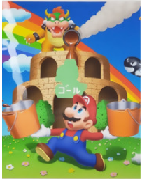

Chapter Summary
*RR24*
Chapter Notes
Content warning (seriously): Heavy themes
See the end of the chapter for more notes
The Lakitu Bro's film continued to roll…
"Don't you get it? NON-TOADS ARE NOTHING TO THEM!" Booigi II took their green Bowser racket, shrouded in a white glow, and smashed the podium to bits, the microphone ringing.
"-Freeze! You're under arrest! Drop that tennis racket!"
The boo narrowed their eyes as a red dot appeared on their chest, courtesy of the cop blocking their way. "Are you with them?"
"Positively as a sworn justice enforcer for Toad Town!"
Bam! Snifit Patrol became a fleeting twinkle in the sky to the fleeing spectators. In the corner of the boo's eye, a searingly bright light flew past. They turned to the far hedges on the property where a lone guard was firing erratically. Her backup ran over to send a concentrated flurry that ripped apart the land and chipped at the castle ruins. Booigi teleported to an old tree nearby and grabbed the trunk, making it intangible. A heavy iron cannon lodged in it crushed a group of guards. They bashed in the face the last one standing. As she crumpled to the ground, tanks were starting to roll in from the city and mar the lake shore with deep tracks. They fired red bullet bills, spiraling across castle grounds, with blinding smoke trails. After a flash of trepidation, the boo vanished to let the fire rain behind them, anything left standing up to the foot of Star Hill flattened. Booigi reappeared behind the closest tank to Royal Raceway, causing the last bullet shot to arc in the air and lock onto them again.
Guard after guard scurried from the tank, the last and largest struggling to squeeze out of the hatch. Booigi quirked an eyebrow as he begged for help, two seconds away from mince meat.
The explosion was felt for miles, a black plume on Toad Town's horizon. As debris and smoldering shrapnel settled, a dazed guard landed flat on his back, on the far side of the lake.
Booigi whispered over him, "I saved you for now, but your colleagues are going to blame, torture. And. Kill. You later."
Benedict rolled to his side in the mud, watching the boots of comrades trying to hunt the killer move in and out of the scope of his vision. He was yanked to his feet, or his knees at least by Jon.
"You're an idiot!" He let go, catching his breath as shrill radio calls filled the air. "What can they do with you now, eh?"
Ben pressed something into his mate's hand.
Jon watched Ben shuffle into the lake, water reaching his thighs, waist, shoulders, and head, followed by bubbles. Slapped out of that spell, Jon finally opened his sweaty palm. He held a dog tag.
"Raven! Jim! It's not like that!" Wendy shouted in between her butterfly strokes toward the pontoon.
The group gawked, standing under a mast flag embroidered with a hammer bro hammer and an electric razor crossed in an x pattern, her commissioned design for the 'Adolescent Anti-Monarchy Faction'. The koopaling princess impetuously tangled herself with that club in middle school, enticed by their doctrine of 'aggressive self-expression'. She feared her subsequent transient association was probably about to catch up with her.
A goomba girl, a punk with spiky purple hair and facial piercings, gave Wendy room to climb aboard. Her astonishment quickly faded, glaring at her. "Gosh Wendy, you got us shook with these mixed signals. Your crew did this obviously, so don't cry to us now!"
The princess wrung the water from her strands of hair, whipping it back. "No way!"
"What? So this 'flood' isn't to drive us into your dad's clutches? Sure," added her boyfriend Jim, a boomerang bro in a trench coat and white trilby. This roused the other adolescents to murmur in favor.
"It's not! Look, I'm ready to spill the tea. Yeah I've been sitting pretty in Daddy's oppressive forces but.. That was just because an East wind was approaching. Progress. Everything's changed now!"
The punk goomba girl's lip curled. "You cereal?"
"It's totes gonna be great. Just play along with Daddy for a little longer while he builds his fortress or whatever, then the fun will begin. I'm cereal."
Wendy's blue eyes breezed over everyone in the boat, awaiting their response with bated breath.
…
"Get us to the tower already, Johnson!"
"Aye aye, King Bowser!" The cadet fought to keep the ship, more akin to a rubber cataquack circling down a drain, heading for the tower. Waves broke over their tiny old boat, threatening to wash them away. If this was his demise, he'd still be ahead of most green koopa troopas who never got the honor of navigating their king anywhere, but at the same time he wanted to live to earn that elusive Koopa Troop pension someday, so he weighed on whether to 'accidentally' slip overboard until he had no choice. Bowser ran up to keep the wheel steady with him, just as a huge surge approached. Knocked away from the insurmountable forces of nature, the wheel snapped, leaving no one in control. Their boat smashed against another and another and soon a big pile-up of wounded vessels smashed the tower.
Crash! They were pelted with bricks, the ship lodging itself inside the tower.
"Yowch! Grrr. Everyone out of the way!" Bowser flung away the masonry burying him up to the neck and ordered everyone to on that dark musty exposed floor.
Web-filled corridors, mousers, and rusted chains piled around greeted the waterlogged minions spreading about, at least until toppling over from exhaustion. Bowser scanned over the chaotic sea, giving a start at a pontoon and kids surrounding his daughter on it.
"What is wrong, my son?" Kamek ran up just as Bowser was about to jump into the water.
He faced him while jabbing a sharp claw that way. "I gotta save my daughter from those losers!"
The magikoopa conjured up an iron three-block-high Bill Blaster. "Use this, Lord Bowser. Should a ship attempt to antagonize, we can pierce her soft walls, send smoke up her aft, and leave her sinking and hopeless!"
'Wow, Grandpa really hates whatever girl he's talking about', Bowser Junior thought before slipping to the upper chambers and away from this hectic, already miserable adult situation. The tyke shimmied past Ludwig, hustling down the damp steps against the flow.
"Vater-" He cleared his throat a few times. "I'm.. ready to resume command.. Is she.. still in peril?"
Bowser held up the cannon to see through the scope attached to the side. "Not anymore. Light the fuse when I'm ready...Aim."
"DADDY!" Wendy shouted through a megaphone. "We're all totes cool now."
"-FIRE- wha huh?.." The cannon smashed his toes. "AHHH!"
…
Within the newly christened Bowser Tower, minions zipped to and fro on its fifty floors. They'd covered up the big hole they made in a wall, and used higher and drier floors to furnish rooms with scavenged amenities, repair things, and establish quarters.
"..Yes Daddy, they've told all of our five million online friends about how great you are and gave you five stars on Welp dot com."
As Wendy's friends cheered and used an annoying blowhorn, Bowser let his dumbphone load the reviews. 'Bowser Castle 444 Dark Drive' shot up from 1.5 to 4.7 stars in the past hour, a historic record and only a point shy of Peach's Castle, and his face heated up, but that was more from Mario's instant message popping up.
"Yaaaas! I'm excited too and they're gonna vote for me to join the cabinet in Neo Bowser City!"
Bowser put the phone away, straightening up. "No voting solicitation... SEND THEM TO OUR NEW DUNGEON!"
Soldiers scooped them away, causing the distaff koopaling to drop to the floor and scream in protest.
Bowser covered his ears. "We're supposed to be on vacation, Babydoll. Relax about stuff like that!"
"Interesting," she began, propped up on one elbow. "So we're not moving forever? Either way are you going to delegate or what?"
"Or what? Ludwig's back and thank freaking goodness! That's his job!"
The koopaling princess stood. "But look at him!"
Bowser swung his gaze over the busy scene and found him immediately. The commander was aware he appeared suspect, his attempt to partially tunk into his shell, revealing only his messy hair, furrowing eyebrows, and tired eyes not hiding it well, though he was hoping that the guise would last at least until the flood receded.
"Besides my contagion, I am well enough, Vater."
"Hmph!" On her way to stomp up some stairs, Wendy brushed him hard, sending him flying like a thwomp tackled him. An older minion in the soggy lower room, Thwomp #3, appropriately was the first hard immovable object he fit.
"Sorry," he grunted, starting to inch away.
"You are excused." Ludwig steadied himself with one of the rusty hanging ceiling chains, "For the first time in my career, I have just decided that using a 'sick day' would be appropriate. In the meantime, refer please to my dear sister Wendy O."
"WHAT?" Thwomp #3, Bowser, Wendy, and Lemmy the latest arrival from the rooftop, gasped.
~Anything she wants! Anything she wants!
Anything she needs, I'll give you the keys
What she says you know I'll do, that's my gift to you!~
When Bridget cut the music down her passenger flushed, fearing 'Shackled' by the Pizzas was about to be ejected.
"-Yep. That's the fifth speed trap." Bridget shifted the B-Dasher down a gear, taking an adjacent street. "Are these cops for real?"
"Some of this was a little before I moved here, but Snifit Patrol was from a group of individuals wanting to protect the city like the Mario brothers, except without the decree. I never questioned why we play along until now... I guess it makes us feel secure?"
"I wasn't even going there, but interesting theory eh. I think it's more about having a free pass."
Toadette leaned up in her seat. "-I don't understand how that relates."
"If we have a single point of authority, that person can be blamed for leading us wrong. Whatever that Snifit Patrol misses must be okay. If someone calls it out we're just toads after all, haha.."
Toadette resisted voicing how severely she disagreed, mostly because that guard's wide smile was so infectious. She even answered her questions about various shops and landmarks around town with eagerness. Having a fresh ear, someone who wouldn't shut a door in her face, throw an egg, or else, felt exhilarating. Very shortly, it was time to test the power of the 80s rock song playing, infamous for it's subliminal messaging.
"..So, that's why Mushroomites began to call their failed anti-air flagpole explosives fireworks and that explanation stuck. Could I stop over at the precinct, by the way? I have to pick up something." Her smile was duller as she was just learning today, but she hoped it worked.
Bridget checked a watch. "Yeah whatever."
As they parked, Sergeant Howie waddled across the lot, heavy keys swinging at his waist. Toadette hopped out to intercept him.
"Excuse me, Officer."
He spun from his shuttle. "What cha need?!"
"I-I was authorized to retrieve-"
"C'mon then!" The grumbling whomp let her into the basic office, with worn if well-kept furnishings, a computer with a CRT, metal lock boxes, a snack machine that someone was bothering to keep well stocked, and a hallway that led to the cells. She asked for the Princess's parcel in the evidence cubby.
"Forgot about that.." Sgt. Howie pulled up his belt. "We lost some pages to the wind. Is what it is."
Toadette was well aware of that after a thumb through, closing it up quickly to preserve her princess's privacy. "Thank you."
"Do ya want this too? He's not wanted anymore."
She paled when he showed her a black bag wrapped and marked 'Zoo S. Diddley'.
"But- he's.."
He sighed. "You know how papers are with their scattered synopses. We never had DNA or a living witness. Thank the stars he left or it'd had been a ton of work! He only got Bowser Freaks anyway, including that ex-one that was a bus driver. Sucks to suck sometime."
She rolled her eyes at his brazen words while being pushed out of the station. In the B-Dasher again, she texted Bucken-Berry about Zoo's belongings, hiding it from the guard with the big purse. He wanted to check it out after some back and forth, probably thinking it was some morbid serial killer memorabilia, though if she couldn't get a ride down it wouldn't matter. They were heading west to Pleasant Path, so she wasn't sure how she was about to stall again, rewinding the tape for the fourth play.
Peach felt the span of her holding space, ungloved fingers gliding over jagged bricks. By estimate, it was half the size of the gaudy waiting room Bowser's Castle had. Add to that colder, grimier, and gloomier. She slid down to the floor, somberly facing the other occupant.
"Don't worry about me, Princess."
"You were absolutely frigid to the touch!"
"I know and it's quite alright. Tell me, what did you encounter in the fields? Before the waters came?"
"So many things. Which?"
"Only you know that."
She held her head, shaking it. "You are speaking in riddles, Toadsworth! You cannot be well."
He hated frightening her by interrogating or flinching when she got too close, but he found her just as irritatingly clammy. If one star interaction was why his pallor was deathly, another was why she faintly glowed.
"Every fragile relic out there has to be ruined now. Please, why does it matter?"
The old mushroom held his response as someone with rainbow hair whipped by the dungeon door. "That remains to be seen..."
…
Lemmy marched up the cramped stairwell in a reverie. First Iggy was giving him the stink eye, now Ludwig let Wendy take president? He meant precedence.. He couldn't be her secretary, not because she was 'a girl' as was Roy and Morton's reasoning, or a 'grifter' as Larry said, whatever that meant, or because 'I don't know' as was Junior's statement made maybe regarding that maybe life in general. She wasn't a great student of Kingly Law because of its 'archaic' name and her go-getter ways got her in trouble all of the time. Okay, maybe there was a touch of his brothers' rhetoric in Lemmy's thoughts on the matter, but either way, the already topsy-turvy day had been flipped on a new kind of axis no one had discovered yet.
He entered the high floor where their bedrooms would be. At the moment it held some damp gross mattress and a random assortment of belongings that belonged to one of the eight, though so destroyed it was hard to distinguish who. More clearly, that lumpy thing in the corner used to be Lemmy's inflatable play house, so he collapsed on top of that.
"-Piss off, Mort!" Larry scooted away his gamer chair, weaving through the maze of junk.
"I am thinking about your downfall. Your doom. Your undoing, for conniving with Peach." Morton followed him. "Kammy said you were at her room for a long time!"
"Freakin what?!" Larry hit a wall then. "Don't listen to her! I ain't working with Peach."
"You asked a dozen minions where the dungeon key was."
"Since when are you the hall monitor? I was just tryin' ta.. score!"
Morton smugly leaned against some of the family's stacked chests. "Your behavior is painting a petulantly plain picture. And it doesn't rhyme!"
Larry was known for his bad win rate against Mario brothers and pals, outright forfeiting his World 1 fortress during the last pre-Peace Pact siege. He had to get out of this tight place somehow.
"You ain't making sense!"
Morton gave him a little room. "Yeah, got mixed up there L4rry."
He punched his shoulder. "-Don't overuse that and make it lame."
"Your music's already lame, cruddy, mainstream."
"Shut up!"
Well, whatever. That worked somehow.
"Guys, what's going on?" Lemmy stepped over.
Morton gave a stiff salute. "I was grilling this lameo traitor!"
"Traitor? I don't know about that other stuff, but Larry can be into whatever he wants. It's not a big deal, so leave him alone."
Both Morton and Larry pushed him out of the way. Lemmy tumbled over a few things and then out of the room in a ball until she smacked a crumbly old wall. He wanted fresh air anyway he decided, climbing to the rooftop where a mere hour ago he was optimistic and longing to see his crew again. Now he didn't recognize the location anymore or who was already up there. A backpack with a mechanical purr was strapped to the lanky koopaling, and the VR headset covered most of his face, and extra multicolored wires were popping out of it.
"-I have assimilated all idiosyncrasies of Ignatius H Koopa. Status at 70 percent of memories. Currently archiving footage of disastrous Koopa Ball tryout that birthed the embarrassing nickname of 'Icky Iggy' in High School. Awaiting further command."
Lemmy stared at the incidental patterns in the glossy stone tile. "I can't respond to that, but I'm sorry for not believing in your stuff earlier."
Ignatius Delta's shoulders rolled, some life seeping in. "Oh, hey, again. I just Alt Controlled so this is me. Yeah, everything was stressy and I get it."
"Are we okay again?"
"Sure, but-" He checked his calculator watch. "I'll help you deal with the Wendy Menace after I handle some business. Use this totally hyper-realistic decoy to cover for me. Laters."
"Iggy!"
Lemmy was blasted with smoke of Iggy Delta's pack rocking him off into the stratosphere. Coughing and fanning, he bumped into a projector on the ground, temporarily distorting the life-sized hologram of Iggy standing and grinning as if for a photo shoot. If they were okay, why wasn't he brought along? He snapped towards his own watch then and discovered that he hadn't scribbled a new minute hand. He rushed down to the 50th level for his dad's meeting, so late there was no space inside the room.
"Where are they? These people run later than my sisters..." When she stopped the kart, the silence was loud enough for Toadette to gasp. "Really liked that tune, eh? Thought you'd be a rave girl, not a rocker."
Toadette giggled. "-Oh you know.."
"I'm joshing!" Bridget's arm remained around Toadette's headrest as she twisted around, looking for her buddies. They were at a flat, a few houses down from the Mario's residence. It had some highish grass and was modest for the prestigious area, but presentable overall. Toadette after all was a castle dweller, and before that one of many packed in highrise concrete coffins, so what did she know?
The pink toad settled in her seat. "May I ask you something?"
"I've been bugging you so far, so go for it. Hurry before these cringelords cramp my style though!"
"What is it like in Poshley Heights?"
"As stupidly affluent as they say. When people take their pure-bred poochies on a walk, they get to take a leak on a gold-paved street! A music fan like you would hate the scene there tho. Blokes like Bise live in the opera house, who should rebrand to.. whatever word means a bunch of hot air instead. Joining the King's service when I turned thirty was a mistake so don't do anything like that, eh." The guard faced her squarely. "Nothing happens. Most excitement I had was when we found the King in his chambers crying over his daughter-"
"Sup." The steely-eyed red boo's touch was gentle as he assisted the driver out of the kart, probably a little older than Bridget judging by the patches of gray in this beard stubble. "Sorry. Had a flat."
Toadette, whom Bridget excused away as being some 'city girl with directions', was further shocked by their brief kiss. The guard separated from the red boo and slapped him as two others arrived from behind the flat.
"Ow!"
"Don't get comfortable until you stop disappearing all the time, and not in a boo way. Trev, are you a secret agent or something? I don't get it."
The others, a goomba in a jade beanie and a vapor-spewing fuzzy, crowed at Trevor's expense, which he laughed off. "Cabbies are always getting caught up in bullcrap, girl. G-Man, show her what I got to make it up."
So these non-toads were.. Bridget's friends! If it was 'just a job' for the servants of Peach's father, could it be for the directors of the Jewelry Land Princess School? Could it be for her fellow staff? Could she be the weird one? Toadette was the precocious brainy girl who Peach adored. She had to have a verisimilar perspective. She had to!
The goomba unlatched a guitar-shaped hard case. Bridget ogled the instrument inside, a single-cut style with a burst finish on the flame maple top. The shiny chrome humbuckers, bridge, tailpiece, and tuners made the entire thing bling. Toadette quickly hid her matching expression by ducking in the kart. It was a Gibbons Lester P. Toad endorsement model that had to be worth many coins.
"Dude it's- it's sweet, just.. wasted on someone guitarded like me."
"Shut up and take the thing!" the goomba said.
"Alright, Goomfrey." She held it by the neck, strumming across the strings. "What's this finish called?"
"Dunno. Just picked a color you'd like, meork," the fuzzy rasped.
"Thanks Obed." She sat it in the case before she scratched it. "Who's house is this anyway?"
"My brother's shack." Goomfrey eyed a pink flamingo in the lawn with disdain. "He'll do anything to fit in with these bastards."
As he spoke, a green camo shy guy slithered onto the scene from the opposite sidewalk. He had binoculars and his rubbernecking made Trevor turn a deeper shade of red. Without hesitation, the guard fired a warning shot into the sky, scaring him along. Toadette shivered, unable to sink lower in the kart at that point.
The guard lifted the case. "Gotta go. Thanks for everything, but that ting at the castle's gotta be ending soon."
"Ugh, that?" Goomfrey appeared more sour, if possible. "Yeah, you better scram. Brother just texted. If he pays two thousand coins a month so he can be one of the 'good' ones, of course he'd attend-"
"-Get on with it man," Trevor cried.
"He heard screams of terror!" he went acerbically. "People got spooked and ran him over a few times."
Bridget clicked her radio on and pressed it to her ear, giving a start. "..Yeah, let's bounce."
The three friends scattered in opposite directions like they'd heard a siren. Bridget slung the guitar into the B-Dasher backseat and slung them out of the neighborhood.
"Might as well tell ya. Some boo diddly turned our rep into a bunch of ice cubes and maimed a few of us with a tennis racket. They ran an ID on em and his or her name is Boo Diddley. I know. What a clown."
"Oh my gosh. They were involved when Mr. Luigi defeated Zoo," Toadette gasped. "What's made them flip I can't fathom, but in serendipity, the Mario brothers are just across the border. They can help!"
"I'm outta time." Bridget stopped at a red light (for once), checking her radio again. "They want us out searching, and they might need someone who targets practices religiously."
"You won't get in trouble, I promise. You can even leave me there. Please?" Toadette asked sweetly, scooting closer.
The guard adopted a particularly intense look of conflict. Toadette knew only one other person to hold that when trying to talk himself out of doing something dumb, and his version wasn't nearly as adorable.
"-Why can't you show me one more thing?" The guard veered them hard left and down a major southbound road, heading towards rural land. "Only a charmer like you would get me to bend so many bloody rules in a day! Thanks for trying to make this day cool."
The pink toad twirled around a pigtail as the city shrunk in the distance, cacti lining the roads of the hot desert. "I- well.. The same." She gave up trying to sound elegant, leaning over to give the guard a peck on the cheek.
"Dude. Chillax!" Bridget said huskily, blushing.
Toadette snapped out of it, tapping the pause button on the all-but-forgotten tape. She froze after, body devoid of a soul. How could she? -This toad had a license and a muscle car and was older and a musician, or purportedly, with dark spots as was her preference, while she featured a lot of the color pink which was apparently to Bridget's liking, and-
What point was she trying to make?
They were 'Shackled' (Trademark)
Bowser sat on his red and gold throne, dried out a few moments ago by diligent fire snake, hot foot, and fire chomp minions. The burnt spot was hidden by it being pushed against the wall..
"-Since we don't need to recap, here's where we're at: We continue what we were doing, all that depressing stuff relating to Friday, then once there's land to stand on build a fortress or two. I declare this Property of Bowser!"
Predictably he watched his minions glance around to each other, their uneasy visages obvious in the candlelight.
"It ain't gonna look good in one day! It didn't even take that in Dark Land! Get a better attitude or else!"
"Our folk's been there for centuries and it still looked like a dump. Good luck," Larry chuckled to himself.
Peach came forward. "Bowser, what does this mean for me?"
He grinned at her, baring his sharp teeth. "You ain't going nowhere!"
"This is against our agreement! You can't prolong this game!" Peach gasped, staggering back.
"We aren't playing games!" the crowd replied, celebrating like they'd won the Koopa Bowl.
...
Bowser checked outside a smallish triangular window, watching the waters recede from green peaks, odd structures of black or white stone planted on a few. He'd have to send some scouts to reconnoiter. They didn't need to crowd up his Bowser Tower forever. Any idle thought like that helped to keep that blasted Mario from bothering him, saying stuff like, 'Wherever you're hiding. We're gonna find you before Sunday.'
Yeah right. Of course, Bowser had gone too far now to use his original batch of excuses. In some alternate universe when this never happened, he and the plumber would probably be doing that laser tag thing right then. Somewhere in his shell were crumpled reservation tickets under the pseudonym 'FF'. He forgot what it was supposed to mean, 'Frenemies' something? Or was it 'Forever' something? It didn't matter anymore anyway.
Thanks to some self-realization and a wake-up call from his eldest son, he was committed to humbling Peach. Attacking her kingdom was his modus operandi as a Koopa King until the Peace Pact, but this had nothing to do with it. He'd never mess with her people again in fact. This was all about him and Peach and Mario.
A huge thump rippled through the tower, shaking down what little decorations he had. His copy of 'Pride and Prejudice', a giant old map, and the bust of his brother were flung off from the shelf, the latter rolling and spinning across the floor. Bowser chased it down quickly, picking it up and peering into the effigy. His castle's demise had reduced it to the shoulder up, and that incident further chipped a horn. As vexed as he was, all he could do was sit it back and hope no one else blew something up downstairs. His brother had loomed around in spirit since he began to reign in castles, and even without one at the moment, he wasn't about to break that trend.
A minion stood at the door with a letter. "Sir? Note from Prince Ludwig."
Bowser jerked it away from the koopatrol. It was mostly what he already knew. Ludwig was about to sail to the next kingdom and take a train to enjoy his sick day in peace. Being the professional, it featured an itinerary. He would visit a bookstore and the office of 'Authentic Restorations Inc.'
"...Why would he want to deal with that right now? He doesn't think I can do this?" Bowser ordered Tanner to call the minions to his room again. It was time to don some rainboots, slip on the rubber tubes, and get to work.
"We'll just have to go on without the kid. Time is of the essence."
"Mario, you never met him properly, did you?" Luigi asked, keeping his arms folded.
"No. Why?"
He glanced away, not elaborating and Bucken-Berry wasn't going to take the slack. Thomas was a total loner, down to not keeping a phone. On that thought, he sent Toadette a text. Anything could be happening to his girl back in town since they last spoke. Trudging through wood-paneled hallways, the trio assumed they'd walk into a scene out of a drama, where the span between each beep of a surgical monitor increased, masked doctors crowded the operating table, maybe a defibrillator on standby, whether pertinent or not. Mario's pause got his heels stepped on, and then cleared the doorway, entering a plain room. One of their dear friends, with the tense disposition of someone enduring a nightmare, was being examined by a purple-clad toad. Dr. Topper and Dr. Toad stood back at a distance. No one was dressed for the job, the hammer bro displaying a rainbow spectrum with his coat and the toad devoid of one at all in favor of a trendy shirt, making it all revealingly impromptu.
"W-what's happening?" Luigi asked.
"This. I present-" He slipped up his long sleeves and rose his arms, from which a clear star with three more stars inside hovered from his fingertips, creating a brilliant light. "My Miracle Toadley Cure!"
"Use it."
Mario swiveled and the blue toad hurried out. "Cool Blue-"
"What's the problem? It's dangerous? Either way I don't need to be here do I?"
"Let him go.." Luigi said reluctantly, also considering what he'd gone through under the effects of that. "Is this safe?"
Dr. Topper tightened up his tie, specifically one he'd put on just for this confrontation. "It wouldn't hurt to adopt SOME professionalism here. We have the name already." He checked a clipboard. "Remind me of Mr. Toad's age? Fifty-three? Huh!...Sorry. He looks good. Well.. not right now but-"
Dr. Toad ripped the clipboard away. "We already know he's insured and has the mark checked for 'may resuscitate with highly experimental and dangerous medicine', John. That's not the problem."
Mario's gaze darted between Special World doctors with some suspicion. "Lay it on us. We can handle anything at this point."
"If you insist," Dr. Toad beamed. "The 'Mushroom Flu' is a colloquialism for any ailment from a fungal source. Without Dr. Mario's remarks, we do not conclusively know what species of fungi is responsible, assuming this is the same strand from his time. Fungus Up contains artificial mushrooms so that is irrelevant, and there are no surviving contaminated cans we know of. This is all a shot in the dark, but with your permission anything is possible."
The brothers huddled together. "Luigi, I trust your decision."
-That made one of them. Prof Gadd got mixed up in some strange sciences and now he could only hear from him when he sent a card on Festive Tree Day. If things got like that with his friend it'd kill him, but his condition was already doing that. He felt that he was picking between poisons.
Mario stood up from their huddle. "So?"
"..I can't say."
"I can. If I made it without it. He will," some stuffy-sounding person in a dark cloak croaked from outside the door.
"Excuse me? Who are you?"
"You'll see, Weegee. Do it. Doooo iiiiiiittt."
Dr. Toadley took that for an answer! "Hazzah!"
The energy from his palms blew everyone but Dr. Toad back, recording observations until Dr. Topper yanked him away by the coat. There was an additional, gentler gust in the room that flapped everyone's clothing as the ball of light dissipated over Toad's body, followed by his monitors firing up with activity.
"Is it an accelerated process? Yes it is."
"He has a 200 BPM heart rate," Toadley's intern burst into the room.
"-A very accelerated process."
Toad's eyes opened, bloodshot but with an unmissable spark behind them. "Did we win? Ha ha.." His soft laugh draped the room in solace. "You ain't leaving without me, are you? Guess who's back."
Luigi wiped some of his sweat away with a cloth. He only held back from hugging him because he knew he wouldn't let go. "You!"
"Did I throw hands in a dream or something? Sorry."
"I can't even feel it anymore." He still had the bruise on his shoulder. It hurt. "Rest up. I'm not sure if you can move too much."
"Can."
"Slow down! That's under contention."
"Better not be. Anyway, bucket!" he clarified.
They promptly gave Toad space as he vomited gallons of dark toxins into a tin bucket. Spectators watching from the window and door haphazardly left wide open hollered in celebration, or some pastiche of sort, for Mr. Toad Kinopio Toad, Earl of the Mushroom Kingdom was awake.
...
Bucken-Berry was wandering around when a slew of folks swept him away, into a lobby with La-Z-Boys and wagon wheels nailed to the walls and knickknacks his face was promptly smushed against. After a few more seconds, the bunch shifted on, allowing him to peel away and breathe again.
"They're exalting that inefficient Houdini as I predicted. He will need another day to create another, and unlike Morris, that joker must sleep at some point. By then we'll handle this in a more ORDERLY fashion," Dr. Toad fumed to himself, scribbling on a notepad. "Then they will haul me up in the air over and over, and I'll politely decline of course, because..."
"Hey." The blue toad tracked him down outside in the sun again. "I-it worked? Y'all fixed Toad?"
"Yes. Did you work for him?" He was eyed down by the taller blonde. "You make me less nervous than those Mario brothers, so you will pass this along will you?"
Bucken-Berry sourly accepted the paper, hastily written out procedure codes and else, signed by Dr. Drew L. Diddley.
The blue toad's unibrow scrunched in the center, the page crunching in his grip.
Where had he just heard that?
Where did he hear that?
The koopa reporter turned to stone at the wheel, blew through a light by mistake next, and every guard vehicle that passed by stuck the fear of Eldstar in her. She didn't know where to start with what had unraveled before the eyes of thousands, soon to be more. Pulling up to her co-worker's condo off Pleasant Path, the Lexus was missing and the front door was slightly open. She propelled herself to his porch and found his living room in a mess. The sofa was flipped and papers were scattered on the hardwood floors.
"Mitch?!"
"I'm fine. Had to pay locksmiths to break me in," he said from behind a shut door. "I know what happened. Hold on."
Waiting, trying to be calm, she stared at a painting on a red-painted accent wall where they were two decades younger and on a beach in bathing suits. In the photo below, Mitch was younger, in the vest and white pants getup of any castle toad. She darkened, remembering how he was abruptly shut down at the very end, all over some extra 'gifts' he couldn't help having.
"Why would ya frame that with the happy memories?"
"...Oh that one. Kylie. Babe. It wasn't us riding our bikes around in high school solving mysteries that made me what I am now. It was that day. Anyway, I'm ready to see them."
The door opened, and the green toad wheeled out. He was as dreary as earlier, only in fresh attire. Kylie was bringing out a pen and a pad when she caught up with what he said. "Who?"
"Them. Respectfulness aside, Boo is literally a 'they'."
"I ain't here for that!" Kylie dismissed. "All I care about is that Boo's declared war. I don't know why!"
"Ask."
A shiver went through her spine, dropping the pen and paper as Boo drifted through the front wall. "Hello, Ms. Kylie. Mr. Mitch."
"-Boo, heh, hi fella! You have some, uh, valid concerns but-"
"What?! Have I said something wrong?! Huh? What part then!?" Booigi II screamed at her, showing the racket. The grip tape that once said 'Bowser' and later 'Zoo' had been scratched out in favor of two vertical lines. That was it. They continued with narrowing eyes, "I don't have time for diplomacy, Ms. Kylie. They encroached on us, so Eldstar's will, this is the time to extract the accountability out of them."
"This makes you no different than Zoo!"
"Wrong. Boo Diddley's cousin killed many. I won't kill again unless. I. Have. To."
Booigi II retreated into the shadows.
Twenty minutes later, the door of the recovery room crept open, basically someone's empty if quiet and separate from the hoopla cabin. The patient was all caught up, and that was probably why he didn't have the pass to get out of there yet, even after promising that he'd only oversee the adventure, and not throw a punch or two at bad guys or anything. (Wink)
Two visitors, hand in hand sauntered in.
"-Hey Toadette, and.." He trailed as the pink toad broke out of the daze and severed the grasp. "Are you cutting out on Cool Blue now?"
Toadette stumbled closer. "Mr. Toad, oh my gosh no. I- Bridget and I … We... It was all for a ride here! I swear!"
"You gold digger!" the guard accused, cornering the stewardess.
"Hey!" Toad leaned up in bed. "Our homegirl's a nerdy goof like you thought, just.. having some delayed college experiments. Speaking of goofs, you shouldn't be here anyway... Whatever, I won't snitch," he added, but only after he saw that she was mortified significantly. "Just hand this to your squad, and say it came from Parakarry or something from me. Just do it. It'll explain everything, including why some of us are going nuts."
She accepted with conspiratorial glee, scanning his 'story'. "Ookay... Huh. I'd never've thought!"
Worked every time. Every time. It was in fact a shame toadettes were so malleable around him, because...
Bridget folded away his decree, turning to Toadette and making her recoil. "I don't know how I let my eyes wander with you bein' such a basic b-"
She covered her ears. "Don't!"
"Brat! I was gonna say brat!"
"Oh..."
Bridget reared back a fist. "Actually I was gonna say cu-"
"-Homegirls, I didn't pay for the WWE Diva package, so don't give me a free show. What happened?"
Toadette's head dropped to her shoes before blurting, "...I used 'the tape' to get my way! The one with the cupid effect! I didn't know it'd work on both of us!"
Blam! The guard kicked the door off of its hinges, the object flying so far away it became one of many unidentified objects Southerners reported daily. "I've heard enough, creep. Cross me again and my foot will end up somewhere else!"
Toadette dejectedly stood in the frame. Toad was going to say something, maybe mention that Kinopio-Kun was back to being a sycophant again after one phone call, or that he was still needing some updates on the staff, or how he wasn't about to mourn the loss of Saul T., but he noticed a blue toad sprinting their way and he knew things were going to get ugly without any fuel he could add to the fire.
Lemmy reached the 'dock' as they were calling it, actually the fifteenth level of the tower where the troop crashed into it and made an opening. The level had dropped so that water didn't flow freely, but all he had to do was look down, and a floor lower was a leaf raft and Ludwig, packed lightly, probably because it'd sink him. All of the minions were busy with something upstairs, so he had nothing to lose.
"Waaaaaait! Can I go with you?"
Ludwig craned up with stern critical eyes. "Are you sure?"
He nodded.
He lowered the scarf, smiling weakly. "I was hoping my trusted adjutant would ask!"
Chapter End Notes
Like Bowser Junior 'I don't know'.
Split from previous 7/26/22 (small portion, some ideas), 8/2/22, 8/4, 8/5, 8/7, 8/8, 8/9, 8/11, 8/12
Edited: 11/22/23, 1/17/24, (edits for clarity 8/8/24)
RR24: 10/11/24- 10/17
Chapter Notes
I've been waiting for this one. *RR24* (Yes the rewrite too)
See the end of the chapter for more notes
"Stooooop! What happened?"
The red and green plumber pried apart the toads in the lawn of Toad's cabin, utterly confounded.
Toadette clung to Mario. "I.. I.. I.. did something so.. lurid. I crushed on someone else and.. to make it worse.."
It wasn't his place to say this, but they just didn't have time. Bowser was somewhere out there behaving like a freight train, on an efficient schedule, impossible to stop quickly, and maybe even deadly to anyone who attempted.
"Was it a non-toad?" Luigi asked for him. Close enough to where Mario was going. The taboo came from some ancient apocryphal, claiming that there were no genders or any binary but 'fungi' and 'non-fungi'.
"No. She was."
She? Mario thought, colors draining.
"She was.. a King's officer! The one you all saw stomping away." Toadette cried, producing the cassette.
Bucken-Berry swiped it from her, boring into it in a maelstrom of rage and confusion. "Where the frick did you get this?!"
Luigi tilted his head to read it, frowning. "Mario? Oh, God, it was The Pizzas, 'Shackled'."
The red plumber hadn't fully shaken himself out of the first daze. "Cool Blue, how-"
"Me?! I didn't give freaking give it to her!"
"Please- don't," Luigi encouraged, staying back some. "Even if he did, Mario we both remember how, outside of unsubstantiated reports in the papers, the subliminal messages had no leverage on anyone not already lovestruck. If not, it'd been out of print then, long before MimiToo movements. Toadette.." He faced her worriedly. "The rest of us have seen that guard before, haven't we? She had ice cream or something?"
"Yes, that.. that was Bridget," she ground out. "I didn't get why it happened until now. I don't want to leave you, Blue. It's just that she was unrefined yet soigné, darker yet radiant, older yet teeming with youthfulness. -Oh and possessed a cool car. So.. she was my type."
Bucken-Berry was frozen in place before turning to the Mario bros, cracked into as many pieces as there were sand in the desert. "S-she- she's..never.."
Mario adjusted his cap. "Kids, I know it's painful to change the subject, but I have to know if anything besides that happened back in town."
Toadette burst out in tears, collapsing to her knees as she told them everything. Halfway through, Luigi whipped out his phone and excused himself, so panicked he smacked into the only Mushroom Bus stop in the south.
Mario sighed out. "-Okay. Stan can bring the castle staff down before. It's not a choice. I'm ordering it before they get wrapped up in that assassination stuff. You and Cool Blue, just give each other space. There's more than enough here, so I don't want to hear of another fight. "
"Whatever," the blue toad grunted.
"Yes sir. Umm, Blue, take this. I know it doesn't make this up." Toadette retrieved a small painting from her handbag.
The way 'Assimilation' trembled in his hands, they were certain he'd either snap it in half or fling it into Mt. Rugged, where it'd explode like a missile, but the signature on the back stunned that out of the toad. Suddenly his relationship woes were negligible after all. "Actually it does, babe. A little."
...
"She never wrote poetry for me like that, but you'd know that. I know she confide in you sometimes bro, platonicaly and all. Don't worry I was only ever slightly jealous.." He rambled, sitting in a lotus position on the cowhide rug, inside of a westernized hospital room of his friend with modern chilly ac pouring in. Everything was mixed up about the situation, yet it made more sense than anything beyond those four walls. "Where can I go from here man," he eventually settled on.
When he mustered up the courage to look the golden bedbound toad in the eyes, they weren't fixed forward and 'across the sea' like before, but he'd shifted his head to the left some.
Bucken-Berry unwaveringly followed the direction under the baking sun until his skin was red and his lips chapped, discovering a sequestered area even from the standards of the South. The big googie-style billboard stated 'Area 64', bordered by bulbs that were off given the time, and still wouldn't work at night because half were busted. Beyond that was a high silver water tower, and walking closer, something was weird about it.
"-Sorry, dawg. I heard about you and Toadette." A sagely figure appeared behind him, pulling off the hood and revealing a heavily bandaged but soft recognizable face.
He responded somewhat mutedly. "You're.. But how'd ya- "
She unraveled a part to reveal a bunch of red abrasions on the bronze skin. "This is from me getting dragged around," she laughed. "Not a flesh-eating disease or nothing. Dr. Toad said we can't tell anyone. It's gonna mess.. something up."
After a pause, Bucken-Berry punched a hole through the billboard.
"Gods. You okay?!"
"-Zoo got off on investigating his own crime and Dr. Toad's his brother! Drew's using that Dr. Mario's notes excuse to stay involved. Same principle. He doesn't care or knows about a cure already and isn't telling."
Daisy pulled her hood on again. "I.. well, I got over the bad mushrooms naturally. Something about my different diet-"
He beat his fist into his palm. "So we gotta do something before people kill over. We only have like five restaurants in town. Variety ain't our strength. Is that how the phrase goes?"
The boo glided over the pieces of the Princess Mush IV statue scattered in the grass, the park abandoned. There were puffs of smoke dotted the skyline and boarded-up businesses. Their enemies were temporarily distracted by the rumor that the Earl of the kingdom wanted reunification, but soon they'd be back on the prowl, and boo would be ready. By the power of Eldstar, every single one of those toad oppressors would pay!
Unexpectedly there was a civilian visitor. Chuck's head remained on his shoulders only because he was holding Booigi's own phone, cracked and slightly melted, but operational and ringing with Ashley's Theme.
A glimmer of Boo Diddley resurfacing, the answered. "Luigi?"
"Boo? What's going on?"
Their eyes watered. "Luigi.. I'm sorry.. I.. all I remember is being so angry and lies and.."
"-You'd better be grateful that Toad is trying some 5D chess tactics. Don't get into any more trouble until I can come home, okay? Bye."
The boo remained fixed on the black screen for a while, paralyzed.
"Not even trying to hide his bias.." The second brave soul was wheelchair-bound. The boo felt like a part of them knew his face, but the other didn't at all. "They're his kintype, most of his fan club."
Booigi slowly spun to him. "What?"
"Toads."
"Then.. why are you telling me this?"
"I'm a journalist," Mitch chuckled darkly. "I have to document the truth."
Foggy mask and icicles in his eyelashes aside, there was a bad guy in his midst! The officer trapped in a sub-orbital launch armed his taser. "Halt! I hope you are staying on the straight and narrow!"
The menacing iron and flesh villain flying alongside him, or realistically just Iggy Delta broke his Super Koopa action hero pose to wave. "Nice electric behavioral correction rod, but no can do. I already picked evil genius as a career path Officer, so that might be a problem, hahaha."
"Let me read you your-" He realized he didn't have the card or citation book. "-Or I'll let cha by with a warning..." the snufit drawled. "Off the books, what are you doing young man?"
"With my enhanced abilities, now is the time to execute: Find Backstabbers Desu!"
"Who are they?"
Iggy stared at the blue and green swirls of the Earth below, sobering. "Sam and Slam, top math wizards in Koopa Kollege. After Lemmy got a job I was often ditched, and on a whim, they invited me along. It was fantastic! I got my first sun tan! We got into clubs Officer, and within six feet of attractive females- a personal best! But.. they started to turn on me. I felt it was karma for ignoring the red flags and other shady machinations."
"Let me tell you something," the officer went in this fatherly tone, like if they weren't flying in space he'd have sat the koopaling down for some straight talk. "I've had partners that put on a pretense, and others had a genuine passion for vigilantism but weren't assets overall, just the first three letters. It's hard to weed individuals out of your life when they haven't always treated you unwell, or alternatively they treat everyone unwell except you, but it's worth it. Everyone I have now cares deep down. You should be upfront with your feelings and if you can't reconcile, I'll arrest them!"
"For me? ~Sugoku tanoshimi ni shiteiru!" He fist pumped. "Forget the physical property. If you tase them, make it over my dignity dipping into the critical zone!"
Snifit Patrol patted around his holster. "Yes indeedy! Just-"
He was already gone.
"-Be careful-"
….
Iggy Delta soared through the darkened tropical skies of the dolphin-shaped island, activating his X-ray vision. The coastal Delfino Plaza was a ghost town. Further inland natives could be seen huddling on the upper floors of buildings or under terraces to shelter from rain. He tuned in his hyper-sensitive audio capturing..
"I swam and swam, swimmingly out of the way brah, getting away from that 'stuff'!" some raccoon at a fruit stand said to a yoshi.
Iggy Delta reformulated and blasted off in a Westward location. Sunshine Airport was closed for weather, light rain beating on their runways. Ricco Harbor was also non-operational and stormy, with sinking or listing ships littering their coast. As he traveled closer to Sirena Beach the clouds grew exceptionally black and thick, the sunlight unable to penetrate. Dipping below, he only saw water up to the mountains. In disbelief, the cyborg dove closer, rescanning. He detected inorganic followed by organic material beneath him. Hotel Delfino, or parts of it, was there all along, with occupants. Frightened out of his shell, he poured all his computing resources into scanning for survivors, until a water spout caught him up, whipped him like a blender, and slung him towards the mountains. Landing in the supple wet soil embedded half of his body, the prominence of the friendship woes fading, and a Shōnen protagonist he was not..
Unearthing, his ocular sensors blared an alert towards an alcove. Someone was carrying around a bell! He fired five lasers on the spot.
"Yowch!" The bellhop dropped the molten brass object, blowing over and kissing his fingers. "Stop playing around and get in here! Weather's borked, mecha-koopaling brah. This is why we need more electric karts.."
"Whoops, I thought.. Well I agree Sensei, but.. Sorry."
The pianta wisely kept his distance as Iggy entered, flushing at the revelation that all he saw before was Hotel Delfino's old desk bell. There were others present, in various states of undress, a few with flashlights, spotted around or behind the lava stalagmites. Swoopers screeched distantly.
"Sam? Slam?" Iggy heard a whimper from far off and didn't need computer assistance to recognize it. At one party they almost broke their arm trying to wrestle with Roy. "I'm done standing aside while you abuse me and everyone else! Like Koru against the Super Plumbers, you will go down!"
"Aye! I submit! F'rgive me!" Slamondon crawled out of the darkness, making Iggy stagger back into a stalactite.
"-O-okay I do, but where's Sammy-sama?"
When he met his gaze slowly, Iggy knew. He shot out of the cave, and up into the unadulterated crest of the atmosphere. He had no direction on what to do or where the officer had drifted off to in the solar system.
The noki kept his head down shrewdly, though spotting a certain group of scoundrels in the court was like the amber sun above peeking through the clouds..
"-Yeah that digital coin thing crashed, so my mom is working on my bail," Azul the blue, or mostly orange in the jumpsuit, shy guy said. "She'll only need a few hundred extra shifts at the Li'l Oink farm."
"-And your part'll be what?" snorted Dr. Terrace. The whomp's unbuttoned uniform was taut around his square back, and his tray was picked over, leaving the veggies. "They need garbage pickers I heard."
"No need, Terrace. I just came up with a MLM scheme. Y'all will be my downline right?"
"Could you elaborate a little dearie?" The elderly toad beside him mentioned cautiously. "What exactly are we selling?"
Azul drew out a long sigh. "A dream, grandma. I know you never sleep but the rest of us are familar. We're already locked up for conspiracy so no problems with double jeopardy. Are you in or not?" He slumped, arms folded coolly.
Dr. Terrace smirked. "Put me as a maybe, child. Whatdaya think, Nass?"
"-That we're getting distracted! Stop it!" Nass Toad was on the right of Dr. Terrace. Her black hair hung limp and oily, almost unrecognizable if not for her designer prescription glasses. "We are to focus on our 'mission' so we can confront Theodore first, second we track down my.. my daughter.." She teared up, prompting Mariam to pat her hand from the opposite side. She thanked the distaff toad, then hardened towards the men. "Capeesh?"
They nodded obediently.
"-Do you mind, doctors?" Jelectro slid onto the bench next to the older toad, '(Mariam?)' as he'd just bothered to learn.
Her face sparkled in recognition of that hot tourist visitor, while her friends rather aggressively ignored the noki, Terrace even munching on the vegetables to avoid conversation.
Jelectro dramatically uncovered the Couples Cake. "More for us, madam. I am thirty-five today!" Or close enough. Both raised their safety composite material sporks together and gave a toast with the paper water cups. "Bon appetit."
"Thank you, dearie."
She dug in alone, devouring the small cake in seconds. The noki resigned himself until there were crumbs left. He sorted through it with his spork, poking at a.. plastic knife within.
"Merde."
Amongst the watchmen outside the fence was the strollin' stu Agent 0088, his old civilian name lost in the sands of time, leering at the noki. Jelectro knew he was French, but he did not deserve this! He massaged his temple, gathering strength.
"-It's Zip Toad!" a guard squealed, using a passcode to open the floodgates to the outside world. That prompted troves to abandon their post and swarm the celebrity on the property outskirts, unseen by the public since three years ago.
Jelectro left the table with the pan. "Good luck doctors," he purred. With his rather compact nature and the abrupt lack of supervision, he closed in for a better view unhindered.
"Get back you animals!" the agent barked, whipping out a gun at them.
"Hey, didn't Zip T wrestle with Donkey Kong over a banana?" The guard revealed theirs from lunch. "Will you sign mine?"
As they crowded in, the blonde celebrity backed up until his foot dipped in the air. Pebbles dislodged by his sneakers rolled down the steep hill the jail sat on. Suddenly Zip T. tumbled backwards, whacking against a large boulder halfway down.
"Retrieve him, idiots!" radioed the senior officer from the look-out tower.
Her underlings scaled down the treacherous area, dreading the lawsuit certain to ensue. The first one there kneeled with the dazed celeb, whereupon their vision whited out for a second. Now a strollin' stu was in the spot of Zip T., banged up and bruised.
"Hey. Umm-"
"Dylan, behind you!" someone radioed back.
A torrent of orange inmates swept everyone away, scattering into the city. By the time the senior warden slid down from the watchtower, she was alone in the court, tables flipped and trays forgotten. She broke a glass box, retrieving the Squirt Gun Thing encased inside, and with a war cry leapt over a covered cake pan on the floor to hunt down some convicts.
…
The silver pan lifted. Jelectro picked the lock in the offices to retrieve his binned items, changed into his normal getup, and leisurely took the nice pathway from the jail, blending in with tourists in the dense shopping district. If he followed the Keelhaul river, he'd find some help and do well overall. His only danger was someone wondering why the noki scuttling around was so wobbly, with a constant nosebleed.
"Here you go, sweetheart." A black ratty widebody sedan pulled over, the driver holding out a pink frilly tissue box. "Nice trick back there."
"You are welcome, Trevor."
The noki pressed the box into the red boo's face then bolted, cutting through a shady park, crunching on unraked leaves from last autumn. The coast seemed clear, but he knew better and spun to lace his attacker in the abdomen with the plastic knife, immediately after they emerged from the shadows. Blue blood glistened from Agent M's broken skin. Jelectro swiped under his Hawaiian shirt, but his experimental freeze gun was missing, allowing M to smash a mini practice amplifier over his head. Later the red boo would be delighted to find that it still worked, due to that Peavey durability.
…
"You cannot park there, I dare say," warned the gentlemanly parking enforcer.
"Alright alright.." The steely-eyed illegal parker slammed down the trunk of his sedan before the toad came around and slapped a ticket on him. Shortly stuck at a railroad crossing, he checked himself out in the side mirror, feeling around his jaw. Despite the thickening stubble, a snorkel should fit properly.
The rainbow haired koopaling shifted the stiff seats, wishing he brought his travel cushion. Without any entertainment, Lemmy had nothing much to do short of watching whatever was past the Riverside Station. Brown terrain adopted a steady gradient to green. Soon cultivated fields and asymmetrical classical homes with turrets and pastel colors were perceptible through the dusty glass.
"Can you tell me what's happening?" he asked exhaustedly.
"It's convoluted."
"Can you make it simple?"
"I'm afraid not."
Lemmy leaned on his elbows, almost dozing off until-
"-Thank you miss," Ludwig accepted his third wrapped protein bar from a maid passing by and scoffed it down. He almost ate a fourth, then caught himself, or caught Lemmy catching him and pocketed it instead.
Lemmy could have sworn he compared those things to experiments in Iggy's basement, so his appetite oddity was another to add to the pile. He willed himself to push it aside and make their getaway fun. Get pumped!
"-Are ya Luddy?.. Pumped I mean?" He leaned up. "This is where my troupe blew those snooty Cirque du Angry Solei jerks off the stage. Maybe we can check the venue out and toss a cabbage or two. Those stars suck!"
Ludwig faced him, through his topical hard clay Angry Sun mask. "What?!"
"-Only if you feel like it," Lemmy added.
"No no. I.. misheard." He cleared the scratchiness from his throat. "Might this be our stop?"
Actually, their stop was their snouts against dirty floors following that heavy bout of breaking. They snuck around a bob-omb buddy engineer by taking an emergency exit, slipping into the station where thick white pillars held up a high ceiling with intricate artwork, amplifying the clamor of the toads, bob-omb, and bumpty walkers crowding at the revolving doors out.
Lemmy held up. "BRB."
"Lemmy!" Ludwig scanned for him unsuccessfully through the slits in his mask. He yanked it downwards some to read the monitors over the ticket station. Besides train schedules there was, to his horror, breaking news scrolling at the bottom.
'LIVE Breaking news: King's representative murdered in Toad Town by Mushroomite. Mr. Toad revived from Mushroom Flu, informs King's servants of wishes to join the King's league again. The location of Bowser Koopa, abductor of Princess Peach as of Friday unknown. Analysts speculate on repercussions of Princess Daisy of Sarasaland being a victim of Bowser's attack…not that we care about her…(The writer of that portion is now fired)…Speaking of beauty ladies, you can find the Traveling Sisters downtown at..!'
Ludwig felt faint.
"Drink!" Someone nearly knocked him over, shoving a blue surgery slurpee drink into his face. Ludwig chugged half of it before he pushed the jumbo sized cup away from him. Lemmy gave him room then. "Better? What was that about?"
Ludwig winched through the brain freeze. "We must move on!"
The less showy outskirts was their aim, where the brick paved sidewalks were tepid by the afternoon sun and the clubs, shops, and inns were sparsely populated. Some citizens were on the streets with top hats, canes, clutch purses, or a poochy on a leash. Vehicles were rare, always cruising slowly if one appeared. A pedestrian overtaken by the curiosity of a koopaling and a 'clown' meandering around would step in their way with a 'pardon me' or such drivel, which Lemmy would expertly respond to with a 'talk to the hand' gesture. The shadows from the lamps stretched across the street by the time they made it to the first destination, so there would be no time to spare for Cirque du Angry Solei bashing.
"Will you pick up so and so for me? Good!" Ludwig passed over a thick leather wallet and hustled across a suspension bridge spanning a wide canal.
The granite auditorium for Conscientious Villainy stood behind the eighth flagpoles of each major kingdom, with an infamous flower arrangement of a Bowser Flag in the lawn. A magikoopa with a long silver goatee, followed by a slew of others carrying suitcases and carry-on bags filed outside the auditorium, the final one dropping his keys in the hands of the toad officers manning the door.
Ludwig grabbed a flagpole before he collapsed. "Don't.. close.. up. Please! I-" He let go, trudging closer. "Beg.. Of.. You!"
A more middle aged magikoopa at the back of the group broke off to approach the apoplectic guest. "How wonderful to see Prince Ludwig. We're only moving out for remodeling."
The commander crawled to his feet. "I don't care about you wussy imbeciles. Is the Authentic Restorations Inc. office here or not?"
"The owner abandoned his location." He stroked his beard. "I don't believe he told us where to."
"Try to believe!" Ludwig snatched him closer by the robe.
"W-well uh.. it-it might be somewhere unexpected! He was getting older and trying to retire from the replica making for desk jobs-"
Ludwig let him go, dropping to the ground again. The one koopa who 'died and lived again', albeit in a different way than he was dealing with, was somewhere he'd never find.
…
"Wouldn't expect to see a koopaling here," the old hunched paratroopa said at the door.
"Oh, we're not attacking or anything! My Dad just doesn't like Peach. We've technically quit villainy and I work at the Emerald Circus."
"Interesting. I can see that."
Such a milquetoast observation felt great at the shaky point he was at, plus he didn't seem to be a supporter of the Cirque du Angry Solei, so double score! Lemmy sat down 'Rocks: What They Are and Where to Find Them'. Well, the owner knew where to find them, in the dusty bookstore. A window was boarded up and he could still see some sparkles in the carpet under it. They had a few picture books, but no magazines or hobbyist merchandise, so there was no reason to dawdle.
"Do you have Ex Spatio Obiecti Specialem Lexicon?"
"That?" The bookkeeper abruptly set a red book on a shelf, weaving around shelves to duck behind his desk up front.
Lemmy followed him. "Did I butcher or say something offensive in another language?"
The mature paratroopa reappeared with a green, ancient-looking book. "No. Don't you recognize me?" He adjusted his glasses. "I was the postmaster in Toad Town. Yep. After attending a few funerals, this shop landed in my hands. Course, those relatives were in-laws and Amazy Dayzees at that. Do I look like a flower boy? Course not. I'm not about to let dangerous material walk out just because I'm trying to scrape up enough money to hire someone more 'presentable' for this community."
"Dangerous?" Lemmy almost laughed.
"For most folks it's benign gobbledygook, but for that one percent left, they could end the world with this!"
Unfazed, Lemmy dumped the contents of Ludwig's wallet on the desk, bills and coins scattering everywhere. "Is that enough to change your mind?"
"Stars.." 'Bookmaster' sighed. "You don't get it."
Lemmy bit his lip. "-Uh, Maybe that's why it's safe with us! We're only here because my brother is sick lately, and all I know is that he must really want this book because he never asks for help. He'd use it safely, I promise."
Bookmaster stamped something inside before closing it. The koopaling feared it was over, but then he pulled some paper from a roll and wrapped the book in that, then placed that on parchment tied with a string. "I want to see it back in a week. I know where you live!"
Leaving the store, an orange jumpsuit-wearing crazy guy almost flattened him, and if he hadn't cartwheeled for safety a second later, the officers carrying a giant Water Gun Thing would have nailed him next. He saw them hose the escaped criminal into a waiting open paddy wagon. A few gave him some funny looks so he slipped out of that scene by rushing across the bridge Ludwig took. All along he slid his paws over the railings. Often something gold, fish he guessed, slithered around in the olive-colored water below. Shortly a gondola drifted underneath with a spiffy human captaining it and a female noki on the rear holding a lorgnette, whispering a lot between them.
Paranoid, Lemmy avoided eye contract all the way to the rendezvous, a water fountain. His brother sat on the edge, snout buried in his hands, and shawl slung over his back.
Lemmy plastered on a smile. "I got the book at least!"
Ludwig accepted the package with a quiet thanks, holding it up, gracing the edges with his claw and then tucking it under his arm.
"-Sooooo. Are you okay?"
Eyes clenched shut, "NO! We shall never meet!"
"Who?"
Ludwig shot to his feet. "Our father's brother! Onkel, who I knew to still be alive and somewhere out there, no matter what our records of sophistry said but now- Now, but those freaks!-" He waved back towards the auditorium. "Expunged his office space I am sure with their nonsense. There is now an infinitesimal chance that I'll meet him before I perish!"
Lemmy slapped him. "Luddy! Breathe! Gosh... We'll find him later."
"There is no later! The brutal and complex truth is that my goals have failed. I yearned for the salvation of our people and while I sincerely believe that the rest of you do as well, I will have no part in your success or failure. That was taken from me this Friday!"
A chill went through the rainbow-haired koopaling. "..Can I ask you something? About last night?"
"What?"
"Can you tell me the thing you're not telling me?"
"Can you?"
"Yes."
"You first."
"Are you serious right now? I started it, so you first!" Lemmy half teased.
Ludwig stopped trying to fight, meeting his brother's gaze solemnly. "Notwithstanding rational explanations, merciful gods have tasked me to locate malicious star entities whose leader possessed and executed me last night.."
…
"AAAAAAAHHHHHHH WHAT THE HECK?!"
Lemmy gunned down the block so quickly, the gust sent Ludwig into the fountain. Soaked, he traced his secretary's path into a more populated spot where people shrieked or fled. Lemmy stopped at a crossroads, his thumb in the air.
"I am not being fictitious!-"
Lemmy's powerful 'talk to the hand' gesture created a force field. Ludwig bounced off and clashed into the pottery of the storefront behind him. "That is crazy Luddy. I'll take a cab home.. I can't right now. I just can't!"
Walking traffic thinned and a black sedan marked 'CAB' rolled by. Lemmy swung inside. Ludwig kept close, waving for attention for another block, the pedestrians ahead holding the vehicle at single digit speeds. An animated discussion was occurring inside he could tell. He hoped the cabbie didn't take plastic. Once they'd strayed towards another rural portion of the city that river sliced through, the obstacles were no more.
Lemmy glared at Ludwig from the side mirror. "Hit the pedal to the metal!"
The car backfired, noxious smoke blocking Ludwig. By then gentlemen with sticks and ladies with parasols responding to reports of koopalings in the neighborhood began to hunt him down. He pushed and shoved them off of him, having a nightmare within his nightmare.
"-Monsieur Koopa," yelled a French woman.
Ludwig lugged his attention to the gondola on the river.
"Get-a discount ride today. Got-a special someone? No? (You're lucky)," the human carrying the oars grunted, Italian accent heavier than a Mario brother's. "50 coins."
The noki woman stubbed his toe. "Lets cut ze act. Monsieur Koopa, We are after zhat 'cab' too. Climb aboard!"
She pried her face from her palms to face the visitor. He smiled. It was bright and perfect, so different from the beautifully imperfect one she'd be haunted by forever. "Greetings ma'am. Whom am I to pick up again?"
"Joseph, Timothy, Les, Mr. Zeror, Kinopio-Kun if he's recovered.."
"Hm." He tapped his chin. "Have you forgotten poor little Thomas? Where is he anyway?... How unfortunate." He held his chuckle as he caught her eyes well with tears. See, this was why he did not 'date' anyone, the famously dutiful toad a mopy mess.
Captain Toad stepped around that sad sack to check on the Earl of the kingdom, in his cabin slinging items into a suitcase. He stared from the doorway. Mr. Toad was his weathered older look-alike in the pattern of red spots, height, voice, blood type (as those in Water Land harped on), and build too if not gaunt from his Mushroom Flu aliment. There was never an explanation why, and for one of them at least, that made it so much more special.
"Hi."
"HOLY CRAP I WASN'T SNEAKING OUT!" Toad flung the suitcase high, where it hit the spinning fan and his deodorant and other things spilled out all over the room.
Captain Toad caught a sock from the air. "Need any help?"
Mr. Toad breathed out, relieved in one way, afraid all over again in another. "You'll never hear this again from me homeboy, but yeah. You can cover for me-"
His clothes were whipped up into a tornado as The Captain zoomed beyond him, diving onto his wrinkly, drenched with sweat old bed that he was on while blowing chunks earlier too. Mr. Toad's ears perked, a distinctive horn saving him from witnessing this disturbing scene for too much longer.
…
The fringes of the Southern territory were the only place where a native rancher or cowboy might catch a glimpse of a Mushroom Bus. Matted with red dust, the polka dot-covered mass transport vehicle pulled up before two men in red checkered keffiyehs. They waited while its tiny double doors opened and the passengers, all apparently locals returning home, trickled out.
"Howdy strangers." Jr. Troopa rode up on an ostro, winking. With clear intentions to board, the waiver signed and visible in his pocket, the driver was heard preemptively groaning. "Oh, so…Mr. 'TKT' ain't making it?"
The man with a well-trimmed moustache glanced around, unease unfurling in his chest. "That would be his doctor's recommendation, which is precisely why I know that's not what he's done."
He was elbowed lightly by the other man with a short beard. "You know you want him on the trip!"
"Yeah I guess. But at least TKT USED was our first adventure partner. What's with you and Jackson? Are we going back to staging ride-alongs?"
"He's a fine young man now!" In the background the paratroopa became as red as the sun, adjusting his ten-gallon. "And..yeah. Better than nothing if Mr. TKT's sick."
"-We were under the impression he'd miraculously recovered." A slightly chunky toad in a safari uniform left the bus, holding a wrapped present. "I guess not."
"Guess again!" Mr. Toad appeared on the spot to accept it, dressed in his signature vest and all. Immaculate.. Short of that almost open but not fly issue Luigi noticed, but wouldn't mention. No one was supposed to know the Mario brothers were traveling.
"It's a travel pillow. People travel all the time and wish they…. Zzzz."
Toad turned to the others and back to the somnolent Yellow Toad. "Well, thanks again Jörg."
"Blessings unto you, sir. Please accept this supply of the finest electrolytes and supplements from Dr. Mario World." Hint Toad, a similarly dressed blue toad with glasses, handed over a more neatly wrapped gift.
Toad rattled the box. It sounded really healthy, which he kinda didn't like, but he managed a, "Thanks, Heinemann."
A tall slender purple toad presented a get well soon card. "Hi, uh. Blessings unto you I mean. Bill and I were.. Umm, short on time so.."
Mr. Toad accepted the modest card. One message on the inside had the neat penmanship of a postman, the other hardly readable. "No problem. Thanks.."
"Just Mailtoad. I don't, uh, need any other titles. Ha ha." Mailtoad shuffled aside from the last member of the Toad Brigade to depart.
"-Stop standing around- Oh, Hey." The initially firm-speaking light green toad was The Captain's nephew, six months older than him in a mundanely interesting way. Banktoad, or 'Bill' was the odd one out in casual clothing short of the headlamp and his arm was in a sling. "We bought overpriced tickets and almost died on our way here from Darker Side, but seeing you up made it worth it."
"Is something going on in other kingdoms?" Luigi asked, pulling down the tagelmust.
Yellow Toad, who was also funnily awake again for that part, had this blunt look, reluctant to go there. "Nothing manmade, sir. Simply a hurricane over Isle Delfino our plane was caught in."
"Tell em, Jörg. Your nose bled just before we entered a dive. Mordecai, weren't you paying attention to the in-flight entertainment?"
"Yeah. We, lost, like, uh 8000 feet," the postman elaborated, making Yellow Toad rouge further.
"Everything's cool homeboys." The card at the end was Mr. Toad's favorite in fact. Banktoad had to have written his heartfelt message with his feet.
The Mushroom Bus successfully dumped one set of passengers to take on another, Jr. Troopa argued with the driver enough to let his ostro on, and eventually the Toad Brigade were free to explore the wonders of the Southern Mushroom Kingdom, shy guys riding ostros, shanty cabins, tumbleweeds and pokies, flowering cacti of a less than sentient sort, and cowboys wrangling, at least for a while.
A kart started to creep behind them. It was aposematic the driver understood, the paint was sandblasted off from the desert trek, the leather split, and all the plastics had melted. Still, was a proper ICE kart and his rental duration was the weekend, so he was going to get his money's worth darn it. Either way, he was appalled when his crew ignored him all the way to Mr. Toad's cabin, where they seamlessly slipped inside to fraternize with Toadette.
The Captain bashed a fist against the wheel and then waited, idly playing by pressing strategic locations of arteries to block blood flow, anything to keep him from hurting someone. Someone else rather. When that wasn't quite enough, he reached out of the window and snapped off the kart's searing hot metal antenna to poke himself in the forehead for a while. He watched in a mirror as it sizzled against his skin, leaving a dark mark in the center of it. That was pointless, but they were about to travel places soon enough and it'd look exotic or something.. He proceeded to read over his annotations on a sticky note on 'Special Objects', and how they 'were a possessive force'. He wouldn't have to worry about that-
"No way!"
Finally, the door opened, unleashing a roar of laughter from the group. Toadette semi-supported Banktoad's left side, opposite of the broken arm, together colliding with the others when they saw Captain Toad's kart parked right up against the stairs and him standing on the roof.
"How wonderful for you all to travel down at my request-"
"Stanley-" Banktoad growled.
"-Everyone on this planet knows what Bowser has done, and this is our opportunity to gather the greatest treasure out there, that is after you accompany me on an errand. Get in."
"Treasure?" Toadette mouthed, very loudly apparently, as the toad on the sunroof (precariously with the glass there broken from heat) noticed that gap in the armor and zoned in like a flaming arrow.
"Yes, Miss Toadette, hadn't I mentioned? My brigade has shifted from Green Stars and coins to artifacts. Your staff would be acquainted I am sure, at least before your *ah hem* housing crisis. For even more relevance, that Doom Reverb that Mr. Zoo Sue Diddley possessed was from our collection."
Toadette blanched, and suddenly it was the one-armed green toad having to support her. "Is- is this true?!"
"Ma'am, we have become proficient in collecting, categorizing, distributing, and on occasion quarantining artifacts to Fahr Outpost, where the soil deep freezes for eight months every year!" Hint Toad explained. "Needless to say, that one slipped through the cracks."
Banktoad leaned in, "Hey. You know how Stanley and I are practically like siblings. We moved into this thin-walled condo in your hometown Shroom City, and we needed to make more dough simply put.."
Captain Toad had a flash of red seeing them so close, just snapping himself out of it by biting his tongue until it bled. He jumped down and yanked Banktoad off of the porch by the ear, "What's this about, William? Huh? Trying to use your charm, are you?"
He pushed him away with his good arm. "She just broke up with a boyfriend of five years! No!"
He folded his arms. "So you don't fancy her? Then let's go! Her staff can show us everything we need." He projected his voice. "Miss Toadette, my apologies. It was William who dropped the bell during our last Sarasaland expedition and allowed it to fall into the hands of unscrupulous bazaars."
"-Because you 'accidentally' shoved me off a sphinx, Stanley!.. The injury I'm currently recovering from!"
"Wait!" Toadette ran up as most of the brigade, all giving The Captain a withering look, filed inside the kart. "Let me accompany you!"
"Hm, sorry Miss Toadette. No room."
Toadette inwardly screamed as the kart sped off, becoming a traveling dust cloud. There had to be something dangerous out there, in their castle. She ran into the city in a tizzy. She didn't know anyone around her. She doubted she could articulate the situation to nurse Laki, or Victor, or Probabilly, who were all purported to be voluntarily wrapped up in their problems. That left-
"Hey!" A hand grabbed her wrist, spinning her around. "I know we can't be in each other's faces but this is freaking important!"
She gasped. "Blue-"
"-Listen.." That he'd break Mario's orders just to pontificate- and dig his nails into her wrist too, though she was sure he didn't know he was doing that? "..And so let's go. Gold showed me where it was!"
"What!?" Her recoil severed his hold on her. "Wolley's awake!?"
"No, but he still told me. We should find Thomas too. We can't trust the rest of the staff. You said it! So what's left of us needs to handle this. C'mon. I'll even let her do the talking if you think I'll be bad at it."
She turned to whom he was referring to, fainting as the princess revealed her identity.
"Okay, now you really gotta do the talking Daze," he muttered, scooping up the pink toad. "Carrying her around won't be a good look."
"Let's GO! Get out there! DO SOMETHING!"
"...Nice Lord Bowser impression. It's like I was in the torture chamber with him."
"Just find something to do, squirt." the lakitu muttered to the koopatrol, his stealthy nature ruined by his luminous blush.
As there was swampy ground to stand on as of the last hour, Bowser's Minions spread out with their 'Property of Bowser' flags. That was lame and everyone knew it, but with only so many fence posts that hadn't drifted away or swollen to uselessness, the good stuff had to go towards the nucleus of their conquered land, Bowser Tower, and the site soon to be Bowser Tower Junior.
"No no no no no! What is this? Omg.." The furious koopaling dashed to the opposite end of the tower, screaming at the sight of more little red flags. "Why is Daddy doing this?! Somebody haaalp!"
A paragoomba on the rooftop's edge wanted to jump, but he was a physics student once and knew he was too lightweight to die from it. He couldn't sneak away either, as movement would ruin his incidental blending in with the brown inner wall of the parapet. He decided to freeze up and pray.
"You. Oh my gosh, Flippity Flop, you're about to come in clutch!"
-And the stars hated him! She dropped some of her hot pink flyers on the way, one flying into Hippity Hop's face. Without appendages, he had to chew it up and spit it out which, unfortunately, allowed him to know all of what it said by taste alone. That was another curse from the stars.
'Vote Princess Wendy O. for Neo Bowser City Council! She will be strong, fair, and beautiful. We will kidnap men for equality and promote the permanent destruction of plumbers! Help her shape the world into a better place!'
For some actual luck, he guessed, Wendy didn't notice Hippity's grimace while stacking up her flyers again. "Fly me outta here. I'm totes serious. We have to outpace Daddy and his fortresses and junk!"
He grumbled under his breath. "-Yes, my lady.."
….
Meanwhile, another aerial minion checked and tallied up the thousand or so minions, abandoned boats, and property outlines. Once that was done, the fun could start with the couple of spike balls he'd saved up. Within his crosshairs were all of the slackers, like-
"-Ever do a Turkish bath, J.D.?"
Sentry 11 lowered his binoculars, swiveling over.. "Who?" Yuck. Couldn't see himself bathing with those giant Thing stickers, considering he knew their battle effects. "-No I ain't."
Kamek flew along on a broken soggy vacuum he was trying to dry out. "My gal and I wore Lord Bowser down and we were trying to get a bathhouse installed. You know, the kind you take off your clothes and-"
"-Know what Boss? I'll just.. patrol ova there..." Shivering, the lakitu got away, leaving a certain teenager with a blue mohawk safe at the moment.
…
Larry leaned against the side of a big gravel pile, trying to be invisible. Morton and Roy, the thunder brothers as they were being coined, had it under control in their own chaotic way, slapping together prefab parts to form a hollow structure half the size of a typical Fortress they'd uglify seized land with. The baddies shuffled inside. Hammer bro variants joined together wooden parts, rocky wrenches handled nuts and bolts, monty moles dug for the foundation, goombas and buzzy beetles handled the steady flow of blocks coming in, whomps and thwomps pulverized slabs of stone into said blocks, and most cacophonic of all, Roy and Morton's brains were audibly frying over a blueprint..
"-I know who has mastered mind benders, petulant puzzles, and complex conundrums!" Morton waggled the page before the nerd, thinner than normal, in fact 2D, just standing and holding one expression. "Tell us, quick! Godspeed!"
"..."
"-Magnificent point, Iggy. We should do nothing for Junior, for he is spoiled, pampered, and coddled like a baby! Let us construct him the most monotonous castle ever!"
Roy snatched the papers from him. "I ain't seein' it but, whatever. Let's do it."
With implicit approval from the big bully, the other minions thought it was safe enough to praise Morton for once. Meanwhile, something clicked for Larry. He casually approached the future owner, using a spare bone from a dry bone to draw in the mud outside the construction zone.
"Yo, had a blast at Koopa Scouts?"
He nodded.
"Uh, cool. That getup is cool AF with uniform, hat, scarf.."
Junior stopped doodling. "I miss camp and my friends and scout master and now I'm gonna be tutored all the time here by grandpa or grandma and I can't go back anymore!"
Larry tilted his view around, getting the full picture of the crude tents and trees. "...You miss it, aww. Hey I can take some of that weight off of you. Literally." He pointed to the giant gold key that snuggly fit in Junior's back pocket.
"Yeah, take this trash!" Junior threw it to the ground, probably confusing that last word for something similar, but close enough. He scooped it up.
"Thanks. Now follow me! You'll thank me for this lesson once you start to use lockers in school. People are too lazy to change the locks, see, so as long as you have a good memory…"
"Nooooo! Noooooooooooooo!" she kept screeching as the paragoomba flew her erratically over green hills.
Deafened, Hippity dropped his passenger where the cluster of flags marked a boundary. He dropped her to her doom, but six feet up at that point, she thought he was doing her a favor. Ultimately he simmered and wrapped his wings to cover his ears as she stormed at the three already there.
"Who is that?!" Wendy dropped her flyers down before the koopatrol, koopa troopa, and apparent dryite.
Tanner gave a salute. "Princess Wendy, Emery T. just arrived, Lord Bowser's latest soldier!"
The dirty toad removed the scarlet covering, revealing her orange spots and messy black medium-length hair, evidently traveling some distance on foot and equally on top of that soaked painting a few yards away. "What he said. I await your command!"
Wendy resisted scrunching her nose at this weird lot. She could salvage this. She always did! Maybe even this was for the best. She never liked the solo thing honestly. "Yas!" she clapped her hands in fake chippiness. "You folks are gonna join the cabinet as deputies for moi! Excited? Good." She pressed the flyers on them.
"Princess. These are.. Brilliant." Johnson flashed an eager disposition towards the 'promotion', at least while she was looking.
"Yeah yeah whatever. Now march! -Or fly for Flippity Flop-"
Hippity growled in the distance.
"-Thanks, you are soooooo kind! I'll meet ya in the city later~" she sang, leaving them with her heaps of propaganda.
~Wendy O. Koopa was on fire, unstoppable! Some said the path of the princess was pampered and privileged (and I agree if you're reading this Jade. Please don't kick me out of the club) but she wanted more, a desire no other princess ever had, especially not as a trope in popular children's media.
"This meta thing is sooo cringe. Can't do it. Ughh.."
She double-tapped on her phone, erasing that from her WIP autobiography on the dinosaur blogging platform Smashing…Live!Journal. She wondered what would work better to win over her incarcerated friends. She might want more on her side filling up the office. That's how change happened!
Brainstorming in the endless fields, she stumbled upon an onyx obelisk on the next hill. She was instantly captivated. It was like tiny void in the universe. Running up, it had a texture to it, small raised characters wrapping around it. She used an app to try to translate a portion, and the camera struggled with the 'dark' object against a 'dark' background. The latest software update was supposed to remove the racism! She had no choice but to get super close, her fingers gracing the surface for just a second.
With a jolt she fell backwards, lips parted as the secrets of millennia unraveled before her eyes.
"Umm, I don't know if-"
"You in or not? I know where snacks are."
"Okay I'm in!"
"Shhh!"
"I'm in.." Junior squeaked, giggling into the clothing bundle in his little paws.
They peeked around the final corner where the fourth-floor prison was, which they were calling a dungeon anyway. Larry wished it was the genuine thing. Those catacombs were always easy to break out of and not even that deep underground. At least there weren't individual cells to deal with, and no shackles and stocks or iron balls and such. Those probably floated off to revitalize imperialism in Water Land.
Good thing Iggy was too busy being a hologram to hear that. The teenager snickered to himself.
"~Yo ho ho, and I hope some kids aren't fooling round up here, and a yo ho ho…"
Then he almost pissed himself. He retracted the key, roped Junior along, and dove behind some stacked crates. Sentry 11 shortly roved about, pausing at the crates. From a slit between some, Larry saw the eye of the smiley face etched on his cloud. He held his breath.
"Hey, we need yer help!" Thuds. Then Thwomp #3 came up to the floor. "Junior's fortress is fallin apart at the seams. We used the wrong glue."
The lakitu pivoted around, cracking his knuckles. "You don't use GLUE for a fortress, rockhead."
The thwomp put on a dopey, if perfidious expression. "Dat splains it.. Check it out will ya?"
Growling, the sentry accompanied him. For Larry it was go time. The gate had a strident squeal, swinging open.
He let it crash against the wall, opening his arms wide and going, "Ruuuuunnn!"
A hoard of teenagers trampled him into something a flat and paper-like as Iggy was looking these days.
"Hi mama Peach!" Junior screeched. "Wear this!"
Peach crept into view, apprehensively accepting the purple 'Kammy' robe. "J-Junior?" She noticed Larry's graceless appearance. "Oh. You're together. Okay." She combed her hair down, composing herself anxiously. "Are we ready?"
Toadsworth, examined the one for him, the 'Kamek' one. "Tally ho!"
Larry's accordion-like arms popped up, one finger pointed. "Shhhh!"
For some reason it was getting dimmer, and if the whole freaking place flooded the freak out, meeting up with Dr. Greg of BATES, the famous hiphop oriented, bass heavy headphone line, would be impossible.
Chapter End Notes
Author note (archived): It turns out this was globs of chapter again. Whoops! The chapter titled this in 2019 Redux was a special chapter and with that in mind, this one kept blooming like crazy.
Dates: (Portion split from last 8/9/22) 8/13, 8/14, 8/15, 8/16, 8/17- 20, 21, 8/22-26
Edited: 11/23/23
RR24: 10/18/4- 10/24/24
Chapter Summary
The title is the motif..
Chapter Notes
*RR24*
See the end of the chapter for more notes
The arduous search began Desert Land. With no jewel encased in a letter to protect them, the four travelers were incinerated by angry suns until the shadow of pyramids provided some respite. After leaving their ostro-drawn cart behind and weaving through the pile-driver micro goomba mazes, none of the dryites, venus fire traps, fire snakes, and hammer bro variants in the tents had seen Bowser. They accepted the stories as truth and moseyed on out of the second Mushroom World. There was some logic to their mode of travel, but the secret plumbers under the turbans couldn't remember what was so compelling about it. The buggy seats were stiff and a barrage of keleptos circled overhead, influencing their beasts of burden to twist around and peck somebody at random. They were turned into pin cushions by the time they encountered white sands and coconut-filled palm trees.
Water Land's mainland was a wild card in the past and present, though the coasts were an alternative more cultured getaway location. They crossed one bridged splotch of land after another, weaving around crabs on the ground and bloopers floating in the air. Clearing that, their koopa navigator fed the big birds, the toad got water, one sleep-deprived plumber continued to rest upon his duffle bag, and the other marked their progress on a map.
"A signal? Impressive."
"Ooh, can ya bid on those Japanese auction sites now?" Toad returned with a full canteen. "Omarinon must allocate a lotta the budget on that- Or not."
Luigi found a 'tower' on the calm blue ocean, a lone pole just bobbing there. Southern Mushroom Kingdom would call that 'redneck engineering'. Daisy 'Cha bu duo'. Toadsworth 'plain unacceptable'. King Omarinon had been brilliantly unorthodox since WW63.. "Maybe. Anyway, Yosh confirmed it's over. It wasn't a spoofed text."
Mario stirred in his seat, and not because his butt was numb. "...No comment."
Toad climbed in, his face long. "Yeah. I guess Yosh picked wrong."
The hunt continued, beyond minka homes and neatly arranged rice fields. Luigi missed most of it scribbling in red on his map.
Toad's hand brushed his shoulder. "We're making good time. Relax."
He dropped the pen. "I'm trying."
"-Hey. Know who didn't pick wrong? Me. I pick you to play tennis with me once this is all over."
They bumped fists, a smile creeping up on the plumber. "That was kinda tasteless, but... why not."
Further inland the fish were replaced with toads in conical hats, living under thatched roof homes. They crossed ornate ancient temples, well-preserved shrines, and small shops, replacing the ocean breezes with the heavy musk of grilled foods. The social atmosphere was a little tense, though ultimately they were allowed to snoop around for baddie activity.
"-I've never liked that 'picked wrong' phrase."
"...That came out of nowhere. Why?"
"I mean it's not 'wrong' Luigi, but it implies, least to everyone I've heard on that stuff, that there's one right person and that they'll be 'right' forever. Well, huh. Maybe they were never right, you know? Maybe they were for the first month, year, or decade until they weren't!"
"Stars that's depressing, but your brother's right, Luigi."
"Then how do you think you can be sure, Toad?"
"I'd delineate like this: it starts with the parents or equivalent. I guess you see that and if it was good, replicate that. If bad do the opposite. Growing up Duke was our 'leader'. Think your brother plus chicanery minus all of his charisma and good qualities. And balls. So yeah. Don't be like Duke."
Mario's lack of response made that funnier to Luigi.
"Without delving into what's already known as Mario Brother deep cuts, 'Papa' and 'Mama' Mario, aka Lorenzo and Concetta were both the 'work quietly in the background' type. Little dichotomy there."
"So.. they picked well!"
"Ha... I suppose. As a young man, what I perceived as a hands-off approach was irritating, but due to that I had my life in order. I had a meager but sufficient apartment to myself, meanwhile my brother couch surfed or lived in the shop. That's why he had two keys."
"Are we auditioning for Koopra Wenphry or somethin? Sheesh." Jr. Troopa quipped.
That lightened the mood while dealing with the border crossing. Suddenly Japan didn't want to pay homage to the past and everyone had to be meticulously scanned twice. They got through that, crossed a final red-arched bridge over a gentle stream, and entered the fourth Mushroom World, Giant Land. The forest canopy made the midday dark, and their torches illuminated the belligerent faces of locals who didn't like Bowser nor them, giving chase through the villages of log cabins. It seemed pertinent to survey for Bowser activity from the upper mountain ranges.
"-Psst, partners... I love his beard," Troopa cooed spontaneously. Mario was slumped back, duffle bag cradled in his lap like a teddy bear. More strikingly though, his identity-concealing headwear was off so that his nice fade haircut was out there, brown hair contrasting the darker facial hair.
Toad giggled mischievously. "Would you air that out on Koopra Wenphry?"
"I didn't mean it like- Well I did but-"
"Hey we all know Mario's a manly man even without any facial hair. Remember when he lost that bet?.. Not a beardfish like King Elderberry."
"-Look It'd be weird to tell him to his face-"
"Why? He's twice your age? ..Or a human?"
"Okay fine! I'm intrigued by humans.. and toads because.. they're different!"
"Different is good. Nintendo had a slogan like that. Or was it about touching?-"
"Stop screwing with me with your zesty self. I have a sixth sense for that."
"What's that?" Toad laughed.
Luigi was covering half his face with the bifold map, about as red as the Earl, except from embarrassment. "Toad!"
"Let him cook, homeboy." He held his torch like a mic. "This is the Mr. TKT talk show now. Spill it Koopa."
Pulling the reins, the buggy sped up around the precarious upswept curves. "What you call me?-"
"Mario calls Bowser that, pussy."
"-I know! It was the cadence I didn't like, Toady. Anyway I'm saying you're GAAAAAAAAAAAAYYYYYYEEE!"
Luigi tossed the map aside. "Are we done with this juvenile nonsense?"
Toad crossed his arms behind his head, leaning back. "Sure. That's just like, homeboy's opinion man. It wouldn't matter what I am. That Special One concept's for regular people like Jackson. Not people like me."
Luigi's cold expression towards the cheeky bastard melted into somberness, not getting a chance to extend the 'talk show' as they found a scouting point.
Snapping back to some semblance of professionalism, everyone sans Mario scanned the clusters of trees, villages, and mountains for black and scarlet Bowser flags. The idea planted itself in the green plumber's head that a fated remote Spear Guy village had to be found and Yoshi could do that. Conjured was vivid imagery of bubbling cauldrons flipped on their sides in the battle, chanting warriors armed with bloodied spears, unable to ward the army off, and long shadows dancing high on the protective rock barriers. He sweated through all of his layers as the Koopa Troop swept them away, the villagers' blood on his hands…
"Nooo nooooo NOOOO!"
He came to, on the hard rocky ground for some reason. The phone he'd fallen onto and cracked had an unsent text box on it to Yoshi, filled with gibberish. Toad never reacted to his freak out, facing the horizon with a blank, mildly haunted face.
Jr. Troopa sprung from the opposite side of the precipice, an oxygen mask strapped to his face. "Dagnabbit I forgot to warn about..." He paused as the ground vibrated just a tad, sending a bunch of pebbles flying in their faces. "...Well heck, not this!-"
The ostros went buck wild, slinging the cart down into the canyon with Mario in it. The three ran or stumbled downhill until they fell off a cliff and tumbled the rest of the way. Mario was dumped out as the birds snapped their reins and escaped. The passage they'd come from was sealed by tons of rock, the first thing Mario saw after he peeled himself off of the dried salt lake.
"I fall asleep for five minutes and.. Kidding kidding.." he laughed it off, unzipping that duffle back finally. The interior glowed from what they saw at least. The quaking intensified and they couldn't stand. "Aww, squashed the Frog Suit, the best one. Well, the rest of the powerups will make up for it."
Lemmy glared at his brother demonstrating why even he got sick of him sometimes. A human and noki were rowing the gondola frantically to keep up from the river and Ludwig flailed his arms, doing nothing to assist. The douche must have hijacked them. While cranking the window up, it snapped off and bounced under his seat, clashing against unknown objects. Lemmy quickly pointed outside, pretending that was the plan.
"Oh my goodness! Just look at Luddy over there! Huh? Huh? Huh? See him? Huh? Huh?"
"-SHUT UP!" The red boo aimed a shotgun out of the window, the long barrel inches from the koopaling's snout.
"Whoa! He's not that annoying!"
"I ain't wasting bullets on him, trust me."
Lemmy concluded those 'victims' must be plain-clothes cops. "But why would your enemies work with my brother? Please don't lie."
"Alright kid... They're enemy spies!"
Lemmy yanked the gun from him, on his own team only now. "Pfft. Fine. Luddy, duck!"
Pow! Pow! Bullets rippled the water. Ludwig fell backward, the other two crouching with him. The steel reinforcements lining the sides saved them, though he was still banged up from his not-so-soft landing spot. There was a picnic basket with grenades hidden under the flap and a metal suitcase with a disabled thumbprint reader, replaced sloppily with a normal lock, along with a silver pistol with a shopping tag tied to it, stating 'not a gun'.
"I should have packed the bazooka." The noki tossed away her umbrella, the cab down the road. "But nooo a madame like me only needs to zit and look pretty!"
The human sent her a nasty look before grabbing an oar to end their wayward drift. His top hat was blasted off, revealing golden brown hair and pointed ears. "Yes, bring out the heavy stuff. -So you can aim it afterwards at-a me! Let's-a catch cut him off on-a foot."
The noki resigned to his suggestion, overly casually in Ludwig's option. As they rode up on the river bank, it was a miracle his heart was still contained in his rib cage. The man shed his jacket entirely and his lady her jewelry and heels.
"Got it all?" the human asked ahead.
"Now we do." Ludwig stepped onto the soggy soil, revealing the 'not gun'.
"Aye aye aye, Monsieur Koopa, that is not a gun," the noki informed, just a tiny bit like he was daft.
"Correct. Not not a gun," Ludwig reiterated as they crossed the street.
"He-a needs to throw that-a back! It's-a not not not a gun."
"I concur!" Ludwig swung it around a finger.
"You're still holding it!.. It's not not.. Get rid of it!" They yelled at him.
"I surrender." He smirked as they jumped a fence and entered the outskirts of a busy developmental zone. A posted sign revealed that Peach's new abode was being built, sapping his impish energy. Ludwig would give up everything to go back one day and prevent dark star meddling. No matter how hard he grasped, his chances to rectify matters always slipped between his fingers.
'I agree. Bonjour.'
Ludwig shuddered, scratching the back of his neck where it seemed to be coming from.
'You're with Jellien are you not? Excuse me, 'Maria'. Of course we are French nokis as in from Maple Treeway, not as in 'we live in view of the Awful Tower'. Go to so and so to find us and your brother. Trevor has jammed the transponder and they are following a ghost signal...'
So desensitized at that point, every word channeled to Ludwig's brain had unchallenged verity. He relayed that out of the blue, which the noki and human didn't listen to. He pointed the pistol at them. Now they treated it like a real gun.
Lemmy tried to relax, though deep down he feared he'd gone too far, somewhat literally. The road strayed from that river into the most exemplary parts of enemy territory, and it surprised him. They rode alongside a meadow filled with red Amaryllis flowers, leading to some fairground. It featured a carousel, a Ferris wheel, a wimpish roller coaster, wooden patios, and prize stands with balloons, reasonably packed for the weekend with toads. Neighboring was a gated palace, resembling an elongated Peach castle, except with the accent color of black instead of pink. The stained glass windows and flags on the spires featured the Mushroom Crest. The grass was so perfect he'd think it was fake if there wasn't a toad on a riding mower in the south corner. That was only the first castle, there was a second one next to it, taller, then another, then a huge garden, then big statues of figures..
Lemmy couldn't ignore the hairy feeling in his throat any longer. The fun, sometimes rough, but authentic parts of Mushroomite society Peach created or influenced, the cities and such where he toured with his crew were great. This was too.. he guessed, but not if it was to replace that stuff. He thought he could change the world by showing everyone that a Koopa prince could be good and peaceful. What if that wasn't enough sometimes? What if the only way to change the world he loved was war?
As quickly as the extravagance appeared, they squashed some traffic cones and went off-road, the nice surroundings replaced by high mounds of dirt from a construction zone. A plethora of dumpsters were filled with recently cleared brush and there was an Earth mover next to a deep trench with a tube going down it, the other end leading into the forest. It all worked out in a way Lemmy rationalized, as that got him to heed the meter again, scrolling towards some high numbers.
"Hey. Umm, this way kinda sucks. Could you drop me off now?"
"Wait till we at the lake."
"What lake?"
"Yeah, probably not much of it left. Should still be deep enough. Hehe."
They drove around on some hiking trail to a clearing, where Lemmy found that tube again. The cab pulled up slowly to the mostly depleted basin, creating a long drop down into the remaining pool of water.
"Now pay up and get out," the red boo rasped, strapping some goggles on. "I only took ya 'cause I'm about to ditch this thing."
"Drats! I mean...So I have a card on me but, it's my brother's and I forgot the pin-"
"WHAT?"
Before Lemmy could hop out, hands were at his throat. Honestly he was surprised it took this long to be assaulted. He strangled the boo's scruffy neck back, as hard as he could with his waifish arms until they were both turning blue. Lemmy didn't have a checkbook so he sorta had to win this or else, or... do this instead, spotting movement in the side mirrors.
"Okaytimeout!" he ground out.
They let go, gulping for air. Lemmy used that armistice to whip out his phone and text someone. "Don't worry. I'm just asking for the pin! See? My brother's right there."
"GET OUT!" the red boo roared hoarsely, mashing a device for legless drivers. The wheels spun on the loose soil.
…
When the trio burst out of the greenery, the cab was less than twenty feet away from that lake, about to plunge.
"Mon dieu!"
"Excuse me, miss!" Ludwig fired the gun at the wheels. A long hook shot out and looped around the bumper, the knot of rope on the ground pulling taut. "Grab on!"
The noki's hands clutched his waist and the human hers, all three slung forward and dragged until they banged their heads on a chopped tree stump. From that jolt the cab's bottom frame violently tore off into the basin, leaving the hooked chassis to drop and hang half over the edge, bumper warping in the middle. The trunk area of the frame went convex, allowing a small hand to slither out, and feel around for a button near the keyhole, popping it open. A flowery shirt-wearing noki crept out, beaten and with red scars on his wrists and ankles.
"Why is 0064 like-a that?"
"He is an in-denial diabetic," the noki struggled, "zhat's pretended to be 35 for the last few years.."
Ludwig never noticed him crawl closer and bite into one of his nasty Excess Express protein bars without removing the wrapper, as he was wheezing in agony at the sight of Lemmy beating against the back window of that wretched cab.
The male noki launched to his feet and tugged the rope, scraping the sedan from the ledge. As everyone behind him collapsed over each other, Lemmy tumbled out of the hoopty with a busted lip.
"Uhhh.. So glad I didn't prepay.."
He pulled Lemmy up by the plastron. "I am Detective Bond. Where is M?"
"Huh? I dunno!"
Bond obsessively searched, leaning all the way into the basin until he was pulled away.
"Mon frère! M can evanesce at will. Let it go." The nokis embraced, kissed on the cheek, then pulled apart. "Now," she ventured with some venom, "Why did we have to help you out of la prision?"
Bond had a flash of guilt on his round pale face. "I had a hellish vacation, that is how." He shifted around her. "Which of you sabotaged the cake?"
She scoffed, slapping him. "Neither of us."
"Well it would not be the first time you've tried to kill me. I still have that scar from being dangled off of a skyscraper!"
"You forgot my anniversary."
"And why would I celebrate that when you two have been meaning to divorce for a decade?"
"Hey!" Waldo, the human barged in. "..It's-a complicated. Are you running from Jeremy?"
"Him?"
"Oui." They cornered Jelectro. "Some horrible man, some Mitch Toad told us everything, mon frère. You know your partner's particular ways. Far more particular than mine-" She ignored her husband's sharp intake of air. "-And he cannot suspend SS HQ until all agents report in. Does this make sense?"
"Aye aye aye!" Bond cried. "It does. So much it hurts. Help me take care of Bowser's children and I will explain as best as I can.."
The human with his arms folded glanced around. "Who again?"
...
The koopas silently backed to the construction zone, hiding behind a big tractor while toads in hardhats worked in the field. Peach's new castle had the same square footage they estimated by the moat starting to be dug, but no weak side on the right where the real thing had a garden and stream that was Bowser's easy way to invade dozens of times. They were evolving!
"Okay, so... I'm sorry for everything, Luddy. I didn't want to believe this stuff was real, but now I'm on your side."
Ludwig slid against the vehicle to the ground, the turnaround nearly inconceivable. "..Thank the stars. Ian, hold no harsh feelings for I would have behaved identically. With no exaggeration, Rosalina's Gravitational Pull is the only force that melds my essence to this body, and there is no guarantee it will remain so before I complete my mission."
Lemmy gaped. "I thought we were talking war stuff!"
"We are, if an antecedent one."
Lemmy watched anxiously as his brother flipped through the lexicon, fighting against crisp pages. He jut it forth on a portion detailing a star, an ancient tempest god.
"That's what happened last night?"
"And it's only the start." The elder koopaling stood, pleadingly. "Forget any harangue of mine over Mushroomites and our people. If we don't stop the dark forces, neither of us will possess any territory!"
Lemmy nodded through his tears. "Where do we go?"
"-He should go right about.. in our custody!" Jelectro secured Ludwig's arm, sneaking up with the other spies.
Waldo secured Lemmy in the air. "Ahhh! I didn't do it! I mean I know I shot at you and my brother is responsible for the Mushroom Flu but not that other stuff! Luddy, show him our uncle's business card."
The blue-haired koopaling lifted his head, rife with perplexity, "Erm that is somewhere in my shell, but he is a respectable business koopa, the reason we are here!"
Bond huffed. "What is this malarkey?"
"You'd never dismiss a TOAD businessman!"
The commander played up his offense, but the others were lapping it up, so clamping the koopa's wrists harder, Jelectro went, "Petite soeur, get that card so that 'uncle' can exonerate them."
"Read the number from his mind."
"Ha ha ha, no.." He flushed. "I cannot! Call Mr. X already!"
"No one ever said their uncle's name!" Maria jabbed her brother's chest. "You have powers and that is why you are a 'Jelectro' just like our parents Hot Foot and Pokey."
"-And you are a 'Jellien' so committed to fakeness that you changed your name and married an expy of Wario. I will admit to being a freak when you do!"
"C'est impossible!" Maria shoved him and he released Ludwig to shove back. There was a rip of a dress, then a whack across his face from her, and then Waldo had to drop Lemmy to chase the nokis rolling around on the red dirt.
Meanwhile, the koopalings walked away, casually at first, breaking into a sprint since some toads were spotting them. Before a proper chase began, the ground began to quake, rattling heavy equipment and making the mounds of dirt shake apart. The koopas crossed a street where a car honked them down, and fled through a riparian zone, wadding the river, then entered red flower fields-
"Oh I was here before."
Ludwig observed the fifteen or twenty-foot statue of a human woman. She had ringlets and a pouty expression, hands clasped in front of a brooch on her dress.
"They weren't around the first time tho," Lemmy added.
Toads had already abandoned the fair rides, some silent alarm hidden in fake rocks pulled on them. Behind golden gates, guards were spilling out of two red doors of the smallest palace. In the stained glass there was a silhouette of a man. No doubts about who it was.
"So ein mist.."
Lemmy checked his watch, drawing a new minute hand with a broken crayon. "Up here. Quick!" He vaulted up to the statue's elbow. "Come on!"
Ludwig reached his arms out. "Some assistance?"
"Oh yeah.."
Lemmy hauled him up as dozens of guards trampled flowers to gather at the base and raise their super scopes, holding fire. The koopalings were on the likeness of Queen Toadstool.
"Do you have your zapper?"
The guards hurled themselves to the ground as Lemmy shot into the sky. Now Ludwig was sure they'd find a way to blast them away without hurting the statue. Guards on the palace roof had them in their crosshairs, he caught the glint in the sun. He almost lost his balance as something zoomed overhead, presumably a missile. The glowing ball rounded back, firing a blue beam. Ludwig became weightless, lifted up and away. The toads down there got over it soon enough to start shooting, but the energy balls couldn't penetrate the tractor beam and they were out of range in moments. The entirety of downtown Poshley Heights scrolled below, where that earthquake was stronger and pedestrians ran amok in between buildings with shattered glass.
"Kon'nichiwa, Luddy and Lemmy-sama!" The koopaling-cyborg twisted around and waved. "Thanks for the signal. My sensors are picking up on a friend on the edge of the solar system. Can I check on that?"
"Is he a cop or secret agent or something?" Lemmy asked. "Sorta.. burned out on that."
"Nononono!.. Wait, yeah but, wait..I can totally explain!"
Ludwig silently to rode along as the Earth shrunk below. He could a sworn there was a divide on it, as if a cosmic scythe ran across the land masses in a perfect line. He was distracted shortly by something escaping his shell, a business card he had kept on him in actuality, from when the curiously named 'Clarentine Koopa' ran his Authentic Restortaions Inc. from 1010 Beverly Lane, Poshley Heights. 'Call him at..'
Some Mushroomites sealed themselves at home discussing the twists and turns of life, the costs of food and supplies in shops skyrocketed, and others rolled their yet broken-in karts out of the garage to skip town under the evening sun. One station wagon entered Toad Town so wild and hit so many fire hydrants, that tanks driven by the King's men began to swerve and clear the street for them. Anyone caught on the street didn't know it, but they were about to travel a lot lighter if the beige kart stopped at a red light they were at.
The secret was the pudgy Yellow Toad in the back seat, tattling on people in his sleep, causing gold bars x3, pearls, flashy battle stickers, and other valuables to miraculously appear in Banktoad's hands. Startled, he'd eject the objects out on the sidewalk where the victim nearby would find it- hopefully.
"Hey. We need to hurry up..."
The Captain laughed. "Of course."
Funnily his driving improved, sorta. They sent Mailtoad into MK Hospital East under the guise of delivering a parcel, and he was in and out before Captain Toad got the kart off the curb he'd pulled up on.
"Mr. umm Lionel won't discharge himself yet," the purple toad explained, leaning into the widow.
Banktoad checked the manifest from Toadette, really two candid sentences: 'Take caution with Kinopio-Kun. Monitor Mr. Zeror and his acolytes.' "So he's still recovering, Mordecai?"
"No. Some, uh, business partners want him to forward Crabbie Grass."
"What's that?"
"It is a herb typically used to cure Bean Fever," Hint Toad explained. "It may also be used to lessen symptoms of many other ailments."
Banktoad couldn't dwell on that, The Captain asking impatiently where to go next. "Hotel Mario?"
A few close calls later, they found the establishment devoid of castle toads, but at least learned from the receptionist that the Waluigi Spitballs were winning over the DK Kongs by two runs in the eighth inning. Back to the less than auspicious streets...
"Might that be Zess T walking there," Hint Toad said, making them all turn that way. "Without makeup of course."
"No... but they work for Peach! Go there Stanley," Banktoad directed, his uncle making an illegal U-turn on the spot.
The fluffy orange toad in an apron was at Flower Lane, not far from the Mushroom Press. Tanks had torn up the street, their kart sparking on the potholes at high speed.
"Ah! I don't have coins on me!"
Captain Toad lowered the window. "We're out of that business, I assure you."
Gathering his breath, Chef Tim dropped his arms. "If your kart was black, you'd pass for gangsters."
"Do be less prejudiced, sir. All colors of vehicles can be problematic- not that we are."
"Ignore him.." Banktoad capitulated. "We're helping Mario out and you can have the last row to yourself until we find.." He consulted his notes again.
"Scratch Les from that. As for the rest, we had a 'row'. That's why I'm here instead of with them at the castle-"
The Captain zoomed off with the chef hanging halfway out. He was yanked in before a tank going the opposite way flattened him, and he barely carped over it. His soul hadn't returned to his body since earlier tragedies, and following a yawn from Yellow Toad, the chef found his eyelids drooping. He was fast asleep before they hit Toad's Turnpike. They wrapped around the city and took an exit onto the indigo meteorite-like ranges of Star Hill, sprinkled with small shreds of the Peach's Castle. They left the chef behind and trickled out.
"Did anyone pack their boots?... No? That's not the adventurer's spirit!"
"Just be grateful we're still hanging in there, Stanley. Complement someone!"
"You're easy to manipulate-" He was punched in the shoulder. "Joking! Even in this hideously polluted atmosphere, no one's eyes sparkle like yours, William."
He sighed, just not too deeply. The windy trail was smoky and smolderingly hot. It seemed unlikely that anyone would be around until they got close enough to peer onto portions of castle grounds. The source of the smog, guards were trying to stifle fires their artillery created while the fire department was deadlocked on Royal Raceway. The lake had police banners around it, a crime scene, and the longest hose they had was a few feet too short to reach a hydrant. They said some maniac driving earlier mowed down half of them in town...
"I hear something." The Captain sliced through some bushes, causing a big scuttlebug to jump out. One of them screamed.
"... Sorry sir," Hint muttered.
"Shh!" The Captain tore more branches down barehanded, creating a window into a desolate, seldom seen rear court of the castle, where some crumbly white stone portions of the foundation held on. A green toad was huddled beside some neatly arranged chests and items. His suit and styling were antiquated, but he was sprightly, carrying one of the four heavy chests by himself, at least until someone volunteered to help.
"Allow me, sir-"
"Stars, who are-! Stop!" Mr. Zeror struggled with Captain Toad, tugging on both ends. "You'll damage something!"
"Oh no, I'm an expert with.. fragile.. goods.." The Captain sniffled a bit, overwhelmed by his glimpse at the heirloom inside, a pink jaggedly cut jewel.
Suddenly a blur bulldozed The Captain, sliding him away, a foot deep into the soil until he hit the remains of the Eternal Star fountain. Upon that relic that had confounded visitors for decades, The Captain was pinned by the pink gardener in the tattered vest.
Joseph temporarily climbed off the scoundrel with the goonies circling him, signing, "What are you doing?" Then to Zeror, "You know who they are right?"
Zeror dusted himself off. "They're pirates either way! Keep holding that one down."
Banktoad flinched, galvanized to rush between them. "Look we're just here to take you home. Or- you know what I mean!..."
Meanwhile, Yellow Toad had a splitting headache, unable to sleepwalk any longer. The source was from where Banktoad stood...
"Hold it!" Zeror gasped at the emptied chest at his feet. He whipped towards the Brigade. "All of you freeze. All of you!"
"What?" Banktoad watched the other green toad steamroll Mailtoad first, who calmly offered his satchel, mostly confused. Hint Toad shook in his not-boots and inverted his pockets voluntarily and Yellow Toad didn't resist being manhandled, getting a nosebleed for no reason. Zeror arrived at Banktoad, clamping onto his bad arm in the sling and ripping the jewel away.
"I knew it! I am a laical toad, so explain your tricks."
"It's redirection," Bank sputtered. "I didn't mean it, so don't be a jackoff- Oww!"
Hearing his nephew threatened, Captain Toad flung Joseph off and ran over, snatching the precious gem from Mr. Zeror. He launched it with speeds rivaling DK's star pitch against the battlement. The Jewel of the Stars shattered on impact, into pieces too numerous to count. That violent haze lifting from the red toad, just a tad, that was okay.
The Jewel of the Stars had been cut to create the dazzling jewelry seen on many monarchs past. -Besides Peach perhaps. So, taking advantage of everyone's stunned silence, nothing bad should have happened when he waltzed over to pick up the biggest remaining chunk.
-Except, following a deafening crack, the world began to divide itself from where they stood.
Chapter End Notes
Author note (archived): 'Brutality and Complexity', in addition to being a chapter title reused from the old Redux, it is also named after a demo from the experimental speedcore/metal band NOISM. Split from previous: 8/17/22, 8/22/ parts removed added to previous, 8/27, 8/29, 9/1, 9/2-9/4, 9/5- 9/7, 9/8-9/10 (notes some dates refer to sections moved to the next part), 9/11, 9/12 Edited: 11/9/23, 12/22/23
RR24: 10/26/24- 10/31
Chapter Summary
Author note: Remember, events are simultaneous, at least in part, with Ouroboros 1. *RR24*
Chapter Notes
Disclaimer: Mario belongs to Nintendo.
See the end of the chapter for more notes
Wendy's friends caused minions to either squawk or abandon their projects to give chase. Fencing, supports and cannon mounts fell apart, creating a trail of destruction wherever the fugitives fled. Larry meanwhile climbed the tower to survey from the telescope on the roof. He tried to relax about it, to stop clenching the railing like his life depended on it, but the moment he did, he was knocked flat on his shell by a crushing weight-
"-Sorry shorty!" The mega goomba that trampled him turned around. "Wiggs, since you have extra arms.."
Wiggletron peeled Larry off the ground, teasing, "Might I lend you my glasses, Richard?"
The goomba scoffed. "-Might be on ta something, Wiggs. I didn't see who the call was coming from. Least we can bill em more!"
"Absolutely!" When they chest bumped, Larry was released, falling and bouncing around like a ping pong ball on the way to the bottom and out of the tower, smashing finally against the Mushroom Kingdom Disease Control Unit truck parked there.
The teenager opened his eyes. "Ahh!... Wait.. WAIT!" He climbed up. "I'll pay ya to pick someone up! Two people in a..."
After their two agents hopped in the back, the truck left the fifteen-year-old in the dust. He coughed, fanning it all away to reveal Bowser in the tower doorway, clawing through his hair and whipping left and right at the madness.
"WHAT'S GOING ON?!"
Larry solidified on the spot. "(Oh shieeeeet)- So there was a mix up with the keys and-"
"-I knew trouble was coming when Gramps and Old Hag went on a shopping trip! I appreciate cha for sticking around so loyal tho!" He ruffled his son's limp blue hair. "Now I'll be RIGHT OUT!"
Bowser wasn't really, in an alcove on the first floor, tapping his foot following the beep of a voice mailbox. "Hey. Mario, don't come here yet. No I didn't just lose Peach. I'm just setting stuff up according to my demented dreams and need a few minutes. Bye!"
"Dad."
He jumped, hiding the phone behind his back. "..Yeah! He is awesome. Me. Uh, what."
Larry's feet brought him closer, but his body reacted as if he was trudging towards a noose. "I'm not really with this, okay? Not cause it's pointless with Junior being your heir, I want to travel around and DJ and party and drag race and stuff and I can't as some military general!"
Bowser's jaw hung. Then, "Up here."
Larry met his dad in the throne room where graph papers and sketches of anti-plumber death machines littered the floor. Bowser carefully retrieved the heavily battered lapis lazuli bust of a dragon koopa. The teenager couldn't place where he'd seen it before in their old castle. It resembled his dad except with shorter horns, a smaller tuft of hair, and beadier eyes.
"Who's that?"
"-Senior."
"..What?"
"Junior's not 'Bowser Jr.' like we nickname him. He's named after my brother." He sat it on his desk, backing away. "Clarentine dreamed of being king and he was gonna, till everybody still alive at the tail end of WW63 saw the how he wanted to rule. They ran him off." He swept over Larry's form. "You remember the restructuring after we lost your mom, right? I ain't super poetic you know, but.. Junior has that name cause for him and everyone else, you were gonna get to pick what you want to do and I wasn't gonna let anything stop ya. Get it?"
The teen nodded again as he was walked out of the room by his dad, arm across the back of his shell.
"Hey I get a tons going on, but for now check on em next door. I asked Wendy and she hasn't answered back. You aced construction core, didn't ya?" Bowser peered out of a narrow window. "The shape ain't even right."
The skeleton of Junior's fortress was rife with activity, rocking in rhythm with the hammering inside. Though not over that talk, Larry did agree, knocking on the door that hung from one hinge a few times. With a whoosh of air that blew him back, the fortress collapsed like a stack of Hanafuda cards.
'Unsubstantiated rumors have not phased me regarding Earl. Toad Town is a warped and twisted like them. I will be down Sunday.' -Your King.
Reginald folded away his copy of the fax being passed around, resting against the barracks. "How did that circulate anyway?"
"From within." A skinnier black-spotted trooper slung the super scope over his shoulder, hopping on top of the sandbags with him to watch the Thing Sticker usage. "Better not 'ave been you, mate.."
Under the commotion to follow, Reginald made sure his radio was muted this time. From behind the 'scene', as if the city landscape and everyone in it were props on a stage, a giant humanoid rose, giving a running start before slinging a huge aquamarine ball. It landed with a solid thunk, rolling across an intersection before smashing Dr. Toadley's clinic. Its remains rained from down in colorful confetti bits.
"Have you gone too far? Yes you have!" the owner croaked, unearthed and dragged along by his purple robe.
There was a secondary rumble from some other origin, enough to shake down the barracks. Kart alarms rang all over, a few buildings lost their windows, and parts of the street lifted and curled. They hustled to arrest Dr. Toadley and leave before their stickers got blamed for the seismic event.
One hidden onlooker had no sympathy. They floated down a block and battered a parking meter to pieces with their tennis racket. This sort of thing was happening and Luigi expected them to do nothing? They jabbed the phone for his number again. After not getting an answer they tried Mario's.
"-Kon'nichiwa, Sararīman-sama. Perfect timing. I will work with you if you give me commission for each post with the hashtags-"
Their phone cracked just a little more from their tight hold. "How.. How did you get Mario's..?"
"Is this Boo? …Bought it on black market. Just need a screen replacement and good to go, fufufu. Collector's item considering eh.. he'll never be welcome here again-"
"-What's going on Kinopio? Are you still in the hospital? Don't lie. I. Will. Find. Out."
"...I do not hate Peach. I just want to take my portfolio and-"
"Answer the question!"
Kinopio snorted. "I should blog about you more. Get the attention of 128 billion followers."
"You are about to garner their attention for a different reason, Lionel."
The boo jabbed their arm through the screen, emerging on the other side to punch a lime green toad in his chest and slide his rocker against the wall of his deluxe MK East patient room. Frost blasted all over his body and he was paralyzed, tears streaming down as the Underchomp's fangs lashed at the back of his head, saliva splattering on him as it advanced closer with each lunge. He saw in a mirrored version of his room himself as his his soft and young features were disfigured by the throngs of time, leaving a geriatric, stringy gray haired toad, too hoarse to scream as uncontrollably as Kinopio was.
"-Fuzakeru na! Hehe.."
Booigi severed the interdimensional hold before their battery died. Just when they were having fun.. A tank passed by, chasing a mixed lot of Mushroomites holding 'Boo did nothing wrong' signs. Boo threatened to surface and discourage swooping in and amassing 'supporters', but Booigi II was giddy in anticipation. They had a purpose, unlike Boo's wicked cousin, who was punishment without order.
For them it was order. Then punishment.
After a lot of running around in the hot sun, across pastures, in and out of barns, even getting some ranchers with nothing to do to spread the word, the trio regrouped. Toadette realized the other two were unsuccessful and dramatically clung to the lip of the city well, whimpering.
"I'm almost scared for Tom too." Bucken-Berry retrieved a bowie knife from a scabbard. He'd been collecting weapons along the way, first a horseshoe, then a pop-gun, and finally that. "-But we only know him because he ran away a first time. Maybe that's his thing. Not your fault either way."
Toadette stood up, wiping her nose with those ubiquitous red western handkerchiefs. "Yeah, ignore my self-flagellating. Are we ready?"
Daisy threw on her hood. "I'm game."
She trailed the 'kids', sorta like when she was supervising her little cousins from Easton. After the gaiety of having someone to play original Xbox with wore off, those brats mostly reminded her that she was getting 'old' in her thirties. She knew these toads wouldn't sneak into a missile bunker and threaten to glass half of Sarasaland because 'it's just a prank bro', but she suspected Bucken-Berry might misconstrue 'burying the hatchet' if things got too heated.
"Daze, you alright?" he asked.
She stopped spacing out as the tin office door of Jr. Troopa's office slowly swung open. Dr. Toad dropped and snapped a colored pencil.
"Oh, you. And you. And you. Is there a problem?"
"There is," Bucken-Berry said, knife behind his back. "We've noticed you're being paid to sit around!"
"..Why don't we reschedule this consultation." As Dr. Toad backed in retreat, the blue toad snatched his trendy shine sprite embordered shirt, popping a button as the doctor fell backwards, stumbling over a stool and flipping a lab table with beakers.
"Your brother was Toad Town's first serial killer in fifteen years. He left this." He flung the sharp cornered heavy 'Assimilation' portrait at the doctor, jabbing him in the chest. "Feels good to get stuff you care about back, huh? I wouldn't know! You can't run, we know where your spaceship is!"
Dr. Toad propped himself up, unreadable. "..I wasn't privy to some of that. Yes, Zoo Diddley IS my psychotic little brother and I am sorry, but I've been divorced from his life for so long, I thought it was safe to use my real name again. I swear, sir."
What?
"-Sorry for all this doc." Daisy secured the blue toad's arm and Toadette the other. "I'm thinking we were chasing a phantom."
Toadette cringed inwardly. As Mr. Toad would say, 'phrasing'. Bucken-Berry had given up by then anyway, blanched as if he had the half boo blood. The simplicity of the crucible, the prosaic response, devoid of pleas and excuses dashed apart the mass of antipathy in his heart.
Dr. Toad slung the painting aside inconsequentially, grabbing his white coat from a rack. "All is well if you pinpoint the location of Morris' space ship. He is connected to a VIP member of my hospital who can alleviate Mushroom Flu symptoms better than Houdini and his guessing games." He paused, cracking an intriguing smile at Bucken-Berry. "Excuse me, but he could lead the way?"
After the blast from a deep brassy horn, the green shelled koopa troopa gathered his suitcase, weeding through the crowd of Surfshine Harbor. The Princess Peach was ready for the next leg of her journey.
"Theodore!"
The koopa caught Nass T's wound back fist and closed the distance by a step, kissing the back of her palm. The toad ladies had mismatched clothes, the shy guy wore a baggy green hoodie, and the whomp a tan trench coat and newsboy cap.
"Why greet me so feisty-like, Nass? I planned this rendezvous all along!"
"R-really?"
He let her go, twisting around towards a yacht, dwarfed by the ocean liners and cargo ships. Once bright and pink and white, now dingy and maroon with the portholes crying tears of rust since it was deemed an 'overly ostentatious image' for the monarch and sold off to a Lavalava based ferry service.
"Close enough. We better not miss this. Though we're all licensed practitioners of course, where we're going paperwork is more of a suggestion than anything."
Jungle fuzzy sailors began to shout, "All aboard!"
Dr. Prof. leaned in, his breath tingling her ear. "It's a clean slate my dear. Don't appear so flustered." He pulled away, eyes narrowing. "Sounds alright? Alright."
"Theo," she plead. "We can't slip away. You.. know more about this epidemic. At least share everything you know with the-"
His smile sank quicker than a thwomp in the Great Sea. "We could have the cure to Carroboscis on us and we'd get sent to the gallows. Any history of ours with my dear Sweat Pea is void at this point. Don't be stupid."
"No, I was suggesting, perhaps anonymously-"
"-Your funeral, my dear. The rest of you, make a decision. Quickly."
Nass flatlined, watching the man who had slathered decades of her once exemplary life with corruption stroll away. Azul checked with Dr. Terrace. He rose a thick eyebrow to Mariam. The older toad woman sprung away, the first to take an unequivocal stance.
"Mariam!" Nass ran after her. She held up for a quick if snug embrace.
"I'm so sorry dearie," Mariam sobbed over her shoulder. "You wouldn't understand. A remote location is the best for me. Farewell."
Azul pressed forward. "Welp I'm going too. Haha. I'm on the do-not-hire registry. It's like the do-not-call one, except you don't wanna mix them up. Plus," he added seriously. "My mom could use a break from me anyway.."
Dr. Terrace tossed his toothpick. "The tropics might fix these petrified joints, Nass. I'll keep us straight-ish." He gave the orange toad nurse a one armed hug. "If we spot that firebrand daughter of yours we'll hit you up too."
She laughed as he waddled off, the crowd thinned, and the ships left with the tide. Better than crying.
…
"When Bowser's running amok, we have to limit capacity. Sorry." Larry the conductor pulled down the brim of his hat, the toad leaving the smug yoshi ticket officer, Peter to stamp 'rejected' on Nass's spoofed form.
Listlessly she got out of line, passing both the katana on a stand Peter was way too proud to display in the train station, and a plain clothed human on the way out. Since Inspector Douglas knew where her confederates would be confined for the next few hours, he moved in to secure the nurse. -To think Sgt. Howie called him a wimp for leaving town! The officer jot down the number of the taxi she took and rode along in his kart, with all the lights off. It was worrying that she seemed to want to return to Toad Town, but he'd figure that out when they got there..
Jim the boomerang bro held the lead due to his extremely cool ninja run, though some points were lost when his trilby flew off. Most followed him, including some magikoopas in purple and blue for a while, holding the hems of the robes. When it became a little too hairy though, they split from the bunch, sprinting alongside some freshly installed barbed wire fencing. The purple one tripped and had to cling to it.
"Princess!" The blue one doubled back. "What is it?"
"It must be...activating.." She reached under her robe, yanking at something near her chest. She ripped off her sapphire brooch and threw it into the grass.
Toadsworth's thoughts veered down the dark path she was going with that, however misdirected. That brooch was just that, practically lavish costume jewelry. Could it mean then..
"Sorry dear," she recovered.
He secured her hands. "Let's move on. *ah hem* I'm rather unwell too."
He pulled her away before a MKDCU truck zoomed past them, smashing through Koopa Troop partitions and creating an expedient route for rebels to aim for.
"Thank you!"
He yanked her after him again, now with a startlingly algid grip and belated response. "Princess Toadstool, you are welcome.. Now fancy this.."
Three mega monty moles held that section of the fencing upward, with five more diligently installing support beams. The small ones pressed their ears to the ground and scurried away. The giant ones followed and the section fell. Peach narrowly avoided the heavy iron barrier with a frantic drive. A wicked cackle followed.
She hauled herself up, "Toadsworth?"
"I try to give you a nicer death and you do that. You really are a useless sow as they say. Skeptiztar can have their way with you then-" Toadsworth's magikoopa garb slumped off his figure as he slung her around, her legs scraping against sharp barbs.
"Stop this! What in heavens has gotten into you?!"
"Not in heavens. On Earth!" he growled with blackened eyes. "Yo.u'.re a. .bi.g .e. .gi.r ..l n.o.w. Hahahaha. stop.. runnin.g. f...r.o.m. us."
The princess's tongue was withered and dry, lodged against the roof of her mouth, strangling her cries for help as she drifted away in spirit, far away until a company barged into them, severing the fatal grapple. While most didn't stop, Roy stooped to his knees, panting from their evacuation of the fortress. Morton arrived last, carrying people under his arms. He propped both down.
"I saved Iggster! Oh and Junior I suppose…. But Iggster looks great. Refreshed. Better! Best!" Iggy's hologram was having the best day ever, contrasting Bowser Junior, squeezing his backpack tightly.
Roy yanked the limp princess upwards. In a blink the old toad vanished. "The heck is happening? And-" The pink koopaling slid his sunglasses down, his seldom seen purple eyes dilating as dots steadily grew in the sky. "Take em and run, Mort!"
…
The 'calling' was a steady pulsing frequency, only discernible to those in tune with the stars. Hearing this, a floating arrow platform brought a darker skinned toad in an orange and gold trimmed mantle, King Ed of Sky Land, from his cirrus cloud castle to the lowest. He held out his scepter to suspend the chief officer, taking one last look at his ravaged Tower of Lyribiris.
The soldiers were like his family, the dearth of blood relatives why his weakness was seeking Elysium. They had Bowser's minions outnumbered, but only possessed helmets, parachutes, and spears vs their weaponry. Water Land's toad and aquatic population blotted out King Morton and his monstrous koopa clan with less half a century ago, but K. Ed was not half, or even a quarter as great as their leader. King Omarinon would not have let this situation fester the way he did. With a final bout of reassurance from the stars, he gave the signal. Under the lilt of trumpets, warriors leapt over the edge, unfurling their parachutes.
With so much weighing on his square shoulders, he went with the tried and true stall tactic, "I'll handle questions tomorrow."
"Yes sir."
The grindel left Mayor Koton in his office. With the long curtains closed, the thwimp's center iridescent 'designer' spike possessed a faint glow he'd rather not be questioned over. The volcanos just happened to be especially active following a big quake that clattered everything in his reinforced fortress. Shaken rather literally, he had to catch up with proceedings before his council turned over Monday.
"-Mr. Mayor sir." A whomp with a blue ribbon, a corporal stood in the doorway. "Candidates here, sir."
Mayor Koton lifted up. "Get the monitor ready!" With his weak little arcs, heading down would take an eternity, that and worsening health a painful reminder of why he needed more Toads like Thomas around.
The whomp had to wheel in a bulky TV on a cart, the flat screen monitor normally there snapping off its mount and shattering earlier. Downstairs in the foyer, a koopatrol, toad, para-goomba, and koopa troopa stood before office and registration personnel. Koton knew that much of Dark Land, his territory not exempt, was under water and Bowser jumped ship. He couldn't figure out why he was sending this sorry bunch to occupy his prestigious space, passing around kitschy pink flyers before huddling up. The toad, Emery, eventually took the leap before the firing squad.
"Hi. I'm the King's best soldier and I'm honored to present!-"
…
While she distilled Wendy's rhetoric in a slightly less la-di-da way, enough to make Hippy-Hop stop eye rolling and Johnson to pay attention, Tanner took peeks at the letter he'd picked up. All mail in Dark Land funneled to one place in the city, to discourage laziness or something, and he was hankering to know what his buddy wrote.
"Riddlle me this, Tanner J Koopa. Y did I rite u?"
Well why did he? Somewhat analphabetic from missing out on traditional schooling, Zoo talked the talk. He didn't do letters.
"...I can't think since knowing what my dad told my brother. Even dreamed I die tonite. Wish I didn't push him away. It's always the wierdos that got me like you. No offence. No jokes or dubble untrundras. Check this out."
Folded in it was a Lexus emblem. Those carts weren't often seen here, so he'd gotten it from his Toad Town escapades.
"Btw '19 18 2 1 09 13 85' is my absentee vote for Monday just in case. See u round."
Oh jeez, what was this about now? Tanner sighed with his gaze at the chandeliers, the few that had survived.
Having been led away from Bowser Tower and into fields of leafy nothingness, the already negativistic elite soldier of Bowser wanted to remove his balaclava to rip out his hair. "THERE'S NO FREAKING STRUTS HERE ROCKHEAD!"
"The Amazone Prima Guide delivery shoulda came. I dun get it," Thwomp #3 mumbled, behind a few paces.
He had an unmistakable but fleeting spark behind his red eyes and perpetually disgruntled face before diverting, and the sentry learned why. There was a pure black forty-four feet tall and four feet wide obelisk planted on top of that hill. Its unannounced appearance, escaping him the first time, was phobogenic he admitted, but it wouldn't distract him from the concrete rat. Thwomp #3 had a KT tattoo branded on a spike, but he'd inadvertently mentioned once that Bowser's old address was '444 Dark Drive'. That was common knowledge to Mushroom Freaks. No actual resident of Dark Land remembered aside from Bowser himself.
"Be still." Sentry 11 shook the thwomp violently, making a half dozen L shaped folding struts tumble out of his pockets. "What is that?!"
"I dunno!"
"Recite the Mushroomcratic Oath!"
"As a child of the stars, I shall cite none of you in vain-"
The sentry brought out a switchblade, grinning deviously and showing all of his numerous crowns in the back. "-You recited THEIR version, not ours."
He slid closer. "J.D., I must ascertain how you are familiar with Mushroomy curricular."
"..I studied in middle school I think. Then I moved cause Bowser's my idol!" he snarled.
"Your memory may be faulty. I was there, alas one's countenance is the cornerstone of one's identity and mine has been rather knotted up lately."
Sentry dug the blade into his sedimentary layers. "Where ya going wit this, Rockhead-"
The thwomp flicked it out of his hands. "-Lieutenant Stone. Am I recognizable now? You were in my ROTC class, in high school to correct you. Now giving credit due, I have conducted espionage here as Agent 999. -To no credit to you buffoons, I've shared my intel long ago!"
The lakitu stared flabbergast at his old teacher. Lt. Stone was on the cusp of 'young for a teacher' and 'about as expected' back then, an old soul nonetheless with encyclopedic knowledge of all sixty three Mushroom World Wars. Now the most brilliant slab of concrete he'd ever known was scanning him with calculating red eyes.
"With no invidiousness, I hope you are satisfied where you are now!"
"I-I am! This was my place all along. Get it? Just like yours was.. Well not in that gutter called school."
The thwomp snorted. "Touché."
"Don't get comfortable, Teach- uh, Rockhead." He cracked his knuckles. "You're still bout to die for treachery!"
"Hm. I am reminded of glass houses."
"And I'm reminded that I'll need a ditch in the ground big enough to BURY YOU!-"
"~Halt your warring. I need this one. Yes. That one too!" It was an ethereal tone. "My dominion shall be marked. Disband.~"
They broke their standoff as Wendy O. appeared from behind the obelisk. The koopaling princess glided down, holding her thumb and index fingers together at the tips.
"Nona this happened," Sentry 11 grunted.
"Truce. Chump." After one last smirk, the thwomp transfigured into a complete idiot.
Her eyes flared open. "I SAID MOVE THEE!"
Spawning from the obelisk, a black impenetrable beam shot from the face in a flash, hacking through the rest of Sky Land, slicing Bowser Tower in half, preceding into Giant Land, Water Land, Desert Land, the Mushroom Kingdom, Star Hill, and across the Great Sea. It wrapped around through Dark Land, Ice Land, Pipe Land, and returned to it's spawn on the opposite face of the obelisk, creating another planet rattling clap. The Pillar of Understanding phased away, gaping trenches to the lowest depths imaginable.
That was the best way Larry could comprehend it at least, a mile back, hair turned white and gasping for a breath with the super heated air. Either way he didn't think he was going to get his sister pick up any slack.
The luxurious club seating felt like the riding a cloud. There was no entertainment system or coolers of champagne however, but T. Yoshisaur was 10,000 miles above the Great Sea for free, a favor for a 'great hero' stated Anti-Guy, the pilot and friend of the coast guard he met. Yoshi thought he might attempt to spy on Bowser aerially until he was actually up that high, where the world was so tiny and he felt trapped in the pressurized tube, a queasy, teeth chattering flyer instead of the calculating machine his friends needed him to be. He abhorred the periodical buffeting from turbulence, or the wings flexing, though cerebrally it had to be 'normal'. He couldn't even fight to keep Poochy out of the cargo section. Given how he was behaving, that last one might have been for the best. He'd be making his son nervous right then..
Yoshi breathed out and allowed the seats to mold to his stiff body. How would it go after they beat Bowser? What did he like to do aside from Mario? -Away from Mario, he meant? He pinched the edge of the plastic baggy on the fold out table, pieces of that Bronze Egg and it's dark powdery center filling jangling. He packed while in grief. Never good. There was a passport, shaver, a menu from a restaurant way back on Yoshi's Island, and a Phanto Mask if he had to go incognito. He should let an engine shred everything but the passport.
"-Hey sir. We're about to make a small stop in five minutes."
"Oh!"
A toad came from the blue curtain obscuring the cockpit area. He sat behind the fold out lounge table, a snug fit with his heavy tactical vest. "Don't worry. Nothing mechanical. A single pilot or less are required to fly these days and Rodney's got it. You could too after a lesson or two."
"Maybe sometime.." Never in fact! "-Again I appreciate this."
"It's not a problem. It's the one bright spot on this job.." Sonny played with a canteen in his hands. It was disturbing to have a bloated decaying body on board, the toad tense since, and Yoshi sympathized, but ultimately Sonny was perhaps better letting that other guy or automation navigate them.
They landed on a strip of land so tiny the dinosaur had clicked on a seatbelt and braced for a ditching until the last moment. Few tropical tree branches whipped the fuselage as they rolled down a cramped rural runway, then turned towards a wooden hangar, almost over taken by M. Bush. Sonny left the plane and disappeared behind the mimicry grass, followed by that mysterious if polite black shy guy. They were gone for so short of a time it was almost suspicious and the plane taxied around to take off on the same little runway. By the trumpet and bellbell plants, it must have been a private Lavalava island.
"-Are you okay?" Yoshi asked in the middle of the toad taking another swig. While he became more comfortable after the second take off, the toad was sipping more.
He sat the canteen down hard. "No not really. I could have saved that guy in the tackle box if I wasn't sucked in by office politics."
"Don't let the hypotheticals consume you. I say that from experience."
"I know. At least I'm finally doing something important."
"What was your previous job?"
"I was the lead in the Toadtanic series, Emerson Lake Toad," he beamed.
No wonder Sonny looked sorta decent while unkempt.. "The one that has the same ending every time? ..Sorry."
"Naw, you're right on it. Left after the threequel, when I had this fan disappointing epiphany. I just wanted to do something more substantial. I donned a wig to sneak away from the talent agencies and leave Neon Heights. Besides acting I have an odd skill set. Besides being ribbed over literally everything, like my crush on Wendy O., it works out here."
Yoshi flushed. "..Interesting."
"I'm just 19. Don't worry."
"It wasn't over that." He diverted to the window view. "My Special One is more difficult to explain. I cannot judge."
"Listen, it was easier to tell the crew I was bipolar than for them to accept that such a 'prissy' red toad could fancy a koopaling. Everyone judges anyway."
"No no. I understand. I'm bipolar too."
"-The sequel?.. Foolin.." He smiled back. "I've wanted to say that forever. Don't call me a dork."
"I wouldn't!" he laughed. "You might meet Wendy one day if you stick around us. If it would work out I can't speculate. You know how girls are with their types."
"Sweet, mister. Thanks!" Sonny appeared to ponder. "So.. on the note of your friends and such sir. That body we found. He's-" A ding went off, somewhere near the cockpit. The toad got up. "...I better make sure everything's secure."
After he sidestepped to a door in the back, Yoshi was, despite himself, drawn like a magnet to that silver canteen. He unscrewed the cap and gulped some down, more shocked that it was stale tasting water all along than at himself for doing that. Thinking back, the toad never reeked of much except fancy cologne. He rolled his tongue around, frowning to himself. It was more than bad tap water, more like..
Yoshi scooted away as the toad reentered the cabin, eyebrows furrowing. "I thought the timer meant-"
Floooooosh!
"It did mean that!"
The jet stream mashed both against the wall like Fly Guys on a sticky trap. Cupboards burst open, unleashing tools and any other loose object as the plane lurched downwards. Sonny, upside down, turned to his left, or Yoshi's right, mouthing something during the perilous dive. The blue curtains were blown horizontally, revealing the cockpit, the lack of a pilot, a missing ejection seat, and the glass above that spot gaped open. The nose was pitched at the sea before their aircraft surged upwards, oscillating from the warm and cool air collisions. After they collapsed with all of the amenities, Sonny crawled from under the pile up, scurrying to secure the control column at less than a thousand feet. He could see individual faces of the passengers on a pink and white yacht limping along, partially slashed up from some catastrophic accident that cause there to be a straight line in the ocean, water funneling in the holes.
He prioritized silencing the beeps. All control surfaces were responsive, but the engines were near idle, the throttles stuck with a gummy sort of resistance. Lemon candy.. Ahead was the Mushroom Kingdom, the mountainous side, and he was in trouble with his adrenaline wearing off, making it apparent how heavy all of his muscles were. He mashed the intercom button with the last of his strength..
…
Yoshi roused little by little under the unintelligible message blaring over the wind. That chaos had shred away all of the nice furnishing, revealing the bare gray utilitarian walls of the military spy plane. He grabbed whatever he could to shield himself, the wind flapping open his eye lids, until his fingers curled around a smooth hard mask. A painful spark traveled from his digits to his spine, like he touched one of many exposed wires. It was strapped to his face next he knew, his body was clambering over junk to breach the cockpit.
Sonny was slumped back in a co-pilot's seat so oversized for him, Yoshi had room to slip in. The toad's left arm limply clung the controls, keeping them from diving, otherwise paralyzed aside from his bloodshot and beady eyes. The low mounted flight Management System, a device that resembling a calculator with a VFC screen had messages instead of waypoints:
"-Push -me- into -the -sea -guide -yourself -down -away -from -town."
Yoshi accepted stoically, heaving the toad up and out the open windows before returning to pretending he knew how to fly. He just wished he could remember how he got there.
No, he wasn't scared of nuthin! Bricks were flying- Pow pow ow, heaps of the Koopa Troop's ammo went off like mines following the earthquake. Roy emerged from his shell and peeked through the crack in his fingers. They coulda used those! By the time the Skylandian toads hit the ground, cut their parachutes and waved their spears, there were hardly any walls left. A big trench in the Earth split Bower Tower down the center, the two parts laying on opposite sides. The pink koopaling was practically on his own on the battlefield. He knew the problem, the lack of his father's fiery passion. He barreled beyond the little toadys to the remains of Bowser Tower, or the Tower of Lyribiris, chucking blocks away until Sky Land soldiers closed in and dragged him away. He had one left!
...
Bowser dipped in and out of consciousness. There was a small crack above, the light bleeding from it flickering as objects crossed over, occasionally causing pebbles pelt his body. He propelled himself upwards and smacked into a heavy bulkhead, dazing himself in the cramped pocket of space. Well, he was alive at least. The last couple of minutes was a strange stew he couldn't begin to filter into something comprehensible. All he knew is that he didn't save scrolls, or money from from his tower before it disintegrated. It was something else, held rigidly against his chest, as if it might float away if he let it go.
Suddenly the debris over Bowser slid away, cyan capped toad warriors jumping back. He rose, finding that everything he'd built was gone. The Skylandians that weren't celebrating 'victory' (yeah right!) from their 'Pillar of Understanding' were shoving his paraphernalia, flags, cannons, and laser spitting statues in the bottomless pit.
Any other time he'd release his anguish by melting these losers into a puddle, but he'd lost already. All the clouds were low to the ground or gracing it, revealing a blue sky, and barren fields now held homes and farmland, even a castle.
"Okay okay whatever! You win for now! Where'd you exile my folks!?"
One Skylandian pointed to the South.
"Good!..." He stomped away for a moment.
"King Bowser.." one spoke up.
He whipped around. "What?!"
"You cannot leave. Besides, you are leaving a trail," a different toad, in flasher ribbon threaded clothes stated.
Bowser dropped his gaze to the dried blood all on him, puncture wound, where he'd held the bust. Like the real version of Clarentine, it managed to stab him in the heart for one last measure.
"What do you mushroom freaks want?" he growled through his teeth.
They pointed to a crumbly shine that had just survived the descent from the clouds. Meant for sacrifice, the plaque, in English unusually, was inscribed 'to unknown stars'.
As it all clicked, Bowser sat the bust on the center of the sloping altars.
Then he firebreathed the losers.
Chapter End Notes
Author's note: Another weird cut. Regarding the tower that Bowser conquered: its name is literally the chapter title but with my keys shifted over to the left. I'd done this by mistake and it looked like a perfectly good made up name, so I kept it.
One point I missed in 'Brutality and..': Of the Captain Toad brigade, Jörg is pronounced 'Yorg', therefore still either punny or alliterative with the rest of the brigade. The name is from the cult horror Sega Dreamcast game 'Illbleed'.
Split/ dates: 9/10, 9/14, 9/15, 9/18 (other working dates are in the previous part) 9/19, 9/20- 9/23, 9/24 Very mild edits: 1/9/24
RR24: 11/1/24- 11/8/24
Chapter Summary
*RR24* Some horrorish stuffs
Chapter Notes
Disclaimer: Mario belongs to Nintendo.
See the end of the chapter for more notes
Millennium Star was confident in his safeguarding violet aura, proceeding beyond all warnings from Z.A.S with but one regret this far in the deepest channel of the universe. His marginal interpersonal skills deteriorated in crises, so he'd have to make it up some time to Rosalina. As the Lord of and inventor of such, that was a guarantee..
The Dark Realm temple was marked by argentine and reddish rutile spires, five spouting from the ground. No traps activated as Millennium Star flew over, and the Underchomp was audibly confined underground with colossal chains.
He decided to delve into the crafty devil's abode through a barred window. It was disgusting how normal it was inside. Large TV, comfy couch, a laptop on the table. A service tag was slapped on the back cover, the system recently picked up from technicians. He took careful notice of the contact information before he was on his way out, after borrowing a nice bottle of scotch of course from the pantry.
...
The Geek Squad's shop was set up on Puzzle Plank Galaxy, which the ancient star found after being beating those mandibugs off of him for a while. The yellow star in the black tie, Aurelius as the tag stated was under wooden shelter, crudely cut somewhere on Grinder Planet, and they were either nomadic or poor and unable to afford to stay in one spot. A pink star partner, Iris, had cables bundled with cheap zip ties and was packing up a test bench.
"Greetings!" Aurelius shook his hand heartily. "How can we help ya?"
Millennium Star presented 'Zachary A. Star's' tag. "Quickly. Enlighten me on this matter!"
Iris pushed her partner aside to squint. "Against policy, buster."
The ancient star made purple coins rain on the geeks. Of course, the ones coated with the entrails of slain cosmic clones were on the bottom.
"He- he- brought it- it- and-" they blurted at once. The yellow star took over, straightening his tie. "-He wanted to deliver food as a gift, heh. Picked up a virus from a scam site until we told him that Greedy Eats' galactic division can do that already."
Millenium Star let that sink in. He was sure he knew the answer, asking anyway, "Deliver to where?"
~BREAKING NEWS! Massive earthquake results in multi- Kingdom damages. Oceans lose four percent of volume from underwater canyons..
Steve zoomed over, spilling his mug of decaf. "Doll, wait!"
How did he know? Well, the vase the redheaded human normally used to block his line of sight to her from his office was broken, along with the water cooler and the bamboo divider.
"You're already starting weak!" The bullet bill intrusively hovered over her computer screen. "Start with something like.. 'Mario on the run. Friend to Foe -or- Friend to Foe to Friend again?'"
"Yes sir."
Starting over, she counted her blessings. Frightening events were unfolding beyond the walls of the press, though soon enough a heap of King's officers filed their way inside. They were uninjured, so she synopsized in a less than scattered way that they were leaders or cowards. "We need your fax machine, eh."
The human let them have it in the corner, shocked when one of them slipped into the tray and faxed themselves away. She forgot Paper types could do that. A B-Dasher screeched on brakes outside, making a weaselly guard come back inside and sprint beyond her desk to the big board of Toad Town contacts. The driver, a more stout guard barged in and menacingly closed in on him, a mix of anger and agony etched all over her ruddy features. Jessie hid behind a newspaper.
"Did you really think you were gonna walk about with this-" She held up a dog tag. "And expect me to not find out? How did he drown?"
Jon fell to his knees. "He- he- I think he meant to.. So I dragged his body onto the shore, trying to save em and- and- nobody.. He was just a name on a list, scratched off when I told em he wasn't breathing."
She dropped with him, her tears adding to his. "Jon I've.. I'm done."
"Me too, love."
She pulled back. "Wot?"
"I know we're supposed to serve the King, think Toads are better, hate Mario etc, but what does all of that amount to? A couple of mistakes made on one day mattered more than all of the slaving Ben did all year. What's in store for degenerates like us? Bridget, I quit."
She stood, in a bit of a daze. "Jon, you weren't a dick for once. Me too. Chick over there!"
Jessie shuddered as she approached.
"Put this in the papers. I spread that rumor about Mr. Toad. Me." She slapped her badge. "Alight? And no Mario didn't do anything wrong. And also I kissed Peach's manager... Stop looking at me like that. I'm joshin'."
"O-oh." Jessie scooted back.
"Not like that. I did that stuff, I just don't care about your bloody papers."
Kylie Koopa burst out from a cubicle, sliding on the carpet. "I'll take the story anyway peeps!"
Mitch wheeled away from his. "Have at it. I have someone else in mind."
"How did you find me?" the boo growled, lacking into a grimy shady alley.
"It's my job. You had a job too you know and that wasn't sending our kingdom into recession over a weekend!"
"Grrrr-"
"But look. It's water under the bridge-"
The Boo growled louder, actually making the mask wearer in green camo pause, quirking a hidden eyebrow. "GET TO THE POINT!"
"Sure," Spy Guy sighed out. He made someone sweep over in the sky with a black triangular glider. A supply box fell from it and clashed on the street, a crate full of rackets with 'W' symbols from the Hotfoot Locker. "I'm salvaging this. Give your groupies those and go wild."
On cue, Boo's supporters trickled down the block they'd last seen them dashing down in paranoid fashion. By then Spy Guy had vanished. Booigi wanted to accept the ball thrown into their court and didn't simultaneously, watching them examine the sports equipment. They swung at a mailbox in frustration, launching it off of it's bolted down legs and across the city.
Having the followers ogle pushed them over the edge. Some of them 'tested' it out by batting at a sign post, Tayce T.'s store window, and a banner for the Dojo. The boo sent the new army over to confront some King's guards while riding high. They volleyed with the projectiles the guards shot, blowing up the sandbags and winning until the tanks came and tore up more of the city to chase them. Parts of Toad Town were becoming war torn, like a Bowser Bomb or two dropped and the eyewitness in the sky had to drop back before the fumes suffocated him or that bizarre figure on the black glider spotted them.
Parakarry landed on MK East's helipad. This area was safe enough, also not so coincidentally where that poor mailbox landed. He reached through the flap, retrieving five thin letters, one a little wrinkly, another a scorched on a corner, all from one local to another. A steady flow of these kept him working through the war. After one more check for that glider, his strong wings lifted him up. With the guards here, the King due to arrive, the infrastructure wearing away, no Peach castle, and up North-
He never saw what hit him, not even the lawn of MK East rapidly approaching as the paratroopa fell like a rock.
...
Ignoring that thunk against the fuselage, probably them losing the cargo door, Yoshi spun a beige, worn by previous fingers knob to the frequency of the nearest control tower. There was no cause for concern. None, as is plane flew low and slow over the town, or what he saw of it through the mask. He would land this somehow and live and help Mario. And.. and Poochy. Yoshi's son... Wait. Yoshi had a.. Of course he did. Or-
~Bzzzt.
"Who's broadcasting that noise?" someone replied.
"Mayday. Souls on board: 2. Do you read?" Yoshi repeated, equally flat.
"How long have you been in the office?" He spoke to someone else, not acknowledging. That person was another yoshi by voice, so if he could utter a few phrases..
"Forever... errg.. m-mane."
~A worn in chair was plopped on. "Ahhh. Better… They got you on the hard stuff still? When can you get out of that body cast at least, Andrew?"
"Managing.. errg.."
Yoshi wasn't managing to remember a single yoshi phrase..
".. That's not good. Finding 0088 on surveillance like that proves we're avoiding base. Why did I create that policy last quarter? Rodney for instance normally lives here."
"Rodney?" Yoshi repeated, stringing it together.
The airplane dipped in a mini stall, clearing the coliseum so narrowly, Yoshi read ads on banners. He tamed the trills of the wounded bird, trying to land out of the city limits like instructed, likely the Southern Mushroom Kingdom. There was no plan short of keeping her level. There was no iota of fear. Of course, the hero called... himself could do this!
...
On ground level, an elderly toad left the taxi and circled around the young Mushroomites losing the game of rock, racket, super scope blast, bodies flying over her head. Stepping onto the hospital property, she shortly whacked the automatic door. Correcting her crooked shaded glasses, she noticed the sign stating the doors were manual only now, and entered. The lobby, the paths down the two wings, and the receptionist desk was as disarrayed as she left it, except for that hole in the ceiling and the nurses surrounding the downed mailman that had fallen through all three floors.
While he certainly wasn't doing well, she dragged her walker away from that, aiming for another part where conditions were worse. She hung around two staff speaking in the hallway.
"So we stop them from escaping how, Fred?" asked the Crazee Dayzee holding an icepack on his wilted face.
"Build a better lock." The Cobrat wrote something down with his tail. "I'm ordering two-hundred replacements."
"No. Go to room 743 on floor three, and feed each patient 1 oz of Crabbie Grass," the grandma ordered, steely and authoritatively. "It will lesson the psychotic episodes for five hours per dose."
The Crazee Dayzee and Cobrat turned to her.
"Just something I read in a book once, sonny, hehehe.." she shuffled away into an elevator that opened, swiping all the buttons to get away.
The plain-clothed cop on the other end remained where he was. If she'd entered the lion's den to be an undercover nurse, he had to find and tell sarge.
"Great thing, those x-rays..He's where?... Thanks for that, lass."
After leaving the mummified with police tape home of Gill T., the perpetually bustling MK East wasn't a relief exactly, but the activity helped to dissipate the tour guide's most doleful thoughts. In Kinopio's room, all his luggage was flipped over, and medical supplies had rattled out of the cupboards. The lime green toad sat with his back towards him, facing the shaded window.
"Time to check out, get our stuff from the hotel, and get outta dodge." The purple toad trudged closer, scoping out some crutches or something to toss at him. "It's a bad sprain, lad. Get up!"
Kinopio was dead still. He'd dug his nails down through the armrest fabric and his lap area was dripping wet. Les slapped the fear status effect out of him, making him gasp and dive to the floor.
"Easy! I'm getting a nurse."
"NOOOO NO! Get me out of here! Now!" Kinopio babbled, crawling to the tray over his bed. He smashed his laptop, the purple toad flinching. Kinopio hobbled to his feet. "It's futility, Lester-chan. Everything!"
The lime green toad ripped down the curtain, unfurling a haunting view of Star Hill, the Mushroomite pilgrimage spot in two halves, indigo trees torn from their roots lining the canyon down to deep in the Earth.
"We know!" Les wrestled him away from climbing out of the window.
The vicinity was spiritually disturbed, and this was the start of it. He managed to press his coworker into a wheelchair, and tapped up his luggage in one big bundle to get out of there. He stuffed everyone and thing into the low mileage Bill Blaster he'd just inherited, the 'Mario' decal still on the sides from when the plumber borrowed it Thursday. He dodged the streets with the tanks and roadblocks, took a few back streets and showed up at Hotel Mario without getting stopped by some miracle, though he huffed loudly when none of the staff were waiting in the parking lot.
The bar in was dead outside of the ninji scrolling on a phone so no one greeted Les as he stepped into the stale lodge. The fake plants were scooted to the walls and the bingo games concluded, red dots so scattered about the room had chicken pox. He felt his stomach sink spotting that orange cap from behind, but Tim was himself, sitting on the couch one leg crossed.
"Satiated with what that recovery crap?"
"I suppose Joe and Zeror ought to be," Tim replied with high dudgeon.
He sat next to him. "I don't follow chef."
Tim sat his tea down on the table, facing the purple toad squarely. "Those cursed things Samuel kept in our basement? We lost fragments when the world split in two, then the Toad Brigade kicked me out of their car and fled. Either way Zeror and Joe got ran out of town and I can't say those sneaks didn't deserve it." He got up, taking the plate of cookies too.
Les walked out with him. "We had what in the basement?"
"It wouldn't be a stop on your tours, Les." Outside, the chef gawked at Kinopio, curled up and shivering in the backseat of the kart. Les could only shrug at that. "It's a black tale I wish I didn't remember like my first day, mostly because that is when it occurred, but if you wish to hear it…"
"So a star of that thing does that thing?"
"With less nonce words, indeed, though such is not a quality exclusive celestial deities. Is it not a rite of passage to choose what one shall be and achieve such goals?" He closed the lexicon, casting a curious glance over. The brothers were so comfortable that they could have been at home, at least pre destruction, in the den, warmed by lava jets. The display beyond the tractor beam was dazzling, vibrant nebulas and planets passing by, but their conversation was more interesting in that moment. "What would your virtue be?"
Spontaneously, "I always wanted to be positive and for everyone to be happy so.. I'd be the 'Blithe' star. You?"
"I say with as much self awareness as I can muster- Leucocholy."
"-Um. Luddy?!"
"That means-"
"No. I know what that means. And that's wrong, you obsess over important stuff, but.. What was I saying? Oh yeah, something's happening to you!" Lemmy exclaimed.
Ludwig Von Koopa suppressed his panic at his form glowing, twisting, warping, and stretching. "I am being summoned temporarily, my trusted adjutant. Farewell.. For… now!"
Ignatius Delta rocketed onward with some earpod 'thingies', oblivious to Ludwig's dispersion. Lemmy hugged himself, terrified of the black holes, clusters of poisonous gas, and meteor showers, harassing him until they entered some dark mist. Wrapping around the unidentified galaxy, the tractor beam graced the outer edge of the caliginous atmosphere, where the mist snaked on to a leg and pulled him out of the beam. Lemmy plunged towards a ghastly planetoid of pathos, abound with tombstones and giant bones jutting from the ground.
"AHHHHH!..." He panted. "..Oh nevermind. I think."
Lemmy landed on soft supple soil. Across from that mound was another of damp sand with palm branches, beach umbrellas, and bottles of sunscreen mixed in. Adjacent to that one- He swallowed the lump in his throat and investigated, suddenly respecting his father's decision to not haul them along for that centennial Star Festival invasion. The next mound had their unique Darklandian soil in it. He picked out the old stove of Bowser Castle, the extra large refrigerator half buried, and at the surface, a sealed copy of Princess Parlor on PS4.
He pressed onwards beyond a thick column of bones. Against them were corpses piled thirty or forty bodies high, mutilated often with guts hanging out or ripped away appendages. He recognized a bully line cook, a shy guy messenger #2, a koopa troopa: 15th infantry, and so on, along with strangers, vacationers from their tropical outerwear, collectively draining blood and other fluids, a dark goo rolling down hill and into a massive, ocean-like body of liquid. He'd avoided it by accident on his way there.
He screamed.
"Jeez, everyone reacts like that." A dark boo hammered down a wooden sign. The letters, previously drifting around, arranged themselves into: 'Doom Star Galaxy- Work in Progress'.
Lemmy fell back. "Oh my God. H-how?"
Zoo Diddley shrugged. "I dunno how they're gonna pull it off either, cause I ain't working for FREE! For a price on the other hand.." While holding his temple, he waved his other half severed arm upwards. Lemmy was suspended in the air.
"Zoo, I don't know how this is happening but I'm sorry! Luddy's sorry too!" he squeaked, spinning around.
"I don't know." Zoo licked his teeth. "I mean I could crush every bone in your body, or pop you like a ketchup packet into space."
"I know but we didn't mean to hurt you or steal or whatever and make weird stuff happen and I know I'm not pleading my case very well but-"
"Silence!"
Lemmy didn't breathe either. In space. So appropriately.
"Hmmmm… Alright." He let the koopaling drop and cause a domino effect of clashing tombstones. "I'd hashed it out with Ludwig already. I like seeing ya squirm, hehe. Still weaning off the sadist thing, bro."
"That's okay. Ugh." He groaned. "So Luddy was.. Here? With you? What is this place?"
"A new galaxy, bro! All this shite laying around is from Earth. How she's getting it here I dunno but it's true."
Lemmy couldn't help but to be drawn to those carcasses. "So you didn't-"
"-Not this time. -I mean I did kill some people and trick my brother into painting with their blood once but.. Anyway they were dead when they dropped here. Wanna hear her thoughts?" Zoo went, low and sagacious. "I mean the galaxy's."
Wait 'her'? Well, Lemmy wasn't gonna fall for the 'how is it a she' thing again. "Umm. N-no not really-"
"Too bad!" Zoo dragged him against the gross environment, and slapped the koopaling's forehead. The cacophony Lemmy experienced filtered down to a mantra of 'destroy for my beloved' over and over, beating him to a pulp mentally until Zoo let him go.
"Huh. That was actually neat!" Lemmy croaked, holding his head.
"Someone finally appreciates me, bro!"
"Yeah sure but… Excuse me." Lemmy dropped to knees, vomiting all of the blue slurpy in his body.
"Never fear, citizen!" Snifit Patrol ran over with the lights on his helmet flashing. He dropped a huge green anti-nausea mega-vitamin in Lemmy's arms, propping him up. "Take that with plenty of water, young man. I get it. The murders, assault, impersonating a reporter, and fleeing arrest in another dimension? Zoo Diddley is so menacing it makes me sick too."
"HEY!" Zoo rose a finger. "...I was a real reporter. Get it right."
Lemmy blinked at the officer. "I don't think I can drink anything here, but thanks. My brother was looking for you."
"I'll fire a beacon."
"No need..." Lemmy's shaky paws held his phone, taping a message.
Five second later a cyborg shot through the clouds, landing with a tremendous thud. A stringy purple spiny piranha plant was clinched between his teeth romantically.
"Where's the hot Gearmo chick that wants to check me out?!"
His ocular sensors finding no babes, he deflated only to perk up to whatever he was listening to, grooving in place. Fed up, Lemmy yanked those earpods out. Iggy eyed the place as if for the first time.
"~99 errors reported in- Where are we?"
Snifit Patrol shook his hand. "You found me cadet. Excellent! How did it go?"
The genius continued to be besides himself. "How about we converse on the way home?"
He projected from his open palm a new hologram in the shape of a Biddybuggy, built extra strength so that the atmosphere wouldn't affect its integrity and red, so logically faster. While they were getting in, buckling up at the officer's discretion, Lemmy had second thoughts.
"Ian, you really have balls."
"...Thanks?" Lemmy approached. Zoo had crept off to the shoreline of the planetoid, juggling some femurs in the air with telekinesis. "I hope this doesn't count as cursing but I won't 'BS' you. You have problems and I know you know you do but, you still shouldn't be here. Luddy and I are trying to stop this thing. Maybe you could help! Just.. think about it."
The dark boo's shoulders shook, merely silent laughter he was relieved to find. "…Being away from folks is helping me be conscientious bro. Also I've taught myself how to spell that too and more, from picking up brainwaves in space. It's cool. Thanks for the offer though. Watch your back out there. Really."
"Oh daddy-kins! I only hope I can make you proud!" sobbed the koopaling princess under the dark green sky.
Allowing his heart to open up a smidgen, Roy snuggled her and Junior with a red scarf to his runny nose, and Morton sniffling alike with his large arms.
Wendy had held on so strong, leading the pack to reconvene safely. Most attributed her success to great sophomore year grades and perhaps the fact that she might have been cut out to be a KT general all along. Other Bowser Minions, 500ish as counted, observed sorrowfully on the rocky elevations of Giant Land. Meanwhile, Larry reentered Camp Bowser. He knew an abandoned orange Mushroom House up there held their captives and with the wilderness full of natives that hated baddies in their kingdom, they'd be trying to establish leadership.
He couldn't let that be Wendy. He just didn't know who'd help him out. Junior was ripped away. Peach and Toadsworth were the flippin captives. Kamek and Kammy were on a trip and Bowser was AWOL, the impetus of this mess. He waved to Jade and Jim and other friends of Wendy, and they ran from him. He was a freak as evidenced by his reflection in a pond. Wendy's hair was bleached too though, but her close shave hid it well. All he had then was himself and his dad's instruction to be 'real', his angler.
"-So we've settled on our sister?" Morton threw out there.
"Yes.." minions droned. Wendy clasped her hands, giggling. Junior, under all that elected to keep kneading the scarf.
"This is wack!" Larry sprung up in the middle of them. "Dad wouldn't pick her, or Junior not when.." he desperately tried to word it right. "She's histrionic, dabbling with some crystals and that sorta junk, manifested crazy stuff, and that's why everything went wrong!"
Roy had this foreignly disappointed look, crossing his arms. "Larry, dat was sexist even for me! Sis has been killin it and if we wanna set up so we can start to look for dad, we'd better listen to her."
"And Junior WOULD pick me." The distaff koopaling nudged him, hissing 'PICK ME' through her teeth.
Larry rolled his eyes. "You've locked Junior in the doghouse tons of times."
"It's okay Larry. I.. pick her.." Junior murmured, lip quivering.
Wendy pointed a manicured finger. "Away with thee!"
A sledge brother and a spike tried to pry him off of the rocks. "Someone freaking help!" he yelped.
The lakitu swooped down, trying to look competent, but his cumulus was bright, his balaclava shredded away and his rarely seen visage was soft and youthful besides the short military style moustache. "Sentry 11 reporting. There was a secret weapon disguised as a monument in quadrant 423, Boss. Teach- er Thwomp #3! Back me up!"
A quartz-like thwomp shuffled to the forefront, some whimpering mess. "Eek! ..It was reeeal b-b-ad.."
There was an apparent shift with onlookers, many of which were, maybe, repressing the memory of a black planet eating beam.
Fire shot from the eyes of the koopaling princess. "They're the crazies! And schizo! Secret weapons? Like what? Besides they look all funny, just get them outta here!"
Minions on the spot carried all three and dumped them in a muddy watering hole on outskirts of Camp Bowser. Larry clung to himself, trying to not cry. To be fair that did seem like his typical old sister at the end there, but it couldn't be right!
"Prince Lawrence, man up." Sentry 11 thunked his forehead. "Something's up with the numbers. Boss mighta already been here and I tallied him without knowing I was doing it."
"What?" he sniffled.
"The Voice of the Forest will kindly explain." Thwomp #3 swung him onto his square head and carried him into the brush.
…
The lakitu lowered his binoculars. "I've identified 364 distinct types of flora so far, Teach."
"Fascinating J.D. Describe them a little more."
"I ain't a botanist, but there's this and that.." he explained to his old teacher, in sufficient enough detail for a 'not-botanist'. "Yeah, I would plant those myself if I retired."
The thwomp's chin scrunched. "Please enlighten me as to who was on the high rock with Larry."
The sentry struggled with something. "Princess Wendy obviously, Rockhead. Er, Roy…Two.. Others."
"I see that after you moved from Toad Town, you developed that remarkable memorization talent to make up for your face blindness."
"Hey!" Sentry whacked him with a thick branch. "I am 20/20 or else I wouldn't be King Bowser's surveyor! I just pay so much attention to how someone's SUPPOSED to look that I get mixed up if they do something stupid, like wear a hat."
"So, prosopagnosia. You could not 'squash me' sooner because you did not know me under pretence."
He was rewarded with another slap in the face with the branches.
Larry backtracked on them angrily. "Quit already! Where's this voice of the forest?"
"-Voice of the Forest. He is a stickler for proper nouns, and- I am recalling from an acquaintance of an acquaintance, that the community leader is always near to everyone in the kingdom."
Larry stared dubiously. "Quit dicking with me! He's alive right?"
"Indubitably."
"Oh my freakin…"
"Know what, Lawrence?" Sentry spun on them. "I don't trust Rockhead either. It's some scheme. I should fly up and search."
"Don't."
"Gimme one reason, Teach!"
The koopaling could have sworn the quartz thwomp was about to yawn, tempted to hit him himself. "He has an anti-air security system. It is said that one on the ground can listen for his polka classics, projected from a record player he keeps near his window."
Larry had been ignoring some pulsating vibration in the ground. At that he dropped to put his ear to it. He lifted shortly, face broadening. "I know this beat! Come on!"
He followed the beat to a mirage like sight in the brushwood, a blue convertible kart with oversized chrome spinning rims. Dr. Greg rolled back the heavy bass, never moving from the waiting spot he told his fan 'DJ L4rry' he would be.
"Whazup. New look? New crew? Y'all look dope."
"Thanks for being ride or die with me man." Larry greeted Dr. Greg, a Hoenn Pokémon called a Loudred. To the lakitu and the thwomp he might as well had been a purple alien with tiny eyes, yellow lips and large circular ears, in business attire, except for branded headphones hanging around his neck. "Crap went down, so to make this super short, can you help us find this Voice of the Forest dude?"
"Straight up." Dr. Greg flipped up the cover over the 'nitro boost' button. "Hop in."
The rush of acceleration, the breeze in their face, it was great- They'd accidentally stumbled into a picturesque view of the deepest greenest and rural parts of Giant Land, far surpassing the magic and wonder of the 3D maps Peach once kept in her library.
"Wish I brought my camera!"
"Wish I brought.." The caped-toad turned to the kitsune-plumber and back. "Nevermind. I have it."
"What?"
"Just got nostalgic for a sec," Mr. Toad quickly amended.
"Not that." Luigi was checking his phone, not usually the type to just whip out one in the middle of conversation. "That seismic event was felt around the globe. .Mario's phone just warned me about that and more.."
An individual in a tanooki suit caught up with them. "Did I hear that right?" He checked, and it was true, no sort of trap by the King's people or anything, but one of the castle toads using what he thought he'd destroyed. They filed those particulars to memory. "Attributing any of these natural disasters to Bowser is giving him too much credit, but.."
Luigi studied him. " Should we rope Jackson back to us? What are you thinking?"
"No. Let him search for his birds. Just follow me. Okay? Let's-a go!"
They'd never seen a racoon move so fast. Weaving through swarms of heavy para-beetles or ducking under fire chomps, neither tried to stop him either, just scramble mad to catch up. Mario had snapped into that fiery unstoppable mode, one that Luigi was hoping to see kick in one last time. It tended to be contagious, the sort of thing that made his brother such a treat to work with and by the time they soared into the next continental kingdom, he was shaking- and crushing Toad's hand he grasped.
"It's okay.. Homeboy." Toad okayed, about a half a second before both collided in the back of Mario.
The three heroes plummeted into a super bell tree, getting stuck in the golden bushels of leaves. Toad tore through a branch to help, just sending them further down. They smacked the ground, a stunningly star filled sky draped overhead.
…
A light blue caramel skinned toad, the innkeeper was tipped off about a super shaggy tree. They brushed a few leaves with a rake before hitting something. Mario uncrumpled himself, grateful he chose the hardier of the flight power ups. Luigi under him was a little worse off, losing most of his yellow fur, and Toad even worst of all, practically a pancake.
The innkeeper dutifully kneeled. "Mario, Luigi, and Earl of Mushroom Kingdom, my apologies! Hey Ciri, alert our King!"
Everyone, conscious at least, mistook that for a voice command until another toad, 'Ciri' leaped out of the inn and hustled away. With a closer view at their villa, there were candle holders instead of electric lines and poles, nothing motorized, and simplistic single story designs over all. Ruins of Koopa Troop battlements, that unmistakable ugly grey brick he tended to use and some decapitated Bowser statues remained.
Mario hacked up a few golden leaves. "So I was a little hasty. Which way did the baddies go?"
With some sense of de ja vu, the villager pointed south.
"Perfect." Mario limped a few steps, probably not realizing that he'd lost the bottom half of his tanooki suit.
"Mario, wait. So Bowser invaded here first?" Luigi was fixed towards what appeared to be a ridge, in reality the upward slope of a huge crevasse running up and down the kingdom.
"Affirmative. Our King owes his victory to the awesome and dynamic power of the Pillar of Understanding."
"Oh God.." Mario and his brother gasped.
"Bowser did not fall in it," the innkeeper clarified, quizzical at their disturbance. "Please, take on of our King's inventions for the trip."
They pressed a short bronze telescope into Toad's hand. Something unreadable was etched into the design. "H-oh. Me? I'm.. I'm honored.."
"Toad you don't look too great." Luigi bent with him, spinning to his brother. "And he's going green again! And his eyes are red!"
"He's not cured from MF?"
"Not totally, but I'm not about to coma walk, homeboy! I just need to rest. Like for five minutes. Go ahead without me."
Luigi's gazed lingered on the Earl. "If you need more time, just take it. Okay? Promise."
"Oh we're promising now?"
"Toad!"
"Yes I promise!"
With a heavy sigh, Luigi joined his brother, sprinting across hills once barren, now littered with debris.
Toad sat on a bench outside the inn all-overish, checking his palms and color repeatedly. Watching the village was agitating, not the Skylandians' fault, it just reminded him how life was back in the day, short of the way the cyan toads were cleaning up. Dumping things in the trench was disconcerting. It had to lead somewhere. Maybe they were polluting Sarasaland on the other side of the world and that would be crappy wouldn't it? He just needed to get out of here and save Peach, and have his hand secured intensely like that again and not shy away from it and-
He accepted that he was a little delirious after all. The wind kicked up, some pink flier slapped him in the face, from Wendy O. Koopa and he read it, actually thinking she was onto something. "She's joining what? I ought do that too!"
"There?" A few Sky Land toads questioned him with veiled disgust.
"Yeah," he explained as more amassed. "I know Neo Bowser City and could do more good for folks there than in my hometown…"
"If you say so, I will support you," chirped Ciri. That got them to be scoffed at for minute, but after some back and forth, the temperature changed in the audience. The news spread through the village down to the king's castle, which Mr. Toad could spot.
He could also spot, driving over an embankment, with wobbly tires and smoke from the hood...
Toad checked through that Vrlrdyi Scope, the crude x4 view, confirming his worst nightmares.
He leapt from the bench, collapsing right after. He rolled onto his back as he was gathered around. "Hey Ciri. Get me outta here!"
Chapter End Notes
-Lemmy's name 'Ian' is from.. Well I shouldn't have to explain the musician connection.
-Emerson, Sonny's name is from Emerson Lake & Palmer, as if it's not obvious enough from other references I've snuck in that I'm a music nerd..
-Vrlrdyi Scope is like that Tower name. It was meant to be 'Cosmos' I think with the keys shifted. I might have cheated a bit? I can't remember honestly.
Split from previous: 9/18, 9/20, (new) 9/25, 9/27- 9/28, 10/1, 10/2- 10/5, 10/7, 10/8- 10/10, 10/13, 10/14, 10/15- 10/18 Edited: 12/1/23
RR24: 11/4/24, 11/6/24- 11/8/24
Chapter Summary
*RR24*
Chapter Notes
Disclaimer: Mario belongs to Nintendo.
See the end of the chapter for more notes
"See that?"
"Jackson did say that he'd take the ostros to a fortress for safe keeping, but.."
They found a big cabin with a bigger barbed perimeter fence in the middle of woodlands. The lawn held a cluster of satellites and WW63 era artillery. Once the tanooki and kitsune flew over, the ground in the backyard slid away and a giant mechanical hand popped out, flicking the brothers out of the sky.
...
"That was the fortress after all!"
"Was it?"
Luigi shook off the muncher that had clamped onto his leg, his brother leading the trek through thick brush. "Ouch!.. I mean, it's fortified."
"It's also just some crazy guy's house."
"He successfully shunned Bowser activity, which sounds sane to me."
"But by the rust on that stuff, he'd been preparing several decades early."
"What's wrong with that?"
"Bowser was-" Mario dodged the swarm of swoops, almost losing his hat in the process. "-Was never supposed to attack! He was paranoid and right for the wrong reason!"
"Eldstar..."
Mario laughed. "I'll put up a mean game of Roshambo if the hand comes back. Alright?"
"Assuming there isn't-"
A huge distant explosion knocked them down, coming from the direction they were heading.
"-More to *cough* worry about!"
Crooked was a sign stating: "Hear ye, Voice of the Forest". To their surprise, the two story log home was still standing, the delicate solar panels attached to the roof without a scratch even, as the detonation was a little beyond the home, marked by downed smoldering trees. Surveillance cameras swiveled over the brothers and there were tripwires on the ground, along with a sour greasy smell of old tools and oil. As nervous as the younger plumber felt, nothing happened as they stepped up to the porch, coldly lit by the blue glow from the window next to the door. He rung the bell a few times..
"..Where's your bag?"
"Left it at the gate. Don't wanna give him ideas."
"Our masquerade is as empty-handed hikers?"
Mario shrugged. "Close enough to the truth. All we had were clothes-"
"Thank you for that," someone behind them said, the duffle bag landing in between the startled brothers.
The spun towards a thwomp with a drawn on mustache and a spare M cap, a lakitu with a red shirt, and a koopaling wearing Luigi's too long overalls, all the bare essentials to exploit a rudimentary computer algorithm set to destroy anyone who's 'not a plumber.'
"Yo, get that fool out here! He blew up Dr. Greg!" Larry rushed up to beat on the door, coughing up a few nuts and bolts each time.
Just then, a mega goomba with a hunter's cap, busy goatee, and bloodshot eyes kicked the door off the hinge.
"I told you Bowser Freaks to stay away! I don't care if y'all are wondering what to do while wandering around in the forest cause you're lost and confused and lost three of your leaders confusing my chimney smoke for the your dagnabbit recrowning ceremonial- "
"Whoa nelly! Don't cpt X99.2 these folks." Someone with a shirtless ripped physique and camo pants and combat boots, a bandana, and a knife strapped to his thigh, squeezed outside.
Mario did a double take. "Jackson, wow!.. I mean. Thanks! Wait. What's going on?"
"This is the fortress/ home of the Voice of the Forest aka Dr. Richard Goomba Sr. PhD. He's a rural, post apocalypse icon I tell ya."
Like a switch flipped the mega goomba became 'normal' with a polite if exhausted smile. "Well, I see you are indeed heroes with such getup. I hope I did not disturb you with my abhorrence of Bowser Freaks. I loathe them. I wish to not see them. Ever… And I'll destroy them on sight. Anyway, welcome to my abode! Better in here than out there, were Bowser lurks!"
Plastering on a smile in return, the plumber gang trickled in. Richard Sr. seated himself at a comfy couch next to a newspaper covered window. The cable television was next to it, the source of that glow, and across from that he had doctorates on the wall, a human skeleton, a vinyl player, and a portrait of a younger grumpy goomba wearing a bowtie 'Richard Jr'.
"So.." Mario began, sticking to the middle of the room. "Where is he anyway?"
Hanging up from some call, the doctor clicked a remote. The TV switched to a grid display with many dots. Sentry 11 pressed his face to the glass, tapping around.
"H-agh! Feakin knew it! I tallied Boss without- without realizin'.. He was with us the whole time!"
The Comet Observatory's display flashed red from another abnormal source of energy in the galaxy. Unlike the one they'd channeled in on initially, it was a streak on the radar, light years away, soon to be upon them in one Earth day.
The luma hid behind the goddess, haunted by imagery of doomships and being stripped of power stars, drifting hopelessly in space. "Momma, is it King Bowser again?"
Blushing, she hugged the child tight. "It is not. Don't worry. Run along. Play."
She felt so icky that she wanted to dive into the fountain right then, in her gown and all. No, they weren't the target, but a jewel in her eyes, the Earth and everyone on it was. Her more witty star warrior friend had kept most from questioning by asking for a tour, unfortunately they were walking back as she felt the pinch of a headache. The energy at the core to flickering, her experimental Gravitational Pull soul transfer technology weakening-
Someone warped in, gracelessly splatting on their landing pad.
"I understand your affinity for the Earthlings Miss Rosalina, but surely you can do better than this.." Polari detached from Geno to yank the commander up.
"I would say the same!" Ludwig decked him, stepping over his grumbling body. "May we talk?"
Geno ran up to swing and arm around the commander. "-About that pizza we ordered, kiddos. Hey Rosie, let's show this guy where the change is at!"
Ludwig was shuffled across a red carpet path, into a heavily decorated purple building with gold trim. Geno unlocked the bedroom. A second later, Rosalina followed them, locking it back it. Ludwig tripped over the step and fell onto the soft canopy bed, bouncing back up to glare.
"You two would fit in with the more lousy of my college professors. I have more familiarized myself with 'Special Objects' by scanning the glossary than your entire prep talk." He shut the book near their faces, the thick pages making a bop noise. "Alas you should apologize to Samuel, who failed to taper dark star influance. I would have never forgiven myself if I threatened my trusted adjutant so!"
Rosalina turned to the star warrior. "My, he found his Special One."
Ludwig flushed bright red. "This is wholly off topic-"
"-It means genuine love in general," Geno corrected. "Not JUST romantic, the of the rest of em too, don't get it twisted. You and Ian are tight, right? Lemmy, excuse me. Why you think?"
"..Dissimilar as we are superficially, we respect each other and that prevails all. I am unsure if the three year gap in Vater's progeny after us contributed to our closeness or not, but.."
"-Good. So it wasn't gonna happen wit chu cause of that."
"Hold on! Are you implying that this 'l-love'," Ludwig stuttered, "Was not present between Toadsworth and the princess?"
"Some love, just not the one that not even the stars can break up."
Ludwig ran up on the star warrior. "He'd challenge that!"
"Hopefully not like a punk-" With a snap of his fingers, he flung Ludwig across the room, against the grate of the electric fireplace.
"Excuse me," Rosalina cut in, probably saving him from more hurt, "Where is he?"
They found him shortly with ripped up clothes, curled up on the ground beside Polari who'd also hounded him down, except welcome that time, as the elderly toad missed the pad and slammed into the kitchen dome, rolling off to the bottom levels where a few lumas were frightened to death to discover the body.
Ludwig, surprising himself with the gesture even, rubbed the old toad's shoulder as he begged repeatedly for Eldstar's forgiveness. "Well well.. Now you see how lousy you are?"
Geno took his L that time. "Fine. Eldstar forgive OUR brevity! Here's a better version than that 109th edition watered down trash you picked up." He snapped again, with less violence. A spark landed on the retail book in Ludwig's pocket, upgrading it to ancient papyrus scrolls that sprung out everywhere. "Doomella Bellstar, one of the angriest dark stars cause she helped make your Earth in the first place, is that blip on the radar. She made your planet a ticking time bomb, sat up the hedrons to fall and give her minions by the time she arrives from deep space. We just don't understand yet how she got Great Eld to lock himself and the guardians in the Star Temple."
"I have a question on the origin of these 'dark stars'. Why did they ever come here?"
Geno had a 'here we go' look... " You've learned about the virtues, right? Good. So in the beginning, lots of stars roamed your Earth precisely because your kind are supsecptble to them. Made them feel like a god. After Eldstar was like 'enough', whoever didn't take his warning to scram got turned into those artifacts and-" The star warrior froze, peering into space.
The color drained from the koopaling's face, standing from the elder toad. "Is that-"
"Rosalina! Send them back!" Geno ordered.
"-The power levels." The goddess stammered.
"Try anyway, girl!"
Without delay, without time to suit himself in his armor even, Geno propelled himself onto the floating platform of the Fountain dome and out into space, star rod at the ready to confront the approaching hoard of energy and heat.
"By Higher Authority's power, you better hold it up!" he ordered.
It stopped about a mile away, clouds dissolving to reveal a five pointed onyx star
"Only thirty years on the heavenly force and you order me?"
"Yeah I do. Who are you?" Geno crept closer, star rod buzzing with energy.
"They don't trust you. That is why you are on your own," the star taunted before veering away from him and the Observatory.
Eye twitching, Geno flew after him, unable to hear distant pleas from Rosalina over his own rage.
The Toad with the cape scanned around. "This is good enough. I'm fine from here."
With some reluctance, the dagger carrying skylandians backed off. "Do not attempt to cross the alluvion."
"No worries."
Toad determined that he'd wire them a million coins later. They'd escorted, sometimes carried him to avoid that incoming..brigade. Compensation would also make him feel better about disobeying their loving direction and plunging into the river. He let the currents sweep him through Giant Land, covering a lot of ground when he wasn't whacking against rocks or getting poked by Spear Guys, until arrhythmia started to crop up, his chest ached and he was suddenly about to drown or get eaten by a Boss Bass on his tail. He dove at the last moment, watching the dark shadow skim the water over him and smash against a heavy long spanning the river. He surfaced and was safe. -Except for the waterfall ahead. He screamed.
…
Hint Toad crouched at the bank with the tranquility and shrewdness of a documentary host. "-Here in this quadrant of Giant Land, the aquatic species include the emerald cheep-cheep, boss bass, maw-ray, and Mr. Toad, kindly demonstrating in real time why it is unwise to swim here."
"Heinemann, thank you for that opportune comment. Jörg, you are unoccupied (as usual..) fetch the good man. Captain's orders!"
A rope landed over Toad's shoulders, his lips not quite parting enough to utter his absolute horror as Yellow Toad tugged him out of the rapids. Multicolored toads with full heavy backpacks crowded him as he rolled onto his side, jittering.
"Hey, we only tracked you because you weren't looking so hot," Banktoad mentioned, rouging.
Toad mumbled something close to a perfunctory thanks. All that was clear in his spinning world was that people were staring at his rear end, or rather the fancy, appeasing to the eye, Vrlrdyi scope. The Captain returned then, tossing a giant tree to create bridge 2.0. Armed with what Mr. Toad know from his staff, he could barely look at that once, believe it or not, pusillanimous, now boisterous red toad. He'd roll into the river again, in fact before riding with them in that smoldering kart parked by a tree, somehow not burning the place down.
"Mr. Toad, take a gander at our new bridge." The Captain patted the trunk, making it rock. "What seat do you want in the car?..Any will do? You are too kind, sir! We can make space by shedding those soulless commercial boxes."
Mailtoad flinched. "I ..uh.. Thought those, uh Koopa Troop documents were fascinating and worth preservation but.. Yes Captain.." He unloaded a beige file cabinet, giving Toad a better view of their overabundance of random loot crammed in there. He strained his eyes, without it being to obvious, for anything pink or jewel like and spotted nothing, though the that lapis lazuli bust put him on edge the same, because it blatantly came from Bowser's castle.
"-Everyone is digital these days anyway, Mordecai. Your bottled notes may remain however. That fits our aesthetic. Onward we go!"
Toad remained where he was, aware of The Captain hovering over his shoulder. "Stan, I know what's happened back home. Luigi, Mario, Peach, everybody's gonna hear about it!"
"Define it," he replied mischievously. "We were working under Archivist Toadette's discretion."
"This is all you, man. You wanted to collect spoils all along."
"-Like this?" The Captain's hand graced his back, sliding where the Vrlrdyi Scope was tucked in his rear pocket.
Toad made a tremulous leap, covering his backside. "Back off you f-... I was given that!"
"T'was cursed, I see. Even less reason to allow you to travel so vulnerably." The Captain pushed him hard, Toad tumbling into the open tailgate of the station wagon.
Unexpectedly he fell onto a proper seat if facing backwards, as evidenced when Hint Toad turned around, trying to buckle him in. "Stop man!" He struggled with the nerd as the car sped off, across the wobby log bridge to the high grass and on the other side.
"Let us remind Mr. Toad that we can fight bad guys like we used to!" The Captain sang.
"Didn't we defer that work to Mario most of the time?"
The Captain flung a flint head at Yellow Toad. "And isn't it time for you to simultaneously sleep and do menial tasks for us again?"
"Zzzzz."
"Better."
"Open the door!" Toad yanked the handle, trapped by some 'child' locks.
"No."
The Earl sighed heavily.
The evening sun tinted the haze of recently expired conflict orange. Northern Toad Town, the Post Office, the local Inn, an item shop, the library, and numerous other places were waterlogged empty shells. Booigi would like them better as soot and ashes, but a Faucet Thing sticker foiled that. They'd lost a few, not counting anyone arrested, fined and/or brought to the slammer, and here went the final group.
"-You cannot quit. You. Cannot," the boo snarled at the ten or so hobbling off.
The koopa dropped his racket, holding his neck. Banged up and chipped, without any 'launch victim into orbit' or 'shatter on contact' powers like Booigi's. "We aren't made of.. Whatever you are Boo-"
"-Booigi the Second."
"Sure. Oww.."
"Get out of here!" they roared.
The motley bunch scurried into the nooks and crannies of town. Booigi was already the change that was needed. All them. The others just. Couldn't. See it.
On the patrol again, they zipped around in vain for more King's guards. Sometimes the boo heard nothing but their own heavy breathing.
"Hold it, speedy.."
And that. They huffed before a middle aged green toad in the middle of the street. His cold calculating eyes bore into them back, their vaingloriousness draining from the puncture.
"I- I would stay indoors, you!"
"And miss this story?" He laughed deeply. "It's me, dude.. From the park. Mitch. Ring a bell? Now roll with me for a sec."
Booigi tilted their head as Mitch left them behind. "What?"
He continued down the kartless street. "I'm trying to make the best of this confined to a wheelchair thing kid. Don't."
"No, I didn't mean.." Booigi reluctantly followed for a block.
"First question. Why are local secret agencies aiding and abetting your mission against toads?"
"N-not..ahem. Not against all toads."
"K. You whip into shroom shakes the King's minions only... Hate to break this to ya kid, but they are us, ethnically Mushroomite. They just happen to live in Poshley Heights, which used to just be where the rich bob-ombs retired. Tons of people here were contemporaries, they just didn't leave with the King. How ya feel about that?"
Booigi would know if they could keep up with him!
"Oh, I see," he chuckled, vaguely. "I love this place. In here."
Mitch pressed the automatic door button of Club Gamecube, across the street from Club 64. Booigi had blanked out while straying into normal portions of town, where citizens of all sorts were still walking about. Of course, spotting the boo, they ran to alert police or clapped in admiration, and then ran anyway before they were the ones getting called on.
Consequently Booigi ducked inside Club GCN. There were a few dozen patrons at tables and no one at the bar but Chuck the spike, back facing them. Mitch proceeded there, slapping a one-hundred coin bill on the table. Behind there was an an orange Gamecube sitting shelf for some reason, not hooked up to a TV.
"Now this rant isn't just on any old toad I think is er- problematic. The inside scoop is that the worst ones are pretty young and connected to Peach, besides her own issues."
Booigi shook out of it. "What are you saying?"
"Patience. -You gonna serve me or what?"
The Gamecube, sentient, and the manager too, slapped an ice filled glass on his counter. "Usual guy's out so don't speak French to me," it groused.
"Tasty Tonic then, everybody knows that," Mitch ordered impatiently. "So back to you, to be a domestic terrorist it's obvious you ain't playing with a full deck, dude."
"I am!" Booigi hissed. No one reacted anyway. Even Chuck, yet to greet them was drooling two stool chairs down into his glass of ice tea.
"Let me show you something then. Count backwards from ten." Straight outta a new-age ritual recruitment VHS, Mitch slapped an open palm on Booigi's forehead.
"N-no! Get!.. Yer!.. Paws!.. Off!" Booigi hunkered down, dread rippling through them as their intangibly didn't work for some reason.
Their eyes darted to the customers, an ice bro, goombas, a swoop, and if they noticed their peril was impossible to tell, their faces smeared beyond recognition as they scrapped a plate, sipped a beverage, or watching a comedian named Dolphin on stage. As a last resort, Booigi dipped into the shadow realms, usually avoided because the space was shared with other boos and booish species. They submerged into the floor, missing the shadowy road where it was cracked away. They fell into the crust of the planet, down into the core, where their flesh melted away.
"-Boo E. Diddley. Count!"
Gasping for air, Booigi found that they were still in the seat, trembling and sputtering too much to refuse verbally anymore.
"Then just go to sleep."
Everything went black.
"...Cut..that.. light.. off..."
"If you don't wake now, you'll miss the celebration."
He yawned, "Okaaaay.." tossing a pillow at the kimono girl in the open doorway. Her swift dodge shifted the silver wig, so she clamped it back with the pins.
"This took hours, sir!"
He leaned up, stripping off some covers. "Chill, homegirl. You look exactly like… whatever you are."
"Goomelda... The wisest of female goombas? Mr. Toad, I've told you before that for every Rebotco Fest, I want to educate others about underappreciated mushroom figures!"
"Clever girl." He slid out of bed, wearing some festive red and green snowflake pajamas, wrong holiday, but she was beaming until he added, "Nothing more scary than showing up to a party and getting lectured!"
She pouted, leaving his doorway. "I better like, head down. I want to meet every guest coming in... to socialize only!"
Toadette was adorable when worked up over nothing. ~A doorbell resonated though Peach Castle. Maybe it was something. Drying off from his shower, he returned to his triple king sized bed, the left side messy. The opposite had never been occupied…
He laid out a green jumpsuit he'd modified to resemble Prince Froggy. He wasn't a terrible leader as far as he was concerned, but it didn't go beyond that, no ulterior motives with this costume. It was just something he'd never been and it fit. Looking down from his high third floor window, costumed friends were making their way across castle grounds, so he zipped up the suit and practiced his frog hop down stairs.
He and Luigi had hung out earlier, before his uncharacteristic afternoon nap, and it was supposed to be a secret what they'd be. The whispering while Mario was on his back, fixing on the motorbike for the umpteenth time was the funniest part. He probably thought they were conspiring for the hide and seek games. Well they weren't, not when Yoshi still made off comments about how he had to spend the night on the roof…
The castle steadily shifted into something like the Pumpkin Zone with orange confetti on the ground, autumn leaves and scary mask cut-outs taped to the walls, and creepy music as he descended. Big Boo's music box blasted, the actual antique, so it was protected by some glass, and it was still loud. Guests conversed around the tables holding refreshments or on the mezzanine, leaning over and watching others. The princess and Toadsworth insisted they compartmentalize this year's party a little more, again because of that Yoshi thing, who Toad thought he saw. It was just an older taller Gonzales Jr. He slapped the wrestler's hand before sliding down the rails, just in time for that distinctive rising of voices when the famous plumbers entered a building.
Mario's costume... barely registered really. It was Luigi he stared at, dressed in the white armor of a Starfigher from Star Slammers. He was ignored by most, helmet under his arm as he waved shyly, largely just trying to find some escape. Toad thumbed towards upstairs to the left, the den, where 'Thrills at Night: The Movie' was playing. That room was as spacious and comfy as theater, except quieter than the lobby from Peach and Toadsworth not acknowledging that those were supposed to be loud. Luigi caught his signal, winked, and moved on.
The partygoers parted, so Toad went to grab some snacks, unable to ignore how quickly some coupled up. Mario, a pumpkin head bat thing, and fans were around a crone, Peach. Toadette had apparently educated enough so she was with Bucken-Berry, a Chargin Chuck, and Ala-Gold was 'dressed' like a green warp pipe. Toad didn't get it until he saw folks toss perfectly good candy in, unaware of the occupant. So.. clever boy! Surrounded by all of this merriment however, Toad found himself involuntarily sighing. The only thing that stopped him from retreating to the theater, gorging on candy, and viewing that movie for the twentieth time was the next guest clearing security, 'Mr. Toad K. Toad'.
The doppelganger was a splitting image, same butch cut that the red cap hid except for a sliver of the blondish sideburn, perfectly modulated and 'scratchy' voice, and swag in the walk and behavior, so that Toad was frozen on the mezzanine, even noticing patterns in 'himself'. 'Mr. Toad' was a polite enough with the females, bit brash with the toadettes specifically (but only because they secretly loved it), jockish with the males, but against a certain type of guy, taller.. with facial hair, sorta.. awkward. The real Mr. Toad cleared his throat, conceding that it would be more weird if he didn't interact at least once with the other him, over there raising everyone's cholesterol levels.
"Looking handsome today, Stan." He caught him in a line to play some dart game.
"Can't say the same!"
"Douche!" Toad cracked his knuckles.
"Says the warty frog." 'Mr. Toad' struck the red center for max points on the first attempt, winning a plastic wrapped honey shroom from 'Merlon', actually Mr. Zeror.
"Haha.. Oh yeah. Well, that's Prince Warty Frog to you!"
Toad respected the commitment to not only a look, but a character, because he was one and knew it. Now, was The Captain imitating how he stood out recursive then? Whatever, thinking too much. As long as his loony fan didn't do anything crazy he could stan, like his name.
"-Alright I'm heading upstairs. You're annoying. Rude. Hammy. Not acting your age. Yep, looks like you got my characterization as straight as possible."
"Phrasing, homeboy." The copy smirked. "There's nothing 'straight' about you."
Toad socked his copy across the face, how big he'd just screwed up apparent when The Captain smacked the checkerboard tiles. The honey shroom flew at Zeror, who reeled backwards into a shy guy, who was actually a snifit, who collided with a yoshi, who was actually a birdo, who knocked over a birdo, who was actually a yoshil who flipped the entire drinks table over Peach and Toadsworth, coincidentally walking by. Gallons of punch covered the entire room and soaked everyone in deep red syrup that would never wash out.
Toad really shoulda slept in.
…
At midnight, boots squeaked on the soapy floor, all of the furniture pushed aside for clean up.
Toad groaned on the steps, sartorially a slob again in his pajamas, too sick to be useful to his staff and to retire to bed at the same time. He added weightlessness to it as as the yellow toad a tan safari clothes sat next to him.
"Blessings unto you! My sincerest apologies that he ruined whatever this event was."
"Jörg? How did you-"
"I always had it," Yellow Toad replied, getting comfortable. "Then I saw a brain specialist, a Dr. Shrinkasaurus, and it began to make sense."
Toad skeptically scooted away. "What is even happening?"
"A dream, and being such I can safely admit that we are only partners in crime with Stanley to help Bill. They, or really Bill needs the money. He's on the do-not-hire registry."
"..Why?"
"He thinks he's verrückt, but I am not a cloudland gossip spreader so.."
Toad slapped him with a bag of candy tied to the newel post. "You're a tease instead."
"Certainly not, sir," he laughed. "What happened? Didn't like your reflection?" the lazy, or ostensibly so adventurer probed.
"It's not that. Truthfully I don't hate myself at all," he ground out. "I'd just rather not be me."
"All because your crush is out of your league?" He shook his head. "Get over that sir. Mine is too and I'm okay with that-"
"My crush isn't out of my league! ... I mean, I don't have a... their not a toad," he whispered.
"-And so what he's not a toad? This is too dour. Do you want to see me dance?"
It wasn't a joke like Toad assumed, Yellow knew all of Britney Spearguy's dance moves, at least from that hit 'Oopsy-Daisy Did it Again' music video.
Toad shot to his feet. "Huh, I do feel a little better! I'm not sure if it was watching you flail around- sorry brother that's how it looked to me, or actually voicing some of this stuff, but thanks man... Security!"
Yellow Toad was slung outside by Bucken-Berry as Toad downed one more lemon candy, lifting from the green wrapper to find a pressure washer nozzle 'accidentally' aimed his way. Suddenly he remembered how that crazy night ended.
…
Toad rolled out of the bed of the station wagon, hitting the ground. It was dusk and they were on a cliff surrounded by chiseled rock faces. Trying to be discreet, he checked his phone. Jr. Troopa texted him a few times, concerned about him getting sick in Sky Land, as if Toad wasn't a jerk to him earlier. He replied back before tip toeing around the kart. Yellow was leaning against it, fast asleep. Other dark shapes, the rest of the brigade members were moving around around the mountains, with handheld treasure detectors.
Toad took the unused one from the pudgy weirdo, waving it around the kart. He wished he felt relief when it didn't pick up anything. The Jewel of the Stars was still destroyed outside of a new fragments, and while that meant nothing personally, it would horrify Peach, furthermore their staff were just as culpable for causing this mess. He crept away from the brigade entirely, looking down there at an ominous smokey signal in the forest. He leapt off and flew to that for twenty feet at least, then it became a free-fall as the chest ache returned, accompanied by the pain of the branches he fell through.
"Where is this? Is it live?" Luigi asked the doctor.
"I 'speak' for this great kingdom by recording all that my vigilant neighbors report, updating in ten minute intervals." Richard Sr. Pulled down a map, holding it against the tv. "By those coordinates I'd say... that is Mt. Hugo."
"We're going!"
Luigi caught his brother by the tanooki tail. "Doctor, do you have any surplus we can borrow? I have an idea."
Richard opened this closet with pallets of all sorts of things, though Luigi found the perfect one right away. When the brothers and Jr. Troopa scampered out with arms full of cans, Larry and Sentry 11 were surprised to find Agent 999 tagging along with them.
"What's he doing?"
"I told you, Prince. Rockhead, aka Teach, government name Lt. T.J. Stone, is a MUSHROOM FREAK!"
"Ugh. Whatever. Long as he's on our side for now.." Larry ripped off the overalls to run outside. By the grandfather clock's time the ceremony was happening. Even if his father was missing forever or- he gulped, 'diced to pieces' as was the fate of his grandfather Morton, he'd use his last dying breath to make sure that Wendy didn't take over. Not because she was his sister. He realized then that he actually had no opinion on that- but because that wasn't his sister at all.
...
Flamed torches walled off the Koopa family from the troop as a blue magikoopa, not Kamek, but one that shared freshman class with him, approached with a pillow of nesting material. The crown on it was of a basic design, adorned with red rhinestones. Wendy O. patiently sat on cut tree log throne, four others behind her. Roy, Morton, Junior, and presumably Iggy, held their breath as the crown was presented. Wendy held it up, watching her reflection in the polished gold, tracing a gem with a claw. While old it remained pristine, attractive without being overabundant, but not really special.
"Stop!"
She stabbed a claw towards the disruption, a green plumber in the sea of seated minions. Roy barged through the torches to snap him up.
"Git outta our business!"
"Release Peach and Toadsworth first!"
Roy punched the plumber in the stomach, sneering as he folded over, grunting. "Dis is a joke. Not even worth a fight. Somebody clean this up!... Some chump!... Hello?"
He lowered his shades. Minions were busy gulping down ice cold cans of Morel Moxie.
"What the?!"
"Fleeing a kingdom and staying outside all day would make anyone thirsty!"
Roy lifted Luigi again. "You are dead!"
"And you'd better pay attention!"
Roy and his siblings whipped to the startling sight of Mario and Sentry 11 prying the boards off of the Toad House. At the same time, some rogue swiped the crown from Wendy.
"Discard thy sweetened elixirs and taketh these blithering fools!" she howled, shooting to her feet. "Carry them to Sky Land and cast them into the abyss!"
Hesitantly straying from their chilled sodas, koopas, goombas, and other minions started to close in. Larry scuttled away with the crown as Jr. Troopa swooped in on a vine, bowling over many, including Morton on his shell. Junior ducked from the tree stomp Roy tossed. Jr. Troopa dropped down and chopped it out of the sky in one motion, punched Roy with the next. The big bully fell over right in front of the person stepping out of the toad home.
The Koopa King's red crust filled eyes took in the crazy scene, his pesky plumber enemies, the conspicuous crowning ceremony, awestruck minions, dumbfounded children, and Larry returning with the crown before him, one tear streaming down.
"I knew you were still around, dad.." He lifted it to Bowser, the only sounds to them the sizzle of carbonated cans in the distance.
Bowser placed it on his lumpy head, the unevenness of his unkempt hair crooking the placement.
Then-
"WAIT A MINUTE!" His stomp flipped torches and scattered birds from trees. "What is this sham ceremony? Where's Gramps and Old Hag? Why was I locked in that house?!"
There was an earsplitting eruption of pleas from his subjects, even though the majority of them didn't know how that happened either. His kids were on the ground, mostly, begging except for Wendy, who stood off from the rest, eyes flashing and anathematic. Fatherly instincts taking over, he yanked her phone away.
"D-daddy!" she shrieked, before glancing around wearily. "Daddy?.."
Meanwhile, Luigi went for the Toad House, stopping right outside the entrance when he heard rustles in the trees. "Mario. Careful."
Something hit the roof, cracking the tiles.
"Toad?!"
The Earl peeled his face off the mushroom tiles and slid off where Luigi caught him, perplexed and immensely relieved the same to see him again.
"You were supposed to sit it out!"
The toad remained limp in his grasp. "Yeah... yeah I really shoulda. Sorry. Take.. this..." He reached in his back pocket, becoming visibly more lucid. "They swiped my...Nothing. It's not important now..."
Shortly, the clamor of 'defeat' not yet extinguished, Mario waved Bowser into that dark clay building and didn't accept no for an answer. The Koopa King dipped into the cramped lower floor, while Mario tapped his foot and Luigi was upstairs tending to the captives.
"Why did you do this? Don't play around, Koopa. This might be the last time I talk to you."
"I'm sorry! Dang!" Bowser threw his hands up. "Peach and her cousin were supposed to spend a night at my castle and learn a lesson! I didn't do the rest!"
"I know you didn't." Mario stepped closer. "But what lesson?"
"What do you think?! That.. that, well, not ina.. ina.. weird or possessive way or nuthin but.. Peach can't have ya!" he blurted. "She'd stifle you. She's not honest. SHE'S the one who plays games and crap! Somebody oughta say it and if it has to be me it'll be me. I'll be the bad guy since I am all the time anyway!"
"...Oh Bowser," Mario cooed.
Lost in the embrace that followed, something was new about it again to Bowser. How could this keep happening?
Mario gave them a little space, reaching for his paw and squeezing. "You haven't gotten out of a single thing. Not a single thing. But.. If you don't want to be the bad guy beyond that, retire with me."
Bowser felt himself blush, thinking way too long about it. "Look, my EVERYTHING is awry in case ya can't tell and I got too much to do! Two of my sons haven't returned from outta town, another looks like a hologram, my daughter tried to usurp me and now has amnesia about it, Gramps and Old Hag might have shopped until they dropped in enemy territory, and I lost my clown car keys!" When Mario let him go, he suppressed the shiver.
"-Until then, for your own sake, keep Peach out of your head!"
Bowser darted to the other end of the room tentatively. "And do what?"
"Think about me instead." Mario smiled. "..Kidding. I mean the stuff we do."
The Koopa King lunged at the red plumber, snatching and lifting him upward, leaving him punching and kicking in the air.
"Come on! You lost already!"
"I thought you loved it like this?"
Mario stopped struggling.
He leaned in close to his ear, their breaths shallow. "Yeah, I'm gonna think about some stuff we CAN do. Alot!"
.…
The toad home was deceptively large, wider at the stop and with far too many steps to tackle at night-
"Luigi, is that you?"
"Yes.. Are you two okay?" he panted.
"I am in one part."
He found her curled in the corner with Toadsworth. She reached out and felt around until her gloveless hand rested on Luigi's forearm.
"Are you sure?"
Some fresh moonlight caught her visage, shining through a bang in her stringy blonde hair. She was lying.
Chapter End Notes
Authors note: We did it? -Yes inspiration for the 'Special One' concept somewhat came from Disney's Maleficent, lol -Loooong over due, but hopefully I don't have to explain what 'Stan' means? Split from previous : 9/18, 9/20, (new) 9/25, 9/27- 9/28, 10/1, 10/2- 10/5, 10/7, 10/8- 10/10, 10/13, 10/14, 10/15- 10/18 Edited: 12/4/23, 12/5
RR24: 11/8/24- 11/11
Chapter 21: Bloom
Chapter Summary
*RR24*Chapter Notes
Disclaimer: Mario and co. belongs to Nintendo.See the end of the chapter for more notes
~One tribe intent on remaining in the rural territory quarrels against officials for four weeks, then it is abruptly over. The tomb at the base of the mountain is found, devoid of life and treasure, mere ashes remaining. It circulates that the Toad lords staged this, to envelope the indigo ranges into their kingdom.
Pierced by the cries of ancestors, relentless blue flames reflect against their eyes. "They will pay!"
Pleased, the mentor allows the projection screen to retract and spin, the fabricated classroom whittling away panel by panel around him and the boo kid.
"Remember, you can only get stuff like that here. Least for now." He winked.
...
The journalist and his pupil split from the closing Club GCN. The toad traveled down desolate streets until he was at Royal Raceway, passing the glassy lake, just missed by the chasm that disfigured Star Hill, and stopping before a tank parked where the road ended and the sandstone paths leading to the ruins of castle grounds began.
"Halt! What do you need?"
Mitch straightened up his tie. "To know what'll happen if your buddy flew his drone into that hole over there."
The officer hopped down from the tank, flashing a bright light on the green toad. "Those aren't cheap, eh. Why would he do that?"
"Because I asked him."
The officer whipped over in time to spot the red trio of dots, the drone dipping into the chasm over there. "What are you doing?!"
The other officer holding the controller released a strained gurgle, slumping off the top of the tank. Simultaneously, a muffled if blood-curdling scream came from inside the tank, from a third guard viewing the footage. That surviving squadron would never find out what horrors were witnessed with the footage cutting after that. The journalist slipping away in the night would however, straight from the deceased's brain.
With that out of their system. Well.. not like that.. Mario stomped up a few creaky steps see what the hold up was. "Forgot to mention. Nice crown, Bowser. I've never seen you in that."
"Yeah you have!"
He paused, just before he was out of view. Bowser hated how sparkly that plumber's eyes were, even in the most gloomy environment. "Not any crown. That one."
The mess outside was as expected, everyone everywhere. At least his minions were technically in the right place already considering they'd be spending the night here.
"Awaitin' command, Boss!" Sentry 11 said.
Bowser didn't see much salvageable in the moonlight amidst broken torches and soda cans. "Erm. Find what cha can."
A big heavy thing scraped across rock.
Bowser staggered the resurgence of the lapis bust, courtesy of Toad. "Thank me later."
"FungusFace, how'd you-?"
"-CAREFUL! Hold me, both of you!" Luigi exclaimed, dragging his attention back to the home.
"Oh!" Peach cried.
"I didn't do it!" Bowser shot his arms up.
Mario and Luigi stabilized Peach and Toadsworth, looking worse than anything his dungeons could do. His brother's bust was a harbinger of misfortune. That's left he left it on the shrine!
...
The K64 was overshadowed by high speed rail services like the Toad Town 10X line, but beloved still for its rich history, dedicated engineer, and rails that weaved around some of the most inhospitable terrain.
"It's only brain fever. I will sleep it off."
Toadsworth gave her another once over. "Where, my dear? That hotel is dreadful they say."
"Elsewhere. It'll work out," she mumbled, knees tucked up.
Knowing Peach had the best intuition on that, Toad decided not to mess with her in the rear of the car. If Toad Town was demolished, Jr. Troopa would have heard it, able to operate a phone despite being folded into a paper swan by Koopalings. Mario was in the row ahead of the nurse, with that statue as well, risky with what Bowser purported, but they were harboring worse in the castle all along, so he had no right to protest. Luigi was nearer to the front, quiet and discreet, even when Toad slid next to him. The green plumber dimmed his phone's backlight and opened the notes app to communicate, the legal pad skeuomorphism of the application bathing them in yellow.
'How bad are they?' He handed it over.
Toad texted back, 'Super bad. You saved Peach and Sam just in time.'
'Me?'
'Yeah you. After they (red cross), I buy you a- (cake emoji). You saved the day! (streamer emoji)' He pat his shoulder, whispering, "Celebrate man!"
Luigi stifled a laugh. 'You're right. I feel like at this point I can try everything I've ever wanted to do. We've never covered so much ground and rescued Peach so quickly. Everyone was great.' He glanced away from the screen, Toad reading on his countenance that he'd found an exception.
Toad took the phone back. 'Sorry about Boo snapping. They seemed alright at the tennis game, didn't they?'
'Yeah. I can show you pics later. You had a two-hundred volleys in one set! You didn't starch your vest, you've lost ten pounds without telling me, one shoe was untied, and your fly was not quite open, but dangerously getting there. lol.'
Toad decided to reach. Figuratively at least. 'You're over Daisy, aren't you?'
Luigi soaked it in as the train went over some particularly rickety tracks. 'I know fans found us photogenic and-' (He hunted for the bold button) 'REALLY wanted us to be a thing, but it was arbitrary and I'm undateable.'
Before Toad could clear out their chatter, everyone was launched against the roof and back to the floor, amber sparks flying outside. The engineer peeked into the disarrayed cabin, apologizing over the excessive speed at a switch.
Dizzily, Luigi grabbed onto a coat rack to crawl onto the seat again. "Ugh. Were..were you about to say something?"
Toad went blank. "You're.. kind, articulate, emphatic, clever, and low-key braver than your brother because you've gotten you where you are with a fraction of the support!"
"Huh?"
Toad bit his tongue. "But if it didn't work with Daze.. who's cool, haha. That's fine!" He flipped up the shutters. "And- We're almost back look!"
The K64 skipped from old, just functional bridged islands over the sea. There was an applause to follow, except from Toad. Paratroopas working under utility lights, erecting a billboard for Wendy O. gave him a sinking feeling, more so when Toadsworth noticed.
"Why does Bowser's daughter want to meddle with them?"
Mario relocated to the opposite side. "Oh. Wendy could tweak stuff from the board, adjust a speed limit or fix their crazy mail situation, but Koton wouldn't let Bowser folk ever take over."
"As I hoped, Master Mario. Thank you!" the counselor replied as spirited as he could muster.
"-Neo Bowser City needs more help than that."
"What would that be, Master Toad?"
"Too many to list, Sam. I know from you sending me there for commerce so much and as 'preposterous' as it might seem to you, I want to help. Bare with me, but it's like the triple alliance of Elderberry, Ed, and Omarinon, except we aren't trying to kill anyone.." He filled the chilling silence to follow with, "I haven't made my mind up yet, but I don't do much here. I just own all of the land in the Mushroom Kingdom on paper. I can make a difference there."
Luigi stood and faced the rest, painted with concern and excitement alike. "He's never had scandals and knows Darklandian, a perfect ice-breaker. Let him cook!"
Peach sat upright. "Stars..."
Mario darted to her seat, consoling her. "Peach, we're still gonna straighten out this situation with your dad. You won't lose Toad." He turned back. "I'd vote for you!"
"Me too, partner!" Jr. Troopa was a crumpled koopa shaped object again, tapping away. "They gotta hear this back home!"
"Me three!" was the distant shout of the conductor.
The princess massaged her temples, giving up with Toadsworth seemingly.
"I can't believe I survived that. Thanks for having my back," Toad shook Luigi's hand, which they pulled into a tight squeeze. They sat again.
"-But I need to hear more about this," Luigi tacked on, seriously. "It was impromptu, wasn't it?"
"Of course, homeboy! Tomorrow?"
"Great."
"Maybe also, like.. Over dinner sometime?"
Luigi forgot to breathe as they locked eyes. "..."
"Bad timing, I know," Toad continued, low and shakily. "But you feel like you can do anything you've ever wanted and.. all I've ever wanted was to ask you that."
The plumber leaned back into the wooden seats with a blush. "Anything is possible now. Including me giving you a 'maybe'."
"-Tayce T. is operating out of her home for now and tomorrow is your last day so..."
Beneath an unmarked building in East Toad Town, a well oiled manual operated elevator brought a pair to the bunker, identities obscured by large trench coats. Inside the main office of the cave, Captain Agent N stood, hands clasped behind his back, blocking monitors hosting fuzzy surveillance footage.
"Cut out your act, Charles!" Maria burst in, rousing the suspicion of a strollin stu, two shy guys, and the bandit.
"Jellien, Waldo, just get in here," N ordered.
"Hmph." She stepped over boxed items and equipment destined to be moved upon N's retirement, plopping into the last empty swivel chair. Waldo shuffled in, sitting on a desk. "I am concerned, Monsieur!"
"You should be concerned. And present. Is 999 still doing Bowser espionage?...Yes? Rodney, Agent Toad took aircraft #4 'Paula' from hangar #7, correct?"
Anti-Guy nodded with his bag of Lemon candies, leaning against a stack of desktop computers.
"So, 0088, why were you gliding around earlier?"
The strollin stu wagged his head rapidly.
"...To reconnoiter? Did you spot Paula?"
0088 answered negative.
N grimly spun to a radar and back. "A moment of silence for Emerson, agents. His tracker hasn't moved from bottom of the Mushroom Sea for hours. Paula has meanwhile flown around the kingdom twice and is now drifting South."
"What do you think happened there, sir?" Spy Guy asked. The genuineness in his tone scared Maria fiercely.
N clicked around with a wireless mouse, a monitor switching to local reports. "My hypothesis is as so: That 'ancient weapon' that ousted Bowser's Minions from Sky Land wracked up trillions of coins worth of damage. The plane would have been near the path of destruction. Whatever happened, Agent Toad is at the bottom of the sea and the crippled plane is limping on via autopilot. We'll learn more once we intercept it."
"No.." Maria mewled quietly. That weirdo cadet's demise could be no accident. She'd seen Toadtanic dozens of times and Sonny's swimming abilities weren't stage magic. He was dead or dying before he hit the water.
"Where is 0064? He's alive. He texted 'C'est bon' to me from an unknown number. Well it's not!"
Maria shot to her feet. "Zhat Trevor went after him, Jeremy! We foiled it, but mon frère wanted to hunt down zhat fool."
N ripped down a calendar with a date circled in red. "He left the vacation I sent him on to play cat and mouser with Agent M?"
Waldo coughed into his sleeve. "He was lucky to leave that-a Hotel. Other things-a happen to Bond, but no relevance. Someone telling M to go after him? Relevant!"
"It was Charles!" Maria accused.
"I have no idea what they mean, sir! Me? Worried about Jelectro- er 0064?" Spy Guy corrected. "Typical defamatory comments from Maria, who suspended 0064 from a skyscraper once!"
Agent N released something between a sigh and a grunt. "Let's get a read on where we're at, with whoever we have.."
"Lovely," Anti-Guy chortled with 0088.
Maria clenched her eyes shut, fuming. Even with the support of 0069, the bandit in the body cast, hanging in there despite being drugged up, this would be merde! Agent N's glowing silhouette before the screens never shifted while the agents scribbled on a piece of paper.
"It's done." N declared, gathering the cards. "Agent W, you project so well. Announce the results."
"Ah.. okay." He accepted the cards with trepidation. "Spy Guy-a one.. another one... Agent 999 one..another one. Spy Guy another, Agent 999 another. It's-a three to three."
Spy Guy snatched the cards from the human, shrieking, "What?"
"Interesting for the Lieutenant to get so many," N remarked. "Perhaps he knew he'd clinch it. Disperse for now agents. We'll settle it Sunday. -And don't do something stupid!"
Maria found a tiny bit of solace in the temperature dropping in the room. Her brother's 'civil partner' (aka 'mask' so Jelectro wouldn't be outed as psychic) was so pedestrian he didn't know about chefs like Saffron, who blew away Tayce or Timothy, even Zess T, but N's clinging to procedure was an antidote to Spy Guy's plots. All the camo clad creep could do right then was open some vents for some reason, allowing misty nighttime air in.
"I dunno, pard." The leafy plant stretched his neck towards one of the darkened camper's windows. "Bobberto wouldn't want us bargin' in if it's nuthin."
Probabilly pointed 'round back with a broom, where pins were broken and empty. "He loves them animals. It's somethin."
Laki knocked again, growing concerned himself. The bob-omb buddy from Tostarena Town was a loner, and he understood that being a strange person in a strange place put strange targets on your back. "This has to do with those soggy books in Dr. T's car, right?"
"Yep. John mighta lapped up The Capn's excuse of veering off into the waterin' hole, but that don't change that he was the last one to see Bob."
Laki launched into a heavier round of knocking, against thin steel.
"Nuffa this!" Victor whistled. With a mechanical whirr, a Mecha-Yoshi speed towards them, red eyes glowing in the very dark outskirts of town. He lasered through the RV's thin door and almost took Laki's ear off with it. The nurse tumbled backward as the smoke cleared, shortly trampled on by Vick's thorny leaves. Probabilly hauled him up, just as the ptooie plant was knocked down.
"Let me at him, señor!"
Both split into the main room of the camper, all messy from previous altercation and Bob's wiggling around, in vain attempts to free himself from the ropes.
...
The banker was on one side and the rest of the toads bunched on another. "Miss Toadette, I didn't count our silverware.."
"It's fine, Mr. Zeror. Mr. Toad's cabin is secure." The pigtailed toad on the bench of K64's station wasn't giving up any keys to the remainder of Peach's possessions. She shivered. Not when the last one 'Shackled' her.
"And a Mecha-Yoshi's covering it," Bucken-Berry added, arms folded coolly.
She decisively stood before the team. There were missing someone besides Ala-Gold and Thomas, that she recalled might have issues climbing here with a cast. "I'm checking on Kinopio-Kun."
The mountainous trail brought the manager intent on stepping it up onto a flat and country roads. Stars twinkled in the deep blue sky above beanbean farms, what remained of the stalks waving in the wind. A few plots had been burned to make room for the new seasonal crops. She grok that this was their situation, and who she stumbled upon on the roadside took it seriously.
"Hello, Kinopiko." The lime green toad was sat criss cross, still in hospital gowns, and not in the cast the doctor issued. On the mat with were some expensive watches, chains, and electronics for free. He could only have inventory left on this relatively main route because the entire image was haunting- that or they were repelled by his Yakuza tattoos.
"Why?"
"Preparing for kodokushi."
"You aren't the only one who's made mistakes, Kinopio-Kun. The princess is thirty minutes away and she's charitable. C'mon!"
The lime green toad nodded with an aged quality, thin eyebrows furrowing. "My fate is not up to her."
She took another sweep over his stuff, green hued from the fighter flies. "What really happened in the hospital?"
He told her everything with a distant objectivity. "...It was no hallucination, Kinopiko. I will return to Water Land."
She crouched with him. "I don't think you get it. I'm not losing another one of us."
"Now you are the delusional one, Kinopiko."
VROOOOOM.
Behind the red painted fence, an airship crashed in the field and squashed a barn, the thunk rocking her off her feet.
A short snout stuck out of an open hatch with light bleeding out. "Is this the blowout sale?"
Someone rushed out a bottom door, further trampling on the stringy stalks of mushrooms. The gate low, but still too high for Kammy Koopa. Her purple robe was fine satin with tags still attached, she had on some fancy head sheer scarf, and her cateye glasses were 'smart', so she saw all of the good stuff in the dark, pointing over with a ruby tipped walking stick. "It is! Mr. Hotstuffs, GET OVER HERE!"
"Coming, dear!"
Kamek 'Hotstuff' chopped his way through with a chainsaw (also with a tag with too many zeros to count), wearing the usual, if more worn. "Happy, dear?... Dear?"
"HOW MUCH!?" The crone crowed, carrying all she could.
"Take it..."
Toadette tapped Kammy over the shoulder, just as her crummy paws reached for the final gold watch. "Kamek, Kammy, stop!"
"It's Mr. and Mrs. Hotstuffs now," Kamek said.
"I cannot call you that seriously."
"She bought a name change too."
Her brain sputtered. "..Okay, I'll edit your wiki later. Why aren't you with King Bowser?"
"He told us to forget our worries and shop!" Kammy dragged two stuffed full luggage bags behind her. "Welp says there's a good tourist trap over here, ehehe!"
Gritting her teeth, she sped walk behind them. Kammy had a new vacuum to fly on, but hadn't figured out speed it up. Kamek could only shuffle in his houseshoes as they traversed a pillory belonging to the local jail at the side of the road, wooden individual cells side by side. Imprisoned Paper Macho Outlaws clamored at the bars. To Toadette's dismay, there was no jailer and nothing she could do as the magikoopa pair breached the shanty town's limits. Kamek used a senior-oriented phone with oversized buttons to order a pizza.
"What's this address? If only Lord Bowser wasn't in mountains or similar and we could use his Greedy Eats password.. Hmm." He pointed out a western styled theater. Spotlights lit up the advert for the traveling Paper Macho Friends Troupe. Jazzy music bled out the open swing doors and ostros of those inside were tied to stakes. "We should eat there. (It'll be cheaper too.)"
"Oooh!"
In the middle of checking the licences of the ostros, Kamek whipped out before Laki a platinum VIP pass they'd bought from some black market. The noki adjusted his glasses, quickly shifting out of the way for them. Inside, Toadette found snack booth closed and the only person in the lobby sitting in the timed coin-operated massage chairs, crusty feet leisurely in the air.
"All of this will be reported! If not for unauthorized visitation, using a wooden coin for the machine. You're still holding the string, Kamek!"
"I bought the fake coin fair and square Toady, so it balances out."
Toadette groaned inwardly.
"~Howdy Luci T." A country girl, Rou T. pulled Toadette towards the auditorium. "Didn't thank you'd wander down! I see a spot!"
Some Birdo lookalike lip synced with dancing cowboys as Toadette was stuffed in a front row La-Z-Boy, so plush she sunk into it. "Stars! What is this? Help!"
"Don't know the name of it either, but it rocks!" Kammy squeed, holding a giant bag of nuts.
Toadette clamped over her ring adorned paw to climb out and breathe again.
Suddenly the lead singer pointed her out. "You there, darling! Come on up!"
She was roped, literally into the show in a 'jiffy', the actress' performance, drawl, all everything else all wrong. That being said, this could be a teaching opportunity... She shook out of it. In the middle of macho goombas doing the can-can she sprinted off through the back stage curtain. He hopped up some crates and leapt out of the window, landing and rolling on the dirt road. She was pleased to find that Kinopio had the will to move around, though him offering wads of cash to that noki wasn't great sign.
"Did you wander from our hospital? Stop, sir." Laki's shoe caught an one-hundred coin bill before the wind did. "If you find Captain Toad, it's YOU that gets the bounty."
Toadette couldn't believe it. What now?
"Ah. I see. Where I'm from we kill them for free sometimes."
"What?"
The Japanese toad limped away from the noki and pink toad, neither intervening. The sky was flashing with dazzling colors, approximately from where that airship was, embers raining down on less than fire retardant southern infrastructure.
"Fireworks over camp? Maybe it's just a farmer wanting to have fun, eh. Or.. another failed anti-air flagpole explosive!"
"Hoooold it, I'm doing the investigation here!"
She gave a snort, hand off the receiver button.
"-You and Jonathan should report to camp for discipline, with or without big bangs in the sky. We're safe from Boo. Over."
Cause they fled town!
"Sure. Over." She clicked. "…My dead body."
She plucked away at the guitar, hooked into the speaker of her radio via an adapter, creating an awful screech that fit right in with her audience of cicadas in the bushes and shrubs of Toad Town park. Half tiredly, she stomped on the metallic green Boss Waza-Craft BS-3 'Blame-Shifter' modulation pedal in the grass, the 'Check' light illuminating. The knob was on the 'bassist' mode.
…
Far away, Lemmy Koopa couldn't stop thinking about his failings as a dreaded 'fence sitter'. How could Ludwig trust someone so indecisive to save the world with him? "Luddy, I can't do this!"
Newly together in the backseat of the intergalactic holographic Biddybuggy, Ludwig swept him closer. "Fret not! We have guidance." He unfolded an ancient scroll from Geno.
"We need to pick up eggs, a new figurine, and an engagement ring from Kay's?-"
The blue haired koopaling tried to swap that for another, causing more to spring out.
Snifit Patrol caught a few and in the process spotted something, visible from space. "A distress signal!"
"Officer, we are occupied," Ludwig said, buried under scrolls.
"Your call. It is a Bowser signal, Prince."
"I've decided that.. we should listen Sumeet, and I won't flipflop on it." Lemmy checked his watch, with little space left to mark another minute hand. "We have been away for...ever, and missed all sorts of stuff."
The commander acquiesced. Only for his trusted adjutant!
…
Bridget got bored with that and spun the knob counterclockwise to the 'vox' mode.
…
At Mushroom Kingdom II, Mr. Game & Watch, the flat every-man fought Samus Aran, space bounty hunter. Guns were fired, insecticide was pumped, bombs were dropped, opponents were grappled, and at least one of them was screwed as it came down to one stock each.
The Ōsama Suites shuttled guests to local Smash Bros matches for free, consequently a jet-lagged pink dinosaur was yawning in the audience. Her apartment wouldn't be ready until a week, so she was getting used to whatever she could do with her old performance crew on tour. Some unflattering mechanical replica of her, a 'stage hazard' slid on stage and spat eggs, one nailing Samus following a devastating upwards toss by Mr. Game and Watch. The audience roared. Birdo too, for other reasons. She'd never gotten paid for that since Melee times, because the 8 bit gang claimed it first!
On the center log, Samus bent down in exhaustion, Varia Suit overheating from one too many steaming hot frying pan hits. Mr. Game & Watch was hit with a surprise missile, launching him off screen. He was at 100% and Samus at 120%.
"Beep." He said, landing face first on the upper right side with four vegetables.
"..." Samus replied.
"What potty mouths!" a gruff sounding guy in a blue tracksuit chuckled, just behind Birdo. "Guess they forgot we dropped the T rating ages ago.."
K.O.
Mr. Game and Watch surrendered his last stock to an uncharged right tilt. Samus won to the mixed response she often got with her suit. (Without it though, it was positive all the time, win or lose!)
"Finally I'm up. Maybe they'll play my theme!"
The man unzipped the tracksuit before stepping onto a warp. Underneath he wore a white jacket, red tie, dress undershirt, dark jean pants, and a stethoscope. It only occurred to Birdo right then that Fox McCloud was on the far end of the stands, playing a Switch, R.O.B. (with one R) was there, and Hylian Link, clapping modestly. She quickly got up, bypassing King Dedede, fruitlessly attempting to place bets with food with Marth. She was clearly trying to watch her figure. (Some fan corrected Birdo.) His figure, excuse her. Yoshi's phone was behaving like it was on airplane mode, yet her eggs would be cooked if her friends weren't informed of Dr. Mario's return following 'the incident'.
…
Finally Bridget turned to the center 'self' mode, strummed for a bit and didn't hear any phaser yet. She crushed the radio with her boot and slung her combat helmet into the sandpit, shaking out her auburn hair and releasing a cathartic scream. Just as she thought of jumping into her B-Dasher and driving off into the night, it revved up and did that without her.
Boiling in anger, she followed the trail of smoke, screaming Jon's name until she collapsed from the fumes. Mushroomites made up for missed business late or stayed out to see the princess return, stepping around her body in the middle of the street. She half-consciously gleaned that from the Lakitu Bros doing a report.
"-Good take?"
"Yeah." The other Lakitu lowered the camera.
"Still thinking of suing?"
"We're making double doing this 'stead of sports coverage. No need. Let's snap that abandoned tank around the block."
Bridget sprung up and ran over there, finding the unattended tank in Mushroom Mall's lot. One problem, a heavy Kettle thing was strapped to it. Actually two, the musty interior made her eyes water, but it had gas. She took shortcuts through Flower Fields as learned from 'Mrs. Vixenette', to catch up with the fleeing B-Dasher as it crossed the Shy Guy's Toy Box amusement park portal.
"I need your teapot or I'll become almost unbearable to deal with!" Some crazy guy leapt in front of the tank and wrapped himself around the gun.
She slammed open the hatch, popping up. "Why do you need this bloody kettle?"
The portly tin foil hat wearing scientist slid off. "-Because a fellow named 'Sirrom' told me that the Super Spy HQ will compromise our work on the Mushroom Flu if they are not ousted by tonight. Pleased to meet you." They shook awkwardly. "I am Prof. X-Naut, number one enemy of covert organizations."
"-Just take it, mate!" She released the elastic bands, the giant cooking ware sliding off the sloped edge and flattening the alien before she could intervene. "Ugh, brilliant.."
"It is, Ms. Bridget. Now I shall nuke their diabolical hideout. Muhahaha!" Prof. X-Naut effortlessly slipped from underneath, unharmed except a small crease on his top corner. "To show my gratitude, you may have my MacGuffin. Sadly it appears to be single use only for now, but normally it catches Red Chomps in Neon Heights after a player has landed on the happening space, wearing a Close Call badge. I'm Feeling Fine. That was no anachronism.."
He shoved a brown leather messenger bag at her with a strong hoydenish aroma, so lightweight it felt empty. "Hopefully you don't mean aneurysm, mate."
"No, I mean a stroke." The odd little man revealed a golf club, promptly used to whack the vent cover of the unmarked building in. "Do be careful of of psy activity up north!"
"Yeah.. Thanks, eh.."
The color only returned to her when she encountered her baby, her B-Dasher lodged between concrete poles designed to prevent outlet from some E-rated gambling district. She traced with a finger the deeply scratched paint before yanking Jon out of the seat, standing over him as he splat flat on the pavement.
"Explain. C'mon. Right now!"
His eyes fluttered open, limp in her grasp. "Ben told me to."
She leaned up, scowl fading.
Later hours made the blinking lights obvious to sheepish observers, realizing with a slap to the grizzled face that there wasn't supposed to be a second water tower near Mt. Rugged. One rancher wandered too close and was zapped by the entity's defense system. The blue toad saw it with his own eyes, so when the shy guys and koopas gathered around a payphone stall, holding their steeds with great difficulty, he had to break up whatever was starting.
"Hey guys. About that.."
A koopa turned on him. "Hush pard. That ain't our problem no more."
Bucken-Berry noticed the spooky crimson and wavy northern lights over the crops and fields, lasting down to the clump of lights on the horizon, the city. Blanched thoroughly, he cut through a moo moo pasture to investigate the source. Ala-Gold always said that stooped cows meant that 'a storm was coming brah', that or they were sleepy. If it wasn't until past ten that they cracked the code to enter the disguised spaceship, it was early morning now.
"Dude!" He blinked at the king's officer, pants down behind the big googie 'Area 64' sign. Further back was an army camp with a firepit, tents, and parked Dry-Bomber tanks.
"Do you mind, mate?!" The rouging officer pulled their pants up, snatched the newspaper, the roll of toilet tissue and scuttled off.
"Me?! The frick you doing here?!" Bucken-Berry stayed on their heels until he got a zapper whipped out at him. Better than.. "The King will kill ya."
"What ever!"
"Yeah. Whatever." Bucken-Berry dropped that.
Ultimately the renegade southern border-passing guards weren't causing the fireworks out of nowhere, and neither was Dr. Toad. He was outside the bulb shaped water tower, the silver exterior blinding with moonlight and flashing lights reflecting on it, messing with cabling leading from it to one of Vick's Ostro Stops. In the bright lighting, he noticed Dr. Toad's black tribal 'tattoos' then, actually pigmentation of his boo linage wrapping around both arms. Gold would have read some meaning in the squiggly lines, but probably held his findings back, because some jerk like himself would dismiss it. If he didn't catch himself he was gonna abandon what he was doing just to dip in his friend's room, uttering something lame like-
"Drew, watch out!"
The doctor juggled the crimper, just catching it. He apologized with a spark in his eyes. More sparks however were in that electronic panel he'd opened wide. "You again! Stay over there, please. By the way, what are your combative qualifications? In the circumstance that you are fired from the castle, would you consider joining-"
"Whoa, hold up. I mean, I'm THE Blue Toad from all those games and I wouldn't get.. fired.."
-Though it was up in the air for others who got into trouble and some that hadn't. Would Ala-Gold reside with them in his vegetative state or get sent somewhere, maybe back to Ricco Harbor even? It'd be like losing him twice-
He pressed on. "-So you know the Poshley pricks are here?"
"Yes. They have arrested Houdini already and we are expediting. Which games again?" he asked as he worked. "I am ashamed I missed all of your best work while working in Special World."
"Where is this conversation going?" he almost laughed.
"I didn't mean to disturb you. Here. Call me later. Please," the doctor beamed, handing him a card with his number.
Bucken-Berry glanced upwards- Dr. Toad had teleported almost a third of the way up the ladder of the tower.
Backing up for a running start to jump that tiny gate thing anyway, he trampled on a battery pack hidden in tumbleweeds.
"Could we please have that, Blue Toad?" The polite inquirer had a sweet little voice, Darklandian accented.
He brushed against Lemmy Koopa, stature stretched out a lot.
"Eek! I mean, back off Bowser Freak!"
Lemmy retreated behind Iggy, on his knees examining a smoking heap. Ludwig was busy retying together scrolls, not aware of those infallible cowboy knots, and all had a glow matching the astral realms. A fourth person's stubby arm rose from a dented up water trough, a snifit.
"State..the.. Emergency. Snifit Patrol… at.. Your.. service.. Citizen.."
Bucken-Berry marched to the woozy officer. "What the heck is going on?! Nevermind. Arrest those guards!"
Iggy Delta trumpantly rose with the cat-ear headband. "My invention worked!" He slipped it on, becoming stylish. "Not this, the other things. It's too bad the distress signal was a farce and my Biddybuggy broke up and released gamma rays."
"What invention?"
"The 'Transporter-To-Convenient-Plotpoint-Location'!"
Lemmy did a twirling gesture at his ear.
"Reserve that for me, Lemmy, for your shell is green and Ignatius' orange, you are six feet two, Ignatius four in a half, among other discrepancies in your physical appearances!" Ludwig commented.
"-Ah! Oh my God our bodies are swapped! Or our heads. Or something!" Lemmy and Iggy screamed.
"Ho ho. Let get an incident report slip," Snifit Patrol pat his pocket. "Oh right.."
…
Prof. X-Naut's spaceship was larger on the inside, one have dedicated to living and the other for work. Dr. Toad found Princess Daisy Bloom was on the homey side, cured up in Morris' wicker chair on the beige landline, twirling the coily cable. The fax machine on the lab side didn't appear to be meddled with too much.
"H'oh, sorry doc. Was workin' on it till an aide in my castle called my cell and I had to use another line and pretend to be some laowai and come up with this story and etc.." She squinted at him funny. "Did you win that shirt at Pinna Park? Nice."
Dr. Toad froze on the divider where the halves met. The tag from the gift shop was in on his shirt still, on the inside. "Yes? Why?"
She slapped the receiver down with a clack. "I have x-ray vision and I don't mean that in a funny way. I know there's no difference between toads but-"
Bucken-Berry burst the hidden entrance panel open. "-Watch out! There's koopalings here!"
"Oh shoot! ..You feel the radiation?" she asked, glowing.
The blue toad felt a prick, actually several, all over. "Now I do."
He plummeted to the ground curled up and trembling. Lightning flashed out of nowhere. They gathered around, Daisy staggered out, the ranchers and the ostros gaped, and King's guards a mile away snagged binoculars. Something was happening. Something huge.
"We'll dodge the spotters to take a look," she explained softly, standing him up. "Let's play this board game on the way!"
She proceeded on to the blue space, gasping as three coins popped out. She saved face, cooly scooping coinage. "Brilliant."
The next space, a Game Guy spot, didn't do anything. Bridget chose a red space, penalized by the coins poofing into dust. The Bowser made a heavy statue of him spawn out of mid air and crush her before phasing away.
"You know nuthin 'bout Mario Party," Jon snarked at her back, helmet held against his hip. "I'll explain this ting."
He sounded almost like himself exasperatedly explaining the basics. They only hit good spaces onward, Bridget enjoying herself while Jon lumbered at her heels. They escaped the Game Guy gala, marched through the dead flower fields, and up the steep incline of Royal Raceway until it leveled off. Castle grounds was hazy from the lake, and with it evident that officers had abandoned their posts they thought they wouldn't need to be so sneaky until some noises freaked them out. Someone was smashing bits of the castle. The followed the sounds beyond a big pointed pink roof fragment, the stone bridge. Something invisible struck those items, smashing them apart. They got out of there, down Royal Raceway and through the alley, triggering a happening space. A tweester spawned, forcing them out onto an adjacent street and the MacGuffin drifting up into the ether...
"Ahg!" She lifted from the mail box he landed on, knowing she'd feel it tomorrow. She found Jon as still as the statue that hit her earlier, looking at something in his hands. "Happy? I lost whatever that cool thing was over this. Ben is.. He's not in the lake. He's in a box. Wrapped up as a mummy-me like we'll be some day. Okay mate?"
He nodded weakly, semi sitting on the mailbox.
"Okay?"
"Okay!" he shouted back.
She saw her dismal reflection the closed, remarkably intact storefront window of Harry's Shop, oblivion replacing her rage. "Let's hit Toad's Turnpike and skip town. Drive till we hit E. Whatever happens next I don't know. We just let it."
"...Oh yea."
"What?"
He handed over a polaroid she didn't realized he snapped. Unseen with their naked eyes, a boo was over there, destroying property in the mist.
"That's Boo," she breathed.
"Booigi. Do you want to steal coins or a Star?- I had a dismal summer job in that Game Guy board once.."
The boo diddly appeared between the two, racket in hand, with so many new chips it was only half green.
"N-none. We'll be going mate-" Jon backed off the sidewalk.
"Don't," they hissed. "You were seeking Benedict, weren't you?"
"Y-yeah? Or n-not anymore?"
The boo swiveled to the other. "And you want… or wish you hadn't cut out on Trevor Buddy, my neighbor. "
She kept scowling dismissively. "Stay outta my business!"
"I will grant that wish. Your business. Ends. Here."
They wound their arm up, with the slightest hesitation to telegraph the attack before executing, smacking Jon in the middle of this stunned face, a sickening crack to follow. The racket was wedged there, a thin line of blood running down and dripping off his chin. The boo unjammed it from the slot it carved from his helmetless forehead to the bridge of his nose, and he crumpled on the spot he stood, the smack of his split open wound on the pavement splattering Bridget's boot with brain matter. That brought her out of the daze, firing her zapper from her hip. It was possibly the best shot in her thirty-four years on Earth, right in between the boo's deep pits for eyes.
~Ladies and gentlemen, we got 'em. Or she did, the first to put a scratch on Boo, but merely the next in dozens to get bashed across the face with a retaliatory swing. With a snap, her lifeless body fell with a brief roll, resting to stop against the storefront.
See, jokes on them! Bridget could do cooler things dead, severed from the reigns of a compulsory society. Maybe someday, in another life as a sammer guy, dino-rhino, whatever- even if she wound up a toad all over again, it was gonna be better than this. Not the way she'd ever envision, but peacefully nonetheless, her consciousness slipped away.
Low on oil pressure and engines threatening to flame out, the spy plane soared over the black sea that was the desert dunes beyond Toad Town. The pilot, or at least the person occupying that seat, turned the radio up. The cockpit was filled with sound of banging metal.
'Muhahaha!"
'Who's this scoundrel with a 3 iron?'
'A titanium 3 iron for your information, Spy Captain Jeremy Ninten, chosen to prevent confiscation by border control AND to smash your locks to smithereens. Now prepare for-'
Bzzzzzzzzzzzzzzzt! Followed by the flop of something heavy.
'Excellent work, Spy Guy!'
'No problem sir. I knew wanted to harass us since he contacted Boo Diddley.'
'The one who had 0064's freeze gun?'
'Yes sir. Makes you wonder..'
'Wonder...bout... that.. suitcase...mane..'
'What's that, 0069?.. Oh, the intruder's suitcase. Hmm... What's this on Mushroom Flu?'
For the first time during the entire flight, Yoshi worried a tiny bit about an 'airport' intent on ignoring him having that.
'Sir, he's climbing up. Let me load my dart gun.'
'Futile Charles Guy! My chronic aversion to glucose food additives has made my blood impossible to boil by tasers AND I inject myself regularly with all poisons, fellow. Surrender my documents. ~Yoink! I am blowing the lid off your hideout.'
'Who is this clown?!'
'You shall find out! All of you, including Andrew Borodō, who has purposefully laid on the remote the entire time, broadcasting all audio live from this secret base as we speak, have been out of it for the last five minutes due to my Startrooper mind trick.'
There was a shrill sound of a sticker being peeled followed by yelps and the whistle of hot steam.
…
Yoshi ripped off the Phanto Mask, with the last few minutes of his memory carved out and the hour and a half before slathered with a dreamy, farcical quality. The dinosaur's arms shot up, off of the controls, screaming senselessly. With no grandiloquence, he was about to lay and egg filled with bricks! The plane dipped and scraped across a tall mesa, tearing an engine from the wings before careening towards Mt. Rugged. Besides the fire engulfing that side, there were bursts of orange and yellow speckling the ground from warfare. The plane suddenly stopped, Yoshi's snout smashing into the control column with such a force that he bounced out into the cabin, the tears of pain flooding his eyes. The fuselage was crushed in and suspended at an angle by a humongous creature.
A reptilian pupil searched inside from the busted windows. "...SUP, YOSH! Lemme set this down- Whoops!.."
A combination of bunch of scattered super scope shots and poor coordination with slimy tendrils made the aircraft slip.
Yoshi came to with flames dancing all around him, metallic scraps and loose debris pitched across the land, and crops ablaze. Gradually voices faded in. His throat seized from the nauseous fumes and billowing smoke, crawling to reach Poochy's whimpers, treading embers until colliding with reeds and grass. He was doused by Snifit Patrol with a garden hose stretched taut from the train station.
Yoshi rolled onto his back, panting, facing red tinted stars as Poochy shook water from singed fur, his continued barks telling a thousand tales he couldn't recall. Tanks were fighting some hydra monster, the fight veering away from the mountain.
...
Toadette burned rubber around the burned rubble, weaving through the madness to return to the station, only stopped by her stupefied staff, watching the fiery disaster.
"Toadette, you see this?" Joseph told her as she passed. "I think I even heard the explosions."
"Stars.. I really hyper focused there," she muttered, taking a gander.
"-Thank you." Peach swept the parcel straight from her fingers. The princess had squeezed out the K64 before the squeaky doors completely opened.
The pink toad tagged along, appalled at her condition. "Princess are you okay? W-where are we going?"
"To the stronghold I belong." The monarch marched down the rocky path.
Chapter End Notes
-For Dr. Toad, technically a canon character from Superstar Saga, imagine he has Kerry King's tribal tats. -In French Dr. Toadley's name plays off of Houdini, that's where his first name comes from. Funnily enough his name in various languages differ and almost never draw from the same source. (In the rewrite this shows up way earlier, but the original note was here so I keep it here)
-Similarly Luci T. is the name of the pink sister in the Traveling Sisters 3, only in the Spanish translation.
-Boss Blame-Shifter is a meme I did not create (just Google the phrase).
-Because there isn't a chapter now where I don't reference some sort of music. I was thinking of an Eminem (yeah I know..) lyric at the end of 'Killer' where he's like "How do I even think of this ridiculous stuff?" (With more language) I don't know where any idea in the chapter came from.
Dates: Portions were chopped and screwed all the way since first Ouroboros, thus dates all over the place. (A part maybe?) 9/5/22- 9/8, split parts 9/10, part (10/8) 10/21
Consider these the official work dates: 10/23/22, 10/26, 10/31, 11/1- 11/3, 11/4- 11/9, 11/15, 11/16- 11/20, 11/21
Edited 11/28/23
RR42: 11/11/24- 11/18/24
Chapter 22: Opaque
Chapter Notes
The anti-Transparent? *RR24*A light barrage of slaps across the face snapped him into reality again, full of aches and pains. He laid back on the thistles, releasing a soft whine as another wave of assault began, that time by tongue. Poochy leapt off as his father's eyes opened, blinking at warped and twisted plane parts in the distance, engulfed by flames.
"Mr. Munchakoopas, thank the stars you're okay." Snifit Patrol came up, red uniform blackened. "I enlist you. Thank you."
Poochy fished the phone from Father, handing it over.
Poochy smart boy!
Not smart enough to understand that annoying flying thing that made his ears pop.
Or why his Father's scent was masked for a while.
"~Hello? I've been trying to get you all night!"
"Miss Birdo?" Snifit Patrol replied, "You are a dispatcher now?"
"My goodness, no."
"Sorry to bother. You were under the 'EMERGENCY CALL SO YOU DON'T GET KILLED' contact Mr. Munchakoopas had-"
"Don't hang up!" she plead, against the background noise of a crowd and booming announcer. "Dr. Mario just beat some Ganondorf person!"
That wasn't an easy match the officer knew from his gamer days. "He's in better health now? Do you see any 'handlers' ma'am? Any evidence of..?"
"None at all, officer dear."
...
One group of ranchers in pajamas and long johns passed buckets of water to extinguish fires. Others took some of that fire to accompany their pitchforks, gathering outside the imitation water tower. Dr. Topper inserted himself between Dr. Toad's petrified form and the mob, panting in the heavy hazmat suit.
"Okay, here's the truth!" he surrendered. "We weren't aware of this spaceship until recently and Prof. X-Naut is.. implacable. Forgive us."
"We'll forgive ya when ya 'splain this." A koopa jabbed a fork to the red night sky.
Dr. Topper sighed through his respirator. "You might want to ask the biddybuggy owners."
The mob collectively spun, illuminating three koopaling culprits in the field. Lemmy dropped the battery pack. "Run!"
"Get em!"
"No let em." A ptooie plant with a 10-gallon hat and a shiny gold buckle around a pencil thin waist shuffled on the scene. "It's just a failed tourist trap, capitalizin' on Area Sixty-fo wit light effects ta match!"
"Uh. No Victor, that is a real emergency and you need some PPE," Dr. T warned.
"Silence, quack! C'mon. Even yer monster ova yonder is fake. I see the zipper!"
While Dr. Topper continued to try to be rational with them, Lemmy the twirly ear gesture again. "I don't wanna know what they're mistaking for the zipper."
Dr. Toad scrambled to grab a clipboard and hide his flush. "I will investigate Yvan's radiation sensitivity, perhaps when he gives me a call- To discuss a treatment plan!"
"Doctor-" Yoshi trudged closer, using leaning fencing as support. "We've located Dr. Mario."
Snifit Patrol backed him up, aplomb. "And if Cadet Iggy and his brothers are open to reciprocity, and by that I mean that I forget to file this report later, they should help."
"Help?! With what?... You are not over this Mushroom Flu?.. And because of a broken fax machine? Quatsch!" Ludwig exclaimed.
The Sarasalandian princess hanging back wanted to vomit, and not just from radiation sickness. 'Over' the merciless plague he gave them? He was 'over' what sixty were locked in rooms over, delirious from nightmares?
"I accept those terms."
As sharp as the crack of a whip, Ludwig reached for Dr. Toad's clipboard. "I'll take that. Also give me that. Thank you!" He relished slipping on an extra lab coat.
Two seconds inside the spaceship, Iggy tracked mud on the vintage shag carpet, Lemmy dropped a whole rack of test tubes, and Ludwig scuffed the once shiny table sliding around the All-in-One-and-Then-Some printer with blinking lights.
Ludwig rolled out a tool kit that reached the ground, went over toes, out over the furniture, lamps, and a little ways out of the hatch they left open for cool air. "If you were still at Geek Squad, how would proceed?"
"Super Repairman- Desu!" Iggy gave it a whack with a wrench. It sparked, filling the room with noisy crunching, spitting out screws so far that Daisy outside in the reeds, keeping watch wondered what the heck hit her. "I suspect a bad power supply."
"Powder? Yeah I see it." Lemmy snapped out a cartridge that promptly sprayed blue toner in his face. He choked and gagged, stumbling back.
"Put that back, Lemmy- Ahhh!" A gear ate Ludwig's claw, spinning with short bursts to tear it from his cuticles. He yanked the bottom assembly out with it clamped on, tripping over Lemmy and flipping over the wicker chair.
Iggy zoomed in with this goggles, oblivious to his brothers ailing in the background. "Ah ha! PSA time: This is why you unplug your electronics!.. Not that I do so but, do as I say and such, hehe. Thermal runaway from a battery. Acid ate the board here and it held on until a hard landing and- boom. Lost a capacitor..." He dabbed around with soldering gun. "~Ta da!"
As the machine groaned to life again, he noticed a mangled sheet in the feed. He pinched it out, flattening it on the table.
"Huh, thought I had bad handwriting on my documents, page one of five-thousand."
Ludwig's ears perked, glancing over as the fax seemed a bit inflated in the center. Then very document in limbo was unleashed machine gun style. Razor sharp papers sliced through the cabinets, chopped down the kitschy lamp, and embedded into the wall, knocking down the classified images from the fifteenth moon landing (the one they don't want you to know about). Finally the killer fax slowed down for a full HD color print. Prof. Morris X-Naut floated tranquilly to the ground.
"Bwa ha ha! I have PhD in revenge, secret agents!" He flipped upward, adjusting his glasses. He was nice and steamy, only the blue shirt with the x pattern washed out. "Now what is this? ... Oh, hmm...You know where Dr. Mario is right now? Take me to Drew and John. Oh, and tell those people outside that my lasers don't have an off button."
The five Hiyoihoi service agents of Chai Kingdom, so fresh from the port that they didn't have their 'land-legs' yet didn't mind the lasers. They wore shades at night and were too busy wrangling their hooky playing princess.
Mushroomites in slippers and night caps poured onto the streets as their princess road through in the Lakitu Bro's Cloud 9. No one was surprised to find her heading west to the prestigious Pleasant Path, untouched by all of the violence of the day, at least until she by passed the Mario Bros home, and Russ T. and Goombario on the fridges too, traveling deeper.
"She's heading to my hometown?" the old adventure buddy pondered, all scholarly and grown up now.
Mario broke out of the crowd, joining his most fervent defender while on the run. He replied to so many Mario maligning threads that he was the most blocked person in Toad Town. "Appears so, Eric."
Peach had the cameramen take her under the shady goomnut trees of Goomba Road, beyond a white gate into some hilly rural terrain scaling towards a stone tower.
"Greetings," Peach flipped her hair back, the first hint of herself yet.
A tenant cracked open the door. "Eek! Goomboss doesn't live here! We didn't do anything! What do you want?"
"To rest a night with my Toads. We will compensate handsomely."
As the young goomba inched out, the amber of his candle light flickered over the big confused bundle, more steadily wrestling their way through the forest to gather at the modestly tall fortified structure. Goomba Tower had began to pall residents of the tiny goomba ran state. Still, he probably shouldn't do this, but Peach did have a lot of nice stuff in those chests.
"Deal!"
Lakitu yawned, capturing some B-roll as anonymous helpers moved stuff in and poked around. "This just in! The princess, erm- she's starting a new trend! Making renting cool again!"
Mario and Luigi personally checked it out. Toadsworth was content even. Above the ground floor where historic fungi exhibits (that Toadette would know about) were portioned off by velvet ropes, the fortress had decent sized rooms, closet space, and at least three bathrooms. Nothing grand or exciting, but clean. Immediately the chancellor got to work with the meager strength he had left, sorting through the disorganized stacks of possessions. He warded off others, searching all of the pink shards to stuff in a sack. After Toadette declared that he looked horrible, and that she was going to tell the princess so she'd come down and make frequent concerned comments about it until he folded and went to bed, he heard commotion outdoors.
Helpers were fleeing as a three headed monster slithered through the forest, marked by a red glow until the elder got a good look at its glistening blue scales.
"Heeeeelp! Someone! Mr. Toadsworth!"
He dropped the silk bag with a clack. "D-do we know you?"
"I don't look like me?" The middle head swiveled back and forth. "We don't?" reiterate the leftmost head. "I'm Cool Blue. I'm serious," confirmed the right, seizing control. "I will try to speak normally. See? What's that on the floor?" His slit pupils thinned out and their spines rose, cheeks puffing with amber.
Toadsworth slung the velvet bag before retreating inside. Ultra neon red plasma deluged the area, clashing against aged stone and decimating the grass and greenery, running off into the moat.
Peach burst open an upper window in her nightgown, her eyebrows singeing immediately. She had insurance for 'dragon koopa' damage. Hopefully it'd cover this too.
That Sunday morning was warm from a more natural source, and the weather perfect, Royal Raceway's stands packed for Toad Town's second public address. Hot air balloons bobbed above, swans boats circled in the lake, and star bit cannons fired periodically. Police investigations were over and castle grounds open again to the public. Authentic Restorations and Replicas Inc. had the dangerous parts and derelict bits worth preservation protected, so that along with the scarcity of Poshley officers was a balm over the audience. Peach made announcements on the promenade if in a stochastic order. Her father visiting was no cause for alarm. She left a contractor standing around awkwardly and got to them, announcing officially who would rebuild her castle. Then she thanked Luigi for leading her rescue, (The fan club provided their own fireworks) followed by 'pardoning' Mario. The applause was thundering, her approach conciliatory but fair in respect to everyone's feelings.
On that subject, the Earl seated in the lower rungs of the stands felt his face heat up. Since letting the floodgates open, it was hard to divert his gaze anymore. Luigi's tuxedo was a particular shade of black, contrasting so nicely against his olive skin, his hair was gelled back and that voluptuous mustache trimmed up. He was great. More than.
"We hath just arrived! What's she flaffing about?"
Toad felt someone breathing down his neck.
"..Ah, not so loquacious without Luigi-"
"Give me my stuff or back off!" Toad pushed Captain Toad into the dense crowd as PR person Kinopio-Kun came up and bowed.
His appearance and energy alike was akin to void in the colorful scenery. He wore a black kimono and hakama, hair braided in the back. He addressed his turgid blogs and all of the strange places he'd gone with that..
"...128 billion of you around the world have heard perspectives on current events. This will be the last. It is said, in your own Mushroomcratic Oath, that in the day of the stars, the mighty will be humbled. That time is now, I am one of those people and I will not be the last. Use your time wisely."
Kinopio abandoned the stage, limping down the street.
Peach hurriedly took the mic. "For closing statements.."
"Peach!" Mario grabbed her and dove.
There was a whirly sound from a flying saucer, as big as the flying balloons and almost slicing through one. It hovered over the podium and beamed down a person as the attendees scrambled for safety, across the track or under the stands.
The doctor retrieved the mic from the floor. "Greetings citizens of Toad Town... I am accustomed to that reaction. I, Dr. Drew L Diddley, and the associates of the International Medical University of Special World would like to address you." The evenness in this tone and looking the part as a tall red toad got most to relax. "While I cannot share all of the details now, I will share, as it is anterior, that we have replicated the Mushroom Flu capsule, and we can contact the original creator himself."
Toad Town was revitalized, people everywhere repairing once crumbling property or relationships. Mario Brothers heard about Gill T. and were about to head over before Yoshi swung around. Without thinking Mario started up a fancy cooker thing someone gifted them, that had to be babysat for at least thirty minutes to Luigi's chagrin, soon redacted. The dino's encounter with Dr. Prof. Koopa, boats, planes, and rescue where some spies tried to kidnap him until Snifit Patrol kidnapped him back, had the brothers captivated. Mario didn't notice Poochy chewing on his CIB Wind Waker in the background until much later. Yoshi had goodies to give away, an altimeter Luigi would like to hang up, some snacks from his island, and some bronze pieces of something he promptly glued together. By then he had to leave. A friend, fully respecting his 'maybe' want to grab a bite like old times.
Mario grated cheese in the kitchen. "Where are you going dressed up?"
With Yoshi at the table with real estate magazines, seriously considering moving here, he was blunt. "That's for a later appointment. I need an update on- you know. Check in if this takes more than thirty minutes.."
...
At the precinct, Sgt. Howie worked busily at the desk, some old headphones connected to a cassette player stretched over his blocky head. The known patriot lifted one can.
"Mhm?"
"Hi. I'm asking-"
"Waitaminute!"
He waited, strident ticks of the clock aggravating his nerves.
"...A'ight so.. Holy smokes you're Luigi!" Sgt. Howie straightened his cap. "Sorry, sir. Boo E. Diddley's a fugitive with more charges on em than Zoo." He swiveled the CRT around.
"W-wow.."
"When you menace the Toad diaspora, what cha think? It ain't just wrecking the place. Not just Saul T. either. Two off-duty Poshley officers were tennis-racketed to death last night. Boo is cooked-" The whomp got a call. "Lemme take this.."
Luigi's curiosity got the better of him, taking a hard corner to gawk at the cells. There were dozens of old Booigi supporters, in over vandalism and simple assault.
"How pleasant that you arrived before I broke out." An orange businessyoshi approaching the bars, confined solitarily. He sounded proper and international, not like a Dinosaur Lander that knew English, but not like their yoshi buddy's pseudo-Mushroomite accent either. "You will soften Boo up." He reached around, jamming the lock with a funny key. It fell with a ping to the floor, right in between Luigi's nice shiny shoes.
The plumber reran that a few times, jumping away. "What are you-?!"
"I'm not a supporter, quite the opposite. My secretary set me up and I learned from everyone here that he was abetting Boo's activities. They are both 'cooked' as the Sarg says. Follow me."
Panicked, he did, through a back exit. "What is your business by the way?"
"Part engineering, part insurance."
That was neither the breadth of it from 'Jeremy Ninten' (as he'd read the detainee list while Sarg. Howie made him wait), nor a complete lie..
The yoshi disappeared on him until the slam of a 'door' revealed the wavy, light distorting pattern of a midsize sedan. The plumber's mouth went dry as a window rolled down, providing a portal into the invisible entity, normal for a luxury kart with leather, lots of 'screens' and technology.
"Get in."
He slipped in. "Do you ever lose this in parking lots?"
"Ha ha. Forever Forest, correct?"
"Er, y-yeah-"
Mr. Ninten drove them off on a zippy Eastern route, dodging everything. This was neat Luigi admitted, unable to hear a motor, but it was nothing like dipping into the shadows and they wouldn't be able to hide from Boo. Dark thoughts returned, sinking him into the seat. Booigi had to be found or reasoned with before Peach's father arrived. If they intercepted..
After losing about - 20 stealth from mud patches tracing their outline visibly, they arrived as Boo's little cabin. Luigi knocked while Jeremy remained off the porch. He was hit with a waft of relief, followed by intense anxiety as the door opened, a sliver of outdoor light hitting the boo's white face.
"Hey, Buddy."
Barely audibly, "I.. I'm sorry, Luigi."
"Good, but to be brutally honest, I can't.. I can't shield you from this. You have to take accountability for everything!"
Boo sniffled on the spot.
"Wonderful," Jeremy groaned. "I'm over sentiment."
The boo noticed the visitor, a low growl in the back of their throat as they busted out. They wore a vintage, slightly crumpled top hat, likely from a cousin's cousin's and etc. Whoever as at the end of that, Luigi felt they should have gotten their coins back. "Something got into me!"
The green plumber's smile faded, staggering back. Just then a sensation, almost like bad sinuses kicked up. There was a malefic energy somewhere.
"And now it's getting out of you.."
Booigi II jumped off the porch into the spotty light of outdoors. "Where were you going after this? On a date?"
Luigi stammered, "No!"
Booigi snarled at the other guy for a moment. "You're Weegee's decoy aren't you?"
"Enough." Jeremy stood his ground. "Where's Spy Guy, Boo?"
"Booigi. He gave my nominal believers rackets and effed off."
Jeremy pulled out a can of Boo Repellant, noxious cold gasses blowing Luigi backward. Jeremy's teeth clacked in his head, showing the first emotion he'd had seen from him yet. Frustration. "Interesting."
Living boos were immune the plumber wanted to shout, rolling out of the slush. Before he could spit out all of the chemical infused ice in his mouth, Booigi pounced onto Jeremy, pinning him to the ground and gouging out his eyes with their stubby arms as he screamed, voice cracking.
Luigi ran over. "Boo stop!"
"IT'S BOOIGI!" Booigi leapt off of Jeremy's body, stopping the plumber in his tracks. There was no blood or disfigurement anywhere on the businessyoshi, only his empty, gaped stare at the canopy above.
"Oh my God.."
"Shut up. I'll discover your secrets too, even if have to carve them out."
Luigi ran the other way, almost cracking his kneecaps against the partially visible car. He sprung over that and sped into the maze. His own reaction surprised him at first, but it was spot on. The secret was. The secret was..
He ducked under a log turnstile, entering a blind zone, no light penetrating the forest. The next one sneaked up on him, punching him in the chest. He fell back against a tree, unable to breathe.
~Floosh! Boo appeared, pressing him over his heart. A whimper escaped the plumber. If they replicated that 'trick'.. And then he realized their top hat was missing, revealing a deep puncture in the center of their forehead. As resilient a species boos were, some of their brain was missing and that- that was the source of..
It didn't matter. He had to protect Toad, that resolve keeping him from disintegrating.
"I'll be brutally honest too… No wait. I'll just be brutal. The Great Mentor revealed all secrets, including what your Special One is hiding. You never pried because of what he was, making you just like 'them'. This is your last warning."
…
Luigi was awoken by a buzz in his pocket, Mario calling. Just then a bob-omb buddy and Koopa found him, wanting a photo with their hero that happened to be laying across a defunct Mushroom Bus stop. He posed for them, going with a thumbs up and all, then they were gone, all he was left with was his migraine.
It never happened! There were no businessmen or his buddy trying to kill him. He was walking and passed out from the lack of breakfast, never making it beyond the ominous metal gates a block down.
Goomba Village was lovely, with quaint log homes, a well stocked shop, and the lush green parks kept without cutting into the woodland intrusively. Tension faded once the sun came up and locals understood Peach's intentions, so her staff could explore before four o'clock.
Some jumped at this. In fact Kinopio didn't come back and Toadette confessed that she saw it coming. She was given permission to take the Birthday Girl which survived in the castle's garage somehow (except for a broken side mirror), to reel him back. Les then mentioned that he had to return to Gill T.'s house. Joe went out, usually around the trails, and Mr. Toad himself wasn't going to stick around either. Brushing past some locals, the yellow he saw ahead wasn't a taxi but Ala-Gold, seated under the park's lattice arbor.
"Sorry," he told the islander, scanning around. "You're straight right?... Alright." He walked away and then came back. "What was that?"
The gold toad seemed to watch a clump of bushes with flutters and fighter flies and nothing at all at once.
The Earl slapped his forehead. "Duh, it showed up at our old address. Thanks man!"
...
After walking, sweating through his suit, he did find the sail equipped taxi waiting on the sandstone paths not blocked by work trucks.
"Ready to pay?" The red eyed spiky creature, a Burrbo cut the radio down.
He leaned into the tinted window. "Homeboy, we haven't even went anywhere."
"I traveled from New Donk City and I know who you are, so don't be cheap! I take all currency. Cept card."
The Earl slipped his platinum card away, stomping beyond a crew working early to rebuild Peach's garden.
"-HI-YAA-" A red ninja koopa snapped a fresh plank in half.
"I was gonna use that, jerk," the green koopa ninja muttered, pulling another from a stack and placing it on the sawhorses.
"Needed to know I still had it." Red clicked his toolbelt back on.
"Have this." The black one, Eggplant, whacked him with the back end of his chainsaw.
"You work for Mr. X now? Nice."
The red, black, yellow, and green ninjas in fluorescent construction hats stared at the Earl. "Yeah?" Red spoke up. "That a problem old man?"
"No." Toad backed up. "That's based."
They laughed at him. Yeah he deserved it, but it was good to see the once vicious Koopa Troop aligned gang being productive. Most of the time. A bell rung for a break. The yellow one tossed a floaty, followed by the rest, leaving the hard hats and belts to hop the safety rails and swim.
"WOOO! Catch!"
"Over here! Over here!"
Toad just happened to noticed before he got too far that the 'ball' arcing in the air was one of their precious lost garden gnomes.
He rolled his sleeves up. "I'm gonna kill em.."
With each step closer, a ninja was pulled under. Something moved swiftly downstream and a second later, a pile of empty koopa shells shot onto land.
Toad staggered over the railing. "AHHHHH!"
His screams were joined by strained gurgles as a koopa in a tank top, followed by another and so on, crawled out of the water. 'That thing tried to eat me!' the green one managed first. Workers bustled over, walking the shivering ninjas off the site.
"It's hard enough to find help on weekends. Who'd do this?" the pianta supervisor lament.
Mr. Toad was left standing around, queasy as the surface undulated. "We'll tell Peach it was a mistake okay?" he whispered towards the water. "... And weren't you vegan?"
He braced as three pairs of red eyes became visible from the deep. Then-
"I'm sorry Mr. Toad. I was sleep walking or swimming or something and I hadn't hadn't eaten and!-"
"Yvan, chill."
Three giant serpentine heads rose to the surface, water rolling off of his grotesque features. "Chill?! Just fire me already! I can't face em- can't let them see me like this!"
"I get it. We aren't as disparate as you think. I was being looked at the way you think people are looking at cha now."
"What are you talking about?"
"When Peach kicked Elderberry out, I wasn't left behind because I was 'too cool'. I ran away before the nobles got a chance to kick me from the caravan. I wasn't the Toad they wanted me to be and was doing them a favor. That was.." Toad though back, frowning. "Twentyish years ago. Never really got over it, spoke to them, anything. I don't want that happening to you."
"Oh... Sorry by the way." The monster sunk down again, the lake level rising.
"It's okay. You know nothing like that's happening with us, right? I'll get you away from here soon- and safely homeboy, I promise."
"Yeah," he agreed lethargically. "Thanks. Getting tired of the fish and shiny crap down here."
Toad paused, one leg over the rails. "Shiny crap?"
...
The burrbo scowled following the tapping on his window. Toad shoved a heavy algae covered medallion inside, crushing his lap.
"Now go. I'm late!"
They fought across every kingdom and the Great Sea before reaching Inception Island of Fahr Outpost, where the camo-clad thirty-fiveish aged noki was worn down by the fortyish something red boo, and cornered against a frigid solid rock. In all of the detective's fifteen or twenty, depending which he was going with that day, years of experience, he'd never had a target like Agent M.
He lowered the rocket launcher to display all those sharp cascading teeth. "We both fabricate our age, how cute!"
Jelectro tilted his sunglasses to wink. "At least I don't have to, Patchy McGraybeard."
"Hey! Heeeey…" M whined, self consciously trying not to scratch his itchy neckbeard area. "Chicks dig this permashave thing. What's your address? I want to send Jeremy your body parts piece by piece."
The noki had a twitch. "Jeremy.."
The red boo cackled, shaking the mound of snow from the barrel."Relish in those memories while ya can Bond."
"You are despicable, Trevor!"
"That's what my old therapist said before prescribing me a rope..."
The noki was trained at something down the dark barrel.
"...But chains are far better, you know, for gagging people. You'd be able to testify! FINE, enough stalling-"
"Oui." Jelectro reached into the barrel, latching onto was was stuffed inside, creating a backfire that flung the red boo off the cliff. The snowball smacked against a cabin, sending a bob-omb in a fur hat out to investigate. Agent M fought his way out of the snow with a roar, the remains of his rocket launcher split like a banana. He decked the civilian and retrieved his backup, the SS HQ shotty, approaching the cracked up dark blue shell of a noki, surrounded by colorful fun confetti.
He froze in more ways than one. "Bond?!" he screamed into the wintry mix until prodded on his shoulder.
"-I thought it was time to come out of my shell, mon ami." Jelectro loaded the silenced handgun, running nosed and in his undershirt.
Agent M's lip curled. "This is it?"
"No. We must kill each other another day." He rose his left wrist towards the fiendish spy. Unless he'd reset the calendar under the cyclops by accident, it was Sunday morning. Unanimously they scaled their way down.
"You'd a voted for TJ, right?" M pointed the shotgun at him.
Jelectro didn't bother reacting to that gummed up garbage. "Explain why you were a double agent for Charles."
"He's jealous. I gotta spell it out? With you gone and Jeremy all grieving and junk, Charles wouldn't be able to hide it. 0088 and Rodney, who ain't about all that would drop him. He'd get no votes. I don't mind taking the rep hit for my bro, so I thought I'd 'kill' ya."
"How sweet." The noki added the 'aye aye aye' in his head. "And you'd go from spy to-"
"A real cab driver. They can charge whatever they want these days, and you so naturally piss me off, so I figure I might as well method act like you."
Jelectro made him trip on purpose. "I am not! Stop listening to my sister!" He jumped on a ski lift.
"I'm not judging! Us boo buddies are good secret keepers, unlike boo diddlies!" M leapt for the sidebar, dangled for a moment to catch his breath and then sloppily spilled onto the chair. "Can you get our base yet?"
0064 tried as they rode over cottages and stole their wi-fi. His receptors were gnawed at the closer they got to civilization, so who answered was no surprise. No words were said, 0069, or Andrew simply broadcast what was happening on the video call. They weren't at the base or in the precinct they were so familiar with. It seemed, as he wiped snow away repeatedly, to be a clay toad home. Something gold, a face approached, yanking the device away.
"You're both decommissioned. I am the captain now."
It disconnected. Jelectro was stationary, even as the lift leveled off. The red boo had to yank him down by the ankle.
"WTF is Charles thinking? Let's hurry up!... Bond? Bond! What's happening?" Agent M stopped shaking him around, getting worried. They were in a bad place out there, the noki already half buried in snow. "I always knew you're a PSI weirdo so- think it to me if that'll make it clear."
The noki choked up. 'Trevor, I cannot. It's opaque.'
A yellow blur from the other side of the world beat the Sunset Express to the Tangerino Grill, but due to another payment dispute, the passengers only escaped the cab as the tourists arrived, promptly trampled flat by the Paper Toads. In a rustic section of the Prism Islands, the old clientele were blue collar. With the restaurant's remodel- and Mario having an adventure there, that wasn't the case now!
Toad spat out a clump of dirt. "..Reviews said it hit the spot. Wish I knew which ahead of time." He noticed something bronze in the dusty lot, riddled with cracks where it had been melded together.
"That was intended as a gift to spice up the new place."
"Sweet, man!" Toad rattled the Bronze Egg. "What does it hatch into? Peach is weird about some pets."
"Nothing- Er, I hope. Ha ha." They laughed, getting up.
Hands cooly in his pockets, Toad breathed out slowly. That wasn't a present for him personally, so don't get like that. He happened to gotten to hold Luigi's gloveless hand at couple of times when the taxi went upside down. It all happened to make him the most elated person to be in the back of a miserably long line, pressed against the map boundary.
"Back you beasts! Back!" A host pushed through the crowd. "Any VIPs?" He scanned around for anyone important looking. "Them. FINALLY someone dresses the part."
Waiters came out and escorted Luigi and Toad in beyond countless leering toads, tossing them onto the hardwood floors of the moodily lit dining room. Luigi was trying to read a menu posted up, meanwhile Toad was eyeing the décor, giant forks and spoons tacked onto the plaster walls when a purple Peddler Toad ambushed him.
"I'm starting a campaign! Need dough? Salt? Pepper? Lemons? You never know what you need around here."
"No thanks. I think I do know that I won't need that, homeboy."
He gave up, hiding his wares. "Why do you hate zest?-"
...
Luigi waited outside the restroom. That bout of dry heaving must have been belated motion sickness. He hoped. A waiter had their table ready as Toad reappeared, playing off his blanched nature as they were led through the dining room, beyond antsy looking patrons, and slotted into a candle-lit area with a smaller more intimate table.
A menu was placed in their paws, describing delicacies in a stylized font Luigi couldn't read the second time either. To keep it simple, Toad requested the steak. It was 86d, with no one around to 'defeat' it. Luigi went with the Momma Mia Pizza then. Upon learning of its magnitude, too much to fit on their table, they agreed to share. A chef entertained them by flipping the soft powdery dough in the air. After the fifth round it arched over and burst out their window.
"Sorry gentlemen." The red faced chef brushed the shattered glass away with his foot. "Dough quantity is low due to the black market, so it'll be a moment."
He left the curtains half open, exposing them to the other diners with empty plates.
Staring intensified.
Toad scooted up closer, trying to ignore it. "So-"
"-How long?"
"At this rate like an hour...Oh, you mean. Me, haha."
A waiter came around with beverages, the wrong ones, and courtesy appetizers, even wronger. Toad gulped the fizzy drink down regardless, so nervous it didn't matter.
"..Remember when you won that mansion that scared us to death?.. Come to think of it why did Peach send Toads out there? Whatever. You complimented my spots. -Polka dots as you put it."
Luigi introspectively chewed on a bruschetta. "I had many observations in that place."
"I know, but being acknowledged by you felt different. Special."
Luigi arranged and rearranging silverware, flushing mildly. "Yeah, same.. I mean you were the only Toad nice to me early on, but besides that you and your peculiarities always.." He snapped, sitting up. "Oh right, those Neo Bowser City plans.."
Toad clinked the glass down, countenance flattening. "Yeah I'm being edgy like I know you're thinking, but the subversiveness is for good this time. I've wished to all of the stars for this."
"I didn't doubt that."
"Then you get it already."
Luigi had to ask and didn't know why. "No pressure. Is there anything you haven't told me?"
"Well you know what I've gone through, being 102% Toad, family hating that, if I wasn't into other Toads the territories wouldn't blah blah.. Besides what I told you last night, I don't think I've ever held anything back..." Toad bore into him a little more. "Why, Luigi?"
"I'm the one not hashing out. I know you'd be phenomenal. I know I'm popular now and shouldn't have problems- I think, but, you'd be away often and-"
"You'll miss me!" Toad smiled. "I'll barely be there more than usual. Koton is wanting advisors basically. Besides, if the stars want us to be happy the rest'll work out."
Luigi reached over the table of small diameter, holding his semi muscled upper arm. "Yeah. In fact that was beautiful."
"You are more."
Lost in his blue eyes, this was the apogee of his world for that moment. Toad leaned in, zoning in on the plumber's lips and pressing against them with his. The Earl's hand slid around the nape of his neck, sliding up, ruffling dark hair for the briefest one in a half seconds of his life when a hoard of toads violently ripped the rest of the curtain down, crowding their table.
"We've had it with VIPs closing the kitchen. Get them!"
"I'm hungry!"
"My butt went to sleep!"
"My husband left me."
"Luigi wouldn't- or WOULD do this!" etc battered them for one point of damage. It still hurt!
Toad threw a big cheese wheel. "Here's something for all that whine!"
The heavy thing rolled into the kitchen, seemingly triggering a cacophony. Cooks escaped, arms in the air. On instinct, Luigi super jumped over several heads to peep in. Pots and pans littered the floor, food was dying at the pass or sizzling to carbon on the stoves, and the freezer was wide open, blasting ice. Most chillingly, was the sous chef curled up next to the cutting table, their life drained by a shy guy with a paper straw.
A crinkled yellow toad creased over a spoke of the ceiling fan, a head chef, reanimated. "Help!"
"I'll never waste cheese again I'm sorry!" Toad materialized at Luigi's side. "...I caused this, right?"
The shy guy bent backwards at a ninety degree angle, making eye contact as horror chords screeched.
Toadette winced at the mailman in crutches outside the Post Office. "Sir, I can carry it out."
"No worries Miss Toadette. Rain, snow. sleet, hell.. Ahem 'hail'..We deliver.. Oh whatever. Take it." The paratroopa handed over long cardboard tube Mr. Toad ordered.
The manager gave him a tip from her own wallet before driving back to the fortress.
"Generous girl." Kinopio played with the automatic window button.
High-strung as she was over Peach locking herself up in her chambers, she appreciated that. Kinopio-Kun knew the princess would lose 'face' if he quit before her father's arrival, so he wasn't walking home through the desert like she feared, but at the same time he didn't share where he'd gone following his inauspicious speech..
She dropped him off and went back into Toad Town, specifically Royal Raceway, parking Peach's precious 'relic' away from the lake, where she carried the tube with her. In spite of all that was circulating, she wasn't apprehensive to approach at all, staring at the reflection in it.
"Blue? Blue! Do you hear me? Use this to sneak out!"
She popped the cap off of the tube, shaking out a rolled up holographic sticker the size of one racing lane. Flattening out the cat-o-luck, it materialized into its Thing form, the whimsical smiling statue about was wide as their rented fortress and as tall as the stands. She was soaked by the splash, but watched the cat-o-luck rising anyway, two large and wobby tree trunk like legs sticking out from under it.
"Right on!" Everything shook. "I mean.. Right on."
They tiptoed into Goomba Village without incident, mostly. Some of the villagers were afraid of cats and he downed a tree or two, not harming anyone at least. She told him about how the living quarters were proportioned for individuals two feet shorter than them, but was the same otherwise, even though Goomba's didn't have hands. Oh and it had CCTV. Someone accidentally turned on one in the shower and it was hilarious except to Joseph who was in there.
They stopped in an isolated spot, Toadette spinning towards the ceramic. "Bucken-Berry. Again I'm sorry for being too ostentatious to admit what I didn't know, including myself. I'm branching out now. Not dating wise, learning about folks. Even if- if we never get to where we were previously-"
"Don't talk like that. I can so fly you places now you know.."
"..Really?"
"I have wings. Maybe you'll see later. Now, what's that?"
His vision and hearing was super sharp, thrice the strength, so he knew it was another Mario Strikers game in The Vice.
Near the fortress there was television brought outside, attached to an extension cord that was further extended and so on. He got to watch from the solid rocky ground he created that early morning, as a birdo player in the number 4 jersey was poorly passed off as a Yoshi Islander for optics, when they were clearly from Donut Plains. He hated that. Accents were a dead ringer.
"How are you so good at that?" the chef asked, tending to some grills.
"Growing up with a mixed bunch at the orphanage. So you Tim- you sound like a ruffian. Sorry bro, it's just the Rogueport thing, even though you're rich."
"Hmph!"
"Ever found someone out like that?" asked Joe, turning away from the pantomiming players and gathering his water can.
"You know what I'm saying?"
"Vibrations."
"Oh. Yeah so.. Mr. X is a fake Mushroomite, I bet that's why he doesn't show personally... Dang, it fuzzed out during that score."
While fiddling with the antenna, Toadette tripped on the sprawling cables. He quickly sent a slimy tendril out from under the statue to catch her.
"Thanks." She twirled a soggy again pigtail as they nervously chuckled together. Joe kept looking at them weird.
"Why are you over here? I killed the plants, lol," he said.
The gardener's expression flattened. "Mr. Toadsworth's complacency is making Zeror secretly trip. Saw how he bent that fork during breakfast?"
"No one is on his side. We shouldn't worry," Toadette assured.
She heard a loud hiss as the chef forgot to flip a patty. "Well we should. Poor Samuel didn't have me destroy that article because of that out of sight out of mind rubbish."
"You are questioning him?"
Timothy shut the lid, facing her. "My girl, Sam is a Toadstool himself. He's compromised by its power."
"Whoa, not touching that one." Joe backed off, eager for some drama to start.
"Stop, guys." Toadette got up. "We'll discuss it WITH Mr. Toadsworth. If we have to chuck it into volcano or something absurd so be it, but don't do anything until then! Here, Blue." She placed her cell at the white base of the statue. "You've shown you have the- erm, dexterity to use it."
"Huh? Oh sure." Bucken-Berry tuned out from TV. Bananas on the field and a mass slip-up added another minute on the clock.
…
At the conclusion of the 507-200 game, someone called him.
"Hey, Brah-"
"Gold! You're talkin!" he gasped, cracking the cat-o-luck in half, his semi-translucent skin, giant swooper-like wings on his back tendrils for arms all out there.
"More than that."
"Where are you?! You need help?"
"You can help by saying your prayers, brah."
Without hesitation, Bucken-Berry leapt over the goomnut trees, stretched his wings and soared over Pleasant Path, inciting terror and bewilderment alike. The construction crew scattered as he landed there, flipping a tractor, and targeting Star Hill with his gargantuan strides. The indigo trees and ground were sprinkled with star bits, blown all the way there from the airflow the gorge splitting the mountain created.
He stooped down and prayed, and again. Then harder.
"-Still with me?"
"Yeah. I did it. God, I'm so messed up inside... I loved you dude. I'll never hurt you again!"
"Good try Cool Blue, but it is futility as Lionel put it. With your hideously queer appearance, you better flee to the most remote Sarasa Lands, brah. There's a shortcut right in front of ya."
Standing tall he could see everything, Toad Town, its landmarks and its neighbors, the Great Sea, the desert and Goomba Village. "Why are you talkin' like that now? And you've never called me Cool Blue before."
Straining his vision, he pinpointed the garden. Ala-Gold merely stared ahead, oblivious to the flutters landing around him. No phone. No speaking.
"Are you listening anymore brah?..I should have never took that zap for you."
Bucken-Berry felt the spines flare, everything about him heating up. "Who the frick am I talking to?"
"Ha ha ha. They know nothing and will hurt themselves trying," The thing warned vaguely. "Teach your buddies this lesson before I do."
"Unlock it!" the ceiling fan chef ordered.
Luigi saw cabinets everywhere. "Which?"
"All of them!"
Toad rolled under the fire flicking from the oven, opening one after another. Among the Tupperware and takeout cartons was a shy guy in a white hat, the Tangerino Grill's secret weapon. Slurp Guy had a straw and punctured the attacker, draining his paint. Shunned Guy twisted around, latching on the Slurp Guy to drain them back.
"It's an infinite paint exchange cycle over there, an ouroboros.." Luigi whispered.
'Phrasing!' Toad thought as the flames licked some wires, the short speeding up the fan. Luigi dove to catch the chef, both going down and tipping hot pans on the grill. Toad caught them in turn, but forget about the fireball shooting across the kitchen. It splat against the freezer, melting the solid block inside. The snazzy duo, the cooks, customers, even tables and such were washed away by ice water.
Paper characters flailed, meanwhile the plumber and Earl collided against the dessert display, layer cakes and someone's abandoned to-go order flipping into heads. Toad turned to find Luigi munching on the flavorless, zest-less cheese curls like a starved barbarian.
Yeah this wasn't real.
"Homeboy."
He lifted from the bag, face entirely orange. "Huh?"
"We gotta get out of here. It's almost-"
"-Blessings unto you gentlemen." Someone disturbed a puddle next to him, a yellow toad in adventurer's garb with tan thick pants and hiking boots.
Recognizing Jörg, Mr. Toad was about to crack a plate over his head. Someone did it to him first.
…
They came to, bound together back to back and then to the luggage rack on the roof of a station wagon. It sped treacherously around palm trees on a coast somewhere. Distantly they heard sirens, always there, never catching up.
"Turn over some." Toad wiggled around, retrieving his knife.
"What are you? -Oh that. Why are they doing this?"
He stabbed through the roof, prying it open like a can. "I have something else they want I guess."
Luigi tried to watch him in his peripheral. "Don't kill anyone over it, though!"
Toad eyed him endearingly. "No guarantees... I'm kidding, bae."
The grandmother, in a fresh if mix-matched change of garb, courtesy of the gift shop, picked up the phone in the recess of MK East, knowing the codes for the facility's intranet.
"Hello, this is Dr. Prof. Koopa."
She abjectly fell back against the alcove wall. "I thought this was-"
"Oh, girl. It is me. Mariam."
"You sound like him."
On the other end, all the way in the crude yoshi run LavaLava processing station, the duplighost checked around carefully, remaining in their disguise. "I know dearie. I'm an impersonator. Every document has Theodore on it, I've no choice."
"Then.. But where is he?"
"Something hit our ship! The Princess Peach limped on, stars bless, but Dr. Prof was seasick and half over the rails before impact. So much blood.. Sailors only recovered him from the hips down!"
The toad gasped.
"-Nass, why are you risking this call?"
She collected her thoughts, fixing her glasses. "I've done my job and I must get out."
Some hand covered her's. "I'll show you the way ma'am." Inspector Douglas slapped some cuffs on her. "Toad Town appreciates your work so far, but it's time to answer some questions."
Author note: -Bucken-Berry's form is like King Ghidorah, get it? Like his middle name? (That's also my fav Godzilla villain so..)
-The name has come up before, but I'll highlight it now. Goombario's other name of 'Eric' is a shoutout to ShadowMarioXLI. He was a LPer I watched many years ago who eventually went on to be a math teacher. Thought that was fitting enough.
-The only garden gnome in the Marioverse is a souvenir in a Warioware game. In the Japanese version however it's localized to a monk Ksitigarbha. Now you know where that name is from.
Created: 11/17/22, 11/20, 11/22 (intentional hiatus, then-) 11/26-28, 11/30- 12/2, 12/3, 12/4- 12/8, 12/9- 12/11, 12/12- 12/15, 12/16
Edited: 11/27/23, 4/22/24
RR24: 11/19/24- 11/23, 11/26/24, 11/27/24
Chapter 23: Sword of Damocles
Chapter Summary
*RR24* A prominent example of the same events having different meaning now, thus a rename.Chapter Notes
Disclaimer: Mario and co. belongs to Nintendo.<See the end of the chapter for more notes
"In Kingly Law mythology, three cosmic koopas 'G', 'O' and 'D' held this planet up by never moving or listening to anyone telling em to, that's why that stubbornness runs deep. I'm breaking that habit. Alright? No more questions left in life." Bowser decided that he should tug that lever to raise the chair, so he wasn't sunk to the floor. Of course, he wasn't in his office so the effect wasn't that great. "Why did you three just get here?..." He shot up. "You did what?!"
Without a standing castle, traps, and other works cluttering 444 Dark Drive, Ludwig Von Koopa had nowhere to hide.
"We had to Vater, lest we get arrested!"
Lemmy and Iggy nodded eagerly.
Bowser sighed raggedly. "We got bigger thangs going on." His blood-shot gaze settled on the smoldering wreck of the airship Kamek and Kammy left behind. It sure was nice that they had new stuff and the rest didn't.
"One other thing. We must support Wendy's campaign."
He whipped around to the commander again. "What?!"
With his siblings not getting it, Larry went ahead and handed over the fake Iggy hologram (that he always clocked). The footage downloaded from it made Lemmy and Iggy shriek, Ludwig's eyes dilate in some sort of shock he had to be slapped out of a few times. With the ruins of Bowser Castle, the best they could do was lay him on an as-seen-on-TV inflatable mattress Kammy didn't know they took.
"Oww!" He got up, holding his neck, then, "Ugh.." He put pressure on his mangled claw, the motion making him slide off and land flat in the red racked soil.
"Luddy.." Lemmy whispered, or tried to with the others crowding in. "Was that another, umm, dark star thingy?"
He nodded subtly.
"I heard that!" Wendy screeched. "And I totally didn't do it!"
"Yeah right!" Larry groaned.
"I didn't!"
"You did!"
"Can I have a line?" Junior asked.
"No!"
"...Wend did seem kinda off," Roy admitted.
"So now you do, after clowning me."
"I was hurt'n Larry and I'm sorry!" Roy exclaimed. "Give me a break! Little kids don't get it."
"Hey, I'll be sixteen soon you know!"
"Stop!" Bowser stomped in the middle of the spat. "I slept on it and I DON'T think it was baby doll. It was Sky Land's weapon behind the whole thang, so she can still join that council or whatever fad she's going through now-"
"Daddy it's not.." Arms folded Wendy dropped that.
"-As long as NOTHING ELSE funny happens!"
Ludwig thought the pressure was going to crack him into pieces. Finally. "Wonderful Vater. I reinstate my support of her. In fact it behooves us all to support this endeavor and travel to Neo Bowser City. Today."
Wendy stared blankly. "Are you cereal?"
"Sup," a boney beetle greeted. "My cousin owns a limo service, clack clack."
"That's sorta dangerous, Leo. These.. 'politics' could get people killed and stuff." Lemmy watched Davey the whomp, Claude the albatoss, Annabell the pom pom, and other minions whose names only he knew scurry. "Welp, I coulda..reworded that..."
...
At Bowser's New Castle, at least eventually, minions tacked together what they could before the distant thunder claps became another storm.
"Wrong uniform, Teach," teased the Sentry. "When in Rome.."
In a flash Thwomp # 3 was out of the uniform and naked like a Koopa Troop minion again. "Fair," he chuckled self effacingly.
He hopped around inconspicuously enough. The lakitu knew better than to let a spy absorb their business, but he was having his own situation without realizing it, so he stayed on his tail for a while and that was it.
"I'll have no chance to chide with your comrade's commendable comradery."
"What's this, nursery hour?"
The thwomp faced him that time with that low little laugh. They were at a high hill looking down, where Bowser used to watch and critique the enemy formations. "As the stars might not align our paths again, I must confess that it was wrong to dismiss your career as mere rebellion. You are respected and- g-g-g-"
"Uh huh?"
"MorethanadequateatyourjobJ.D!"
He punched him lightly. "Feels good, Teach. Don't think you ever praised me like that back in the day."
"You did not give me a reason to, 'Jostling Jayden, #1 peashooter in school'."
They stifled a laugh as they separated, Leo was huffing and puffing, tasked to drag a phone antenna up there. "Jeez. I'm bouta get that limo to take me outta here."
...
"Finally a signal," Bowser triumphantly declared. "I'm hitting up Mr. X."
Ludwig staggered up. "You have his number? Where is he?"
"Now you know he doesn't tell people where he's at. His Authentic Restorations and Whatevers card is from Mario. He's a Mushroom Brat, yea that does stuff for Peach, but nothing we can do about it. You wanna camp outside? Thought not.."
The truth was about to burst from the commander, until Lemmy did a nervous 'shush' gesture. His adjutant was correct. Their uncle didn't want to be found. As many institutions as he wanted to flip, he had to accept that there were some that he shouldn't.
"-Hello caller," the company picked up, "Did you hit the 1 or the 3?"
"...Hello? Yeah, this is Bowser!" he blew the speaker out, covering his mouth afterward. "None."
"..So it defaults to three. Noted," It was a gravelly Mushroom accented voice. " ….Thank you for calling 'Authentic Restorations and Replicas Inc.' This is Mr. X speaking and, unfortunately, how may I help you?"
Bowser held his rebuttal to the unearned (for once) sass. "We're back home and I wanna order a copy of my castle. Don't worry, I won't illegally rip off the REPLICA stickers."
"Firstly I don't like to deliver those, because people always rip the stickers off anyway. Princess Peach wanted a traditional restoration I hope you realize. Lastly, I want no association with you."
"Listen, I get it, you ain't really doing it for me, it's for my minions. We have funerals to plan, restitution to deal with, etc. Think about them!"
Long pause. "I'll see what's in the prefab inventory. You will be billed extra for the rush delivery."
Bowser scratched his head. "Whatever you can do. Erm..I could have someone else sign their name if-"
"I know what I said, however," X tacked on, "With your sons assisting in curing the Mushroom Flu, this might not anathematize my company as much as I initially thought. Enjoy it.."
The purr of Helicopter Yoshis of different colors filled the turbulent skies, about eight of them carrying a huge structure over the camp. They released the cables, dropping the boxy castle on the next door plot of land. Bowser and others unearthed from the tidal wave of mud, blindly crawling in the direction of impact. They officially had a home again, at 445 Dark Drive now, a compact stronghold of four low towers connected with a neon BOWSER sign on the front, powered off at the moment. The Koopa King got caught up on the drawbridge, letting the others trickle in from the rain.
"This iteration's nostalgic, ain't it gramps?"
Kamek climbed out of the empty moat, someone, likely Kammy had knocked him down during the confusion. "I agree, Lord Bowser."
The Koopa King didn't know why, but it wasn't just precipitation running from his face.
"Are you okay, your viciousness?" a crone asked, handing over a crumpled MKDCU bill, zeros running off the page. "Will this wake you up?"
"WHAT?" Well that worked.
Following a lulling light speed journey through pewter space dust, the impenetrable gold gates concerned Millennium Star for once. The white fields of the court were scorched, unveiling the bare sapphire platform, and the aqueduct of the perpetual motion machine was desertic. The ancient star's omniscience allowed him a window inside the tarnished temple:
~Mamar and Kalmar were slumped over a rear balcony, empty pie pans stacked two and three high. Muskular was in the gym, a pan on a bench while he'd passed out near a dumbbell. Misstar's collapse occurred at her vanity one arm swinging down and a partially consumed pie reflected along with her stunning self. Kevlar and Skolar, distanced by rows of shelves in the library, had no visible pans, but crumbs filled their workspace. Striking him the most, Eldstar was in the hall adjacent to his room, sprawled on the ground. That was as far as he made it.
Millennium Star rattled the gate. It shouldn't be possible. It was- was- "Absurd!"
"-Exactly!" From out of the fog emerged a miniature golden star, Twink. He bowed, explaining through his strained breaths. "The Mario Kart results soured my appetite, so I passed when the Absurd Apple Pies were sent. It broke something in the Star Spirits. They've been dithering since. I saw the deliverer but-"
"Who was inside, were they?"
The little star nodded.
"He was one of them, a Star Spirit don't you understand? What did the other Star Kids do?"
"Not, uh.. worry about it. They called me fussy in fact." Twink glanced off into the cosmos emptily. "Lethargy is normal after a meal and coincidentally it was break time for us anyway. I gave up convincing them to find that I was locked out too."
Millennium Star took his pointed arm, raising him to his level. "Shame on those insolents. They will be forgotten in the annals of this journey unlike you. Steer me to the assailant!"
…
The cosmic clouds parted for the ancient star sweeping Rosalina's largely abandoned Comet Observatory. The console display flickered something he didn't have time to read before a luma waved him down.
"-Help!" A dark brown star begged, flat on the floor. "I tried to warn that star warrior against 'rolling up gangsta style' on Earth. He seized Rosalina as well, bloke. Knock some sense into him!"
Coming down, his eyebrows furrowed. "..Sure."
Polari peeled himself up. "Good. I will become a launch star for you."
Polari spun rapidly, transforming into a counter-clockwise rotating black launch star. The ancient star had no chance to back away as a particlized tendril captured and dragged him in with crushing gravity. He grit his teeth within the ring.
"That's what ya get for pokin 'round, bugger!" roared the launch star.
"You shall not create an iota of chaos without my say so, Zachary A. Star!"
A nerve hit, the adversary spewed him through the universe so quickly the fabrics of it warbled. Not concerning to Millennium Star, who was rather intrigued.
In Neo Bowser City, agitated volcanoes spew lava all around town, mesmerizing a toad girl pressed against the window, drapes fully drawn. Mayor Koton and his rock baddies gave her and the gang the conference room, the lounge chair, the computer, and a vending machine hacked to work for free. They cheered, until noticing that it dispensed gravel only.
"Emery. Uh. Emery?" A koopatrol in a pink dress suit and tie, the men's uniform companion the girl's suit of a more feminine cut, stood next to her. "Yeah. Don't do that. Guess this is a bad time to discuss Queen Wendy O.'s official statement?"
Startled, she bumped into him, smoke pouring from her eye sockets. "No go ahead."
"-Guys! Look!" Hippity Hop announced in the doorway.
Everyone ran, or for Emery tumbled downstairs, joining Johnson as Skylandians gathered on the Dark Land crest rug. They shortly learned that Mr. Toad, yes that guy, might attempt to join their Queen on Koton's Council.
"No way!" Tanner aimed his spear out at the highly decorated warriors, only to earn fifteen more aimed at his and the other's throats. Meanwhile the mayor's actual staff, a few whomps and a spindel manager on duty, Mr. Steinblock passively stuck to their desk jobs, the area nice and tidy. They'd misplaced some documents though..
Wendy's disciples squealed their way upstairs, gathering at the worn hand me down conference table. Emery thought about how she swore she'd never be in an office, choosing the airlift EMS job to avoid it. Ye can't fight fate sometimes she supposed.
"Helloooo!" A distaff koopaling appeared the video phone, showing the inside of their new castle. Wendy positively glowed, giving a short tour. Shortly, it was clear she was dodging annoying brothers, talking about relics and some 'Parallelogon' not getting in her clutches and stuff. "Oh my gosh, shut up!" she finally exploded, shutting herself in a room. "What's happening folks?..."
Wendy threw a tantrum for a while, the screen going sideways, showing off lava pits and leaping podoboos trying to not eavesdrop. She picked it up. "Listen my disciples!... I'm kidding, gosh. I'm totally not on that stuff. Don't get drunk with the secrets of the universe, kids! Ha ha.. I have a plan get rid of those Toadys up there and that Mr. Toad they're supporting... No offence Emery."
Although she never hated the guy personally, she smiled through it. "None taken princess!"
"So for now sit pretty! Ciao!"
Her assistants nodded obsequiously.
Peach was on the roof, watching green hills when a big bouquet of flowers landed next to her. She peered over the edge, where a girl waited below.
"Let's go somewhere!... I'll be quick Peachy! Straight up!"
The instant she stepped outside, Daisy pulled her into the woodlands. The blonde had a fancier dress, new white opera gloves, polished pink shoes, and her hair was curled into ringlets. This was about to be a disaster to Peach, except it wasn't. Daisy was the shield along the way, hand in hand, through the leafy zig zags, at one point passing right by Kinopio meditating without recognition. That was the Sarasalandian's super power. In addition to how she attracted Flutters, made buds on goomba villager's potted plants open, withered hedges flower, and the parched ground green, she could amble with messy shoulder length hair, an orange hoodie, blue track pants, and tennis shoes and be treated 'normally'.
Spray from the waterfall released Peach from that tangent, or more or less her hand being released. They'd reached the clearing of castle grounds, Daisy gawking over the details. Some outdoor furniture remained, where they sat and watched the work. Shortly Peach had no small talk left, short of an uncomfortable-
"-You've recovered already, dear?"
The auburn haired princess leaned way back in the 19th century bedizened chair like it was some ratty old recliner, her long bronze legs stretching beyond where Peach's were properly pressed together. "Immunity and I got chewed tf out for not telling King B earlier, but don't worry 'bout it. I can stall them for another hour before they send the secret service again." She stood up. "Let's hang out! Not another word about Bowser and creeps."
Peach found herself tugged along again, away from her projects and towards the city. "Daisy...I can't.. I have to prepare. I-"
The other princess slowed down. "For what?"
Peach pretended the stands and lake and banners of her raceway was exceptionally interesting right then. "There are so many inadequacies my father will question me on, and I've not a single rebuttal yet."
Daisy held her by the poofy pink sleeves. "You don't regret takin' over do ya?"
She shook her head softly.
Daisy handed over a red and white checkered keffiyeh. "Then put that on. Let's do fun stuff already!"
That thin disguise was enough to allow Peach to bask in the sights, smells, and sensations of life as a civilian. The classes she grew up with were vanquished, toads, koopas, 'friendly' and 'enemy' species alike spread throughout Toad Town. They meander around shops, the coliseum, the park, and tried out odd items sold on the street, like a 'never-melt' snow bunny that did just that all over the place. During the last fifteen minutes of 'BUZZY: The Movie' at the one coin theater, they were asked to leave, because Daisy kept sharing far more entertaining memes on her phone. An attendant caught Peach's identity in the lobby and prostrated, but she let the decision stand. This was all so unprincess like, yet invigorating to the smallest detail. A truck almost splashed them, and no steward hurled their body in the way. Utterly thrilling.
"-Thanks for listening to my Ted Talk!"
"What was that?" A tear of joy she'd been holding in rolled. Daisy handed her something, that she realized was a sweatband only after wiping her face.
"It's clean! I was just reminding ya of how good you're doing." She sat on the concrete barrier of the track, urging her to join. "Lemme teach ya about Special Objects."
"I'm not sure our situations are comparable. My.. problematic object wasn't from a tomb, it's part of my collection, connected to.." she trailed, squeezing Daisy's freckled forearm.
"Sorry girl. I was just gonna get into how we gathered them and blew em up. You okay?"
"..Umm. Yes. Thank you, by the way, hehe." She gracelessly returned the sweatband.
"No prob, Peachy!" The sporty princess checked her phone, rolling her eyes. "Shoot, time to skip to the airport. Mom and dad blew me up while I *accidentally* had this on silent."
After no response, she found Peach huddled down against the barrier, whimpering into her hands.
Daisy watched her cry, eye widening. "W-what is it?"
"I'll.. never... have.. that.."
She embraced her, first delicately with the frilly dress and all, but after the blonde trembled like that she made it a real one.
"Peach," she spoke, face buried into the soft fabric, "Whatever happened in the past, even if somebody like me will never get it, know that your people feel safe here, love this place, dedicate their lives to it, fight for it. -And you're more fly than the beautiful Great Sea. You are that girl!"
Peach slowly rose her head. "I.. think that's all I needed."
A silver Aston Mushroom drifted around the curve leading to the starting line, braking aggressively in front of them. The window lowered. "Princess! Yoohoo! Oh shoot.. bad moment?" Kylie Koopa, famed reporter opened the door, stepping out. All sorts of high-tech panels were open that she didn't know how to conceal to obscure that it was spy kart she shouldn't have. "I'll keep it short. I have all the dirt on those Poshley guards. Every violation, including why they ran for the hills last night."
Both princesses were both on their feet by then, Peach's stomach twirling- in a bad way now rather. "Very well, dear."
"Alright see ya!"
"Not yet." The passenger crawled over to occupy the driver's seat, blocking Kylie out. "It's me again, princess." The green toad flashed a white smile. Older or not, with that dark tone and decent male fashion sense, it was undeniably Mitch Toad. "I hope you'll hear me out. Without emotions in the way."
He was banned from a non-existent location at the moment, not specifically from herself. "You may proceed," she went, curtly.
"Boo? Still out there. Luigi didn't take care of them because that's his friend. See dudes, that's my issue. Every one of you do it. And you and your cousin are the OG liars-"
"This interview is over!" Daisy took Peach's hand and began stomping away, only for Peach to stand there like a whomp.
"What does this mean?!" she asked.
"Nothing! Just extreme journalism- (GET OUTTA MY SEAT!)" Kylie shoved the toad.
"Quit babe. If they don't wanna deal, paraplegic or not, I can do this."
He broke up from their scuffle to point at the giant replica crown that was over her stands, warbling before the tips curled outwards, the base of it crushed by telekinesis. Daisy could only think 'Gods what was he?'. Peach in turn had it together, marching up to the silver sports car.
"This is blackmail!"
"Course it is. All of my life I've just wanted the truth out there, but I do gotta admit, there's one thing I'd like more. To see the look on your folks face when you're engaged to a peasant Toad. Me."
She jumped back. "No!"
"Why?"
"Nobody would believe that dawg!" Daisy drew closer to Peach. "Cause uh.. Everybody knows.." What was she thinking? She went with it. "She's with me!" Slapping Peach's behind with apparently an authentic enough reaction in return, applause and whistling erupted out of nowhere, the workers uphill on castle grounds.
"Even better! I'll just report that."
…
"Just read that letter," The Elder explained, slipping her a note from under the door. " As long as I know where The Jewel of the Stars is, it will be 'disposed of', before the sun sets. Allow to me take care of it.."
"Yes sir."
The pigtailed manager left his room, sharing that, mostly with rest as casually as she could. Mr. Zeror simply sat, in the exhibit portion of Goomba Fortress and read his book. Intimidatingly. It was worse than she thought! She had to find Bucken-Berry. He'd gotten freaked out by something and flew away to get 'cured' as soon as possible. To make it look natural, she feigned washing the Birthday Girl for a moment, sneaking closer with the keys in one hand the hose the other, when a sneaker rested on the bumper, dirtying it for real-
"Prof X-Naut's strong against psychic types? Right?" Daisy wheezed, looking like she'd ran track. "Gotta.. find em to.. out run spread of.. engagement plans!"
"W-what? Congradulations?"
"With Peach!"
"You've made my day. Truthfully, I prefered you inside."
The roof folded under the weight of their hostages and dumped them in the middle row, The Captain amused while Banktoad, also in the front, sinking out of view.
The blue geeky toad secured a sleeve of the stylish plumber. "Did you know the average toad has two and a half times the strength of a human?-"
Luigi swung his leg up and kicked Hint Toad across that cheeky face. "Well I'm not an average human, bucko."
The unconscious spectacled adventurer slumped into the lap of Mailtoad. He jut his arms up in surrender, as Toad already had a blade to his neck.
"Stop this thing, or paperboy gets it!"
The Captain tapped the wheel, thinking it over with no urgency, oblivious to Mailtoad pleading for his life.
"Here! Take it back! Don't hurt him!"
Luigi clumsily caught the Vrlrdyi Scope Banktoad launched.
The Captain fought his nephew, making the cart swing and jumble Toad and Luigi mercilessly. They were hurled into the trunk, dazed, where glass bottles buried them.
Like a lit bob-omb went off, "YOU MAKE MY LIFE HELL STANLEY! STOP THE CAR!"
Captain Toad mashed the brakes, sand flying. "William, watch your language," he hissed, fingers quivering over the wheel. "I regret ever approaching you while you were down, bestowing an irregular a lucrative career and- and other things."
"Okay I'm sorry. Look."
There were rainbow roads, or bridges, from one island to the next.
The Captain's palm slid onto his left thigh. "William, you are simply spectacular! We see a rare sight and no more driving through the ocean."
Bank settled back into his seat, dropping the clump of hair he ripped from Captain Toad's head. "Listen-"
The sirens returned, making their red capped leader stomp the accelerator again, up a steeply inclining rainbow. He adjusted the mirror. "Who knew pigs could fly?"
"Pull over!" buzzed from the hovering space cruiser. Several warnings later, it unleashed super scope blasts, turning the kart into swiss cheese. A door latch was blown off, ejecting everything and everyone in the trunk. The plumber, toad, and bottles slammed the ground of the connected island.
The next thing Luigi remembered was being numb all over, spitting up grit while on his knees and elbows. Toad, the 'lump' of mud to his side, gave a sign he was a-okay as the flashing cruiser stopped on a dime. The airtight hatch clicked and released steam as it lifted upwards.
"Give it your all, Delta," Snifit Patrol cryptically spoke into his radio. "Have no fear, I will arrest the scum of the Earth who inverted all of your pockets-" (Stunned, the men then noticed their coats and pants like that) "-Crossed seven kingdoms illegally, and abducted you!" He plucked Toad up, like the vegetables in Subcon.
"Thanks, Sumeet.."
His expression remained brittle through the intense, rocket ship-like ride-along, the world and its vibrant rainbows born of mist, tropical flora, and cheep cheeps leaping out of the water, blurring. He hated things! Not life, things. Not 'Thing's which did stuff after being wrung into stickers, he meant- This was why he'd rather be someone else, any ordinary Toad with no baggage.
"-This was from King Ed? How does it work?"
Toad passed it over, unable to hide his listlessness. Vrlrdyi Scope, eighteen inches by estimate, very light, non-telescoping, and inscribed around the barrel in a spidery language. He didn't expect Luigi to aim the telescope in his face.
Farther from the coast than the goonies roamed drifted a tiny wooden boat.
~Wendy O.'s Smashing…Live!Journal Entry #1 Month: Yam? Day: (I forgot, gimme a break)
To preface, I know nobody uses this platform anymore except MayMay. (Raven or Jim, if you DO dig this up, she's the Bonneter in social studies, still thinking she's hilarious bc she can haz cheeseburger..) Since it's not bogged down with JavaScript my phone can't handle it'll hafta do. A girl's gotta vent.
I had a heckin good plan for my campaign and this Pillar of Understanding almost ruined my life! Who knew learning could go wrong, take my agency, fill me with all these voices all the time?-"
Diegetic. In fact.
"Is this a diabolical plan?" Her cyborg big brother brought the boat to an abrupt stop with his tractor beam. "It's not kawaii Wendy-chan, and it made everybody leave our Princess Parlor discord."
She crossed one leg over the other. "I'm not! I'm vibing in my salt water element."
"That's all?"
"Well.. and trying to kick Mr. Toad out."
The canoe rocked when he sat on the other end. "You got some explaining to do sis. I sorta hyped up that I'd have an epic battle with you. We know you're like King Dad. You don't like toads and hate twilight."
"Yes. That franchise deserves to be flamed!"
"And you think MayMay is stuck in 2008.."
His chiseled undershell made her fist rebound. 'Yowch!' She had to dip her knuckles in the water to hide the pain, nonetheless proud he'd toughened up "Here's why I'm shook, Iggy. This could have ruined everything and I'd never challenge Luddy. I don't disagree with him most of the time honestly, but he's too misanthropic. He wants his enemies gone and that's it. What about our wellbeing? You gotta build up as much as you tear down."
He twiddled his thumbs. "Entirely so, Wendy-chan. So much 'mission mission mission', and if your skills are out of that scope, you get underutilized, sorta forgotten sorta... not really Lemmy's BFF anymore. The dive into work isn't working out for me either. Okay I'll help."
"Really sugar?" She took out her earphone. "Did I hear that?"
He seemed to falter a bit, but smiled anyway. "How far away are we?"
"Over there."
"Hah?" Iggy tried to zoom in. "Something's in the way."
She wrinkled her nose as this huge ocean liner came up, a senior oriented one with no amusement to be found, with the audacity to honk like they were in the way. She flung a ring at it, striking the hull. (Un)fortunately, Toadtanic steered her wrong and boats didn't sink in ten minutes.
"Uh, how about we fly?" he offered.
He swooped her up, not ideal as she liked the swells, but she'd take it, 'I need A Doctor Mario' by Dr. Greg playing. Yikes, he got hit by a missile the other day. That's part of why Larry was so pissed. Then her thoughts went darker, and she wasn't sure over what exactly-
"SHARE. I WILL MAKE YOU PROSPEROUS, QUEEN. WE HAVE MUCH IN COMMON. WE ARE SURROUNDED BY IDIOTS. ONE IN HIS EAR CANAL AND ONE IN YOURS AS A BONDING SESSION BETWEEN SIBLINGS. IT WOULD BE ACCEPTABLE. AND COOL!"
Her appendages roved on their own, taking the left piece and jamming it into her brother's ear. There was a jounce in the jetpack's flight path, before it evened out over the ocean, smoother than air for both of them. Zen. Then they splashed.
He rose for a breath from the vile and corrosive circumfluous byproduct of the wretched, a washed up purple star. Millennium Star strenuously crawled to higher parts of the meteor rock where the dark matter pools could not reach, over scattered fresh bones, around larger drier ones embedded in the ground, and dodging blackening debris piles, mostly a conglomerate of Earth soil, but with the pungent odor of death and the source of the trails of festering liquid.
He quickly left that, exploring through crumbling graveyard. He found a message chiseled in the rock-
Month: (XX) Date (Circle Square) Time: 112:455 (...Don't you hate people that don't know the date? I know I do. Anyway-)
"..Shuffled off mortal coil, I am the rhabdomancer with imperturbability. My life before was floccinaucinihilipilification as.."
"-Don't read my diary!" A dark boo dove down before the ancient star, tossing dirt over the paragraphs.
"Zoo!"
~This was it. He saw the beginning and the end.
"One and only, Mr..."
"You cannot read me Zoo. I am the Millennium Star. I have journeyed here after.."
The dark boo sat against a tomb, brows creasing. "-You really came here to be garrulous? Abbreviate bro! Kinda busy educating myself!"
Millennium Star noticed that there were many many tablets etched on and orthography in the dirt, novels worth.
He shifted closer, concerned. "Don't you miss your family? Come with me."
The dark boo's jaw tightened. "Not too perceptive to be a god."
"Nonsense, you possess the photo from when your cousin-"
Zoo took the old picture and diced it into tiny squares with his mind, then smaller, then smaller into microscopic particles, letting the gusts carry them away. "Now I don't. The Diddleys are dead to me! ...Hypothetically of course."
"Even your brother?"
Millennium Star projected his Book of Casualty, a window into the past. The open middle page showed Dr. Toad swamped with study notes, wearing those sweaters, long sleeves, and khaki pants wore to blend in with red toads at Mushroom College. That was about the time that he discovered that Zoo's 'Death Ray' wasn't limited to killing and could be benevolent perhaps. Zoo might not have finished school, but things were looking up. He could be a mad scientist with his big brother, or something, but then Lou's health had to start to deteriorate. In the confusion of that Zoo ventured inside of one of their heads, on reflex, like scratching an itch, and they were going to feed him crabbie grass to sedate him enough, and just sell him to a freak show already.
"Cut it out!" Zoo begged, waddling in tear soaked ashes. "Airship's sailed on that stuff anyway!"
Millennium Star dissipated the illusions. "It has not. The only hole you cannot dig out of is the...Never mind. At this moment, your brother has made his relation to you known. This is the perfect time to come back, ho ho."
Zoo watched the glowing star for a while. "This is how many people I trust." He held up his stubs.
A smile overtook the ancient star.. "While I cannot prove that you can trust me I can prove that you do not have to distrust me. That is self evident, because you do not trust those heroes with their axioms of good will prevail and blah blah, and you've no definitive read on me, for I am not a hero. I am beyond those barriers. I am the god of TIME and CHAOS." He thumped the ground hard, shaking the abominable mounds and flipping tombs. "I will be surreptitious no more. Your potential fascinates me. There is a tiny voice, a conscience you are nurturing. Well I say extinguish that, lest it metastasize and you find yourself in the center of a black hole where you've pitched yourself."
Zoo's face was a straight line. "Don't quit your TIME and CHAOS stuff cause you're a trash motivational speaker, bro. I don't agree, but I'm willing to take a peek at Earth now. That's it, ha ha.."
"Splendid!" Following that mutual glimmer of mischief, unintentionally happening at the same time, they finally got each other.
"Already?"
"The vacancy is a block down. All I had to do was dump these magazines and search online."
"Might be weird. Or cost an arm and a leg."
"It's listed as 'ask for price.'"
"Come on Yosh. So very weird and you'll need to donate an organ too!"
Yoshi laughed on the way out, Poochy on a leash.
Mario was almost disappointed they wouldn't get one sleepover day or two like old times. Yoshi really wanted a home by the spark in his eyes, so he didn't complain. He'd be accompanying him if he wasn't held at home again. It wasn't that cooker he'd never use again, though the beef stew was great, but the lapis lazuli bust. The collector should pick it up at any moment.
...
Pleasant Path was scenic, the sidewalks smooth, and planters brimming with flowering plants delectable to his large nose. Yoshi didn't hatch out of an egg in this kingdom sixty-four years ago, but he worked here, knew everyone here, ate the cuisine, and sounded like them. The Mushroom Kingdom it was his home now without a doubt in his mind.
"Oof!"
A mailman ran into him, a busy mustached Toad in a little blue uniform and all. His shoulder bag of a few letters and a lot of lightweight boxes spilled all over the street. The dino helped him up, everything about him weathered or scarred up, down to his hands. Knowing how much it must have tortured Parakarry to hire out, he decided ahead of time that he wouldn't report the only postal worker a bigger klutz.
"Apologizes, Mr. Munchakoopas," he went over Poochy's excessive 'protective' barks. "For you."
Yoshi accepted a thin envelope, meant for Peach Castle, rejected, then routed to Mario's home. He just happened to be at an intermediate point. (Not protocol, but again he'd be gracious.)
He saluted while distancing. "Thank you for using Toad Town Post!"
Yoshi rushed to Mario's house, where he was on the porch, lacing up his boots. Right then and there they poured over the contents of the pink letter, no matter how much Poochy whined of boredom.
~'The Fabulous Birdo', inside a heart, to 'Mr. Toad'.
She didn't know how to contact those Special World doctors directly, nor Snifit Patrol, so he forwarded to her 'darling' Mr. Toad. Mario's eyebrows rose during that, to Yoshi's dismay. It wasn't what he was thinking. They weren't confiding in each other or anything. Her especial affinity came from, well..
They stumbled upon him in some out of kingdom club, Chimera. Yoshi and his girl weren't clubbers per say, the Parade Kart that brought them there was embarrassingly repossessed at the mall parking lot and they walked over for a drink. Mr. Toad was in the far back, horrified, to the point of running to a can and gagging, to be caught. Once it all calmed down, they understood, Birdo calling him that since.
-Back to present times though, the letter had Dr. Mario's room number and other details Mario had to tell people about. Yoshi was again house hunting with only Poochy as a companion, dragging him down the sidewalk to the red spotted Toad home.
The yard was empty and the back yard fenced off. The lights were off indoors and the door was cracked open, so it had to be ready to buy after all. Dusting himself off, he took a deep breath. It was surreal to be this close to his dreams.
-Or not, by the substitute mailman meeting up with him at the same time.
"Let me check something sir," he stammered, voice less gruff than before. Poochy went nuts again at his feet. "We forgot to transfer the previous owner's mail."
Mailguy trudged to the doorstep as Yoshi gave him space, not wanting a strange reputation in such a conscientious area. He made it as far as the adjacent house, dragging son when he heard a loud slam of a door. He turned around as Mailguy took out a key and jammed it into the lock. The door swung open, a stolling stu kicking him in the stomach. He then rolled Mailguy's crunched up body inside.
Why did Mario have to be right? Yoshi returned, looking into the window, through a broken blind inside. He saw a home that was most certainly occupied, a TV with a NES Classic hooked up and playing SMB3, paused in world 3. There was a bookshelf with DVDs and on the wood panel wall a poster of Wendy, a glamour shot of her from World Seventeen Magazine a year ago.
A pained rasp came from another room. Yoshi gasped as Anti-Guy waltz into the den.
"This is anything but covert," he lectured with his full voice. "Don't you have what you want?"
He couldn't make out the low distorted reply. Yoshi pressed his head against the glass harder.
"Jeremy is on the mends. We should..."
The low growl became clear, "You to the skies. 0088 guard. We must get.. in shed. with.. creations.."
Mailguy returned, flopped out onto the carpet, bound, postal service cap missing, revealing some matted sandy hair, and fake mustache hanging off. A memory zapped Yoshi like lightning. He put Poochy into a sit stay, a strict one, and pried the latch.
"Heard that?"
A patio sliding door shut. "Nobody's out there. The cork flew." Toad came in holding some foaming champagne.
Luigi couldn't relax on the thick comfy bed. Something was wrong. Not the thick wool pajamas Toad wore regardless of the season. It wasn't his bed. It wasn't... Toad's king bed either. Tiki figures were on each side, electric flames lighting the tatami floor, the bamboo furniture, and glass wall leading out to a patio. A telescope was propped near it, aimed at a big blue moon. The tide was low and sidesteppers zigzagged around shells and gleaming bits on the beach. Beyond the resort was a netted tennis court, a golf course further back, and a water park farther, closed for the night. Back indoors, light bled from under the door out, shuffling and busy waiters blocking it occasionally.
"W-where are we?"
Toad shrugged, sitting the bottle on a stand before running over. Luigi braced as he leapt up and landed next to him.
"Okay but... but really."
Toad unearthed himself from the covers. "I don't know! Nothing fits my leftover Mushroom Flu hallucinations so far."
"You've what?"
"Whoops. Uh. Didn't hear that."
Luigi faced the bamboo roof, dread overtaking him from all the shadows in the suite. As he shivered, he was pulled into a tight longing cuddle. "Toad!"
He let go, laughing. "Sorry man! Too soon?"
The plumber flushed, unable to meet his dark eyes. "I'm sorry. I.. I mean you've been so suave so far but I can't help but to feel like, when we touch, something bad's about to-" He sprung out of bed, to the glass wall, searching intensely. The dream or dimension went on to the vista and beyond.
"How do we get out of here? What is happening?"
He saw Toad's reflection next to him. "The telescope was from Sky Land so 'elysian' fits their MO. I wouldn't pick a vacation away from everything but you? I get it." He dared to shift a little closer. "I'm glad you trust me enough to let me in your head."
In complex penitence Luigi seized Toad's shoulders. "Oh my.. Then that wasn't the case for someone else. They were right."
"Who?"
A servant knocked. Toad and Luigi held where they were tentatively as the butler with a tray entered. "I hoped we would share this someday," the boo uttered with the serenity of the sea. After lifting the cover from the highly decorated Couples Cake, they rose their head, glaring. "You've dashed that." They whipped out a racket, glinting in the moonlight. "And now I'll dash you!" Boo launched the racket, narrow point aimed above the plumber's Adam's apple.
Clash! An object blocked it, the collision causing a sonic clap. Luigi peeked over his shielding elbow, where a blue mushroom emblem racket was holding it off.
"WHERE DID THAT COME FROM?" Booigi growled.
"Uh, here? Shoulda read the pamphlet, kid."
Boo pounced on Toad, delivering a solid whack against his face. Toad kicked them back, flinging their body against the tiki light, then released a carton of golf balls, tripping the boo up when they charged again. Boo bashed against the glass, shattering it everywhere. Luigi shook out of it and grabbed a flotation tire, slamming it over Boo's head. He threw himself down as they blindly lunged for him, missing, bouncing against the solid steel food tray and rebounding outdoors, rolling on the sand. The human and toad scrambled out after them.
"Falla finita! You've hidden from me! I remember everything." Luigi held Boo down, so furious he quaked. "I. Remember. Everything. Who was that mentor?!"
"Gaaaah! Never!"
Toad took one look at them. "It was Mitch, wasn't it?"
Luigi panted heavily. "T-the other Weegee lied to them?!"
He dropped the champagne bottle he was welding. "Mitch wasn't kicked from the castle because of what he could do. He did everything short of the empathy. In short he was a prick. No, Boo, he didn't get you."
Boo sunk into the ground, right from beneath the plumber, banished from his-
Banktoad coiled like a rusted spring, waiting around at the sandy castle, nose and throat burning from the fumes of their kart. It overheated about a half mile after shaking the cop, and they had to push it through cold knee-high marshland to get there, then they had to unpack their junk. Then Captain Toad had to go over everything. Thoroughly.
"Captain," the blue toad with crooked glasses spoke up. "Are you having a merry time over there?"
He tucked the indigo vest he was pressing his face into away. "Indeed I am Heinemann... Is that another sea monster?"
"Ah!" Hint Toad dove for cover, behind a coconut tree.
"My bad. It's our trader! Greetings Princess Wendy! I can't believe you made it."
From around the fortress sauntered a tepid koopaling. Sans her signature bow, loose bleached hair danced across her forehead with each step in the heels. Though this was her favorite kingdom, this was the westernmost side of Water Land, where at times like this, icebergs and cold fronts migrated from Ice Land. Currently there were flurries, sprinkling the yellow sands white.
"I'm surprised YOU didn't chicken out. Listen sugar, the Jewel of the Stars is at the mayor's office. Not on me."
He snapped his fingers impatiently. "Come on boys, time to push the car all the way back home-"
"Wait!" Wendy groaned, delicately holding her earpiece in. "If you get Mr. Toad to drop out you'll get it sooner! Just impersonate him."
"Deal!" he touted, hopping up and down.
"Don't do it!" The brigade boomed, surrounded them.
"Control your Toadies. Gosh! I'm offering a lotta swag, ya know." She held a paw out. "Sweeten the deal."
Captain Toad revealed the Bronze Egg. Wendy legitimately liked what it had going on, even with the fractured patterns, so vogue, and not just because the voice in the ear piece insisted it be part of the 'deal'.
The green toad pulled him away. "Stanley. Enough. You're about to pull the trick you can only pull once. Just back out of it!"
"We need that second Jewel of the Stars, William and we're set. Yes? We won't make a mistake again. Besides, this egg is C grade anyway, and this little brat can find that out later," he whispered, shutting his nephew up.
Wendy shook the leader's hand with the enthusiasm of embracing Salvo the Slime, especially since his paws since that mention of Mr. Toad had the same icky texture.
He gave her a sample of his talents with unbridled zeal. "I'm the best!"
"Omg," Wendy spared him a little applause, just like Mr. Toad dressed as Captain Toad- Which happened once didn't it? Or the other way around? "Now save the rest until we get there. Iggy can warp you guys to Neo Bowser City. Where's the real guy tho? He's dealt with isn't he?"
"We will bind him." The Captain rubbed his paws. "And his pal Luigi too!"
Iggy Delta beamed next to his sister. "Or I can use my W.A.I.F.U."
"Or.." Yellow Toad yawned, lumbering in the way. Before he was clobbered, he caught his captain's fist, wide awake. "Guess what." He dumped a giant bottle of extra strength PM cough syrup, the oozing orange liquid spreading around his hiking books. "My investigation has concluded. I'll take this by the way." He plundered the egg from Mailtoad's grasp.
"Mordecai! That was William-" (WTF he protested) "-levels of incompetence!"
"But- Captain.. I-" The purple toad faced the yellow. "What are you, um, doing?"
"I just said it. The evidence is gathered from every facet of you all. "
"Who cares Jörg? Give me that!"
"No Stan, it's time I have lines." Steely, he rose a brow at Wendy. "Miss, would you like to learn the of what were up following Wingo's attack?"
She filed her nails. "Does it matter?"
"Yes. While Heinemann returned to instructing, and Mordecai the post office, the only time Toad Town's delivery system worked efficiently, and Stanley and William lived off museum money, I saw a nose, foot, elbow, and brain specialist. Finally I understood why Stanley- HWUH!"
Captain Toad had him by the throat, draining the life from him.
'Now this was getting good!' Wendy thought, until a handcuff was slapped on one wrist, just under her ring bracelets.
"You're under arrest!" announced Snifit Patrol.
"IGGY HEEEEEELP!" she screeched, cracking the windshield of his patrol car parked at the other end of the island.
…
Reality rushed back to Luigi and Toad, behind some fogged up windows and snow swirling in the tropics. They managed to spill out of those vertical flipping doors and tumbled over each other into slush. The palm trees and foliage had icicles hanging, ice cubes bobbed in the ocean, and the sand castle ahead was frosted over.
"I'm mystified about half of this," the plumber blurted, "but you were willing to fight my battles. Literally. Thank you."
"Anytime. In spite of everything else, you're number- mmmf!"
Luigi gave the toad a tight squeeze, the Earl smothered, not that he minded, against his rib cage.
"You okay?" Toad gave him a once over.
"No. Freezing."
He slipped his hand under his dress coat, circling his lower back. "Better?"
"Not yet. Try something else."
From his tip toes, the toad eagerly pressed his lips on him, rearing them back, against the kart. Luigi wasn't initially sure if that's what he was asking for, but he got the answer quickly. He was still shivering, yet melted. It hadn't really happened before. Not like that. It was Special.
…
That piercing wail was Wendy's ticket away from that masked nuisance. She flung off her heels and ran frantically, just like realizing she was past curfew and on the opposite side of Dark Land she was supposed to be in, scaling up the castle towards the tallest spire. Looking down at the island blanketed in white gave her vertigo. This was a heckin horrible plan!
"Watashi wa makeru wake niwa ikanai!" Iggy climbed up, grappling with her in the small space.
"I don't know what you're saying!"
"~Someone uses dubs over subs!" he sang whimsically.
"Shut up you BACKSTABBING loser! If we're gonna brawl, brawl."
"I prefer Melee." Iggy unsheathed a short, newly invented 'Beam Sword 8000'. The screen split diagonally, brother and sister each side, baring teeth, claws out, lightning bolts from one pupil to the other. In his mind at least. The Wendy Menace had just gotten canceled, mid-season!
…
"-And they consider us tire kickers.." The Captain muttered, hanging partially out the window below that skirmish. Leaving the precarious space, he found Banktoad about as he expected. Different places, their current one the top of the tower where the sandstone door was wedged shut with a one-ton backpack, but the same tactics...
"Ugh! Quit it already!"
The Captain chuckled, pinching Banktoad's jaws like he was four. "All of this wheeling and dealing is for you!"
"I freaking know!" He fussed over the noise of stragglers down a floor, trying to break in. "-It ain't helping. The kleptomania's never flared up this much. You're part of my problem-" He pried his fingers off, snapping them.
"Ouch!.. I mean, how?"
Bank looked at him like he was an idiot. "You aren't just a little selfish, you're a complete menace and supporting me is a cover. I can pull a single-use trick too Captain, and destroy you."
"That would be a zero sum game, so I suggest you don't." Proving he was impregnable enough, he boasted, eye glimmering, "I fear nothing now. Everything and everyone in our world is a simulation."
Banktoad punted the Bronze Egg against the giant lighttower bulb, probably damaging both. "You are nuts," he sighed. "If so that's no excuse to treat us like trash."
"I don't treat you like that!.. Besides the pushing you off a sphinx part, I've never loved anyone besides you, William."
Bank paused, holding some expression of anger still, conflict, sadness and other things too, The Captain never learning how to human enough to decode that. "-Are you really asexual?"
"I- I said I didn't date anyone," he corrected.
The one armed toad stepped closer. "I got something to tell you."
Skittishly The Captain took the cracked egg, holding it like a shield. "Make it from over there!"
"Whatever. Jörg told me about some of your effed up dreams."
The Captain swallowed that lump in his throat. "Yes?... It is no secret that, despite our quarreling, I appreciate you this much-" He dropped the relic to latch onto the green toad and give him a very gentlemanly kiss on the cheek.
Bank held him there, caressing his face. "Jörg described it more like-" He tongued him, a soft purr escaping from The Captain spontaneously. They pulled apart then at the same time, ending the viscerally confusing encounter.
"You win," he squeaked, beet red.
"I haven't. That was my trick," Bank confessed as the entrance was blown open by a controlled detonator.
Sandstone blocks and debris from the adventure pack propagated, clouding a passage that Snifit Patrol cut through unhindered. He tased everyone in the room, and got right to tackling and handcuffing as Yellow Toad crept in, targeting the forlorn relic in the corner.
"Good idea. Secure that evidence!"
"How about I skip to the 'processing', officer?" Yellow Toad hurled it out the window.
A shiny object whizzed by koopalings. Wendy kicked off her brother, reaching out in vain from as it plunged into chilly waters. "No no nooo!"
Hint Toad near the (relatively safe) shore on lookout, witnessed the impact spot bubble and blacken, spreading out steadily into the glacial waters.
"WELL DONE FREEING MY DUMB SILENT FRIEND MUNCHZTAR."
With bated breaths, the koopaling siblings on the roof shook out the earpods.
"NICE TRY. I AM GOD OF INDULGENCE RAPSCINTILLATION. NOT CHAINED TO ONE MORTAL TO CARRY OUT PURPOSE LIKE OTHER LOSERS. HA. HA. HA."
…
Lips broke apart back at the police car. The toad and human, shed coats off on the snow, many buttons undone on both, stepped apart in a feverish daze before purple toad that ran up on them. As Mailtoad awkwardly directed their attention to the unfurling disaster, their hearts pumped rapidly for a different reason.
Chapter End Notes
Author note: I toned down some things, but didn't change the most disturbing part? Why? It still works with how the Lord of Indulgence warps our cast in that final scene. Now it's not just going to be shock value, stay tuned.
Created (As Revelation): 12/4/22 (creation, I guess?), 12/12 (actual work date likely), 12/15, 12/17, 12/26, 12/27, 12/29 - 1/1/23 - 1/7- 1/17, 1/18, 1/20, 1/21/23
Edited and it needed it for sure- 11/8/23
RR24: 11/25/24 - 11/30/24
Chapter 24: Sloping Altars
Chapter Summary
Since I started this project a little over a year ago, I have one or two more gray hairs. (Update: more since) This was a more extensive rework. Enjoy. *RR24*Chapter Notes
Disclaimer: Mario belongs to… *sigh* Nintendo and not I..See the end of the chapter for more notes
Oily goopy substances skimmed the ocean beyond Ignatius H Koopa's technologically aided perception, cheep cheeps, dolphins, and bloopers squirming at the mercy of the 'Wendy Menace'.
"Noooooooo!...Psyche! YAAAS!" Wendy O. Koopa shouted through a megaphone. "All your water are belongs to me!"
Iggy sliced the cone off with his sword and laser eyed it mid-air. "-Baka! Cut it out!"
"Gosh! I'll give them MY ocean back if they vote for me!" One of her wrists was joined to the other with a metallic click. "Wait! I was kidding and- and it's a phrase and-"
"I'm not that square, young lady. You are under arrest for conspiracy, eco-terrorism, and trading stolen property. You may meme from the big house." Snifit Patrol dragged her off the roof. The Toad Brigade were already apprehended and seated back against the sand castle. The aquatic residents crawled out of the sea to take it out on the evil 'Queen', so he stuffed her temporarily in his cruiser, which they beat with fins and palm branches.
Luigi pushed his way through, calling her name. He saw the corners of her mouth twitching as she tried to ignore him. Finally she mashed her Bowserphone against the window. A rival Badlands High posse had commented on her blog:
'Hey emo princess. If you want that prince, be ready because we want him too and it will be on sight. If not, you will be accused of 'teh ghey'. Either way, expect ostracism!'
She crossed one leg over the other, accepting it all. "I fell out with the preps because I stood too close to some Nimbus Land douche at prom, and those jealous idiots thought I was stealing him or some crap. Then I lost my Anti-Ma crew because Daddy threw them into a dungeon! My 'grifting' isn't about popularity. I want autonomy and I wanna help folks, unlike that freaky voice of 'Villain', but nobody gets it!"
"Actually I do. Trust me. I'm Mario's brother, remember, but that doesn't explain the rest." Luigi leaned up, sooner than he intended. A nerd whos height sprung him over others was inching away.
Toad cut him off, cracking his knuckles. He and Luigi corroborated on thunder sounds and no voices, both flustered, so much that they'd slipped on each other's dress coats on by mistake for instance. Or it was other things, but...
"Err, Wendy-chan struck a deal with.. Darn, if only I got around to inventing an objective expository diffuser, so I don't caught caught up with my fan-theories and stuff like.."
"Homeboy." Toad tried to wind him down through the jabbering. "Just try."
"-Sirs, I forgot about your appointment!" Snifit Patrol swooped in, shoving them away. "Howard will finish up around here."
"I'll text the rest!" Iggy waved, swarms of angered fish closing in and separating them further. "What's your number? Oh wait my phone died. Umm. Ooh! Send me your- Oh yeah Sam got my social media deactivated.. I'll write- oh yeah Dark Land post sucks.. I'll figure it out!-"
One bulletin kept rubberneckers out of the way, another informed nurses to line up at that prodigious red 'x' mark on the sidewalk, where a giant instant-capsule machine dispensed blue, red, and purple striped medicine into prescription bags, ready to be carried into Mushroom Kingdom East Hospital. Reports stated that most patients hit with the Mushroom Flu cleared up moments after gulping the pills, while a few remained delirious. Since some followed him from the South, after negotiation, their La-Z-Boys became the rest places as needed for the afflicted, lined up in the stadium, so as to not trigger anyone. It was currently concealing Prof X-Naut's spaceship, not that they'd squeal anytime soon.
In all, Dr. Drew L Diddley PhD's ad hoc strategies cross all hurdles, like being unlicensed to actually enter MK East's doors, looking out for Dr. Topper to swing by in a new rental, having covered all of the 'talky' stuff. They'd high five before a white background and perhaps attend a nice dinner with the associates, except not because he required others to initiate first..
"Psst. I'd destroy those," warned a man of medium stature, with blue rimmed sunglasses, a floppy hat, a plaid shirt, khakis, and boots, tapping Dr. Toad's bundle of unused capsules. "Mystery pills put a bullseye on ya."
"Doctor! ..Back already?"
"Yeah, though some might say I never showed," Dr. Mario replied, his posture stiff with the icy-hot patch on his shoulder blade. Officially he got Warlock Punched there, but the auto-heal Smashers got for free didn't quite do it for him for reasons he was thankful the gangling Toad wasn't picking up on. "Did you hype me up? People insist I'm 'Mario Mario' pretending to be me, because apparently he was going around plain clothed yesterday. Oh well. You followed my notes to a tittle, flaws n all.."
He folded his arms. "Oh.. What were those?"
"Fifteen percent too much anti-magenta virus. That's the confusion one, so patients were overly rational for a few days. Not debilitating, but they were going 'shelf life is short' and crap. Mind you in the 90s it was!" he explained with laughter dispersed, leaning on the plastic wrapped bundle. "Allow me. I'll lose em back home. Seen Brinstar Depths?"
"They are secure at my facility. I hate waste."
"I see!" he went a little aggressively. "I have no disposal fee."
"I didn't ask. I respect your work, but you did not patient your capsules."
A loud Petey Piranha Pipes rolled up, the celebrity guest saying his goodbyes and getting away from there so hurriedly he stomped Dr. Toad's shoes, never getting a glimpse at Dr. Topper, back in his tie-dyed coats if unhappy behind the wheel of such a gas guzzler. The posterior pipe was needed for the surplus, which was definitely coming home with them.
"We've never seen him and Mario in the same room. Maybe.."
"That's not the issue, John. He was copacetic, so I'm baffled."
"Too bad I missed his body language," the hammer brother thought out loud. "By the way, that Bucken-Berry person is at the Toadley Clinic."
Dr. Toad made him swerve their kart around, spewing smoke all down Starman lane. The Toadley Clinic's outside structure survived, though the bowling ball smashed a big hole in the front. Inside, the purple clad doctor was working, his waiting room and lab in total disarray.
"Here you go." Mary gingerly placed a 'M' emblem bandage on patient's knee. He glowed red, appropriate Dr. Toad found, considering he worked for the government, (Morris's gave him that tip long ago). Most importantly, he was a blue toad again and he was beautiful. It was beautiful, the doctor flushed.
"Stars, just in time."
A Birthday Girl parked bumper to bumper to them, Toadette springing out and leaving her impatient human passenger. She ran in the clinic and tackled Bucken-Berry with her hug, backing him into a space rack. Dr. Toadley dramatically jumped over to stabilize his last one left.
"Will you owe me 500 coins? Yes you will!"
"-Hey Doc, where's-" Daisy came over the Piranha Pipes.
"I must see this!" He pushed her out of the way to listen in more.
"...I told you to bill Drew. The radiation was his fault!"
Grumbling, Toadley marched to his intern's desk, picking up the landline when a snitch in a birdcage whistled.
"Over there! Squawk!"
Daisy was left by the Piranha Pipes while the kids had their moment. Toadette followed the speed limits and slowed down at yellow lights, so she accepted that it was pointless anyway, trudging in to plop onto the only waiting chair that wasn't full of glass. She let Peachy down, venting about it online.
The lights went eye searingly green around her, the glass and debris and own body lifting in the beam. Though she'd seen this in the Muda Kingdom before, she was a screaming namby-pamby princess for today. This was an alien that browsed digibutter!
One leg in, followed by the other, the madhouse devoured him, no backing out. Yoshi dropped into the den, crouching and pouring over Sonny's condition. An ugly deep scar split across his once movie star worthy visage, the rest of the damage hidden by the uniform and ropes.
"I.. never.. Got. to..meet..Wendy O.." Agent Toad coughed to the side, staining his carpet red.
"I'll call Mario!"
"Hol on."
He was startled from that taped up person shaped thing, leaned against the corner, half way out of the closet he was stuffed in.
"Stop starin and pull this!"
His strong if hesitant tug unraveled the bandit, spinning him around and bringing down game cases of Sonny's before collapsing on the NES Classic, still paused halfway through SMB3. Agent 0069 breathed laboriously while Yoshi watched, afraid to touch his noodly body. "..I.. I ain't ready yet in shiet," he grunt. "S-see da gun?"
Yoshi removed the weighty super scope off of the stand, the only weapon he recognized somewhat in the mounted array of zappers and ray guns.
"Now git out there! Why you thank I put this address online? 0088 bout to get to Project Z!"
Yoshi peeked into the back yard, where the gumdrop shaped creature was cutting at the lock on a shed, thin trail from the lit cigar. The grass was brown and dying and there was a sturdy post in the ground, nothing else in the fenced off area besides a neon green bmx bike chained up. "Is there a dog here?"
"Sonny pet sits for Saleisha Koopa on weekdays. Some hoe workin at Harry's Shop."
"She's.. not! Shut up you!.. Dick!" Agent Toad rasped, coughing more blood.
"Understood..." Yoshi silently crept out, shakily taking aim in the same pose he remembered Mario doing on a safari once. He couldn't squeeze the trigger, not after the third try. It just wasn't him and yet he had to act and soon, the shank of the lock almost snipped.
He launched an egg, sending the rogue agent rolling across the lawn until he slapped the white fence. 0088 shook out of it before Yoshi got a chance to pounce, pudgy face full of malice. -Pop pop pop! Rays of light flew, centimeters from Yoshi's nose as he fell on his back, proceeding to swiss cheese Sonny's home. Poochy leaped over the fence, ignoring his father's calls of retreat to blindside and bite 0088's behind. His zapper flew into the air, giving 0069 time to crawl out with the super scope.
"You cornered AF. Freeze." he ordered, keeping it trained on him. "What does Spy Guy want?"
0088 squeaked and odd tale as Poochy growled, at something above. A shadow rolled over Yoshi, one second before it felt like a bob-omb detonated in his skull. He crumpled in agony from head to toe, facing upwards where a glider, tripled in his vision, circled the property. The pilot held a contraption with a dish on the end, emitting some force he couldn't see. A mere flicker towards the bandit got him to drop the gun. 0088 rolled to his zapper again, pressing it in Poochy's face. Now they were cornered 'AF', at the mercy of Project Z!.
Dissociating, this thoughts drifted beyond the mortality matters, landing for a moment on this conundrum: How did Anti-Guy have it already?
'Cause that's the crappy prototype. They stole my signature ability bro! Emerson has anti-boo walls so you gotta help me!' Someone violently shook the shed door from the inside.
Yoshi latched onto the lock, the weight of his body going limp again finally snapping it. The entity barged out, and with the lucidity to getting bashed in the nose during that, Yoshi shifted away from the ruckus of the glider crashing on the roof. The Agony Ray broke into crude handmade pieces, followed by heavy tactical boots, severed legs laced in them, a robed torso sliced cleanly, and the final portion in the lawn, all accompanied by deep red blood splatter.
"?!" 0088 cursed before the baddie on the loose, a grayish purple sphere with a short tail and sharp teeth, originating from the breached tackle box in the shed. It murdered him without a tap. The strollin' stu's nose bleeding in drips at first, soon a steady flow into the ground he promptly face plant in. The ground shook, something was barking and bouncing over. The chain-chomp with a pink bow leapt over the fencing, snagged the 'snack' of 0088 and hopped out of there, causing Anti-Guy's disembodied head to rotate mask up, inches from Yoshi's orange boot.
"I hope you insolent pups are happy now!"
The dino was going to vomit.
"I am. Guess who's back?" The dark boo reappeared, arms raised. "For an encore, the one! The only!... Never mind. You know who I am and I don't do monologues. By the way, not cool bro." Zoo S. Diddley, far more horrifying than Yoshi ever witnessed before, revealed a chunk of his cranium missing, cut cleanly to the brain. "This is why I didn't give my body to science!"
A red boo decked in winter gear, with a certain sleazy quality about him phased into the yard. "Are you-"
Zoo dipped into the shadows, Agent M giving chase.
Yoshi scooped up his son. "We're out of here!" He ran blindly through Sonny's house, tripping over cords and bringing more of the bachelor pad down with him.
"Sir.."
He froze at the door, turning back. "Emerson, I lost my fiancé over the inherent peril of being Mario's helper. And this is worse!"
Sonny pulled himself off of the ground, sprinkled in the ambient light of the holes in his walls. "From the top. I've been a resident here for eight months. Part of my cover. I know I almost got you killed again with my stupid faking death and inventions and garbage. They'd already had my funeral at HQ and I couldn't help myself. I had to capitalize. I felt invincible more than action star 'Jack Toad' on screen, working through the night. That was a manic episode in retrospect. I'm sorry. If Charles didn't have that gold mask now.."
" ...That was mine." Poochy grew so heavy he had to let him go. "Taken when some lunatics claiming to be Desert Tours inc stuffed me into a wagon. If Snifit Patrol hadn't noticed.."
"Mr. Munchakoopas, again I'm sorry. You can drop me from here."
"Don't say that." The dinosaur had the first full breath he'd had since sneaking in. "You didn't meet Wendy O. yet."
…
"What happened?" Mario gawked at his friend and dog entered his pad with a wooden gate, covered in mud and white plaster. Yoshi tried to shower that from himself and his son, albeit via a neighbor's outdoor sprinkler, but-
"The housing market's killer." Hit with more familiar, comforting smells he then noticed there was someone else present.
"-Mr. Yoshi, long time no see!"
"Huh."
"Yeah, It's 'Goombario', or the paladin of the 'Mario Anti Defamation League'," boasted a young geekish goomba with square fangs and a blue ball cap, backwards now. A touch hipper. Just a touch. "It dawned that I let this weekend's debacle happen to my man, and being within walking distance I'm here to make sure nothing funny happens."
After they left, a rocket kart almost ran them over.
"Like that!" Ever prepared, Goombario whipped out a four person bike for everyone to follow.
Along the way they stopped at a light, the goomba's insistence as they were technically a vehicle, a tractor pulling a wagon passed in the opposite lane, due South. Snifit Patrol was a life saver, but not infallible. Those could run on Sunday.
The Desert Tours Inc tractor visited every tile of the map, avoiding tire bursting pokies, violent tweesters, and head-wear stealing vultures. Myths were shared at points of interest, from a cheat sheet of the noki driving. They visited the ancient dueling yoshi and hammer bro sphinxes. Camera flashes showered it, their liveliness impressing Laki. He knew how city slickers were, being one that just happened to have skin about a millimeter thicker and prioritize growth opportunities over the comfort of being off on weekends.
He visited Tutankoopa's tomb, a huge structure, the intricate stone work preserved by being buried years ago. A velvet rope blocked the torch lit passageway, so all the tourist could do was stick their neck in to snap the hieroglyphs. Victor hadn't given Laki season passes or anything, plus Dry Bomber tanks were there, Area 64 overlapping with Dry Dry Ruins around there. One tourist wanted to remain, another noki if a weirdo, sunglasses and a tank top, tan lines visible on his reddened skin. He signed the waiver so Laki shifted into gear and go out of there.
"Drop it!" The radio buzzed. The oafish officer crumbled up the wanted poster for 'Jefe del Escuadrón Toad.'
"Why litter?" A sunglasses wearing noki waggled an empty iv solution bag.
"We didn't do that. We just got here, mate-"
"Don't share our business!" Another ran up. "I knew that was you all along. You're this close to being on oasis syphoning duty."
"Give Reginald credit, mon ami. He refrained from mentioning the part where you placed your comrade's bodies in there."
"Hey!" Reginald aimed his super scope, belatedly noting that the shellfish creature had already aimed his silenced pistol first, above the belt. Five proximate guards drew their weapons in various states of wear and disrepair, tourists in the background flashing the cameras, glad they missed out on that mess.
The noki mentally called out to the only living thing he could, getting more than he bargained for. Leaping over the velvet ropes was a mare and chicken, knocking over the closest guards with the gun, then over the noki's head. Buck-Wilde and Col-Turkey, missing animals of Bob continued on as sand shook from the crevices of the temple. A swarm of gauze wrapped toads, Mummy-Mes, poured out, carrying the guards away with them. The noki cut inside the tomb in the confusion, were modern pried and burst open cedar boxes ruined the ancient architecture of columns and coffins lining the richly painted walls. As he suspected, Nitro Honey Syrup was used. It could have blown the landmark off of the map.
"Or not, Jelectro. I was just in a hospital remember? Fractions ain't rocket science."
He spun to the journalist the wheelchair, rolling from the darkened corner. It didn't seem real. Reviving disgruntled Kings officers to..
The agent yanked him by the collar. "What are you doing?"
"I don't publish my methods."
"Your boo minion lobotomized my civil partner, Mitch! I knew the instant it happened, kingdoms away. What method was that?"
He calculatingly watched him tremble. "Musta felt like a cornered animal, Bond and did what boos do. With your feverish good looks you'll find a replacement beard, even at your big age of-"
The noki threw him on the hard polished stone flooring, whipping him the back end of his pistol once before he stopped himself, weapon frozen in the air. "Two days ago you saved dozens of lives by sedating the wicked staff of MK East. What was it about Boo? Why have you gone this way now, Mitch?!"
"You wouldn't get it, expat!"
"Then help me!"
The toad held his jaw, the sunlight from the square window above making the toad's cloudy eyes glow. He'd beaten some of the ego out of him, not the defiance as he scooted back to the wall, face all pinched in fury. "I'll.. We're done here. Arrest me already."
However, some part of Mitch betrayed him, as Jelectro got an eidetic glimpse of forty years ago. Someone was the dark, carrying a bundle... a small child.. nearing the river and-
"Hi!"
"Hello, Russ."
"Take a seat. I'm finishing up."
The guest found his bohemian friend in the middle of cleaning dishes. He hung his fedora as he shuffled in. Russ T. didn't have clients anymore and apparently filled that space with really getting out there. A mini temple figure of Pagoda Peak was on the tidy bookshelf in the sitting room. Above that draped a large banner from the last Mario Kart, next to some signed Rawk Hawk poster, hopefully because that was all of the merch left after the show, where he was all buff and oiled with a six pack, and nude (but covering his junk of course).
The seven foot tall, red curly haired dragon koopa sat on the couch, rotating the gold ring around his index finger idly.
"Have you heard of the curious predicament in the Koton fortress?"
Mr. X turned towards the kitchen. "No I have not."
Russ joined X on the tiny corner available. "That is the curious part! All of that purported slave labor, and they say Toads are trying to get into his council."
"Unfortunate, alas there is little more I can illuminate on Mayor Koton, considering I only knew of him as a grunt in King Morton's castle. -Where is the surprise?" he tacked on.
Not veiling his disappointment very well, Russ T. went to something on the coffee table that escaped his scrutiny, mostly due to the crochet blanket covering it. He ripped the cover off, revealing the broken up lapis lazuli bust portions. Mr. X was very glad he was seated.
"W-what does that mean?"
"Honestly nothing. Mario has lend it to me indefinitely. I just thought I'd-"
"Farewell."
Mr. X was gone in a flash. In fact that 'other guy' he was irrevocably connected to had never moved like that, Russ was sure. Scrambling over, he barely caught him retrieving his fedora and swinging open the door.
"Wait!"
"Why Russ? We've been through this!"
Drubbed by the reaction he was fearing all along, Russ switched his glasses for prescription shades. "For your safety, I will drive you. You are still staying around-"
Mr. X chuckled in his gruff if subdued way, leaning against the frame. "No need. In an hour I have to audit the warehouse in Pipe Land, and I just splurged on a kart that goes from zero to five-hundred in two seconds."
Russ stepped forward, eyebrows knotting. "With light diffusion technology while parked, Clarentine?"
Mr. X whipped around, the muscle kart, his Blue Falcon missing from the curb. He burst outside, scanning around in vain. The key fob remained in his pocket, and the alarm was armed. He dropped to his knees in the middle of the road, hat and coat paces behind, sweat beads rolling off his bumpy forehead. "Noooo!"
"Was that your vehicle?"
A four person bike rode up. So exposed and carrying those individuals, he had a spasm trying to hurry away.
"Sir, Poochy can ride in that basket. Can't you boy?... Now you can ride."
"Consider it," Mario said, squinting. "You are.. Mr. X aren't you?" He tuned to his friends and back. "We gotta pull through for him. If he has to drop Peach's contract you know what her reaction will be!"
"Ahhhhh!"
"My dear, I am here!" Prof. X-Naut assured, having the daylights squeezed out of him by his abductee.
"Oh. Whoops, hehe." The Sarasalandian stepped away, keeping her arms clasped behind her back. "Got spooked cause.. Ugh. I need help."
"Show me your third eye!"
"I ain't got one! 'HiImDaiiizy' is just my screen name on digibutter. Surprised you picked up on the pun."
"Well you should not be! Ignore those pms from user: ManinBlack, it's moot now. See, I use reverse psychology too so no one assumes that the person trolling them can actually dismantle their secret institutions. Ho ho! Step closer."
Yeah, she felt like a dolt in the middle of the familiar spaceship, half lab, half kitschy furniture and orange shag carpet adorned. He mostly picked with her hair, and when he was done it sorta looked better.
"Perfect, no hidden implants!" the stout alien sang. "Well, since we are not being monitored, you may elaborate on your request. You may even use your natural cockney accent here."
"Uh.. sure. So this guy is gonna spread rumors that I'm engaged with Peach!"
He clapped for her.
"No!" She slumped into his wicker chair. "I was just saying anything in the moment. I wish I could take it back! If ya know to get the truth out, do ya know how to stop the false? That came out weird. I just don't want to ruin Peachy's life okay?"
Prof. X-Naut retrieved from a drawer a web covered analog character clock, ticking in a weak metallic way. "All I have is my MacGuffin, my dear fellow. Usually the temporal portals are for escaping Red Chomps, not resolving such volatile 'love' matters. Even if so, while it looks operable, it is not I assure you."
"Oh gods." At a dead end, she searched for an exit, even if they were spinning above town fueling all sorts of conspiracies.
He casually slapped the device on the counter. "Don't you shut me up from exposing the ignis fatuus of the entertainment industry! 'Crazy in Love' is not just a hit from Beanyonce... What were we talking about?.. Go ahead and take my MacGuffin, I am certain you won't lose it like that Bridget officer. I warn you that 'Sirrom' smashed this with a sledgehammer after revealing his prophecy, so be careful with that." He tossed it over.
Daisy unenthusiastically caught it. "Gee thanks."
"Why the long face? I wasted all your time until the sixteenth hour, as you intended right?"
"The news just hit and here she is," remarked the Spindel, nearly the width of the room as he stared down the koopaling on their Darklandian crest rug with the flashing ankle bracelet.
"I know! That's the good thing bout being me! Ha!" Bowser grumbled under his breath, "Almost makes up for the bad stuff... Go on babydoll, sign it."
Wendy flipped through the packet another time to stall. She'd already asked to go to the ladies room, took forever, then pretended she left her purse somewhere, sending her 'disciples' on a hunt upstairs. Emery stumbled upon an exquisite one Wendy would have loved to pretend was her's, but a blue ribbon whomp corporal snatched it away. First of all it was an imported 'shoulder bag'. And men's! Anyway, she graced the form with her hen track, above her substitute of 'Ian Koopa', watching some distance away.
"Cool, now what?"
"We work for you, Prince Lemmy!" Tanner saluted. "Er, regarding work in the fortress. Outside of that we still defer to Lord Bowser."
"We know that," Hippity Hop droned. "Can we change out of these pink clown suits?"
"I liked them honestly, but do whatever. Can I visit the conference room?"
"Not yet, Mr. Lemmy." Mr. Steinblock craftily glared at the young adult and teenager on each side of a mostly oblivious and tired Bowser. "The Mayor must approve, which will happen after his servant arrives right about.. Now!"
A red toad entered, soaked and wet from the near perpetual Neo Bowser City rainfall, steps dragging the floor. He shuffled to the thwomps guarding the elevators, and was allowed inside. Lemmy felt icky to actually encounter one of those servants, and without a single excuse that it wasn't what it looked like. Worse yet, they were shooed away from the fortress that touched the poisonous clouds into the courtyard, filled with static ghastly Tox Boxes raised on curiously sloping altars. He might not get called in until Monday!
"Baby-doll, that last one was on you. Get it?" Bowser pressed open the massive iron gates. "Now get in!"
Wendy rolled her eyes, stomping to the limousine on the sidewalk. Johnson opened the door for her. "Ladies-"
Hippity Hop fluttered in, so he could get to the champagne first.
Once everyone was in, Lemmy resorted to his backup plan: Beg to be taken to the theater, where his siblings and other minions were viewing 'BUZZY: The Movie' to escape the noxious bug bombs in their new (old stock) castle. Without any suspicion he could detect, Bowser had the driver drop him off in front of the brightly lit cinema. He rushed in as Iggy was leaving the men's room with towels, dabbing in frustration at his dripping wet VR headset.
"Hop! Vouch for me!" he yelled from the ticket booth.
"Erm, I'm busy Ian," he moaned, disappearing into a corridor to theater six.
Lemmy glumly bought the one coin ticket. Their comradery used to be so effortless, even if they had a squabble. Now their relationship was brittle, laced with unsaid yet insurmountable grievances, and it would have to stay that way as he ventured into the auditorium, cycling between pitch black and blinding during the action scenes. The showing was crowded, and he had to leave the ball and skip up and down some steps, annoying moviegoers who whacked him with popcorn and candy. On the upside free snacks, not so much however Ludwig's condition on an end row seat, slouched back until a tap jolted him to life.
"Lemmy!.." he muttered low and intensely, eyes filled with panic. "You have to.. gather it. Now. I am fading I fear."
Lemmy tumbled down the steps, theatrics covered up by a pivotal moment on screen, complete with some cheers in the crowd. It changed to boos when he mass texted his brothers, various ringtones on max volume (which wasn't usually that loud when they were living in concrete castles) going off all over the room. Crap began to rain on them, kicking them out too.
Roy lifted the rainbow haired koopaling, mashing him shell first against posters of future blockbusters. "I better not be spoiled tonight!"
"I'm sorry but we have to hurry for Luddy! All of us!.. Mostly." Dishearteningly, one brother wasn't scowling at him in the lobby, likely because his number was blocked.
Lemmy couldn't dwell on that, leading his grumpy, except for Bowser Junior maybe, crew of Roy, Morton, and Larry with him down the block to the fortress. They journeyed through the soggy bramble filled courtyard halfway without incident, then there was a loud screech of metal. They froze, looking around before slowly moving on.
"Umm guys?" Junior questioned.
Lemmy decided to not ignore him, rolling back. "Huh?"
"The face changed." He pointed over.
With another screech the tox boxes shifted completely from their altars.
Noise drove the snaggle toothed officer up a wall. Not a Pushy-Wall or 'Bomp', a relative to whomps like him, a.. Never mind. While goonies had a grand time in the heavens, Water Land's lotic 'goop' issue was about to endanger the land dwellers, community marked by the wooden sign with kanji, arrows spanning four ways. He righted it, uncovering a missed splotch.
Sergeant Howie blew a whistle. A toad came over, hosing around with device on his back, a 'F.L.A.U.D.' (Flash Longitudinally Articulating Utility Drencher). The onerous clean up was up to the Gadd imitations, what the other toads in orange jumpsuits used as Yellow Toad rejoined them.
"Can we discuss the Elle in the room?"
The Toad Brigade took a break from spraying in neat lines, where the beach and deep jungle greens intertwined, and met in a shady spot.
"Good. So-"
"Let's start with Mordecai!" Captain Toad cut Yellow Toad off, making his eye twitch.
Mailtoad lifted his focus from his sand caked boots, boring into him with the faintest of embers. "I loved this job, but I must announce my severance on account of, umm, you know, objectionable activities. Zechariah barely wants to speak to me now."
The Captain tilted his head quizzically at the tall purple subordinate. "Wasn't that your mission partner back at the Berlin Byways? .. Ah, so it's religion holding you back again. Must Archivist Toadette always replace you?"
"Did I stutter?"
"Yes. As always."
"-Captain, his eleemosynary and proselytizing work aside, his logic is sound," Hint argued. "I will list our work as 'odd jobs with uncle Amiibo' on my resume..." The Captain gave the professor a frightening look. "Eek! ..Or- or not considering the hospitality you've shown him."
The Captain unstrapped his FLAUD, violently slamming it against a tree. To the counterfeit's credit, it hadn't burst into bolts by the time the tree toppled over, unlike the fate of the team's 'uncle' on their last safari. "What are we doing caring about silly concepts like 'reputation' when no one knows our real names?!"
"Can I get lines again? Bill." Yellow tuned out those antics, turning to Banktoad, out of the way and arms folded, leaning against an unbrutalized palm tree. "Why do you let your father's youngest brother of nine profit from your impulse disorder?"
The green toad stepped forward, stunned. "Jörg... in short I love him. Stanley's been there since I was kicked from home, which means a lot when we didn't know each other until the brigade thing."
No voices then, only the crashing waves, caws of the water fowl, and rustling from that one other parolee on the island, some nurse that didn't speak to them on the way here and no one blamed her.
"I am okay with that," Hint declared.
"Yeah umm I guess."
Yellow Toad snapped from the daze of the obvious conclusion. "I get that, but why can't you get treated?"
"Today's practitioners think it's an avian or amphibian ailment only," Captain Toad popped in. "We should consult with Nass."
"I politely decline!" The nurse sprayed away with her FLAUD, before something overtook her and she had to crawl back. "There are pretty of poorly studied maladies affecting our genus, and we don't have doctors like Dr. Mario or Prof. Koopa that really pushed anymore.. that last one very literally. You have my sympathies." She slid her glasses up and then returned to avoiding the men.
"Something like that.. By the way, Howard trusted her to hold something while he skinny dipped earlier." Flushed, Banktoad materialized a heavy set of gold keys to a boat. If he hadn't just made the staid point, that uber smooth, self demonstrating moment would have earned him some adulation, even from puritan like Mailtoad.
The Captain greedily swiped them. "I'll hold on to that, thank you. I have no plans of domination. Test me, Jörg," he challenged.
"Das ist doch alles Scheiße!"
"May I help?"
With a headache for trying, Yellow turned to Hint. "I doubt being redolent of a dialogue box will help, Heinemann."
"The empath is the most elusive talent under the psychic umbrella," Hint Toad tried anyway. "Was I close? This sounds like a skill issue."
He couldn't be mad. That was an opportune hint.
...
Sgt. Howie passed out sandwiches, pebble filled as Yellow Toad found out the hard way. The whomp apologized, chuckling. It was just the crunchy peanut butter. Losing his appetite for the first time in his life, he retreated to the dock, staring hard at oily waters.
"Hey. For future reference, you're welcome to visit Zechariah's apiary. I just used my free call on him, so, umm, disaster averted there. You wouldn't have to convert or work the bees even, we need taste testers too."
He just called him fat! -In the most innocent way possible, making him guilty to gain such a burst of confidence from that rarely seen, definitely not well practiced, but genuine smile from the mailman.
"..Or.. Umm. You can test your powers? Or something too. Must be.. uh."
"I wouldn't say scary, Mordecai, more like thrilling." He rose, pointing out recumbent cop in the white and blue hammock, tied between two strained trees. Without pressure, the info flowed to him.
'..Sergeant Howard Nurikabe.. 58. Born and bred in Shroom City. Placed third in a national triathlon twenty years ago! Impressed? Thought so boy. I- He was escaping the humdrum of being a seasonal obstacle on Bowser's golf course. Which sucked! He hates Bowser. And evil. Why he joined Snifit Patrol, the last remaining from his original lineup, who were losers anyway. Don't ever mistake me for a 'baddie' or think I'm old, not with somebody needn' help RIGHT NOW-'
The whomp sprung off the hammock. Nass T. was struggling in the swells, and Yellow was in the way, trampled by the cop and knocked into the murky water with a huge splash. Mailtoad dove agilely and just as his arm graced Yellow's, an actual sea monster chased them towards an activated underwater pipe, funneling both into the depths.
What did this mean? Peach folded that the fax spat out and lost a heel in her dash down from the tower. And why was it sent here? She read it again at the bottom.
'Okay so, Luddy told us this: The canyons, mountains, plains, and plateaus, the lowest and highest extremes of Earth result from the primordial feud of the duality of mortals, Parallelogon, god of prudence and Rapscintillation, god of indulgence. The nemeses operate, ad verbum, as propagators of their respective virtue, the original 'influencers'. Those were his cringe quotes. Anyway, omg scary right?' -Ignatius H Koopa.
She gave up, late enough, clinging to some foolish hope that she could be bailed out of her own problems. She removed the other shoe voluntarily to hightail it through the village, incurring curious and pitying glances all the way to the shortcut, a newly built bridge across the canyon. She arrived from uphill, behind the big flat effigy of her castle, life size to fill in a void in the skyline until her real one was constructed. That mysterious Mr. X included such attention to detail that she was tempted to dive inside and slip into bed like some fantasy, but her father's grossly oversized cheep cheep blimp had arrived engulfed the lot of Royal Raceway and the reality was that it was go time.
Poshley officers let a robed human, King Elderberry Toadstool out, tall and broad, blockish head accented by a black and gold mushroom shaped crown, the sides extending to the sideburns of his dyed black beard. Diamonds twinkled from his ear lobes and rings near his thick knuckles, no other adornments. The moment his cog hit the pavement and he removed the round shaded glasses from his aquiline nose, he found something to critique, the aroma permeating castle grounds.
Chef Timothy had five grills smoking in the rec area of the track for the dinner feast. The King shut the covers and had officers take the cook away. Les played the Mushroom Anthem on clarinet, but the King plugged his ears and ordered a guard to made the purple toad choke the woodwind. Kinopio-Kun was floating in a lotus pose on a swan boat in the lake and that was unacceptable too, the King siccing more guards on that. Work trucks made the area just off track into a muddy hill with nipper plants, and somehow that became an ally to the princess. If her dad didn't put up with the windy roundabout way to get to her, he'd get soiled. A big rock was in the way of that route too, and he'd used up the immediate officers in the area on such trite that no one could help him.
"How am I to get across this?!"
"Please father, touch grass!" she called down from the cannon mound.
Sizzling, he cut across to be upon her in moments. Nasty shoes? No problem apparently. He took them off. It only matched her she realized with embarrassment, up there and barefoot.
"What a lovely abode... for a Paper Character!"
Peach nodded stiffly. "We may speak here," directing him over a nice stone patio, some surviving shrubs Joe pruned and the sturdy metal dining set.
Before they reached it, the clouds parted and a police cruiser slammed onto the dining set. Malfunctioning thrusters shot it over their heads and into a 'window' of Peach Castle, splashing into the unfinished moat behind it. Following some cries from workers, three soggy occupants were dragged over, dazed as Peach ran over and hugged them like mad- including the cop.
"Let's make family reunion quick," Toad advised quietly. "I'll share the rest later. Where's your-"
Grinning impishly, The King let a long scroll unroll. Peach about launched to the moon.
"You are done father, done?" He read back. "You will cease infusing your wicked ideas on the impressionable. I beseech you to dissolve your reign and live the rest of your days HERE under my supervision, lest I ruin you? I am losing control of my institutions. I am losing Mario. I have little left, so I am more than willing to go back on my promise?" He let it float gently to the driveway, whisking around in the air a scepter next.
A ball of light lifted over pale faces and settled on an empty green plot, many acres wide, adjacent to castle grounds and the racetrack. The yard sparkled.
"My daughter, I promised I'd not be a pain in your neck. I can go back on that too. You will be one under MY supervision!"
Toad picked his jaw up. "It's mine already. My family never scratched off me off the paperwork."
"This family, Earl?" The King stepped to the side and some toads in black and gold robes arrived from the leisure route, ogling everything. There were of the highest pedigree of red Toad, down to the lack of gender indicators, just like their long lost descendant.
"Earl, how have you been?" Duke asked as casually as discussing the weather.
"O-okay. Over here." Rattled, he motioned away from Peach and company. Mr. Toad imagined they'd always sound the same, and never so enervated.. "How is it there?"
"Super boring!" Some younger relative he'd never met pushed their way up at the picnicking area, where ice sculptures were ordered and wine the tyke wouldn't be getting was on the table.
Mr. Toad took a gulp straight from a bottle before swaying to address the lot. "Well? Spit it out."
After a low murmur, "Our behavior towards you was a travesty. We were pressured by the lofty ones," Duke explained, others nodding as they stayed back from the leading aristocrats.
"Like who? Elderberry never cared."
"Well.. Their identities are lost in the sands of times. Forgive us."
He sighed out years of frustration. "I do, for my own sanity at least, but admit that I was doing you a favor. That none you tried to stop me was devastating, man."
"As a line with .0001% variance, we were devastated too!" Duke paused, as if waiting for a rally and never getting it, unless that young kid who stuck their tongue to an ice sculpture and couldn't rip it off counted. "You are 'Toad' to be the paragon of us folks, Earl."
"Shut up!" The nobels flinched. "Look! It just wasn't meant and you gotta accept it, no matter how much you've selectively bred us into clones. Maybe that's where you effed up man, that's why I don't like Toads. Or like 'that' I mean. You'll never control our personalities, behaviors, and preferences like that, unless you wanna be an ass-"
Ka boom! So close was the explosion, everyone was sent to the ground, ears ringing. As the spray of water, planks, and construction material rain over them, Toad rose first, his blanched face glowing from orange flames.
"They giving you trouble?" someone asked in the Birthday Girl that rolled up, all the windows shattered.
"Oh my gosh!" Toadette jumped out as it caught fire, splat on her face, then peeled herself up. "I'm supposed to be at the princess's side! She's losing 'face'!"
Bucken-Berry slung her away so quickly, that she wondered if he thought their princess was literally in danger of that. He stuffed and fired her from the cannon, bursting another hole in Peach's 2D Castle. It would be discovered that Snifit Patrol's cruiser drifted downstream, where the fiery grills the King's officers couldn't tame set off the ammunition in the trunk. The stands were blackened, many pallets of material was incinerated, and the King's blimp burst into a million pieces.
At the garden where father and daughter stood, having nowhere to sit, "-Oh my... Since your stay will be extended, let's take a stroll around Star Hill."
The King cocked one eyebrow. " I oblige."
…
Pressing the turtley leaf wrapped bundle close, they sprint under the northern lights, avoid campsites, even if that meant remaining in the darkened icy wilderness.
(Smells come through. The earthly, the strong sting of evergreens. Then- pungently of death. Never encountered. Always near.)
In independent territories, physiognomy was inconsequential to the leagues of WW63's rivaling Kings.
Never before have they so aggressively fought to reclaim the kingdoms in-between them, lands that crafted their own identities from the ashes of previous wars.
Releasing the child to the magikoopa elders of Crystal Palace was their only hope, so pinched for time. One force was devout, the other nonsectarian, the baby and their gifts incongruous with both.
They hopped on slippery rocks across the stream, almost losing their footing. The last of their strength tossed them into the cavernous room of the palace, the child waking and fussing from the piercing low temps.
All that was left were mirrored walls and the guardian's reflection, and the reflection of that reflection..
(He peers as well into infinity, spanning into the deepest recesses of Guardian's mind. He gets it. Wherever he is, he feels it too.)
Clash! The mirrors shattered, the guardian ducking as shards pelted their head and back. Rising slowly, they recognized it was the work of the screaming child. The clatter of boots sent them out. Which army it was they did not bother to turn and find out.
Not even as they were chased through the snow. Not even as the back of their heel was jabbed by a spear, and they fell hard on their stomach, sliding a few yards from the river. Guardian's fate decided, they slid the bundle into the stream, where it was carried out of the reach of the squad.
...
The Thought Peek session abruptly concluded, the drained noki plummeting helplessly to the dusty floor. His weapon clacked next to his suspect, the journalist static against the decorated wall. Beads of tears were in the corners of Mitch's vacantly open eyes, his face otherwise mildly contorted from shock.
"-Jay c'mon!"
Once Agent 0069's window rolled down, Jelectro found him outside the tomb entrance, in Agent N's invisi-kart. The back door opened, Agent Toad spilling out with a picnic basket. Agent N was in there too, but he didn't want to even look. He tried to make up for that bout of timidity by asking about the basket, instantly regretting it.
"..You are a head in a box, Rodney!"
"Brilliant. Have a biscuit please," the severed head snapped.
Sonny closed that up. "Yeah, I'm thinking I'll make some sort of extra resilience potion from his samples in the fridge. Anyway, Agent M is tracking Zoo, 0088 was eaten by the pet of someone that's not my girlfriend, and Spy Guy is still out there. What should we do, sir?"
"Why didn't you tell me?!" A cold breeze hit them as the red boo returned from the shadows. He panted, baring jagged teeth, full of bruises from some fight, winter coat tattered and spilling cotton. "About what happened to Bridget?"
"Uh.. I was busy pretending to be dead. How could I have-"
"Gaah!" The belligerent red boo beat him across the head with the basket, incurring two instances of 'ouch'. "We're dealing with Boo before Charlie," he decided for everyone.
The noki straightened himself up. "Mon ami-"
M spun on Jelectro, quaking in rage. "Save it Bond. Who cares about Zoo either? It's Boo that tried to kill your fracking Jeremy remember?!"
"Up here, urgently," came from a room upstairs. From Goomba Tower, the elder had seen it all.
Mr. Toad tapped on the door. "Listening."
"If Sumeet did not pull that stunt, intentionally or not, why I would have tossed some dynamite myself good chap!"
"That! Yeah that was cool," he laughed lightly, though losing his eyebrows was sorta annoying. He'd have to borrow those pencils from the girls and try to make it look manly..
".. Master Toad, with a mere seven years between us, I'm not an old coot am I?"
"Naw, man!"
"-Who is he?"
"...Oh." Toad missed the shiny checker tiles of their old mezzanine, where he could stare down and give himself a silent pep talk. "It's.. I mean it's not anything yet officially, but.. Luigi."
"Very exemplary," he replied so evenly he had to have known. "If anyone can handle the infamous Difficulties Ahead, it is you two...Don't cry, it's quite alright."
Toad wiped his eyes with his sleeve. He held it back during their little gathering where he tried to ameliorate, and badly, perhaps poor for their health too with the smoky air, ultimately agreeing to wait until Peach and her dad returned. He was neither carefree and happy nor crushed. Just unadulterated.
"You will be an excellent in my wake."
"Riding Mario's wave, huh?... Sam?"
Toad pressed into the sour smelling room. He cut on a lamp, revealing an olive throw towel with a lump of the middle of the room, between two small servants beds. He ripped the cover from the moldy, brown spotted, white haired chancellor. On his back, one arm was up, stiff fingers twisted unnaturally. The Earl staggered backwards, bringing the lamp down with him. The bulb was broken, leaving him babbling in the dark.
"Master Toad, listen. Toadstools of yore believed that The Jewel of the Stars was their instrument to puppet Toads. The truth is that the hooks were in their backs. Our princess was not the first to sever the ties, it was- Oh heavens!" the disembodied voice bayed. "I'm almost out of.. Find the Judas. Now. I thought he never would- and from my hands- Strike him down before the Jewel of Stars meet!"
...
The journey was rife with danger, the chasm cutting into the mountain's walking paths and forcing the pair to take treacherous detours. Peach and Mushroom King finessed around downed trees all the way to the craggy precipice, rewarded with an astonishing view of the kingdom and drizzling soul restoring star bits.
"Father," Peach began after a moment. "I didn't think you were wrong as a teenager. How could I? That horrid.. Villain told m-me to make that decision."
He slipped an arm around her. "I suspected as such and gave you minimal resistance. These beings are beyond us. With your mother's insatiable appetite for knowledge, that was the last secret she uncovered."
"..Sincerely, father?" she sniffled.
"Yes. It's gone now?"
"..I hope. I believe Villain was attempting to dismantle the kingdom. I know reports of my 'defenselessness' spread in those times, until the Marios appeared."
He faced her sharply. "If not one of them, whom were you engaged to?"
She quietly exhaled, stepping away. Way to ruin that. "..Princess Daisy Bloom of Sarasaland."
"I approve."
"Do not humor me!"
The King's snickers continued as he went off, examining the abyss ahead with little visible qualm. "My stay up North has shown me the error of my ways, daughter. Even Toads cannot be trusted! I shall invest in the latest Mecha-Yoshi technology."
"Father.. Never mind." She sighed, plopping onto a fallen log. "To get this matter out of the way, the letter in my parcel was preemptive, penned while I was in a dreadful state. My declaration now is you can stay here if you wish, however you will change nothing!"
He kept his back towards her, a silhouette against a wall of purpleish mist. "Hmph. Not even your habit of using covert watchers?"
She shot up. "You first."
The jig up, King's guards stepped out of the bushes. Toadette tried to slide down a tree trunk, the one the cannon shot her into and she'd been stranded it for a while, before Luigi helped catch her. It was just in time, as every tree in the forest shook at once, making star bits gush for a moment on everyone.
~"We.. Never.. Clocked.. Out.. And.. You.. Owe us.. bread. We'll.. Just.. Eat.. YOU!"
Hoards of mummy-mes appeared out of the foliage. Peach was swept forward and pummeled, while others pushed her father over the edge. He caught a branch, the monsters leaping into the void after him. One spunky one landed on his shoulders and squeezed his thick neck, strangling the mushroom ruler until he was blue than the glow of the sacred land.
Huddled helplessly, Peach petitioned to the stars.
"I refuse that wish. It does not fit me."
She shook her head. No Villain, she's never wanted his life, only to stifle his influence. She'd do anything to not lose him.
"Stop talking about the man you abhor. Wish for your MOTHER back. I dare you... You don't trust me? Ha ha ha. Now that you forfeit, everything will be stripped from you, including the calm of death."
What? Her heart just. Burst. It was over-
"Peachy! Use this! What it'll do I dunno. Hail Mary."
"What is thaaaat?"
The blonde princess was tugged away from the fissure, and the rest was a haze. Strong seismic activity sent her and her friends rolling back as more of the cliff crumbled way, widening the gap. Near the bottom of Star Hill, Peach was lucid enough to unearth herself. She saw some bare feet belonging to a strange woman, with white skin and hollowed out black eyes, in identical dress, if faded. A scream crawled from her throat, climbing over downed trees and rocks as the crone advanced with a long sharp crown of a clock. As Daisy and others woke up, 'Hcaep' was pinning Peach down, screeching shrilly.
"We are done here."
The strike of black lighting created a blast bigger than the King's ship, sending the bodies flying from the pileup. Luigi didn't want to look from where he'd landed on a trailer, but he did, jumping up to find his princess still there, in the middle of melted metal that used to be Star Hill's entrance gates, shivering and covered in some dark goop. Hcaep, her future self had taken the hit.
"...What."
Chapter End Notes
-Daisy's British accent comes from Super Mario Compact Disco, where she raps on 'Save me (With Your Charm)'.
-Saleisha came from a very old Cycle 9 of America's Next Top Model I was binging during the development of this chapter. I was like 'SALE-isha? That should be a shopkeeper's name'.
-So I was tempted to revert to the original name for 'Thought Peek', called 'Psychopath', since that was used in New Frenemy Adventure (2018) which predates of course the SMRPG remake. I've already taken jabs at it earlier, and don't like remakes much, but for the sake of clarity held back my boomerisms. (No relation to that opening author note)
-Difficulties Ahead is the name of a vehicle you should not ever use in Mario Party 5's Random Ride minigame.
Created: 1/22/23, 23, 26. 27, 28- 2/2, 2/4, 2/8, 2/10- 2/16, 2/21-26, 3/6- 3/9, Mar10/23 Edited: 12/1/23
RR24: 11/30/24- 12/7/24
Chapter 25: Ouroboros IV
Chapter Summary
Is there an echo? *RR24*Chapter Notes
You already know. Mario and co belong to Nintendo.See the end of the chapter for more notes
"Skipped the caffeine patch, bro?"
Someone else appeared in the void, looking great for the hand that had been dealt him, though behind the horn rimmed lenses his eyes were very different. Less dark, almost shiny. "Sup."
"You're back! Oh my God."
"Yeah. To drop something on ya."
"Huh?"
"-Long story. Break free from the 'castle'. Mentally I mean, Tanner. I don't want cha to fret much if you never see me again. Just to remember that."
"O-oh, wha- what? Wait, are you?-"
Tanner ran forward as his friend's form dissipated and he was suddenly falling through scene after scene, very familiar ones: shenanigans at Bowser's boot camp, his string breaking at the Shroom City yoyo competition, how he met Zoo there, the way Zoo's tricks on stage got the police called, being a sophomore who reversed his first kart into his mom's house, winning a ribbon in middle school for playing a tree because the other actors were miraculously more wooden than him, and accidentally helping his dad win an argument by finger painting the walls with a bunch of colors, which ultimately made the household settle for plain white.
Splat! The koopatrol hit the bottom of oblivion, where upon he leaned up, conscious again in that darned limousine. He squinted, eyes watered from the headache. Emery had a bright screen in her face, playing phone games next to him. The window was down just enough to let her get a bit wet, not that she seemed to care. Johnson was tidying up some bottles laying around, probably from Hippity Hop who snored on top of the mini fridge. Bowser had his big head stuffed in little slot where the driver was, and Wendy watched the fold down television with a ridge sour stance. It was some drama, 'Yoshi's Tropical Island' where a pink and blue yoshi lovers were united by a bridge.
"Great message. It'll be perfect until next episode when it's not..." Emery was off the phone when he checked again, staring out the window.
Something poignant came the koopatrol's mind, echos of someone close, identity blotted out. In the maelstrom of the past few days, did he have any regrets? ..No, he was a minion because Lord Bowser had the right idea. It doesn't matter who you are, just do the job. Ever since joining, he wasn't some failed yoyo influencer, he was a guy that trained the lakitu in target practice (but wasn't deployed in warfare or anything. That nerve disorder.. But still Bowser found a place for the oddly shaped peg he was!) What was he missing then? What was his Toad friend missing?
"Miss Emery?"
"-Your mom's place had some bomb cookies!.. That was random. What?"
He flushed, gently reaching for her pale hand. "Uh. Ha ha. I was ..gonna mention that, you know, this was a crazy ride and if this isn't all it's cracked up to be-"
"It is! It's want I wanted. Not perfect but- that's the part you have to work for. Am I making sense?"
"Totally! If you're gonna settle in, I'll have to show you more! Beyond.." That sting on the brain again. "..beyond Lord Bowser's castle."
She laughed at herself derisively. He rouged more. "I had to hide this from like, everybody, but I ran King's fanclub back home and won one of his karts from an auction before that Snifit Patrol jerk towed it. Think it got shipped to Bowser Land."
"That board is still open! Minions enter free! You'll probably get robbed by Baby Bowsers, but-"
She she crushed him in a hug. "I'm broke anyway. It's a date!"
"Daddy I have to get out of here! Everything's cringe!" Wendy shrieked. When that didn't work, "Daddy, think I just saw Kammy in that luxury Shufflegate Toad shop! The one that hates on us to boost their ESRG scores and accepts checks!"
Bowser fell back into the cab portion. "Where?!"
The limo skid to a stop, causing a pile up of vehicles behind them. Bowser and daughter hopped out, but she diverted down the slick sidewalks, under a broken lamp. Despite the blinking tacky bracelet on her leg, Neo Bowser City's rush hour traffic, karts with ridiculously tiny red roller wheels and ninjis, gloombas, and eeries on foot didn't care to screw with her. She just needed to walk and decompress the rain, and not be reminded of that gross Koton Fortress coming up. Now it glowed? Hideous!
...Startled, she clanged against the barbed fence. The courtyard was filled with lava, trouncing ogre faced beasts rolling on the narrow dry paths. She called repeatedly, the clamor and drones from speeding vehicles covering her up. Lemmy balanced for his life on a raised altar, bumped by the tox boxes ramming it. She knew her big bro was fine there. Junior was the worrying one, wrapped up with him and then there was the state of the rest, doing pull-ups for their lives on the edges of other altars.
"Ohmygosh! Hold on!"
She sprinted across the street to save the distressed dudes. -Not that anything was wrong with that! It was common in folklore actually for a prince to need rescue; she knew her history! Wendy dashed into a mailing center subsidiary. Her disciples gave her the deets on these black holes where the mail went, unless a janitor had a key. One in fact did, some quartz thwomp who'd gutted the walls of Koton's fortress for trap installation earlier, and looked suspiciously like one of their minions but... So, that was the weak point then, and this unclaimed mail had to help her.
The princess pushed aside reservations and climbed into the first bin. On top was a Gaddget imitation 'Spastic Painbrush', but. No power. Nooo! Then a book, 'Rocks: What they are and where to find them', a shipping label slapped on the cover. Seriously, who does that? She dug more and found foundation in a faded box, recalled for allergic reactions. Hmm, that Power Balloon look was something people paid for now. She could resell and start a trend and support recycling at the same time!..
Returning to Earth, she found a crumpled holoflash present box on the way out, caught between two heavy bins.
'From: Koopa Klaus. To: Ian Koopa' the tag on the bombsketball stated.
...
Back in the scorched courtyard, Junior kept weeping into Lemmy, his promo Buzzy figure long lost, Morton blabbed spoilers in between his wheezes to Roy, and Roy almost wished he wasn't in such good shape, so he'd be out of his misery by then. Their rainbow haired leader accepted that he was without the contingencies of their commander, without Iggy, and almost without hope, nothing to do but to plead to G, O, and D for something.
Larry began to freestyle.
"~You can call me L4rry, or call me king. I got the sickest beats in Dark Land, haters get hanged!"
Lemmy shook his head with some disapprobation.
"No Lem. Get hanged up on these facts, yo. Realities of life. I'm a bourgeoisie emo rapper, not the glam type. You know that."
Lemmy's face changed. "Yeah, if we're about to die or something because I don't have the wherewithal to get us out of this, I should let you have fun!"
"Heck yeah- What did you say?" his siblings squalled.
"Nah, he had it right.. Low vibrational like the rest." Wendy eye rolled among the onlookers before blowing around that toxic foundation to clear the area. She found her megaphone again. "Ah-hem. Are we Ready to Rumble folks!?"
She wrapped blank pages torn from the rocks book around the knock-off Gaddget brush, turning it into a battering item. She launched the bombsket ball in the air slugged it over the fortress courtyard entirely. The swim team leader wasn't sure she had it in her until that upper storied window shattered instantly. With a triumphant if nervous little gasp, Wendy dove for cover. Mayor Koton was about to adopt the Festive Tree Day spirit in the month of Yam!
Locals retreat into pipes as a saucer invaded their peach tinted skies. A chimeric doctor pried a tiny piece of land from the King's leafy stems and they found it on the western most island, in an area of lush greenery. Landing, Dr. Toad worked with the spray cans and Pro. X-Naut the weed whackers. Planned were weather machines, cloning research, and discovering the secrets of consumable based powerups, phrased well as he could without Dr. T speaking for him. Dr. Toad zoned out, missing how his associate cut the wrong shape, a big circle about to meet the other side.
A silver rotating disc zipped overhead, beaming down another x-naut. He wore a baggy one piece engineering uniform, a plank crudely used as a splint on his left leg.
"My dear fellow, what happened?" Prof. X-Naut evaluated his cousin. "We lost another moon base?"
Johnson replied, "?", conveying yes, the biggest conspiracy regarding the satellite was still being perpetuated and to worsen matters, a mishap with a Bone sticker and chain chomps meant he needed surgery only a mad hospital/ research facility like the one they were about to build would tackle without insurance.
"If only you had my MacGuffin to capture those beasts. We can certainly assist anyway!" the professor assured him. "Didn't you want to be a bombsketball player too? Why don't we just make you six feet tall while we're at it."
Dr. Toad joined him. "Morris, that is quite preemptive. He is illegal, as we are, but it is obvious with him."
"I can fix that!"
"Whatever. Come on!"
They boarded the ship and let the cousin trail them into the stratosphere.
...
The dark boo sighed heavily, nothing left across the sea but the incomplete crop circle. He meandered around the thorny labyrinthine vines of the strip of land adjacent to Pipe Land. The air was humming unusual energy, any telepathic call of his devoured by static.
"There you are." A radiant purple star drop from the clouds, cutting him off. "I beseech you, for only a little while, then," he smiled mirthfully, "you are on the cusp of immortality, ho ho!"
"I'd rather hit my brother up," Zoo replied crisply. He drifted off, his stomach growing heavier as he was trailed.
"Ambitious souls amass many enemies, Mr. Phantom. Every got around to that business card? And none are more ambitious than Drew-"
The dark boo whipped around. "Keep him out of it!!!"
"Or?"
Quaking, Zoo's right stub of a hand was raised, this time potent with all the power he could muster, but he didn't have time to fire a beam of agony. Not even to talk himself out of it last moment and dip into the shadows again. He froze. He hesitated for a second, and the Ancient Star's oval lightning ball pounced on him first. In a flash the dark boo's skin was melting off of him, then the layer beneath as he collapsed, nothing more than a croak escaping him before he was a mound of flesh and blood soaking into the field.
"I never lose a standoff, ho ho."
Anyone less brilliant would have written this specimen off. Not Millennium Star. A micro incision on Zoo's exposed brain exorcised the last two minutes from his memory. A few more blasts and- Voila. Zoo's body was renewed, a spritely yuppie.
He flung himself off the scorched patch of ground. "AH I'M UP, JEEZ... Milly?"
"Why hello. Are you well? Our journey from Doomstar Galaxy was anything but smooth," The star spoke in the smallest, meekest voice he could.
Zoo observed the bristling grass and trees. It seemed legit. This was Earth. He felt.. very funny though. He had his glasses afterall, and he never kept those on him properly!
"Bro. You sure that Rosalina chick's Gravitational Pull got me here? Or did you rip it off?"
The Ancient Star zapped him again, knocking him out. Forget the coaching idea. He only needed him intact. He could operate the strings from there.
Peach's 'castle' was reduced to ashes, Star Hill was nearly missing from the horizon, and pewter shaded dust matte Toad Town's sky, a colorful sweet like substance, 'star bits' showering down. Despite that, the most baffling thing to the green plumber was sitting slumped in an Aston Mushroom. The 'Other Weegee', the admitted attacker via mummy-mes, destined for the hospital due to becoming unresponsive after that confession.
"He never liked the princess," Luigi said, quite an understatement, "but you're implying that this was more about publicity?"
The koopa reporter in the driver's seat tossed a notebook into the back. "Well, he's not all there.." She eyed the Toad briefly for a reaction. "Before he went all limp in that desert he said what he's doing next will be known as far as Mystery Land. I say that was the heat talkin. Heh!" she forced. "Listen, I'm sorry fella. Until Bond takes this car back, I'm gonna use it to handle his stuff. That his research can be useful ain't a delusion."
"Kylie. Yeah. Makes sense," was all Luigi could manage lamely. Did Mitch break, or was he always a bad person? Or both? Well Boo HAD snapped, his Buddy would never.. Why had his thoughts shifted to Boo anyway?
After some somber farewells, the sight of a poor albino waddlewing in a death spiral broke him from those musings. Just as he recognized it as Mr. Toad, it dropped like a rock into what was left of the starbit filled lake.
"Toad!?" He scooped his friend- or his- or where they?.. He took hold of the wiggling hand and got him out either way. Some blankets were tied around his arms and ankles and it all made since. "You jumped from Goomba Fortress!"
"Ding ding ding.." Toad continued to be held up only by the green plumber at that point.
"You didn't need to! We handled it."
"Not all of it. Gimme a sec." With a dangerous glint, Toad detached from Luigi, hobbling towards the others.
Meanwhile, "I shall stay until Wednesday," the King declared, "and assist with this complication and the antecedents."
Peach lifted up the parasol that hid her newly whitened hair, frowning. Her father's officers were being useful for once, capturing any remaining mummified Toads and quelling the confusion in the streets. Would that last? He could be so volatile.. much like herself as this weekend revealed. "Father, you may, but Rapscintillation is cursing me. You simply cannot assist there."
"Then can you help yourself?"
"I shall endeavor," she replied firmly, just in case she imagined him sounding so sincere.
Their Earl slipped by, covertly handing her a star brooch. "Sam wants you to have that."
"Oh! Is- he is well?"
"Still holed up in his room," he dodged. "Lemme borrow the staff."
The Earl got the staff to gather on the other side of the stands. They knew from his expression that something wasn't right.
"Mr. Toad, will this be about what we witnessed?" Toadette semi hide behind Daisy, who got dragged there in the confusion.
"No homegirl. Just the Judas."
Toad sucker punched Mr. Zeror, items flinging from his pockets, coins, rolled documents, an object wrapped in velvet, and a K64 ticket scheduled for thirty minutes in the future, whisking over Daisy's sneakers. The banker hopped back up, tucking his shirt back in before the conniption really began.
"Hullo, do not lay your eyes upon me as if I am some venal flunkey. I had great affection for Master Toadsworth and did nothing to-!"
Toad slammed him against the wall, pressing him there. "You betrayed him homeboy! What's that?"
*Cough* "Helping! I am not blinded by monetary or historical value, the jewel must preserved to avoid Queen Chanterelle's fate. Our dear Samuel ToadSTOOL as he was born is not immune to the influence and you're all on the wrong path."
Mr. Toad's grip loosened, attention divided as they took his bait. Toadstools of yore followed the 'call of the stars' and used the Rock Candy Mines to discover the land the Toad lords inhabited. Or that was the narrative that replaced the old scrolls. The humans wandered into Mushroom land, Mr. Toad's ancestors knew they could use the physiognomy of that uncanny species to dazzle the other Toad breeds, and from then on they had their perfect puppet rulers until one Toadstool understood how some of the artifacts worked and the tables turned. Nothing from then was clear except the stars never had a 'side' and no one was innocent.
"-Sweet, we never agree on a plan." Bucken-Berry folded his arms.
"What are we doing again?"
"Hold does Sarasa Lands deal with traitors?" Kinopio-Kun dared to ask, considering his recent history.
Daisy went into elaborate detail, Japanese Toad was intrigued while the others gagged.
"What? It is called for. At least I never did this." He pointed to the side.
During the 'free' action of talking, Zeror had taken the gem and bolted into the disarrayed city. Others noticed and in moments Snifit Patrol was notified, making a call to put a watch on the ports and borders. Peach didn't need to hear it all to know that she'd better follow up on this personally, procuring her own ride while the others joined the cops.
"Now this is new," her father quipped as she rode by in the limping, smoky, just drivable Birthday Girl.
Peach smiled politely. "I will show you more, Father. Join."
That was quite bold, but she had backup from Toad and Daisy and so now all four of the aristocrats were getting soaked because she couldn't keep her kart's top on. Lovely.
Downtown was a low visibility mess from the weather, and the sloshy starbit piles were worst in the back alleys the pink princess took.
"This is just like that time I snuck out with my dad's Power Flower." She waited for the King to make a face. "…Kidding!"
'Daisy!' Peach scolded, inwardly at least as they hit the main lanes again.
"Hey Elderberry. You seen Peach's Tick-Tock Clock?"
The Mushroom King's glare left the bronze toned princess for the Earl's phone with zero recollection. Peach couldn't settle on relief or disappointment that he hadn't stalked her before. She only posted incidental footage on her high follower low following account. In one video she advertised her free Peach Beach attraction by demoing a new slide. She wore a super modest magenta one-piece, so all she lost were her round sparkle shades at the bottom, soaked and flustered, yet bubbly- shining brighter than the sun that day.
"Hmm," the King remarked stuffily.
"Be impressed that she don't need filters like e-thots!" Daisy nudged him.
"Excuse me?"
"..What we used to call harlots," Toad whispered.
"O-oh that.."
Daisy high fived Toad, finally eeking out a tiny laugh from her father.
Right then Peach felt that it might be alright, or would have if they didn't spot something terrible ahead...
Four black VIP style Lexus karts were at Toad Town park and shirtless, heavily tattooed Toads were surrounding some guy at the decapitated Princess Mush IV's strone base. Peach ran the Birthday Girl over there so quickly they went airborne from the lip of the sidewalk. Mr. Zeror never made it to the K64 station. By the will of the stars, or maybe something much worse, the bad business of another staff enveloped him first.
"Where are you Lionel?" the kingpin hissed into an expensive Yoshimobile. He had a white t-shirt and heavy gold chain around his neck. "You have five minute or you- and friends are dead." He and other gangster faced Toad, Peach and Daisy.
"Yeah right. I can take em!" Daisy jumped forward, only then noticing the knifes and guns. "..In Roshambo? Best two of three?"
The kingpin released a boisterous laugh, cracking his fingers. "One game."
"But-" She found a katana to her neck. She okayed. "I mean, s-sounds sweet!"
Reducing Peach to something of a solid block, Toad pulled the Sarasalandian aside. "Daze, remember back in the locker room, where I was trying to spare you? Don't do this!"
Daisy kept her head down for a second, then faced him resolute. "I'm here for a reason, so I'm not gonna sit back. Plus, King B bet that I'd rescue another princess before I stopped being a gym rat, collecting Funko Pops, or moved out. ...Gods. So he was right. But.. I don't care!"
He gave her shoulder a squeeze. "Then, I'll let cha cook."
Sweat dripped off with each thwack of RO, SHAM, and BO against her open palm. First she went rock, like everyone does. Kingpin matched, prolly 'cause that's what he buries people under. Daisy switched to paper, matched again. Kingpin had written many a note to get a business front shot up. They switched to scissors. Daisy had nothing. It was random. For the kingpin... she didn't want to think about the grisly things he's done with sharp objects.
"Oyame nasai!"
Daisy's next 'rock' was a punch that swept him off his feet. As the yakuza charged her, she hustled through the park, leaping off of the jungle gym and hanging onto a high bar, sneakers dangling. Unable to reach her, they doubled back on the others. Peach finally stopped holding her breath when someone stood between them and the yakuza.
"Shall you attempt to harm my daughter, you must get through me first."
The Toads backed off from the King and his scimitar, mostly because a three headed dragon was swooping down. The mere gust from his massive wings blew everything over, tables, porta potties, sand from the pit, and some trees. The beast looped around and faced the huddling gang, Kinopio-Kun riding on the center head.
"Could not wait until my return? Cowards."
The recovering kingpin was the first to see the one thing he couldn't shank or intimidate, obliterated by the triple blast of plasma flitting around, disintegrating whatever it touched and ripping up the grounds from the weight of the globs. The King lost half of the sword, but made it out of there. The playset was mangled by heat and the auburn haired princess dropped with the bar in her grip still, only losing it when she made a bold leap, hands locking with Peach's. They rolled together into the street, the entire park a big blisteringly hot pit of behind them. This drew much activity within seconds, so much no one noticed who was all involved.
"Daisy."
"Peachy? I'm alive?...Or is this the Overthere? Or Hell?" she babbled. "Not in a bad way, that means something different where I'm from but I'm open minded so uh-"
Peach kept her bronze arms, their gazes snapping together. "Stop."
"Okay," she laughed, completely flushed. "Livin it is. Yeah it was dumb to stall like that."
"Daisy.. oh no dear. I've stalled on this-"
Daisy seized in place as the other princess planted a gentle kiss on her cheek, the typical post rescue display of affection, but to her like the first blossoms of spring in Easton, the powerful rapids of Muda, more knee buckling than the pyramids of Birabuto, more breathtaking than soaring through the skies of Chai in a SkyPop… When Peach's face was no longer brushing against her's, separating governessy, so stoic, the jet plunged for Daisy. Beautifully though, fiery crash included.
"Anytime you need somethin', hit me up!" Daisy winked.
"Good, get the jewel Daze." Toad held Zeror in a headlock. Said jewel had flung across the street, ignored by anxious bystanders, merely swaying as everyone heard a gentle woosh.
Mysteriously it rose and floated away on its own, reeling the shocked four down the block. It stopped and a dark boo appeared.
"You?? Drop those pieces Phantom!" Mr. Zeror weaseled out of Mr. Toad's hold. "Even if you disappear, I will follow to the end of the world!"
"Zeror Toad, is it? I like your tenacity," he purred in a voice approximating Zoo's, "but without subtlety, it leads to-"
The blindly rushing banker was already a dead man. He tripped halfway there, dropped to his knees, and hacked up blood by the time the others reached him. Just as they tried to haul him somewhere for help, a gelatinous blob left his throat, the bile from it rolling down the soft slope of the street into a drain.
They'd never get a concrete answer of what hit the treasure keeper, or if he had a point.
Mr. Steinblock appreciated the increased maneuverability from renovations, not so much the removal of the bars, allowing hooligans to send sizzling objects bursting in. The spindel rolled away, but the blue ribbon wearing whomps were too slow to toss it back. Ka-boom! Adjacent buildings lost their windows, parked karts were smashed in, and the block was coated in glass from half of the fortress pancaking, rubble smoldering out the lava and dumping those trapped in the courtyard out into traffic.
Wendy peeped out of a the cleanest trash can she could find. "Yaaas!"
Lemmy crawled out of the debris, coughing. "Agreed.. sis... Thank you."
"You're welcome!" she sang, accepting his hug. "Anything for you! (Well, and Iggy. Maybe.)" she tacked on, very low.
He faced the heap of his other siblings in the rubble, brimming with a new determination. Not just to dote on Ludwig, to be the big brother they all need. Starting with- "Ohmygod! Everybody wake up quick!"
Steinblock dislodged from a portion, revealing a pocket full of thwomps and whomps, gunning for the koopalings. Lemmy's battle command was 'do whatever' and they did. Roy made KoopaBall offensive plays with Morton. The 'Thunder Brothers' softened up enemies for Larry to sneak up behind and tip over. Junior got a hold of that brush, (which did have batteries after a tab was pulled, so Wendy wasn't smarter than a six year old, but give a girl a break..) spewing chocolate colored goop on all surfaces. With blinded baddies, Lemmy took his opportunity to scale up the top floor and enter a window, spilling into the mess of an office, cabinets, a TV, and furniture flipped. The wood panels with ghostly outlines of plaques was the backdrop of Mayor Koton, aggressively circling something in a tattered book with a nub of a pencil.
"I'm busy. Shoo!"
Lemmy gulped and drew closer, barely able to peer over his desk. "Hi Mr. Mayor. So, I never planned to attack you today, honest. We were going to sneak in and steal something, but that's it! We need your Jewel of the Stars to save the world, and if you help us I'll get this all fixed. I pinky promise." Eyed like prey, rainbow haired koopaling offered his paw anyway.
Koton scooted back with a screech. "-General Lemmy of the Koopa Troop offering a business deal to me, arbiter of Neo Bowser City, epicenter of independent thinkers in Dark Land?"
"-Well, yeah, but we share an enemy right now! So.. it was worth a try."
"..Your strategy has Ludwig Von all over it, but your blithe nature screams your uncle," Koton mused. "I will never forget him. Of course, he was noncommittal as I remember, his undoing, so do not do that. You have much to learn."
Lemmy felt so warm then, even in the miserable cold. "Clearly, Mr. Mayor."
"Anyway, here you go!"
"Really? Thanks!... Where is it?"
Realizing that he was sporting a reverse mohawk, the thwimp rotated before a broken mirror. "AHHH! Everyone out!"
He hit a button and the floors tilted, jettisoning everyone outdoors before the remainder of the fortress self destructed. The mayor ordered his lackeys to search every nook and cranny, he even conscripted the rocky wrenches that normally ran the World 8 Big Tanks. They weren't going to be compensated like the whomps, who were below the pay grade of thwomps, even though they lacked feet to get sore and etc. Fierce arguments erupt, Koton agitatingly unable to quell it like usual.
"Sir?" That red toad from before, Thomas approached, holding a big iridescent middle spike. Each flash of lightning made it sparkle. "I believe you were looking for this.."
Confused, Lemmy accepted it. "Thanks Toad guy! But-"
"I thought I'd pull what they call a 'prank' on my last day. How did I do?"
"Freaking A." Larry assured.
The drawn on crayon watch told Lemmy it was time to bounce. Wendy returned to that dubious store, where the limo hadn't left.
"I'm so bombing this place on Welp AND in real life!" Bowser complained on the way out, dragging Kammy!
Wendy didn't even know what to say to that.. She quietly slipped in, motioning that the others better hush. The limo returned to the theater as people poured out. The koopa kids that totally saw BUZZY stuffed themselves inside. After a hushed utterance of approval from Ludwig, Lemmy scooted next to Iggy, keeping it simple.
"I'm sorry for ignoring you."
"ZOMG, this game of chicken is over. Phew!" He swiped across his brow. "I was dodging you too, trying to not have feels. Sorry."
"Hey, don't listen to that red-mega-vitamin rhetoric from Roy or Morton-" He ignored the snort from those two. " I AM man enough to admit that the feels are a-okay!"
"Aww, daisuki!" Iggy and Lemmy pulled together into a tight embrace, fluttering cherry blossoms and a lens flare in the pink gradient background. The others decided to ignore it, especially Bowser.
He'd gotten a voicemail while lost in that department store and wanted to hear it play. It was all distorted and grainy, but how many people went 'itsa me?'
One castaway warned the other in the choppy dusk waters. The two toads crashed upon the shore of a jungly environment. Bus sized ant troopers abandoned the hill they plowed into and climbed up moss covered trees that vanished into the stormy clouds, the roars of camouflaged creatures shaking the foliage. A troop of mega goombas burst out, chasing the scampering orange clad toads inland until they made their best short legged, leap across a murky river. The goombas bumped each other congratulatory and backed off to let deadlier ones have em. The purple toad pulled off the snorkel and the thick inmate uniform as well in favor of his thinner white undershirt, clinging to his abs. The yellow toad who certainly couldn't pull that off stopped himself from staring.
Neither knew why the gps in their emergency kit lead them to this hostile kingdom, but this was where their people were, not Water Land anymore, and they had to tackle the super sized threat of super sized dangers, slithering wigglers, and razor toothed piranha plants in the late evening. They followed the river mostly, while avoiding viscous mud and man eating frogs.
"-Mordecai, again, thank you for saving me from my idiocy," Yellow blurted. "I could kiss you right now... Did I say that out loud? I'm joshing!"
"Huh? Really?"
Oh no use denying it now. Besides saving his tail, he fancied Mailtoad's 'quiet dignity and strength of character' - as Madame Flurrie put it. Of course his physique, born of rush deliveries and working off season at the apiary, was great too..
"Princesses get away with that request, so it's the principle I guess," he admitted. "And.. It started when we worked the Crazy Cap a lot. Outside of our cliquish brigade, I got to see you treat people so well while knowing nothing about fashion. You took pride in that as if it was your specialty. So.. you're a good person Mordecai." And Yellow.. wasn't.
"Danke, Jörg!" he beamed. "But, uh, I'm not interested like that. I'll hold your hand though. That was acceptable in Berlin. Also you're, uh, sinking in quicksand."
"Bitte! Ha ha." Scheiße scheiße scheiße scheiße scheiße!
On cue, heavy rains drenched them so thoroughly, they'd be drier perhaps taking a dip skeeter infested river. Shortly, a slew of tall dorsal fins out paced them from the river. 'Nothing good ever lasts,' squeaked the matriarch.
'-Miss Daphne!' The dolphin in the rear caught up. 'I was called in for emergency lifeguarding at the Seaside Kingdom. What did I miss?'
The family spyhopped to look at the runt like an idiot. He got that alot, the only of the Alderson pod that intermingled regularly with the non-marine world.
'You were that close to the edge of the Earth and didn't fall?' the ribbon wearing daughter of the leader, Dora snapped.
'Avoided it again I suppose. So..?'
'The CIA conspired against our fabulous queen Wendy O. Get with the program, Donald. We have to stay in Big Island because they can't touch us here."
"It's scientists that monitor us with frickin satellites, not the government, moron!"
'What was that strange language?' Daphne inquired.
'Nothing ma'am,' the bilingual cetacean muttered.
'Anyway, a Fish Bone found a Spear Guy village! They're about to sacrifice four toads.. like those!'
"-This way Mordecai!"
Yellow Toad suddenly tried to swung on a vine full of ukiki. The apes shifted their weight and made the toad smack against a beached steamer, all ransacked and gutted. He slid off the rusted hull as Mailtoad fought through the muck.
"Jörg!"
"Errg... How ya spell that? Yorg? Joerg?" An unnaturally blocky part rose from the earth. "Thank Eldstar. All...charges dropped. Got it?! We..were combing the sea for ya... then pirates... I only had non-lethal loaded, no the super scope and.. no time. I turned to your Captain. Said, use that axe boy. But.. he gave me the chills. Said..he's never killed before. If he permit himself.. he knew he'd never stop." Sergeant Howie coughed up gravel, a bigger crack in the whomp's back than there was supposed to be.
"Officer, umm wait he. He-" Stanley hadn't he wanted to say. Instead. "Are you okay?"
"Close nuff!" The whomp shook himself off. "Your Captain read something, don't know what from some ebook thang and we were all hit with status effects. Know somethin? Jungle folks are tough, so they steamrolled us anyway and took em hostage!"
Yellow staggered up by then, his turn to upchuck sludge. "The dolphins.. mentioned that part."
"You talk to animals, boy? What isn't crazy? Nevermind- shh!"
Peeking around the bow, the officer spied on some Giant Spear Guys downstream. One shined around a headlamp while another attempted to fill up a F.L.A.U.D. The third one had a pickaxe with a distinctive chip in the steel, tied above their grass skirt, idly thumbing through a leather postman's satchel. As he tossed junk mail, Mailtoad welled with seldom felt rage. That was no one's call but the intended recipient!
"Whoa nelly, son!"
Mail stopped crunching tree bark subconsciously. The tribesman retreated, rolled a chomp rock over, and activated a switch. The previously solid wall of moss covered timbers lowered, revealing a torch lit village with straw huts.
"Move your arse, cadets!"
They dashed or hobbled over before the timbers timed out and shot up, sealing them in with the bustling area, stomach churning sights abound. Masked natives were enraptured by dance and tambourine, in denser numbers towards the granite rocks. The Captain, Banktoad, Hint Toad, and Nass T. were individually tied to long spears behind a pool sized cauldron. The brigade's collected gold was smelted under the direction of the chief, distinguished by an elaborate red feathered headdress and matching horizontal stripes on his mask. The F.L.A.U.D. was used to fill up a second big pot, meant for cooking. The downpour snuffed out the fires that a continual flow of matches combat.
"What are your last words?"
Banktoad glanced at his uncle exasperatedly. "You can drop this 'nothing matters' thing."
"But it's true William. 'Nothing else matters (but money)' as that song goes."
He sighed. "To answer you, my earring was like two grams. Could have let me keep that."
"Ah, you got your ear pierced when you ran from home. First thing!"
"Ye- yeah actually.." Bank was sure he'd never divulged that, at least not intentionally. Either way some villagers got sick of the talking, began to change the order of the recipe. They'd take them down one and by and 'season' them with stinky herbs, starting with Nass on the far end. She threw a screechy fit, not when the normal sized Petal Guys took her, but when they discovered her locket and yanked it off. Hint Toad's protests got him pummeled with fresh tomatoes.
"-Save the cannibalism at least for the felons!"
Yellow and Mailtoad shared a blanched glance as the officer ordered them to wait for his signal. He inched out into the open, amongst some chomp rocks and tilted over, rolling them way. This ran down some, tripped others who stumbled into another and another. The domino pileup reached the chief, who shifted so that the final villager banged into the newly boiling cauldron. Water sloshed out, a tenuous white steam cloud blinding many.
Yellow and Mailtoad used that untie their friends, stared back at blanky. The jungle shook from the approaching army, snapping the hostages out of it. The Captain pushed against a boulder, almost making a way out when a barrage of lances scattered the toads like micro goombas in a haystack. Captain Toad found himself the last one there, knocking out one villager before climbing onto a railed moving platform. From there he grabbed a branch and looked down at the chaotic skirmish.
"Help!" Banktoad begged at the bottom, shortly dragged away.
"On it!" The Captain cleared his throat, armed with something with the finality of violence, but with less injury. "IOILNDCARET AILTCOON EOROOCMMD!"
With a brilliant flash, a purple capped white spotted 'DLC' doppelganger of Captain Toad was summoned.
"Ready for adventure!" The copy's gleaming smile broadened as he flung his axe at the Nass' abductors. It tore through the first two pedal guys and embedded in the spine of the third. The three dropped dead, coating the nurse in gore. The clone went on to trot about hacking and slashing with a field knife. Well.. he tried.
"Call that off!" Banktoad demanded, red hot. "Then let's go!!"
He craned down again. "Ha ha. Of course. A DHIUEASSMN EX."
A snapshot was taken of the scene, valley folded once, opened again, the top corners creased, and the sides folded one last time. A cosmic force propelled the completed paper airplane through the rest of the interdimensional sea.
"What did you do to me?!"
The void swallowed his voice, and that was fine. He wasn't being possessed and he'd lost that ancient star. In the color inverted realm, he was surrounded by weeping willows, tombstones of those fallen eons ago, and snapped jagged pipes. From the precipice, he saw that his brother hadn't returned in the Light world, his teeth gritting. The toad side of his family held that the Shadows were for weirdos and he finally got it now that he'd spent more than a minute or two in it. For his sanity he tried to find some other boos, at least that wouldn't snitch, never believing who was stalking people. They went from one to the other, the folks on the Light side mostly oblivious while searching around besides the red boo, who had a sniff of something odd, then was back to lackadaisically checking all the pipes in Pipe Land.
"Cuz?... You better be glad none of your old friends can see you like this."
Booigi's grip tightened on the racket. "I don't need them!"
"Which part's talkin?"
"Hah!"
His cousin charged him. Zoo held them off, grabbing both sides of their face and pulled them in half, forming two beings. Boo rolled away in a daze, Booigi II the other way, snarling, making 'Boo' whimper. They didn't want to see themselves like that, not ever again, so they left Zoo in the shadows, sheer terror following when the noticed that were were still 'Booigi'. With half a mind, left they approached their neighbor.
Agent M was in dusty section, where the signature tubes were sparse and it terrain could be confused for many lands, water here, floating blocks there, pyramids on the vista.
"Trevor!"
They thought he'd pull that shotgun, but he dropped it, tears rolling down his grizzled prickly face. "Why?.. Bridget had quit. S-she texted me. And you.."
"Whatever. People like her didn't show the diddlies mercy!" No- no why were they saying that?! "Why should I have, Trevor?"
"My guy..Our tribes were in combat, but the worse was usually the Eeries jumping in. The Toads weren't losing sleep over it, but they didn't- couldn't hurt us much," he explained in hush. "If you weren't such hoarders and kept oral tradition like us, you'd know that!"
Booigi II shattered into as many pieces as there was sand, leaving only the racket. Convinced the entire thing was heat stroke, he crawled back to the others, around the muncher fields, none of whom knew what the spies were looking for, and directional lifts to nowhere. He collapsed in front of the SS HQ inviso-kart, causing it to slide around.
"I can barely use my legs!" 0069 fussed when he was whacked for bad driving.
Other agents trickled back, Agent 999 leading the mission after some pressure. He had Agent M and that racket stuffed inside the kart for then, the only decision of his he was sure about, disarrayed beneath his steely facade.
"He cannot enter somewhere uninvited can he?"
"That's right. What about over there?" Sonny suggested.
Another non-walker, he was riding with 0069, Waldo and Maria's inclusion giving them enough eyes outside the vehicle. Agent Toad knowing this fellow celebrity, way bigger than their Spy Captain, was saving them, so he earned some rest. This person had a cameo in Toadtanic 2, as one of many taking a selfie as the sister ship went down, very suble commentary.. Anyway, this quirk, born of a terrible run in with King Boo, revealed that the director had no business in the fancy studio twelve and actually rented the bare cheap studio two.
After running in circles the Lieutenant hoped they'd not notice, he found an arrow and followed it on a snaking path to the pyramids and beyond, eventually to a flattened gated plot with a tent in the center. 999 had a problem of retreating into himself. The white boo diddly that might have been marking the ground vanished and he'd dare not illuminate that. They had faith in his experience, education, and tiny bit of posh flair, pronouncing his name as 'lefttenant' like the legendary spies of old- yet that boo did his work. He brushed it aside. The owner came out to collect his Greedy Eats delivery of pasta from the Northwinds Mart.
"Greetings! Call me D. Zastre for today." He slid up his swirly glasses, taped and repaired once or twice. "Don't be shy!"
They followed around back, where there was a firepit. D. Zastre had a thinnish yet mildly pot bellied build, white trilby and cardigan contrasting his peach skin, darker long wool pants, and green loafers. This was a mansion he said, a low ranking one to scout out a few potential places for his next real mansion. On vacation or not, his senses hadn't dulled, losing his thin smile before he got close to Agent N. He returned with a 'Wakeman Spectre Rod', getting to work without the coffee break he wanted. His fire pit engulfed itself with blue flames, spooking some, and it got worse when he lit the hook on the end of the rod and cast that down yoshi's open mouth.
"Monseiur?" Jelectro hung on to N as temperatures plummeted to zero, the sun snuffed out as the old professor was violently yanked forward, shoes digging in.
"Criminy! That many?" D. Zastre was in full view of the eldritch filled abyss down N's esophagus. The agents pulled with him as M spilt out the spy car. Only he could move by then, puffs of condensation pouring from his nostrils as he crept over and bypassed the tug o war, using a torture technique, poking a secret ticklish spot on Agent N's belly button. His hoarse chuckles launched a torrent of boos from him, the flurry spreading out, soon an Atomic Boo causing a pandemonium in the iced desert. D. Zastre's fencing was demolished, all agents scrambling away. The professor gave a chef's kiss in their wake. He'd love to see a counterfeit version do that well.
...
"This is why we voted for ya, TJ!"
After getting lost a few more times, they were almost out of there, riding through an area where bizarre symbols were painted in the grass and someone cut a crop semi circle. Agent N was showing signs of consciousness, mumbling about how much you could be saving if you switched to so and so, intermingled with random coordinates, and requests for sparkling yoshi juice. With everyone crammed in that one kart, the Lieutenant couldn't escape the accolades.
"Everyone! Enough. My hands, figuratively speaking, are not on the wheel, and I'd be a charlatan to let this matter fester. I cannot take over Super Spy liaison. A novice like Agent Toad would, perhaps, be more qualified than I at this exact moment. He had the connections. I do believe that Spy Guy found him so threatening he had to feign death. I also believe, actually I can confirm that he knows more from the handbook than most of you."
That sucked the air out of the kart, especially for the subject matter, shrinking in his tactical vest.
"Lieutenant, I am happy Emerson waz not taken from us, but.. He is..." Maria trailed.
"Young, petite soeur? Andrew was a year younger when he joined. You have never complained about him. A Toad? We are 'friendly species' ourselves, not an argument. On some medications? So am I!" Jelectro argued. And on the disputes began, him against her, with so many two cents given from everyone on their vote, that Agent Toad would have made his old salary in five minutes.
"That's a little X-Naut Files Mr. Luigi, but its sound when you piece it all like that. If you must find it as soon as possible, take my cruiser."
While Luigi was standing in the precinct, stunned, Daisy went on and snatched the keys. She knew her six speeds too. Shortly, they had their crew for the trip, and when the car was rolling out of the parking lot, Peach ran out.
"Surely you aren't so subversive as to save your own hero," the King charged, tapping a foot.
She lingered, arms clasped. "Father, after all you've witnessed, could you spare something constructive?"
Concern flitted across his hard face before he twisted off his signet ring, his beard going from straight and black to scraggly gray. "Yes. You got your subjects to supply you with their allegiance, labor, and love without any help. With this, my daughter, you will be even greater."
She closed it in her palm. "Father, thank you.."
...
Hoping to put a positive spin on the traces of the bug bombs, he basked in the small touches that made moldy castles home. Besides the ironed crisp Mario 'v sign' poster, shiny battle axes were mounted behind his throne. He was going for the cleaner look, so gone were the maps and shelves of war books, he only kept the trophy case and the masonry in the corner where he'd have a lava fountain going. He'd peeled back his diamond hard exterior, and at the age of fifty-six and four months, his most treasured things weren't material, he only needed family, memories, and routine-
Something rattled the room. Now it was home!
"-Boss!" Sentry knocked outside. "A fancy kart crashed in. Two occupants."
Bowser choked on his coffee, slamming down the mug. "Seriously?!"
"The draw bridges were down. We haven't found the lever yet to pull it up."
"Grrr... Wait.. Maybe I was expecting somebody! W-who is it?"
"We locked up the obvious Mushroom brat, but the one that wants to see ya? Not sure, Boss." The lakitu shifted uneasily. "Sounds like I should know him but-"
"-Just bring em in."
Shortly the throne room doors swung open with a slam. Bowser scrambled to look all relaxed and crap and less like his heart was beating out of his scaly chest. The gold mask didn't concealing much, but he didn't pick minions solely on IQ...
"Mario! Wasn't expecting cha to visit like this!"
"Hey..." Mario droned. "Interesting. Place."
See, it WAS awesome. Bowser chatted away about the new joint. Mario meandered around the room, eventually settling at the glass trophy case. Thankfully the webs were cleared earlier.
"I was looking for something special..."
Bowser watched Mario bail on him like a dolt, still holding a dinky little trophy. It was all part of the plan- until a brick smashed his window, exploding against the wall, almost striking his poster. What a psychopath! In his dry parched yard, the brand new hand traps were wrecked, his big gates too, though not by the nerds on that four rider bike. They were stranded out there. The Blue Falcon broke the bridge and the moat was up to the appropriate levels.
Yoshi was the first to get the motor rally helmet off, though all were trying to get his attention. Finally the dinosaur marked in the dirt, 'Mario has b-'.
He already knew. They were so freaking late. "Get lost!"
By then Mario was back, and he was ready to give him something special, collapsing into his office chair with a loud squeak. "Listen up.. The cases are usually empty, not cause I sandbag, it goes back to Clawdia, alright?"
Unable to read the plumber at all, not even any eyes through the mask, the Koopa King read that head tilt as a 'go on'.
"-She was against the prestige thing, an elite that ended up in cooking aprons during the war. She loved it though, it was practical, teaching what we really needed to survive. Made her super fair too, down to sending the coin difference if she sent out gifts. With my 'anything goes' thang we clicked. She got me to realize I didn't like a lot of 'things' either. Eventually we eloped and yadda yadda. Dad never got a chance to tell me how much I was disappointin' him, which I woulda wanted to hear, but the past's the past, I've done a lot since, good n bad, and I'm ready to move on." He paused before pressing on. "Happy?"
"No."
Bowser took a deep breath. "Me neither. I can't stop...I was a doofus last night, and wanna do over-"
The Koopa King left his chair, lunging for him affectionately. So close, Mario caught his arms. "Is it here or not?? The jewel!" he snapped.
"I dunno what that is, and who cares? Take that off already!"
Bowser snatched the Phanto Mask, Mario blinking in some sort of haze. His push away tripped himself. "Bowser?! What the heck is this?! Did you get that guy to kidnap me?"
"No way!"
Mario rose with a huff. "Yeah right. It's not all about you sometimes! I'm only here because Spy Guy fled to Sky Land. A train was coming. I- oww," he held his temples, "made the leap, wrestled with the creep inside the car and-"
"So this is a freaking joke?!" Bowser pulled a lever, almost warping it. "Then sure, I am kidnapping you now!"
His layer's chandelier dropped right on the plumber, tangling him up before it lifted him to the ceiling again. Lava oozed out of the ducts for the fountain, spreading in the space.
"You cannot be serious right now!" the plumber growled.
"Don't play with my..grrr. Get comfy Mario!"
Bowser stomped out of the room. Mario cared less about himself right then and more about the tiny bits of memory he retained from the influence of that 'thing', tantalizingly resting on the edge of the melt-proof desk. Something it wanted was here, and it couldn't get it.
"Took long enough.."
"Too late fo smack talk! Who's a rookie now?" The star warrior grappled with the onyx star, slapping cuffs on.
"♡♪!?"
He whipped around as the goddess approached, the thrill of the chase blocking her out until then. "We done here!"
"Yes."
She didn't need to add the 'but'. They'd drifted so far in the cosmos that there wasn't a single galaxy nearby either knew. Skeptiztar, had no reaction short of chortling on the long escort back.
Chapter End Notes
To be continued! Author note:
-Super belated: Hippity Hop the paragoomba's name comes from the Challenge mode of Mario Superstar Baseball. Characters are given monikers as you clear missions and for paragoomba, his starting one is 'Hippety-Hop'. Misspelled all along? Actually they altered the spelling and I did it the traditional way, because in the initial chapter with the character I was going off of memory. Only during this one was I watching an old LP (From ShadowMarioXLI btw) and saw it again. D'oh. Yes I own the game but those missions are rough so I rarely played that mode there, as opposed to Super Sluggers that's way more fun.
Created: 3/9/23 3/11/23(real start) 3/12/23, 3/16/23, 3/18, 3/21, 3/24- 3/30- 4/5- 4/12- 4/27 - 5/9, 5/20 , 5/21- 5/29- 6/6- 6/14, 6/16- 6/19, (break) 7/13, 7/17- 7/21, 7/24
(note the pre June dates are really drafts and ideals that don't exist anymore. Consider the date beyond that the real ones for what you're actually reading)
RR24: 12/8/24- 12/12, edits 6/24/25, 6/25
Chapter 26: Love and War IV: Penance
Chapter Summary
It's here and renamed.*RR24*Chapter Notes
See bottomSee the end of the chapter for more notes
"Should we stop him?"
"Nope. Trust me, unless you wanna be bored on a shift like this."
The confined shy guy set off a pile of gunpowder against the wall. The dud of an explosion left every brick where it was before, merely blackened.
"Lol."
"I know right? So..." Tanner swung the key around his gauntlet-covered finger, showing the toad in chainmail armor how to patrol a creepy dark dungeon. Soon they met with Whomp #5, bearing the torch. Or he should have been. He put away his Switch first.
"Thanks Lucius. Anything else?"
Emery shook her head.
"Can I ask you something random?"
The girl blushed. "What?"
"Why do we have different Mushroomcratic Oaths?"
"..It's from Princess Mush IV. Some say it's wedding vows, other's a poem. Either way it was a message to the people that took the parts they liked and called her a brat for coming up with it first. We didn't stop by the pets. Does King still raise them?"
"Course! I could show ya."
Lucius desperately shook his head. "This dungeon's shallow. They'll hear us!"
"Relax! Only Sir Snapula's super vicious-"
The whomp shrieked out of the dungeon, creating a distraction for the sole prisoner to feel around for his glass of 'orange juice', splashing it at the bars. It sizzled fiercely before he kicked them out, crawling through the opening.
From there, he sneaked around roaming baddies until he found the BACK DOOR, a passage with some tiny pits of lava that didn't create any light somehow and a tacky disco ball. The fresher air of the outdoors had his brain operating beyond rudimentary escape measures he could have negotiated with half of it missing probably. He acridly spun to the castle and to the volcanic barren landscape over and over, no clue how he got there, nor why he vaguely recognized the dinosaur running out of the flames.
Yoshi's tackle folded Spy Guy like a limp noodle. He was dragged off, face up, acidic rain stinging his eyes until he let him go under a clump of bloodwood trees.
"Why did you abduct Mario? You're on the MADL registry as a hater."
"What?"
Goombario twisted his neck to the top of the stronghold, where Bowser's window glowed bright red. "Mario's captive there!" He slapped him for good measure.
"Get away from me!" He punched the air until Poochy growled and nipped him. "Ouch! I didn't do anything! -To you I mean. If you wanna help em, use that paper guy!"
"You aren't suggesting something that would give me creases are you?"
Spy Guy leaned up, righting his crooked helmet. "When I'm not 'possessed', I'm the best at this sort of thing. You wanna listen or not?"
...
Those two busy testing his theory, Spy Guy eyed Mr. X darkly. He was the most pensive dragon koopa he'd ever seen, staying the background while on business calls.
"Big Boy. Are you who I think you may be?"
Mr. X snapped shut his old school flip phone, panic flitting across his bumpy feature. "...I am. King Bowser, yes, was a customer this morning."
"Why?"
"He's doing better."
"Are you?"
X's jaw clenched. "Do you know how many puerile individuals have tried to expose me? I would not have stuck with this arduous journey if I wasn't seeking to change my paradigm. Back, I say!"
Poochy escorted the shady spy back to base of the tree.
Poochy was a smart boy.
Just not smart enough to understand what was going on.
…
In a cold sweat, Bowser marched through the kitchen, beyond meal prepping minions for the upcoming week. He grabbed a screechy intercom stuffed in the pantry, the only one hooked up yet.
"LISTEN UP! Mario barged in to make a mockery outta us! He's never leaving! Avoid the Bowser tape in the foyer. That's the announcement!
The Koopa King simmered on the rooftop, rain evaporating from his body. He thought that ringing might be Kamek begging him to come down, since the magikoopa couldn't climb the ladder, but it was Authentic Restorations and Replicas Inc. The one where he had to hit the one or the three.
"Hey. Uh.. y-yeah this is Bowser?"
"Hello again. Your check cleared."
"..(Thank God!) I mean, duh it would!"
"-And there is something else I need to tell you. Can you see me?"
Beyond the mangled traps and rubbish on his grounds, in the outskirts where he could never get his minions to trim the shrubs the way he wanted, was a fluffy, powder blue scaled dragon koopa with beady eyes, short horns, and coily red hair. The affinity for trench coats and the pencil mustache was new, but without a doubt he was staring at the subject of the deathbed utterances of their copper scaled father:
'It was such a shame the kingdom was going to the younger son.'
"You gotta be kidding me."
Just learning how ontological inertia worked, Bucken-Berry regretted those cathartic over the ocean blasts, because they hit the tracks ahead. The bridge climbed up from the Mushroom Sea to the least populated and most elevated kingdom, and he couldn't fix it, not from spitting disgusting seawater on them or blowing air. All that did was make brittle rivets snap, evident when the mere vibration of an approaching train dislodged half of them, lamp cutting through the darkness.
"F!"
He wrapped his tendrils around the train as it bulleted by, slung by it into one support after another under the bridge, molten steel splattering across his body. Couplings snapped, the cargo dropping into the ocean while the monster and locomotive rolled onto the floating island of Special World.
One the dust settled, his fears of turning it occupants into soup were abated. The conductor and two others escaped from a shattered window, running and screaming hysterically towards the only thing around, some place called Applebies. The Monster stopped crunching what was left of the train and flew away, blending into the starry heavens. He caught up with his target at the International Medical University of Special World, a boxy modern styled building of at least eight stories, lined with silver panels that reflected the sky. All windows were tinted dark and the only apparent way inside was large sliding door.
"Got the army called on ya yet?" Spotting six red eyes on all of those panels, Zoo diverted to the empty lot around the research facility, slinging aside the bloodstained velvet bag. "Take that. Whatever."
The monster cut off his route with the stomp of his big foot, the ground cracking. "Whatever?! ..You aren't sorry?"
"About? Oh Wolley. Diffuse axonal injury. He's just sucking up oxygen now. Nothing you can do for him short of changing his diapers! Know what he'd say if he could talk?"
"Been through this. Not you, not Villain on the phone, none of you know him!"
The dark boo rolled out of the way of the first blast, then the other, the dance continuing until the he lost his short tail, cut cleanly and cauterized. His scream was cut off as the next blast disintegrated the rest of him.
...
The bumpers were crumpled in from plowing through waves, and all the glass was gone short of the reinforced windshield, but they were kicking it at 500 mph consistently. After the struggle session of working with the avionics, they thanked Eldstar to be on land again. They met up with the blue toad on the translucent rainbow colored Star Road.
In Toad form again, Bucken-Berry smiled weakly under their prolonged praise, wanting to get on with it really. All that mattered was that his princess was in possession of tiny pink gem. With a gold and emerald ring loosely occupying her index finger, she told everyone to stand back. She retreated to the edge of one of the points and knelt. Now she could make her wish.
"Stars above, may this scintillating rapscallion never subjugate my family again!"
With bated breath, she watched the Jewel of the Stars lose its luster abruptly, crumbling into pieces, blown away by the kicking winds.
"IT IS UNWISE TO USE US AGAINST US!"
When Star Road violently quaked, Luigi, Daisy, Bucken-Berry, even Toadette with her heavy book rushed over, catching Peach as she fell back. Welkin bound Rapscintillation used Star Road as its springboard, sending Star Road plunging to the ground with everyone on it.
"Into the car!"
Luigi launched off, soaring erratically over the kingdom they happened to be over, the parched Bowser Valley, dark poisonous fog concealing a derelict terrain, sliced up by wide veins of lava. Their landing was forced after a portion of Star Road squashed a volcanic edifice, the pyroclastic flow shooting the cruiser deeper into the Badlands.
The ancient one absorbed their pleas as the aluminum of the box they were in threatened to melt, the whole thing, then worked backwards. He found the whimsically spiraling railway to Special World shut down, with Inspector Douglas on the way. He found 'Per aspera ad astra - Z', carved into the ground in Special World.
"Hmph."
...
"(I'd be mad I got outplayed too, dude. All Zoo did was play to his strengths of making people wanna kill him.)"
His sweep of the globe froze. It couldn't be...
He found that violator at Mushroom Kingdom's capital, on the roof of a hospital. More ignominious than he'd been in eons, Millennium stared dumbly at that.. toad shaped abomination. There are things you don't do, and that was confound a star. The patient rolled around the perimeter, precariously even, giving him some ideas. In case it was some fluke though, the purple star descended, fully visible and radiant.
"Impressive feat."
Mitch faced him dead on. He inhaled to speak before changing his mind, smirking. "(You ain't seen nothing yet.)"
"Explain yourself!" Millennium Star demanded, making every window in the building shatter at once, hundreds.
Mitch resumed his idle patrol. "I knew this was true, I just wanted to see it in action, just once. See, PSI users manipulate atoms. Right? That's behind our tricks. Living things are intuitive, cause we are one. Still with me? If one learned how to 'tune in' to immortals, same thing. You just proved it."
"No! NO!"
His zap made the journalist slump lifelessly in his chair, still rolling from his last push, blood dripping as it went over white painted lines. The ancient star looted his body for divine articles, scrolls, anything, close to what he'd divulged, finding only an old crowbar he used to reach the prohibited area. In absolute frustration, he shoved Mitch's pillaged body away, where it smacked hard against solar panels with a mirrored surface. Suddenly Millennium Star ached debilitatingly, and it only subsided as he propelled himself from that wretched location. Above the clouds, able to see the curvature of the world, he breathed out.
Then someone tapped him. "Done being anti-social?"
He plastered on a smile for the star warrior. "I was.. lost! Happens to the best of us, ♡♪!?"
Geno shook his head exasperatedly. "Higher Authority give me strength.. Milly, you're lookin like crap and the Star Road just got wasted. Let's go-"
"Roll up 'gangsta style', aka late?"
Not even brandishing the finest armor protected the star warrior from that slap. He brought him to the goddess in teal, holding the cuffed onyx dark star. Without Star Road, this suborbital zone should have been dark and blue, not red, contaminated with particles. Venturing off, Geno found the lack of dialogue conspicuous between Rosalina and their new or old helper, but he had to forget it and investigate what was happening beyond the moon. Finally he had this on lock.
"Yeah yeah. We aren't angry!" a bob-omb buddy megaphoned. "We are simply concerned about the state of our kingdom!"
"-Sumeet, I don't have this and if I don't you don't. You're the one that writes half the city tickets."
Snifit Patrol would have normally be insulted by Mr. Toad, running with him from the mob of 'concerned' citizens. Without the psychological effect of his flashers and with the volume of everyone talking at once louder than his whistle however, he had to concede. They passed some bollards around the dock, and lost them around Club 64. A customer was shoved outdoors and the pack couldn't help themselves. Without a beard Dr. Mario was more Mario than Mario, and he was pinned against the yellow bricks and hounded.
"Do you really have Mr. Sakurai's number? Why did you join Smash, leave, and come back in a worse tier? Did you really go bankrupt? What happened?"
"The incident!" Dr. Mario ripped open his shirt, revealing a white patch on his side, the skin around it reddened. People gawked, invading his personal space until an off duty nurse, Jr. Troopa pulled them off.
"Shucks, doc. Yer totin' round an ICD-9 code 998.83, for the laymen, a wound that ain't bout ta heal!"
The human buttoned up again. "I know, and it's been years now. After Melee I did volunteering abroad. Shamans got sick of my competition and darted me. I have to take 1-Up X pills, which was sustainable and tournament legal until Dr. Mario World found my Mushroom Flu work in the archives. I've explained it. They don't care. I'm 'literally Bowser', except my title is acceptable to market with of course."
Even the most snooty, most proud, most card carrying Mushroomite found that outrageous.
"-And homeboys, this is what I'm gonna fight from Koton's office."
Everyone spun to Toad, just as a New Donk taxi cleared it's way by swooping in, ignoring the officer's whistle. An iron-clad clone of Mario kicked the door open, wrestling the doctor in. Toad thought hopping on the hood would stop it. It didn't, not with the same Burrbo cabbie in there and Metal Mario's no nonsense attitude. Snifit Patrol wrote down the plates before it got away, unhappy with all proceedings short of the mob scattering, almost.
"I remember you, Andy! Walk along. That's right." He shook a baton, following a limping purple bandit in Air Koopa sneakers. Without that ghetto blaster, Agent 0069 was any other jaywalker, and he prepared to terminate their little chase.
"Stay on me."
"Excuse me sir? ...Sir?"
Snifit Patrol was lead to a suburban condominium. Toad Town had only recently borrowed this from other modern towns, so it had a curious traditional design. The wide cylindrical stalk was beige with many window 'spots', and the roof was a non-structural red mushroom cap. A noki in a bonnet poked his head out of one of those around the middle, lowering his sunglasses.
"Aye aye aye. (Andrew, Jeremy is in bed! Besides that project Banzai is here.)-"
"(Cuz, they already dealt with us fifty-hundred times, J. Ain't no body takin initiative besides me and Sonny, btw he has my vote now.)
"(Really, mon ami?)"
0069 ended the apparent staring contest. "Officer. If serious ish go down. Like really. Call room 007."
The snifit jot that down. "...Sure, citizen."
"(J, you still owe fifty coins.)"
When the noki tucked himself in to deal with the pot-au-feu, the phone rung. He picked it up.
"Bond. I vote for Sonny too. Get your sister and brother in law on my side, or else. Rodney can't vote. His head's in my freezer for now and he caught a cold."
"Mon dieu!" Jelectro ran around his messy home for awhile. "Where are you, Trevor?"
"In your closet the whole time."
He was!
"Why the long face? Our motto here is 'hell yeah'! Don't believe me?" The recruiter led someone along the river Twygz, weaving through the deepest darkest cavern in the universe. He opened the visibly skeptical Dorguy with alacrity, slinging the rookie through.
Before him was gothic, torch lit alcazar, were he was assigned based on a questionnaire hastily shoved into his face. He was best fit for white-collar stuff all along. -It just took the Underwhere to appreciate that. He was shown the bathroom, his cubicle, and a computer, getting to work. The only tricky part was typing with square fingers. People posted their own dirt constantly, which his division of similarly looking purple creatures in pinstripe suits compiled to squash all of the 'I didn't do nothing' claims. Queen Jaydes now had time to go outside for those lonely walks she dearly missed.
Soon the shift was over. He trickled out with the d-men until snatched aside. First Dr. Toad squeezed him with a hug, then held him there incensed.
"You could have called about your death, Zoo, not ruin the lot I'd just paved next to my lab. Sure, no associate was using it, but with onimus latin phrases they never will."
Zoo's shoulders dropped. "I know. Long story."
"Go to Eldstar and plead your case."
"You can't. Another long story."
"Anything is possible."
"Don't use sophistries on me!"
Snapping, the doctor punched him across his big nose.
"What the?! ..I know what I'm freaking talking about!" Zoo socked him back, the doctor landing flat on the hexagon patterned stones, other workers walking over him.
"Oww. With what I've accomplished, I'm more optimistic I suppose.."
"Whatever. I'm proud of you, Drew. You're the Diddley that made it big, on your own merit and not, like we use to dismiss, because you look like a Toad.
"Was that sarcastic?"
Zoo went over to the row of carrot flavored Marioro cig machines, taking one from the slot. God, or whatever the equivalent was, he missed this kinda discourse with his brother..
"Forget amnesty then. Let's have fun." Dr. Toad flicked that away. "Just not like that. You can get Carroboscis here too."
Zoo sighed, at least until they left the cavern, where a swirling vortex was at the healing fountain. He believed the recruiter then.
He'd never hurried downstairs so quickly, where some Toadys had already broken their backs to carry a squirmy dragon koopa inside. Bowser menacingly walked Mr. X as far as he could go, into the doorway that dropped straight off into the lava filled moat.
"Want your kart back?"
"No! T-that's what's insurance is for," Mr. X sputtered, big paws shielding himself.
If there wasn't a safety on the new scepters, Bowser feared he might have vaporized Clarentine Ao Koopa right there. He instead shot that abhorrent wrecked Blue Falcon, blowing it up, not that he cared about discreetness anymore.
"Why did you do this to me?!"
"The Troop was going to use me as a weapon. I believe I had to-"
Bowser slung him over his head, crashing through door 2, where he slammed into and warped all of the climbing gates inside. Koopas hit the floor around him.
"Bowser, I know it seems heartless.. maybe I was. I assume I made my bed either way. I washed up on Mushroom Territory penniless, and was spared because no one, including myself, knew of my identity."
Bowser lobbed a statue from room 8. Mr. X ducked that time. The Koopa Bros grappled their way back into the floyer, bulky shells knocking over everything, feet stamping masonry, kart parts, and like.
"You..gave up.. EVERYTHING.. to.. be.. a NOBODY!"
"I.. am.. content...Bowser, as a 'nobody' that.. contributed... to the Space Pokey in Shroom City... the Papercraft Museum-"
"How?.. When you look.. like-"
"There.. was. discrimination.. at.. times.. but.. it.. got bettER-!"
X was lugged across the floors like a rag doll. Finally he hopped up, retreated into room 9 and came back with an inflatable football target as a shield. Bowser went into room six and came back with a giant pointy skewer to pop it. Mr X then fled into room 7, returning with a ball n chains. Bowser went into 4 and got a lil sparky to sear his eyes first, so he'd get a couple of hits in and then pound his face against the floor.
"Stars that hurts!" X curled up. "You don't believe me.."
"I do. All of it." Bowser lowered the mecha-koopa from room 3 he was about to bash over his head, scalding tears rolling. A couple, then so many he couldn't hit a target the size of a doomship. "And that's the problem. …A-alright. Sorry."
"Now you are?"
Mr. X spat a jet of blue fire. The Koopa King stumbled back while receiving several hard body blows, his carpet, draps, everything torched up before the growing audience. Bowser knew he had to end this. He pulled a long cord as his brother charged him, making a chandelier crash on him. All of that clashing cleared minions, leaving them alone as he hobbled closer.
X stirred some. "You.. win.."
Bowser offered a hand. "You weren't too shabby at the end."
Mr. X latched on without hesitation. "Thank you. I think."
Bowser kept his hand. "But why didn't you do something- at least write me when you got your memory back?!"
"... I never did." Mr. X cringed at his brother's expression. "I wove together my past with the help of friends eventually, and amassed a catalog of events that 'Clarentine' should remember. I'm sorry. In a way your brother is-"
"No! You ain't. You're in front of me and that's enough!"
X dabbed his face with the shred of the trench coat he had left. "Bowser. Honestly, I didn't think anyone was particularly yearning a resurgence. That I was little more than a bust somewhere collecting dust. Mario gave it to my dearest friend by the way."
"SERIOUSLY?!"
"Your Viciousness, the castle is on fire again. Hmm. Maybe I'll get to decorate this time," a sleepy eyed Kammy muttered like it was the most mundane observation. Minions were in a frenzy to contain it, filling the foyer and connected rooms with so much spray from extinguishers, it looked like they'd moved to Sky Land again.
"Let's continue this some other time..." X pat Bowser's back.
"Wait!"
His brother couldn't fight his Pavlovian Mushroomite response of fleeing from a big bunch of baddies, out of the FRONT DOOR, which... lead into the moat.
"It's okay! He should be lava proof like me! Just, erm, in a lotta hurt without the callouses."
Sentry 11 emerged from the propellant cloud, throwing a line that promptly burnt up like fuse.
"That s'posed to happen, J.D.?"
"I don't have my titanium lines, Boss. Went down with the old castle."
"Noooo!" Lemmy rolled up, tossing in a Jewel of the Stars. "I wish.. for my uncle to be safe even though King Dad said he is but sometimes he's wrong (sorry dad), and for Luddy's plans to all work out!"
The front of the castle turned into a light show, bigger than Iggy's radioactive microwave meltdowns. Mr. X was ejected from the moat with the lava, splashing all over the yard. Many ran through the empty trench to look around and make sure nothing else happened. On the top floors lava was overflowing, pouring out of a few windows left open to fill the moat again. The throne room was one of them...
Kamek noticed Bowser hurling into an empty barrel. "Kids! How much can Mario take?"
Lemmy and his siblings lined up, all with a different answer depending what game they were talking about.
"Prince Ludwig wouldn't make it so complicated! Where is he anyway?"
If accurate communication was the cornerstone of advanced civilization, inaccurate, what had held them up so far, was the wrecking ball. He would rather be hit by such than deal with these people.
A nimbi's priceless scrolls slipped away into space, her utterances of 'sloweth down' useless.
-Like her. Sure, some philistinism snuck into him when he separated from his Earthly body, becoming a tourist in a vast if disappointingly pedestrian Overthere pantheon, but if their determination to shame him veered into masochism by breathing down his neck, whereupon he verbally flogged them every time, so be it! He'd happy be their- er..
He left that unsaid, lest risk reassignment to the Underwhere. It was a good thing he found Rosalina's abandoned observatory instead of flying, the sight ahead would have made the commander fall straight out of the universe. Star Temple's protective bubble beyond the bars was hazy, the fields were scorched away, and the sanctuary rusted copper orange. Everything dead except the shivering yellow star lookout.
"Be careful!"
Twink watched nimbis skirt about, lose interest in the pearly gates, and depart.
"Not that careful!" He noticed two braver ones..
With a burst of anger, Ludwig found the temple locked. Toadsworth spammed the high tech doorbell for good measure.
"I say, we may have to sacrilegiously batter our way in."
Ludwig brought his head up, eyes widening. "The guilt won't be on us!"
A parchment colored triangle, a paper plane zoomed beyond the observatory, plowing into the temple. Furniture Twink recognized, some good stuff too, pieces from the entertainment suite and more flew out the back of the building, sapphire platform cracking from impact.
Doomstar Galaxy circled her prey, all of the materials sapped from Earth, organic and not now sorted, physiognomy revealed. Flames from the core flit between eyelids, and sharp teeth stuck out of a mouth, black acid oozing between. The monochrome star, Dark Ztar relaxed in a throne of thorns stationed at a peak, ordering a smaller, equally repugnant being to shovel around. The corpulent murky brown star had dug halfway to the other side, only stopping when a lilac diamond shaped proponent of prudence, Parallelogon, yanked them from the trench.
"Who put you to this, Munchztar?" The God of Prudence left them them in a daze, swinging over to Dark Ztar. "Who, Zachary? Was it Villain?"
With great offense, Rapscintillation came around from the dark side of Doomstar. "I never wanted to be tangled up in this war, Shapes!"
Parallelogon used the 'Peer of Truth' on their adversary. "Well.. listen up! You will do well to assist me!"
Rapscintillation spat out the Darklandian SCPS-SP antenna pole they were using as a toothpick. "I could use a warm-up before it's your turn.."
"-Jaydes, it ain't on lock!" Geno growled from behind the Moon.
Dark Ztar left his steamy cup of tea on a nice glass stand and removed the blanket from his lap- revealing a gatling gun. The primordial rivals split apart before Geno could rush out and snatch either, leaving him in the crosshairs. He held out a shield, the jets of dark matter pushing him miles back and reflecting off, disintegrating anything in its path.
Lowering it, the star warrior bit his lip. Surrounding planets and the chains around Skeptiztar swiss cheesed. Geno lunged for them, but they vanished in all of the loosened dirt and acid mist in the galaxy. Rapscintillation was on the assault with little care or regard to their temporary 'allies', zapping Doomstar with bolts and heavy energy beams, uprooting the soil and all foreign objects, sending them back into Earth's orbit. Parallelogon was about to stop their chaotic frenzy when Munchztar snuck up and spat stinging goop in their face.
"Hrrg!" Parallelogon swung a Longsword of Light, lacerating Munchztar in the middle. The Prudent One flung that dark star into the sun, creating a heat surge that blew them onto Cheese Land, the only planet around looking identical as it started. With cheddar dust in the atmosphere, they saw a pure black outline in the midst. They tossed the blade at Skeptiztar.
It was caught.
Some were celebratory while others almost mourned their enemy's demise, an ephemeral emptiness settling in their stomachs. A few were miffed at all the fractured, busted, or otherwise ruined stuff the castle, if not from that explosion, the fire.
"If only... I WASN'T SO HASTY trying to prove something!"
Minions braving the terrible rainstorm weren't sure if their king was crying or roaring, and mostly avoided him, huddled with the bill cannons. A pair of boots and orange booties dropped down at his snout. Bowser gasped at the red plumber, green dinosaur, and the 'parachute' they landed with, Goombario. (Crease free in fact.) "You're-"
"I heard the whole thing, doofus." Mario turned his head. "Yosh, Eric. Clear everything up there." He waited until they were out of range, gaze settling on the Koopa King with a quiet sigh. "I know I was hasty first, but then you went off the rails with me, Koopa!"
He prepared for a filibuster, a fit, or a fight, not for Bowser to drape a flag over him, briskly pushing him along. "Summed it right up! Call me tomorrow."
"Bowser! I'm not hitting the reset button just like that. I don't know about you, but I'm not so selfish as to think the world needs to stop because of us every five minutes!"
Bowser clawed through his limp hair. "..You ever separated what you loved and hated so much that they meet on the other side? A lotta things do that. Like you. Then other things happened, and I found somebody I thought I lost and arrrg! Scram already! Like you said you've sacrificed for me and yet I haven't even told anyone I love ya-"
Mario froze, mashing all was to say into, "Me too." They embraced, tightly, but no more, understanding that they'd fast tracked something that should have evolved slowly, and not noticing the person sliding up in the paper thin gap between them.
"Hey. Uh. I don't know if this is gonna be kosher with the MADL," Goombario mummered.
Meanwhile, something was approaching, melty from heat, golden under the mud, worming around for a perfect host. Someone bigger, stronger, with intellect, begging to be unfettered. Yoshi up at the gates thought he caught something in the corner of his eye, so the Thing took another route. No not that one either.. Suddenly Poochy barked from the other side of the gate, garnering Yoshi's attention. The five blockades on the way to Bowser's New Castle had slowed the fireball that was Luigi and co down. They gently tapped the cruiser against the final, most interior iron gate. Its slow swing open screeched like a banshee. Everyone stared at the patrol car, blue paint peeled off, all of the glass shattered, and passengers covered in soot.
"It's Mario! He's alive! And Luigi! And everyone else, get them!" Koopa Troop rallied, gathering clubs and sticks.
Luigi slammed the gear into reverse. "Hop on!"
Mario and the others quite literally flopped onto the slanted surface as they lurched backward, and whipped around, driving blindly in the poison fog.
"-Speed up!" Bowser warned, too far back to be heard.
The steep path was an active volcano, not they they noticed with all of the lakitu spinys, boomerangs, and hammers pelting them until they'd flew over the edge. Mt. Koopatoa's vent was as wide as a lake, spewing noxious gasses that quickly left everyone gagging while under the negative g forces, too far with a crippled speed stat. Before splashing to their doom, something snatched the kart and carried it as high as the Boo Moon, if upside down.
"Hang on!"
They did from a seat belt, the wheel, anything, over the Badlands. What little articles possessed fell out, Luigi's hat, Goombario's bike chain, Toadette's book, a railroad spike that lacked explanation at the moment, and some floppy gold mask, all into the lava. Out of the valley, Luigi got a chance to count everyone. Spy Guy could rot in a dungeon back there, but he had a feeling Mr. X didn't make it because, as some of his friends would say, he wanted to 'cook'.
"~Vacuous thy art. Indistinguishable from the rest."
Skeptiztar's aurora beam punctured Parallelogon, channeling every event they'd missed since encapsulation. Death, torment, and violence drilled their brain out, limply rolling off the edible planet into a thick purple and blue nebula.
"Nonsense!"
Eldstar's faint voice rang, "It is the truth. Nothing can redeem you!"
Parallelogon waddled towards His glow. "Great Elstar, reconsider..." Halfway there something blinded them, the flesh of Doomella Bellstar sapping the control from their celestial body.
Fresh on the scene, they were Camoztar's instrument of destruction now.
Closer to Earth, Doomstar cracked into four nimbler pieces to evade Rapscintillation. The Villain stopped in the middle of battle, ears perked by the whimpers of their eternal rival in that gas cloud over there. Slam! The Doomstar parts converged with Rapscintillation in the center, sealing them inside.
Dark Ztar laid off the trigger. "Gotcha, bugger. Huh!-" His arm was twisted around, the tip of a star rod jabbed under his neck.
"You're under arrest!" Geno hissed. "Where's the rest of.. Da faq?!-"
Munchztar returned from the sun, blackening three flourishing, innocent galaxies along the way with goop. Skeptiztar coerced the circling Green Comic into reverse its course, just as it intercept a Wooden Galaxy. This bounced into a Flame Galaxy, and like an intergalactic game of pool, dozens clashed around, their incompatible elements plunging all inhabitants into a nightmare. Rosalina dodged as much as she could to get in range. She quickly bubbled Munchztar before they flanked her, then Skeptiztar.
"~Implore, please, of the fate of the Rosettas.." the onyx star purred. "I do know."
The goddess held firm, snapping up Camoztar too, suspiciously without a fight. Still, she felt they were reining it back again, like Geno would hold her wrists steadily and assure they could as a team, but Doomstar was too substantial to force field. "♡♪!? , I need help!"
"Milly!" Geno called, continuing to choke out Dark Ztar. "Show em the big guns!"
"No need." Merely watching the show so far, Millennium Star scooted aside as Parallelogon shot out of the nebula with a short reserve dagger. Like some unhinged beast, the lilac star kept stabbing it into the seams to Doomstar, wedging her apart.
Geno used his own 'Peer of Anti-BS'. What was that on Shapes' face? "Why he doin that?"
"Dis is so flipping weird."
Roy suppressed his shivers in the rain, too proud to ask Morton who'd been wise enough to evacuate the castle with an umbrella to share. Minions were left with no options but to descend Mt. Koopatoa.
"At least it's over." Lemmy let them catch on.
Wendy over cupped her mouth. "All of that Special junk?"
Iggy checked his VR headset. "-Yup and it's all recorded, including the ~lOvE profession at the finale!~"
"The what?!" his siblings went, just in time.
"Everybody listen! It's about Mario again!" Bowser stood on the dry bones tank, wedged over the moat as a makeshift bridge. "His kingdom has some rottin' folks, but they know that and don't like them either, just like we have some knuckleheads we don't want representin' us. You don't have to like him over past stuff, but he chose to let people hate him and turn on him for defending me- for liking me. So with this admission, I wanna make us even! You can hate me too now, but I'm ready to be transparent. I like him too!"
"-Boss, my whiplash is bad enough!" Holding his neck, a groggy, baggy eyed Sentry 11 tried to go home, sweeping many with him.
Lemmy did a few tricks to bounce ahead of some of them. "Guys, King Dad isn't that weird. My troupe at Emerald Circus are mostly Mushroom people and we're all cool. Roy, you trained all last season with Mushroomites. Morton sends his fanzines to the Mushroom Kingdom. Iggy and Wendy keep a Princess Parlor Discord thing full of toads-"
"So now you want me to be dragged?" Wendy popped off. "When you think you have an ally.. The 'Wendy Menace'- I've reclaimed that, totally doesn't care!"
"Sis, you don't just find pixelated and animated Toads cute like Hop. You swoon over that Emerson Lake Toad guy from Toadtanic. -By the way King Dad he's 19 so it could work out, sorta-"
"Where are you going with this?!" many, especially the just implicated screamed at the rainbow haired koopaling, blowing him off the ball.
Lemmy got off his butt. "I was thinking about Luddy a lot and what I didn't appreciate until now. I know his agenda focus was annoying sometimes, and it kinda seemed like he didn't like anybody, but he was never a finished product and his 'autistic' fixation on war- Hey Roy said that once, I don't know what that means, was how he showed he loved us. The only part I disagree with was how he saw alliances first, people second, and while Luddy's on 'leave' let's just say, how about we work on that?"
"Er, yeah!" Bowser agreed. "...But what's he doing sick AGAIN?"
"I know why." Withering stares transferred from Lemmy to Spy Guy in the castle's open doorway. "Mushroom Brats, Bowser Freaks, no challenge with spy tools. "
With as much confidence as he could muster, Mr. X reentered the scene ripping away his hi-tech recorder. "Until you compensate me, these are my 'spy tools'."
"You can afford twenty Blue Falcons if you want!" he chuckled.
"So you tolerate environmental waste? Greta Lakithunder would never! We spoke in the Floro Caverns. Riveting woman."
"Shut up, hippy!"
Wanting to show him, X shoved Spy Guy. To his horror that sent him stumbling off the moat. "Stars!"
Earning instant street cred, a big cheer erupted from minions, carrying him inside against his panicked protests.
Millennium Star studied his Band of Casualty, a colossal infinity shaped specter representing cycles of time, spanning to each edge of the universe. Rosalina's colors drained, her elliptical past woven in that somewhere, but she couldn't waste time deciphering the complex 'whys' of each star's behavior. She got at close as she could to the mad star, noticing the thin film stretched across their visage. Following a second's hesitation, she tried to bubble the God of Prudence, failing the first time, succeeding the second, while they were prying apart the top half of Doomstar's head. She was expecting a paroxysm, not for them to burst out instantly and fling her around space by her legs.
"Milly put away your frickin toys and help us out!" Geno exploded.
Millennium Star left his band, zipping unnecessarily fast in a dominance display. Whatever bro. He didn't care. Not when-
"There's no way he's.."
The ancient star hovered over the parasitic destroyer, jabbing a crowbar into a cross section Parallelogon picked. Rapscintillation burst Doomstar open from the inside, the evil planet's tortured cries ear splitting, and didn't skip a beat, swirling up the biggest dark matter ball they could muster to aim at the sentient quad pieces floating around.
...
Though the goddess could breathe in space, she could be asphyxiated too! Parallelogon held her against the surface of a small Water Galaxy, a jumbled battle above, distorted into more gruesome shapes by the ripple of the liquid. Some faceless one glared down at her murderously, but it wasn't Shapes. This action wasn't cautious, astute, sensible, it was sneaky, deceiving..
Before passing out, Rosalina took Camoztar's bubble, hurling it deep into space. It wouldn't kill anyone, but the shock severed that dark star's control over the Prudent one, ripping off the 'mask' following a jolt, revealing innocent little black eyes. Rosalina met them, leaping off of that planetoid.
"I feared," they mewled. "I was.. imprudent."
"No." she whispered, doubt creeping in as she held two of their points. "You are the most consistent of the proverbial stars, along with-
"-Wait. I perceive. Thank you."
-Rapscintillation hit one part of Doomstar, but as she recovered the second piece juked them, dipping behind Dark Ztar. The Indulgent One was eager to take him out too, whether or not the star warrior was apprehending him. Geno dove one way, a chirked Parallelogon the other, tackling the rival. The throw went wide.
"Shapes?"
"Villain," they replied, evenly. "We must cooperate. You agreed before."
"Yes, but don't use that tone on me!"
Geno's attention darted between the nemeses. "I'll use a worser one if y'all don't git it together!"
The God of Indulgence's dark matter swarm combined with the Prudent One's wisp of light, creating a powerful lightning shooting mass of planetary proportions, the Duality Ball.
"Sweet!" Geno switched Dark Ztar to the other arm. "I'll find Doomella."
"You are out of time, ho ho. I've got it all wrapped up."
Millennium Star's Casualty Bands were tangled around Doomstar's parts, securing them in place. The rogue galaxy nor the disabled Skeptiztar and Munchztar could do anything as the cosmic projectile smashed it into pieces. Taut silver film melted away, frayed sections littering space. The star warrior might have permitted himself to be impressed by his distant procrastinating friend if not for the humongous mess they'd made. This could put Earth into another Ice Age! He heard further bickering of Parallelogon and Rapscintillation, more of other stars, and then weeping from Rosalina. She was ghostly, passing out, all of her force fields breaking. Heart in his throat, he released Dark Ztar to catch her.
"What's it doing to her?" Geno stopped the Ancient One from chasing the others. "You hear me? Slick, why would you use the Ouroboros like that?"
"Good question, ♡♪!?. The creator of Earth and the two that molded it destroying Time? How.. Chaotic."
"By Higher Authorities power I detain you here." Rosalina over his shoulder, he pressed his free palm into his forehead, spiritually bonding the troublemaker to the zone.
Millennium Star's flusteredness was grand. What, didn't think he'd be called out by a relatively young cadet, 250 as of last August?
"You will despise that." He made all of the particles of the Casualty Band sprinkle over the Earth, turning the blue and green orb silver.
The only reason the star warrior didn't snap his neck is because he couldn't do it with one hand.
"Who's in charge here?!" the sergeant repeated. "And where we at?"
At least the toads sliding off the wing were sorry about what they had no control over, followed by frantic Giant Spear Guys. At the Chief's call they tore off part of the plane to fold into a smaller one and flew away, ditching the final evacuee, a runt dolphin forced to flop around.
Ludwig dug himself from the pile of crushed granite. "I am the commander of these operations and this is the most Holy Star Temple," he answered brusquely. "Step aside."
"Don't think so, Ludwig." The sergeant threw a zapper in the nimbi's face. "Freeze! Wings up."
He froze on the temple's stairs, it so tense they could hear the roar of a black hole that had to be miles away. "-How do you recognize me!?"
"You sound Deutsch like the Toad Brigade, and that crooked halo has 'just ascended' all over it! Considering everythang since Friday is your fault, it's incumbent I- Hey, I said don't move!"
"Leck mich am Arsch!" Ludwig fixed the halo while scooping up a leftover spearhead.
Bang! Bang! Bang! The laser bounced all over convex surfaces. Once the smoke cleared, Ludwig noticed red blotch growing on his white robe, speckling opulent marble beneath him. He shattered the security box with the last of his strength, the sparking the last thing he saw before the spearhead slipped from his grasp and he hit the floor. He accepted whatever happened next, even if his part was over. Semper Fi.
Someone dragged him down, his skull bashing against each step on the way.
"Captain, stop! You're exacerbating his condition!" Nass cradled Ludwig's head as Banktoad pulled his uncle away by the back of his inmate uniform.
"Nurse Nasir, direct me please." Hint Toad helped her check the entry and exit wounds. As a habit he slid up his glasses, to no avail being empty frames. He rose to face her apologetically, in the same blind boat. A flummoxed laugh escaped both.
"Thank you, Heinemann. -And the rest of you. Otherwise I'd went mad."
"The Captain's umm, gotten us lost in space a couple of times," Mailtoad said. "I guess we're okay with it."
"I'm not," the dolphin grumbled. "They want me back at Seaside Monday."
"You talk?" Sobered, the officer reached..for the radio. "Requesting EMS."
"We'll have to get fetch it." Toadsworth clamped over the officer's stony hands, an old war grapple movement he didn't know he remembered. "Tut-tut. You started the emergency after all, Howard.."
Those two pitched into deep space, Twink realized something. Taking that arrowhead when the toads weren't watching, he dashed towards the temple. There was no time for backup.
"I got a confession, Peachy. Before today I only saw this on TV."
Peach giggled softly. "That is a wonderful thing Daisy."
"Not really. Crime still happens, just without the cool cars. Awesome idea, Weegee."
The green plumber conjured a smile for her, at least until he was dunked with water. They were skirting over water again, if only to not scare the town upon return. Most of the interior survived, even the radio worked, the soft mushroom rock making Toadette pale. No, this was another song by The Pizzas. And G rated. Though wild and uncertain, waves choppy and moonlight diminishing, all seemed well enough to the nine crammed into a space for six. Bowser texted that 'almost no one died tonight'. Weirdly though, Toad texted the same. Also that he should 'make it back' by the time they did.
"Can I test something?" Goombario asked the blue toad, withstanding the spray and mist incidentally so that he wouldn't get soggy. "Ah hem. Yvan 'Bucken-Berry' Kingpin Toad: Blue Toad, born in Toadwood Forest. Age: 25, with tyrclyde, maw-ray, and blargg ancestry. Max HP of 300, Attack of 20, Defense of 10. Moves: plasma beam, flying, swimming. Hidden abilities: Allergic; immune to status effects-"
"Neat."
"Thanks!" He blushed. "Tattling was prohibited in college. Now it comes back when I'm nervous, hehe."
"Over what?" Yoshi hesitated to venture.
Mario got splashed from some object smacking the water, then cheep cheep wiggled around, slapping everyone. Luigi had to snake around more of the flaming debris, smaller ones battering them like a hailstorm. The towering green hills of the Mushroom Kingdom took them by surprise, followed by a rough ride as he drove around the unfamiliar backside of Star Hill.
"Oh dear.. allow me!" Peach took the wheel, swerving them through dense woodland, in narrowly between trees with low branches to duck under, and finally off a short cliff. They landed hard enough to bruise, breaking through a construction barrier. It burst into ashes, and the cruiser flamed out and coasted downhill under its own weight. The doors, every screw and bolt, the seats, everything fell apart on Peach's driveway, dumping the occupants onto shrubbery and sand, the by-product of the asteroids. Luigi rolled over to his side. One cough felt like his lungs were ripped out, and then they kept coming.
"Bae." An old man swept his blurry eyes over everyone. Mr. Toad was liver spotted and wrinkly, his signature, now loosely fitting clothes flapping as the New Donk Taxi took off. "What is this?"
'~It's what you see before you die.'
"What." Luigi looked at Toad, or what he thought was him, as more of the world broke down. The greenery withered brown. The Royal Raceway stands decayed and rusted. The lake dried into a cracked bed.
'Up here, Luigi Mario. I reiterate. Do not confound a star! If everyone insists on surprises, I, Lord of Chaos, will show you the last one you'll ever see! How does it feel to fail?'
"I.. didn't." Tears streamed from the plumber's aging, blackened, starry eyes, more from mental strain than fear. He knew how he got here, by the help of all of his friends and their friends and on, even if he didn't know how all of the parts joined.
Just then, a streak tore across the night sky, heading for the purple radiant light, a literal bombshell of sorts, or else he wouldn't have heard the ancient star cursing like that.
The puffy aerial landscape was neatly layered like clouds, spotted by ancient courts, strung together by red teleporting doors and moving platforms, a blue sky draped above all. The population was dense, many coming and going.
"Ha! So it wasn't TNT that burned down your Library of Alex, but THIS redstone switch diagram!" Prof. X-Naut wagged his notebook towards the nimbis escorting him and his cousin outside. They weren't amused by him using Johnson, a minor, to get in without a card and were apathetic to the rest of his rigmarole. His theories could be true or not, just don't do it in their backyard with the sacred apples.
"I apologize. Morris has a superlative interest in history." Dr. Toad left out the 'crazy part' and took him away, stepping over the fruit that they totally didn't knock down earlier.
Shortly, two others left. The whomp stopped in the middle of it all, making everyone else weave around him.
"Am I dead?"
"I don't know, and I say it matters not. Your vow as a public servant is to protect no matter what." Toadsworth handed over a scroll. "See what our people's original mission was."
Sergeant Howie stalwartly scanned the lines of twice translated Shroomish, though the tension in his forehead telegraphed his feelings.
"See? Empathy is what aligns you with the Mushroom spirit, pre-corruption."
The officer pulled up his belt. "Let's just get to finding that doctor, Sam."
Waving around a zapper to clear his way, Toadsworth was afraid of where he might go, especially as he neared those ruffians in lab coats..
"What the?" Sgt. Howie jumped, some cretin peeping around. "A D-man. Here?!"
"Don't!" Toadsworth cried.
Climbing up withered vines, the star kid questioned with every near slip and fall if he should have tackled this on his own. The idea was magnetizing, the execution unfurling every fear he ever had. Then he'd remind himself that the Star Spirits needed him, and that the other kids had shirked all responsibility, and that Millennium Star, as perfidious as he appeared to be by his prolonged absence, gave real encouragement. Sticking with duty wasn't something everyone one could do, yet he had, so how could he give up?
Twink kept climbing, high up to the windows. The bars restracted, nothing stopped him from shattering one. He plunged into the cavernous orrery room, smashing through globe of one blue and green planet, almost getting skewered by additional spokes on the way down, and splating on the weathered tile floor. That area split off to an unrecognizable dining room. Supports had fallen, running portraits, tables and chairs, and valuables. The kid clambered around, reaching the door. It was bound with thorns he couldn't dare touch.
"Anyone h-hear me?"
"-Yes! Help! Oh please help us!..."
Twink fought his way out of the temple, pushing a lot of heavy things until he got through, leaving it open for the rest. "They're trapped in here. Soo-kh! Please!"
Captain Toad severed himself from the others in the white fields, running in. He flicked away debris Twink couldn't budge like they were made of foam. "It's a formidable chain."
"Can you break it?"
"Me? No." He brought out a sharp bloodied pickaxe, and not from that shoot out before. "This might."
...
"Hate to interrupt this requiem- naw, I bloody love to." Dark Ztar laughed super hoarsely, if maniacally the same. He struck the temple's platform, flicking everyone outside off of it.
He didn't blink behind that slightly bent out of shape monocle as the guardians of the temple shot out, using all of their forces, the lullabies, star storms, chill outs, and else. Well well, someone or something broke them from their coffins. It wouldn't matter. Twink hid behind the paper remnants as long as he could, taking a thick phone pole sized spear to whack it across the back of Dark Ztar's head. While batted around, he recovered in a blink. He grabbed the star kid and punted him over the guardian's heads, demolishing the left half of their abode.
"Pick on somebody your own size!" the blue sailor hat wearing star charged.
"Don't take the bait!-" Klevar warned.
Muskular and the crazed cousin arm wrestled, grunting.
"Tough! Just not enough!"
"Shut... UP!...Zach! -Arrg!"
Dark Ztar slapped him through the fractured sapphire. Muskular kept falling in the debris cloud, their toughest, heaviest star, into a black hole waiting beneath. The guardian's voices were stolen.
…
For the girl in a white flowy dress, fresh air couldn't subside the dread in her. Odd geometries, vivid colors, unexpected discoveries that came with traveling the cosmos- so captivating in the past, now pointed reminders of her displacement. She kicked her legs off the edge of the ship's rounded sides, wondering how she'd discuss this when the apricot luma returned.
"-Attention, whatever scientific principles are at play here, submit to the Koopa Empire, or you had better dawdle to another planet!"
The girl staggered to her feet, the koopa's mechanicalized pidget carpet blocking her Starshroom. She'd seen his kind before, though never so frightening. King Ludwig Von Koopa passed over a document as if it was burning a hole in his hand, suited up in a navy jacket, decorated with medals.
"Well?" He sighed. "I should have left reconnaissance to King Roy and the fighter jets.. Don't you know where you are?!"
The girl noticed the planet she hovered over, so familiar yet alien. All themed lands embraced their original traditions. She only wished she knew why that was so special- also about that strict order to 'eschew contemporary Mushroomy ideology'.
Just as King Ludwig was about to call reinforcements on this silly, probably Mushroom aligned girl, the Starshroom roof panel opened with a hiss and release of mist.
"Blessings unto you." It was a Yellow Toad. Ludwig was struck by the accent like his own. Like his late mother. "I mean.. Either I'm unconscious or dying right now, which probably means you guys are too!"
...
The nimbi toying with consciousness was too weak to thrash, reaching for the closest moving thing. Donald eyed him crossly before swimming in space, around the scraps of paper and indistinguishable pieces of the temple dispersed everywhere. They'd just made it out of the range of the black hole. Others were clinging to whatever they could, swirling around, funneling down under Dark Ztar's watch.
"-Nice try, you." The monochrome star fired off an over the shoulder warning shot at the d-man fluttering over. Refitting his glasses, the agent of Queen Jaydes wasn't deterred.
"I knew it. This place is a goner! Ha!" Zoo took in the impending doom. His hairs rose, his pupils widened, his heart pulsed. It felt..
"Exactly. Are you newly transfigured, bloke?" Dark Ztar noticed. "I could use aides that appreciate the macabre for once! Good with computers?"
"No thanks!" Zoo pulled up his suit coat. "There's a market for my evil powers turns out. I'll find a way to sell it as a side hustle."
"Powers?" He snorted. "Very few retain any talents of mortal life. That is why Jaydes occupies anyone not entirely idiotic and the rest are shoved into the Overthere."
Zoo pushed past him. "I hate know-it-alls that aren't my brother. Watch, bro!"
Some force from his square fingers invisibly struck Eldstar, motionless in the vortex until then. His helpless folks had a row while he trembled from the attack.
"Nice shot, er..Bollocks!"
He violently hacked heaps of dark matter, globs and blobs. Before Dark Ztar could barrel over, the Epitome of Fairness righted himself, soft features twisting in disappointment. One wave of his arm reversed the flow of the black hole, ejecting all that it eaten, Muskular, parts of their temple, and other belongings.
Dark Ztar shuddered, monocle swinging from his face. "Bastard! You ruined it!"
"Oh my God! Your beautiful plan!" Zoo rolled his eyes. "Bro. I didn't ask to have stakes in this, you forced me."
Dark Ztar's pounce missed, the d-man whisked away by a spaceship's tractor beam. He was cuffed by Sgt. Howie no matter what Dr. Toad said, so with some reluctant assistance from Prof. X-Naut, Toadsworth had them trying to take in stragglers.
"Over here. You shall more carefully select your company, Zachary," Eldstar declared, voice strong. "Here is what happens when you accept ours."
He locked hands with the Star Spirits, the monochrome star unable to dodge the light speed traveling beam of holy light, right through is center, the radius growing until his screams faded and the entire sector was cleansed. The temple remains sparkled and shined. Simultaneously, the Observatory's beacon reignited above their heads, turning right side up.
….
Geno promised vengeance if it was the last thing he did. Rosalina sprung to life in arms, a light blue aura raising to her sanctuary, just before the center console.
"Miss Rosie. We didn't scratch it did we?" Eldstar craned upwards. The golden gates were shut, the fields were growing back, and the fountains flowed. "We will sort everything! Thank you."
Geno collapsed next to the Great Star. Fantastic. Even if he was useless.
The most subtle smile danced across her delicate features.
"You were the VIP, ♡♪!?."
"More? Pfft."
Those pathetic little explosives were spawning from Toad Town, and as a constant irritant he was going to stomp it out of existence, dropping in altitude. This hilly wasteland, desertic from the silvery strands of their own history drowning them was the sort of thing his old buddy was so didactic over? If the equilibrium of the seedy and the upright was His will, Millennium Star supposed it was naughty to meddle so substantially. Or maybe not! Every citizen had the same fate.
All along, the culprit was a condo in the suburbs, the circular panels on the mushroom cap sliding away to release Banzai Bills. He hovered over as the fourth and final was lit. Staring it down defiantly, everyone in the area geriatric to the point of senility in their homes or in the streets, he braced for impact-
-As the psionic affliction returned. It bopped the star out the sky, slamming onto asphalt. He had to escape, and if he could not aerially he must take Skeptiztar's portal. He heaved his body across the terrain and used up his energy to enlarge his form, so that each stride covered miles. He'd slung half of himself down the trench of Star Hill, when he was immobilized, that side of him solidified-
Do you ever wonder why you are different in every game? 8 bits? 64. 128. Beyond. Which is the real one? Are all of them? Or any of them?
Yes.
Might there be a version of you still in Brooklyn.
Yes.
Running the shop.
..Yes.
Dating Cathy.
…Eh.
Grover.
-Absolutely not. He swore he hadn't drank, had, and we almost ended up in the Hudson. Despite rumors, that was never really a thing.. Well.. none of my anythings have ever really been a thing..
That wasn't to be insensitive. I am insufficiently trained at this.
No, it's fine. Nothing.
(The stream stretches from one end of his sight range to the other, with one imperfection.)
The knot was so damaged. Would you go back? Before the pact?
To prevent everything that happened? ... I can't say.
Why? I see a new stream from here.
(He doesn't have a body, not yet, or he would have felt his heart ache.)
Is another Ouroboros helping? Or retraumatizing? Maybe cruel since I know what it'll do... I know. I don't like how I just sounded either, but I can't be anymore honest.
No battles are more intense than those we fight within yourself.
(It had came down to that, hadn't it?)
...
(He was treated to her image, newly woven bands of time gently streaming in the backdrop)
Yes. You have convinced Him.
...Of what?
Of a new vector for Time. Eldstar is confident his people will be well from now on.
H-oh. G-good! Fantastic! Wait. Why did you all propose this with me? Like I'm Mario or something?
We didn't have to have a Mario. Only a hero.
Chirping birds and patchy light gently coaxed the man to turn over. The alarm was slept through by the blinking. He rose out of bed abruptly, scanning his hands, fronts and backs, his arms, then a tumble into the bathroom confirmed the rest. He was a tall, pale, thirty-nine year old again, a touch skinny, capable enough in a fist fight, not that he'd want that.. For once he thanked the stars that it was Monday.
Toad Town had a lot of healing to do, and no one hid that from the news he listened to, munching on burnt toast. Some randomly interviewed citizens felt that something was amiss, a lot of the vegetation around town, like in the park or around Royal Raceway more lush than it had been in decades. The sky was bluer than they remembered. Morning sun brighter. The world felt, as best as they could stammer, glittery, refreshed.
Of course, the mildly anesthetic Lakitu Bros. dismissed it as a new counter-Monday blues movement and shuffled on to other happenings. Tayce T.'s was reopening. Mushroom Kingdom Hospital East had new windows and was finally corruption free. Maybe. Baddies welcome. Dr. Toadley's clinic had new automatic doors, that automatically remained open constantly, and was bowling ball shaped. Princess Peach's castle restoration was ahead of schedule...
"-When I'm free I'll get out more and reconnect with family."
"I respect that, Booigi."
"-Just Boo E. Diddley. I realize I don't have to be someone else anymore to be happy, to put it in a dumb way."
"No, that was worded perfectly."
"Cool. Oh I'm out of minutes. Bye. Thanks. Bye."
Luigi laid flat his usually dormant, now constantly buzzing from anonymous praise Yoshimobile.
"-How's it feel to be so popular you can't finish breakfast?"
He flushed. Mario was fresh and showered, beard neatly trimmed, and dressed to go out. Luigi was meanwhile the same mess that rolled out of bed.
...
"Yes indeedy we'd consider new recruits, ma'am. You understand our mission?"
"Stand for justice and such? In a previous life I didn't always, so I wanna start now."
"..So what skills do you have?"
"Can I have my gun back?"
The ruddy dark spotted toad shot the wall clock smack in the number twelve, the entire smoldering heap dropping neatly into the trash can beneath it. Well, he allowed it. Having a most wanted criminal turn themselves in this morning, he'd have the donations to replace it soon anyway.
"Nice! Were you a marksman in that life?"
"You know it, eh."
Maybe he shouldn't hand over an application to that Bridget person, not bothering to take off that uniform before walking in, but his next visitor was arguably as problematic recently. The pink shelled koopa possessed yet another unregistered kart he'd have to cite after she stopped chatting away on phone. Her journalist buddy that went nutty was booked at his precinct before being sent to the hospital and he held his deranged ramblings and notebooks in the evidence pile.
"-Finally, I reach cha."
"One moment," the person on the line droned.
Kylie Koopa's shell rested against the iron cage with a clang. She hated that. Meanwhile on the other end were sounds of a more organic nature, screeches of mysterious animals, branches snapping.
Far way, Dr. Toad left the bob-omb shaped alien landing pad amongst moss covered ruins. His artist's eye was pleased with this refueling spot, flutters so large he thought Morris hit them with a growth ray, and four distinct biomes bridged together, and all peppered with artifacts untouched archeologists for centuries. -As The Captain informed the doctor, breaking that streak. That begged the question of the fuel quality, no one able to definitively translate the crude hieroglyphics at the pump...
"Hello?"
"Hello, fella. I'm Kylie-"
"One moment."
"Again? What is your address already?"
"..Greetings, Miss Kylie. Email whatever you have to Drew," this completely different person urged. "Under attrition, we have him going 'digital' now!"
"Who are you? Who's with you?"
"Prof. Morris Cosmo X-Naut. I am in company with a conspiratorial homesick nurse, a cetacean twice as smart as half of the Earth's population, a philanthropist that I believe was your serial killer Friday-"
"Eldstar have mercy," the ace reporter sighed, sliding into the black Lexus. She's gotten Mitch's items by then. "Just make sure it's secure."
The alien stood against tall moai figures. "Drew is a good fellow. Certainly with the straights, also this is Mystery Land."
Mitch's prophesy of far-reaching fame striking her like lightning, she screamed, cracking the windshield. She drove to MK East like crazy, finding her co-worker in a room she couldn't visit. Something, it was all so distorted, about life support. He'd written her a day ago:
'(More about estate matters, then some personal antidotes) I remember floating on the river at 48 months, the cold, my extremities, my snot filed face, agony. I thought I knew that they dumped me to kill me. That I had a reason to sharpen every gift of mine into a weapon. My research about the greater ones, the stars, is a gift with no asterisk, babe. It might save lives for generations. Don't worry about me. Actually adopt and water my house plant. Besides that though, go forward, always. I was in a cell with the lock on the inside.
...
Spectators roared as the Helicopter Yoshis lower another portion of Peach's original castle, joined by scaffolding. The mission portions would be up in a few days and the building livable a day or so after that. There were little modifications since over a hundred years ago, so this was historical Toadette narrated to folks kinda paying attention. While the general public were occupied with that, a few more were permitted beyond some sturdy gates.
The indigo rocky holy grounds of Star Hill had retained the same fractured silhouette they'd almost gotten used to. Scars of the trench were visible, but filled with soil like normal. No Doomstar Galaxy for it to lead to. Beyond the shroud of trees, down in the pit was a eldritch five pointed being. One half of him was buried, the other expose and curling in on himself. The green plumber had to be pulled back by a group of toads before he became like that lakitu that almost died trying to film it earlier.
Not wanting to make someone or something poof out of existence, he asked the safest question he thought he could to the platinum haired princess, in a tank top and shorts. "What do you think your dad thinks about this?"
She covered her mouth, then giggled.
"-Master Luigi, he took a liking to the warmer climates of the South and seized a country home until Wednesday. He is in one piece and sound we heard, and armed with a sword. How that will hold up in a gunfight remains to be seen." Toadsworth winked.
Luigi would not have recognized him except by voice, but no one commented on it and neither did he.
"Homeboy, over here!" Toad joined him halfway across castle grounds, landscapers continuing work on the fringes.
Luigi went back and forth in his mind. "I know what that was."
"We do too, bae. Kinopio made one more blog talking about how he had a vision of it. Zeror too from the Overthere."
"Him? I mean.."
"He's still whitewashing the star's interest in us." They shared an exasperated glance.
"- No ya don't." Luigi whipped around as Mario was about to sneak up and poke him.
"Sorry!" He rubbed his neck. "Bowser wants to do some stuff with his WHOLE family. Yeah in caps like that. That's all I was gonna say, lil bro!"
Luigi only realized after an arm slipped around him, that he was biting back tears from something he couldn't identify yet. "C-cool."
"Wanna get into it? Or later?" Toad whispered.
"Later."
Toad thumbed up. ".. Oh yeah. Want me to suggest we build some new stuff into the castle that are suspiciously things only you'd like?"
"Hahaha!"
Yoshi materialized, stealing Luigi from him. "I know a remarkable young man who was promoted today. He can get us into Neon Heights anytime."
"What's showing there, brah?" A gold toad, about as tall as Luigi trailed.
"Cirque du Angry Solei tonight."
"Bowser's folks would riot!" Mario snatched his brother with one arm, twirling his goatee with the other. "Peach wants to cruise to Lavalava later. Said we have refugees over there. Besides that though She invited Daze! Let's sneak on and eat their food!"
The more options, the more he was convinced he'd get to explore them with all of his family, friends, some closer than that, new and old, close, across kingdoms, and beyond. With no enemies or malignant forces, it was possible.
Good times stretched, a pact of peace resumed, not by written decree, but by the armistice within.
Chapter End Notes
Author note: Well, Daisy was chewed out back home, though. And Anti-Guy was still a head trapped in an icebox...
~So it ends again. This was a simple and daunting rewrite simultaneously, as I was determined to follow the original outline as close as possible.
See: commentary on my other avenues, blah blah (cut out the old note) ...No rewrites of course. ~I said that? Gotta keep that for posterity.
-This is only a note because it's so obscure, you'll never get it. 'soo-kh' is a german command for guard and protection dogs, to track. Now you know!
Dates with a grain of salt: (The outline was done) 5/31/23, 6/10, (oh wow, i lost track 6/24) 7/2, 7/ 4,- 7/9, (Hey, the real date is here) 7/25/23, 8/11/23- 8/14, 8/15, 8/18- 9/1- 9/8- 9/17- 9/27- 10/1- 10/7, 10/14- 10/16, 10/22, 10/28- 10/3, 11/1- 11/3, 11/4. 11/15
Tiny but important tweak at the end on 4/10/24
RR24: 12/12/24- 12/17 -12/21/24